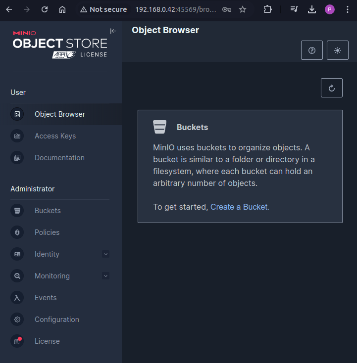
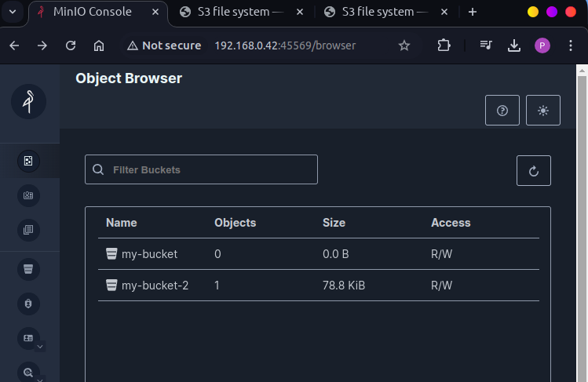
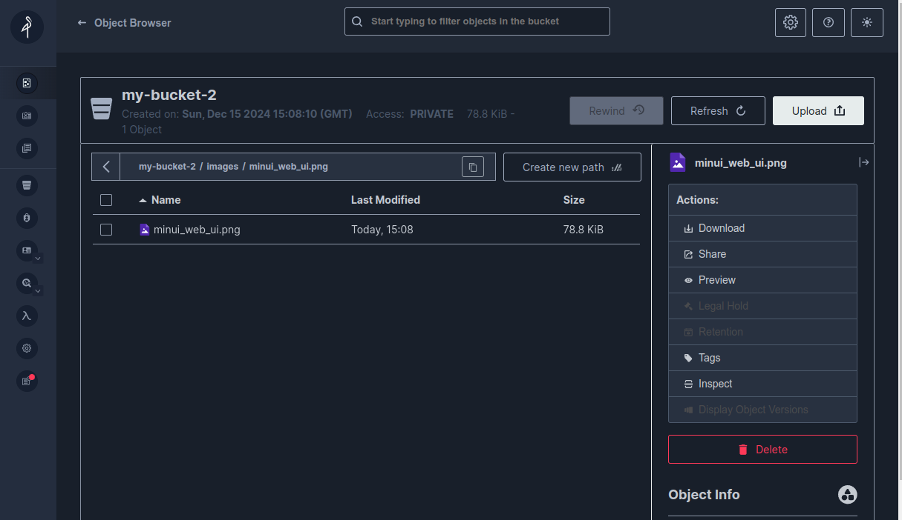

S3 file system#
S3 is a file storage service offered by Amazon. Just like normal internet where URL is mapped to IP addresses via registers, S3 has its own address protocol.
Here is an example of a S3 file hosted on AWS server.
s3://mast/level1/shots/11695.zarr
The s3fs python package sends a request to Amazon server and if the request is valid example, permissions, the file gets downloaded.
A guide on basic usage of S3 using S3fs: Link
MinIO: an alternative#
Since Amazon AWS is not a free service unless you put the credit card details, I will use MinIO, which is a S3 compatible storage. There are several ways to install MinIO on Linux.
Download MinIO Server#
wget https://dl.min.io/server/minio/release/linux-amd64/minio
chmod +x minio
Start MinIO Server locally#
./minio server .
This starts an API at: http://192.168.0.42:9000 and a Web UI at http://192.168.0.42:41779. The port numbers may vary. Enter the credentials in the web GUI to login.

Install MinIO Client (mc)#
Although MinIO has a web UI, it is better to use the command line interface to manipulate the files in python.
wget https://dl.min.io/client/mc/release/linux-amd64/mc
chmod +x mc
Provide the server details to mc#
./mc alias set local http://127.0.0.1:9000 minioadmin minioadmin
minioadmin is the default username and password.
Create a Bucket#
./mc mb local/my-bucket
An empty bucket can be seen in the web UI.
import pandas
# Create dummy data
data = {
"Name": ["Alice", "Bob", "Charlie"],
"Age": [25, 30, 35],
"City": ["New York", "London", "Paris"]
}
# save data to csv
df = pandas.DataFrame(data)
csv_file = "data/data.csv"
df.to_csv(csv_file, index=False)
/home/hell/anaconda3/lib/python3.9/site-packages/pandas/core/arrays/masked.py:60: UserWarning: Pandas requires version '1.3.6' or newer of 'bottleneck' (version '1.3.5' currently installed).
from pandas.core import (
import s3fs
# Create a connection to the S3 bucket
fs = s3fs.S3FileSystem(
key = 'minioadmin',
secret = 'minioadmin',
client_kwargs = {'endpoint_url': 'http://localhost:9000'}
)
# Create a bucket
fs.mkdir('my-bucket-2') # Create a bucket
# Upload a file to the bucket
fs.put('images/minui_web_ui.png', 'my-bucket-2/images/minui_web_ui.png') # Upload an image to the bucket
[None]
fs.put('data/data.csv', 'my-bucket-2/data/data.csv') # Upload a csv file to the bucket
[None]
print(fs.ls('s3://my-bucket-2'))
['my-bucket-2/data', 'my-bucket-2/images']
# Read a file from the bucket
with fs.open('my-bucket-2/images/minui_web_ui.png', 'rb') as f:
print(f.read())
b'\x89PNG\r\n\x1a\n\x00\x00\x00\rIHDR\x00\x00\x02\xd1\x00\x00\x02\xde\x08\x06\x00\x00\x00l\x9fM\xd2\x00\x00\x00\x04sBIT\x08\x08\x08\x08|\x08d\x88\x00\x00\x00\x19tEXtSoftware\x00gnome-screenshot\xef\x03\xbf>\x00\x00 \x00IDATx\x9c\xec\xdd{\\Tu\xfe\xc7\xf1\xd700$\xa8\x81x\x034 \x05\x7f\x81\x9a(\x88\x89\xabXi\x9ay\xc3[\xa9\x95v1\xcdM\xcb\xad\xd4\\u\xcb\xdars+-\xb3\x9b\x976q\xc3\x0c53M+\xd1U\x0b!\xf1\x86\xbbJ\x04\x163\xa0\xa6\x90\n\xca\xc00\xbf?f\xce0\x03\x03\x0c8\xdc\xec\xf3|<\xda\x95\x993\xe7|\xcfa\x86y\x9f\xef\xf9\x9c\xefW\xd5\xd67\xd8\x88\x10B\x08!\x84\x10\xc2a.\r\xdd\x00!\x84\x10B\x08!\x9a\x1a\xd7\x86n\x80\x10\n#\xe0\x82\nT*\xd3\x03*P)\xff\x10B\x08a\x87\x11\xa3\xe9\xff,?\x97\x1aKQ\xc9\xdfMQ\xcf\x8c\x98\xbe\xad\x8d\xca?0Z\xde\x85\xa6\xb7\xa7\n\x8c\xa6\xafx\xa3\xd1\x88J\xd5\xf4\xdf\xa3\x12\xa2E#\xa0B\xa5\x02\x17\x95\\\x18\x11B\x88\x9a1\xc7eU\xd9\xcfj\x95\x0bF\xa3\x11\xa3\xd1\x88U\xba\x16\xa2\xce\x181ZN\xdcTV\xef\xc5\n\xffR\xfa\xc8T*\x9b\xd74U\x12\xa2E\x83rQ\xb9X\x7f\xe2\x84\x10B8\x81J\xa52\xf5\xf4\x19M=\xd3B8\x9b\x11P\x19M]\xcb\xb5\t\xc3\x96\xd7\x18\x8d\x18UM3NK\xd7\x9fh0..j\t\xd0B\x08Q\x97T*\\\\\\\x90\xb28\xe1\\\xe6R\rg|\x87\xabT\xa8\x9a\xe8\x15\x13\t\xd1\xa2\xde\xa9T\xa0\x92\xd2\r!\x84\xa8\'\xe6^i\t\xd2\xc2\x19\x8cFS\xdd\xb3S\xa9L%H\xce^m\x1d\x93r\x0eQ\xcfTU\x07h#\x18)5\xd7\xf2\x99nP\x90\xcej\xe7R\x8e\xa9\xca|\xe7\xa6\n\x17\'\x7f\xb7\x9a\xef*Q\xfe\x1a\xca\xefO8\x9b\xe5\xbd%o2G)\xe5\x1d\xa5\xc6R\xea \x01\x89?\x08#\xa6\x1b\x02\xeb\xe2\x13g\xb9\xd1\xb0\t}\xf1K\x88\x16\xf5\xaa\xf2\xbbq\x8d\x94\x1a\x8d`,\xc5\xe6f\x84\xa6\xf19jR,\x7f\xa7Lg,\x18)\x01T\xe6\x1b;k\x7f\xc0\x8dVC\x04H\xa7\x97\xa8SVw)\x19\x8dF\xd3\xc9`\x13\xfa\xe2mH*\\0R\x8a\xdcp(j\xac\x9e\xceYM\xb7\x1bZ\x86\xf8h\xd4$D\x8b\xfaa\x04\x95\x8b\x8b\xdd\x10m\xba\x8b\\\xb9\xf1\xa5\xf1\x7fhn<\xa6^\xe3Rc)*\x95\xfd\xdf\x91Ck\xb1\x1d"@\x88zay\xbfJ\x80v\x88\xf295Jo\xb4\xa8\tcY/tu\xba\xb6\xe8F\xa0G \x1d\x9bu\xa4c\xb3[\x00#\xbf\\\xfd\x85_\xaffs\xa60\x8b\x13\x97\x8fW\xf9z\xf3\xfd\xb0\xa6 \xdd\xc8?\xd7*\x99\xb1P\xd4\x87\xca\xc2\x99\xb1\xb4\xd4\x1c\xde\x1a\xf7\x07\xe5\x8f\xc2h4\xa2rQ\xe3R\xc3\xdf\xc7\x8d2\xe6\xa7h\xda\xe4}\xe88\xa3\xb1\xb4\xde\x82td\xef\xde<\xf4\xf0dJ\r\xa5\xac_\xbf\x81\xe4C\x87\xeae\xbb\xc2y\x1c\xf9l\xb5vk\xcd\xc3\x1d\xa7pk\xf3NU.\xf7\xf3\x95\x0c>\xfeu\x1d\xbf\x15\xffV\xf56\x9b\xc0\x10x\x12\xa2E\xddS\x81\x8bJ]\xe1\xe1\xfa\xfc#.j\xc6T?)7\x7f\n\xd1\xd0|\xfd\xda\x03\x90\xa3\xcbu\xeaz\xebs\x1c\xe9\xd5k>\xc2\xcb\xcb\x0b\x80\xdf.\\\xe0\x89\xc7\x9f\xa8\xd3\xed\x15]\xbd\x0c\x80{\xb3\x16u\xba\x9d\xc6\xe8\xf3\x84M\x00\x8c\x89\x1d\xeb\xb4u:\x12\xa0\xfb\xb6\x8af\x8c\xefXnR\xdf\xe4\xd0:\xaf\x19\xae\xb1I\xb7\x91\xef\xf3\xbe\xaff\xbb\xd0\x98\xafpJ9\xc7\x1f\x8c\x9b\x9b\x1b\xd3\x9f\x9c\x0e\xc0{\xef\xbeGqqq\x9do\xd3\xde\x99d\xd9\x1f\xf0\xaa\xb5ha\xfa#x\xf9\xf2e\xa7\xb7KTN\xf9ru\xa4WOz\xff\xfe\xd8\xbcC\xc2\xe9d\xc8!\xb7e\'\xda\x9cO&5[\xdf\xa0\xed\xb9\xd1\xde\x8f\x91\x11\xbd\x00\xf8\xe2\x8b\xedN]\xaf\xe9\x189\x7f\x94\x85a\xf7\r\xe3\x81\x07\x1e\xa0Y3\xfba\xaa\xb5\x8f\x8f%\xe8)>\xdf\xf49\x1b6\xfc\xdbim0\x94\x968m]\xa2z\x7fj\xf5\'\xee\xef0\xd1\xf2se\x9fA\xeb\xc7oR\xdf\xc4\xe4\x8e\x0f\xe1\xaar\xe5?\x17\xffcw\xbd*\x95\xca*H_?\x9f\xd6>\xbc\xbe\xecu0\x1a\xf9\xcb\x9c\xe7\xc8\xcb\xbbx\xdd\xebtJ\x88\x1e?~\x1cnn\x1a\xe2\xe2\xe2\x9c\xb1\xba\xeb\xd6\xa5K\x08\xa5\xa5F\xd2\xd3\xd3\x1b\xac\rj\xb5\x9a\xc1\x83\x07q\xdf}\xf7\xd1\xde\xb7=\xf9\xf9\xf9\xfc\xfc\xf3\xcf\x1c?v\x9c/\xbf\xdc\xce\xb8qc\x19?a\xbcS\xcf\x16\xab\xe3\xe7\xef\xc7\xbc\xb9s\xf1\xef\xe0\x0f@p\xa7\xce\xbc\xb6t):\xad\xaeN\xb7k\xafG\xd3\xe8\xe0\xe0\xff\x13\'=\x80\xd1\x08\x1f\xbc\xff\x81\xb3\x9bU\x03nx\xb4\xf1\'\xa8-d\xa6eQ\xd8\x80-\xa9OFc)*;W\x10\x84\xb0P\xfb\x119 \x82\x96?|\xcd\xcd\xe1\xa1\xb4I=Ljv\xc36\xa9\xb1_\xfe\xad\t\x0fO\x0fn\x0b\xed\x02\xc07\xdf\xee\xa1\xb0\xc0\xb9\x7f}T*\x17\x8cF\x83S\xd7\xf9\xd0C\x0fr\xea\xd4)\xd2N\xa49\xb4|X\xd70F\x8c\x1c\xe1\xd4\x10]\x17\xca\x07\x7f{\x94\xef\xf3\xf2\xcb\xd6\xe7\xf7|]\xa8\xea\xa4\xb4\xb5[kF\xfb\xc6V\xb3\x02sis\xa9\xaaB\xc0\x1e\xed\x1b\xcb\x7f/\xff\xb7\xd2\xd2\x0eg\x9e\x10\xf7\xbd\xe3\x0enn\xd9\x12\x80;\xfa\xf6\xe1\xab\xed_]\xf7:\xaf;D\x8f\x1c1\x82\t\xf7O\xe0\xeb\x9d__wc\x9c\xc5\xd5\xd5\x8d\x80\xc0\x00J\x0c%d\xfe\x9cY\xef\xdb\xf7\xf1i\xc5\x0b/\xcc\'0(\x88\xa3G\x8f\x91\x92\xf2#n\x1a7B\xc3Byx\xca\xc3\xf4\xb9\xe3\x0e\xb2\xb2\xb2\xea\xb5M}\xfb\xf6\xe5\xcfO\xfd\x99\xd2R\x03\xcb\x97/\x07`\xda\xb4i,[\xb6\x8cw\xde~\x87\x83\x07\x0f\xd6[[\x1c-\xe1\x08\x08\x08`\xd0\xa0A\x00|\xbd\xf3k\xce\x9c9\xe3\xe0\x16\xda0\xec\xd5U<\x12t\x8e=o\xbc\xc0;\x87\xf2\xcb\x9er\x8b\xe1\xaf\xf1\x7f&\xfc\xdc.\xe6M\xff\x00\x87N\xb3\xdcz\xf0\xc4\x1bs\xe9W\xb0\x8bE\xd3?\xc0\xb1\xaf\x86\x1bCM{\xf5\xbc"g\xf0\xb7g\x829\xf2\xc2\x1c\xd6eY=\xd1\xa6/\x8f\xff\xf9\x01\xa2\x83\xdb\xe2V\xac%m\xd7\xc7\xbc\x1bw\x14\xd3o\xc6\x8d\xc0\x98\x87\x992:\x92`\x7f/\xc8\xcb\xe2\xc8\xf6\x8f\xf9p\xcbI\xf2\xedn\xa5\x9am\x99\xd7\xd9&\xf2^\xc6\xdd7\x80\x1e\x81^\xe4\xefz\x91\xe7\xe3\xcc\xef\x1f\xaf\xdb\x998m"1=\x02\xf1&\x9f\xcc#_\xb1\xee\x9d\xad\x9c\xb4\x97O\xdc\xfc\x88\x99\xf6$\x13\xa3\x03\xf0,\xce\'}\xcf\xc7\xbc\xb5.\xa5\xcav\x81\x07=\xa6\xbd\xccs\x83a\xfb\xb3s\xd8\x90U\xfb}\x04\r\x1d\xee\x8cetwH\x8d\xfb\x94\xfd\xe7\x95\xe3\x19\xc5\xc3\x93z\xd2\xcaj\xc9\xdfS?g\xcd\xdes\x8e=\x0f\x80\x9a\x96\x01\xa1\xf4\t\xff?:\xf8\xb6\xa0\xe8\xd8V\xe2\x0e\\0=\xd52\x90\x01\x83\xa3\tm\xdf\x12\xd7\xa2<\xb2O\xee\xe3\xeb\x03\xba\n\'\x90j\xdf.\x04\xba\x9f\xe5\xfb\x8ck\xb4\x8d\xacrG\xeaMm\xeb(\xc3\xc3\xbbs\xc7\x1dQxy{QXx\x15\x9dNG\xea\xe1c\xa4\xa7\xffT\x07\xadtL\xaf\x9e=,\x9f\xbf\x9e\xe1\xb7\xb3\x7f\x7f\xe5\x97\xbe\x1b\x0bWWW\xd2N\xa4\x11\x1f\xbf\xd1\xa1\xe5\'0\x9e\xb0\xb0\xb0:n\xd5\xf5\xdb\xe8\xe0\xfe(\xd2\xd2\xd2\x1c>\x91h\xcc\xaa\xfa\x0eP\x19U<\xdcq\n\xee\xd6%\x1cFS\xf05\x14\x97\xa2\xdc\x17Xj0b\xd0\x97\xa2i\xe1j\xd5\xbblZ\xa7\xbb\xfa&\x1e\xea\xf80of\xbc\x81Qe?\x1b8\xeb\xea\xd2\xf7?\xfc\xc0\x98\xb1c())\xe1\x87\xef\x7f\xb8\xee\xf5\xc1u\x86\xe8\x91#F\xf0\xd0\x94\x87\xf8z\xe7\xd7|\xf0\xc1\x87Ni\x903\xa4\xa5\x99\xde\xb8\xb7\xddv\x1b@\xbd\x06iWWW^xa>\xde>>\xfcm\xf1\x8b\x1c?n{\x17j\xcf^\xbdx\xf6\xd9\xbf\xd0\xa5KH\xbd\xb4\xc7\xcd\xcd\x8diOL\xe3\xce;\x07\x92\x91\x91\xc1\xb2\x7f,\xe3\xdcy\xd37\xf1\xffN\xfe\x8fg\x9f\x7f\x96\xbf<;\x87\xf0\xef\xc2\xf9\xe0\xfd\x0f\x9c^\xdea\xbf\xae\xd6\xb1\x10=\xe3\xc9\xe9$\'\xa7\xa0R\xa9\x98\xf1\xe4t\xe6\xcd\x9d_\xb3\x8dk\xda2p\xce\xf3h\xe7-fsV\xdd\x97\xad\xdc\x98\xaa\x1ffH\xa5R\x81W(\x83&Md\xd2\xc0`<\xd1r\xc4f\x89\x00&\xfeu\x06\xd1\x05\xdf\xb0rq"\x05\xfe\xf72e\xda\xb3<\x97?\x97\x05\xdbu\xe0\x11\xc9\xb8\xf1\xa1\x14\x1c\xf8\x8c\xb7N\xe7\xd3\xa6\xf78\xc6O~\x96)\xda\'x+\xd9\xce\xef\xad\xcam\x01x\xd0c\xcab\x9e\x8e.\xe6\xd0\xf6\xad|\xb8Q\xcby\xcb\xd5\x966\x0czf6\xc3<\x0e\xf2\xe1+\xef\x92\xe5\x16\xca\xb8iSx\xfe\xcfZ\x9e\xfcGJ\xb9\x90\xe8F\xe8\xd4\xf9\xcc\xec\xfd;\xdb?XF\x9a\xdb\x00&M\x9dmj\xf7\x96\xca\xae\xde\xb8\x118\xea\x05\x9e\x8e\xf4\xa4\x98\x02\xab&\xd5p\x1f\xcd\xbc\xc3\x87po\'wJ(\xb2}B\xed\x8e\xbaDK\xe2\xa6\x03d\x9b;\x12K\n\xf2\x1d\x7f\x1e\r\x1d\x06\x8c\xe4\xdeNEd\x1d;\xc6\xb7)y\\\xba\xa8<\xefC\xbfQ\x83\x08-:\xc6\xaeM?Q\xd02\x8c\xbb\x06\x0fcD\xe1\xa7|\x9aj]V\xa5\xc67\xf4\x16\xdc\xcf\'\x93Q\x08m+\xdd\x8b\xfaU\x9b/\xdb\x011\x7f":\xba\x0f\x17/\\$%\xe50*\xa0S\xa7[\x197~4\xff\xf9\xcfA\xfe\xb3\xef\x80\xf3\x1bZ\r\x95\xca\x85\xf0\x9e\xb7\x93\x9e\xfe\x13.*\x17z\xf6\xea\xc1\x81\x03I\x0e_\xc5s|;\xce\x1f\xa9\xa3Y\xb3fN]_c\xe0\xe8I\x81\xa2&\'\x12MU\xa0G@\xc5\x9b\x08U`(6\x10\xf1L(-o\xf1\xc4\xa0/E\xa5Vq\xf1\x7f\xbfs\xe2\xe3\x0c\x8c\xa5FT.\xb6\x9f\xd1N\xcd;\x13\xe8\x11@\xe6\xd5\xacJ\xb6\xe4\x9c\xde\xe8\xdf\xce\xff\xc6\x94\x87\xa7:e]\x8aZ\x87h%@\x7f\xfb\xcd\xb7\x8d*@+\xd2\xd2\xd2pQ\xbb\xd4{\x90\x1e|\xcf`\x02\x83\x82x\xed\xb5\xa5\x15\x02\xf4\x84\t\xe3\x01\xf8\xe9\xa7\x9f\x08\x0b\x0b\xad\x97\xf6\xbc\xbe\xec\x1ft\xec\xd8\x91-\x9b\xb7\x10\x17\xf7oJK\xcb.\xdd\x9d;\x7f\x9eys_`\xd2\xa4\x07\x185z\x14\xc1\xc1\x9dyz\xf63\xcem\x80\x9d\xf7\xbe\xb1\xd4X\xedg\xe2\xae\xbb\xef" \x90\xd7_\xff3\x00\xef\xbc\xf3\x0ew\xddu\'\xdf~\xfb]\xcd\xb6\xaf\ta\xf2\xbc\x99h\xe7\xbd\xc5\xa1J\xbb\xfc\xbc\x08\x1b=\x85\xc9\xf7\x84\x13\xd8\xd6\x8d\xe2sY\xa4~\x19\xc7\xda/\xd3l{\t\xdb\x0e\xe6\xa5\x84\xc1\xa6\x7f\xa7\xbe\xc3\xfdK\x12)\x8b?n\xf8\x0f\x9c\xca\xb4\t\xd1\x84\xb4\xf5\x84\x82<\xce\x9d\xd8\xc8?\x96\xeeFk\xd9\xc64\xa6\xde\xd7\x83 o(8\x97\xc5\xa1\x84\x0fx\x7fW\x96\xd5:<\x08\xbeo*\x8f\xdc\xd7\x9b\xc0\xb6\x9ePp\x8e\xd3\to\xb2\xf8K/\x9eYS\xae\'<l\x1a\x1f-\x19\x8cf\xff\xcb<\xfa\xc6\x11\x8a\xf1\xa2\xf7\xe4i\x8c\xee\x1d\x8c\x7f[o<5z\xf2Nl\xe4\xe5E[\xc8rh\xdb\xf6\x19K\x8d8R\xd1\x11<\xea1\xc6\xf9\xa7\x13\xf7N\x16\xc3\xa6\x95{o\x07\x0f"\xda\xff<\x89\xcf~Lr\x16\x90\xfe\x11\xeb\xc2z\xf0\xe2\xe0\x01\x04n\xff7Y\x85\x07y\xfdI\xab+!\xc9\x85\x04\xf6XLH\x98\x1f$W\xbc\xfaP\xe5\xb6\x00\x8f\xc8\xc7x2<\x8b\xb7f\xaf\xe2H\xf9\xaeS\xb7`z\x04\xbb\x91\xb6\xf2c\x12\xd3\x8a\x813\xac\xdb\x15\xc3[\x83{\xe0O\x8a\xed\x95\t\xb7\xdb\x19\x16\xed\xc5\xe9\xcd/\xb1.\xf1<p\x92\x82\xa0`^\x1c|/\xc1[>\xb2{\x15\xc3-l"O\x0f\xd3\xb3q\xe5WD??\xa0\xec\x89\xea\xf6\xd1\xa3\x0b\xa3\'E\xe3\x91\xba\x95\xb8\x14So\xb0\xba}4\xf7F\x18\xf8~\xc71\xc2Fu\xb1\xdd\x90\xbb\x06\xf7\xa2|\xce\xe7^\xe0<vT\xf3\xbc{\xa7\xfe\xdc\x1bp\x96\xaf\xe2\xf6\x91].\x9f\xd3\xfe\xff\x08iu\x99\xe3qId\x9c\x07r\x0f\xb0\xb7C\x10\xe3B;\xe3\x9d\x9aJ\x9e\xb2\x9c\xba\x1d]\x024\x9cO\xf9\x95B\x9a\x01\xae\xb4\x0c\x1d\xca\xc3\x11>\xb4r7\xf0\xfb\xf9\x9f\xd8\xbf\xeb\x00\xa7\xf3\x0c@\x0bB\xee\x1cHd`kZ\xb5t\x87\xa2\xb3|\xffi\x02)\x97Z\x10\xd2o w\x84\xb6\xa3\x95Z\xcf\xc5\xec\xff\x91\xb8+\x893\xf5X3u\xdbm]\x88\x8e\xeeCj\xeaQ\xbe\xde\xf9\r\xa5\xa5JH\xfd\x96\x81\x03\xfb\xf3\xa7?\xf5\xe5\xcc\x99_\xf8\xe5\xcc\xafu\xd6\x86\x8e\x1d;\xe0\xdd\xca\x0bO\x0fO<<\x9b\xe1\xe9\xe9\x89\x97\x97\x17\xcd\x9b7\xe7\xf0\x8fGQ\xa9\xe0\xfe\x90q<\xf8\xd0\x03\xe4\xe7\xe7SPP@a\xc1U\n\n\x0b\xc8\xbb\x98\xcf\xaf\xbf^O\r\x8d\xa96\xda\x99\x86\x8f\x18\xce\xb5k\xd7\xf8\xf4\xd3x\xa7\xae\xb7!\xd5\xa4\x9c\xa3\xbe\xdd\x16z\x1b\xff=\xf9\xdf\x1a?w\xbd\x02=\x83\xec>^Zb\xa4M\x8fVd}\xad\xe3\x97=\xb9h<]\xe9=7\x0c\xb5\xbb\x9a\xe4ei\xb8\xdf\xac\xa9\xf0\x96\x0b\xf4\x0c\xaa"D7^\xb5\n\xd1\xd6\x01\xfa\xddwW9\xbbMNs\xfc\x98)\xc4\xd6g\x90\xbes\xe0@\xd2\xd3\xd3I>\x94\\\xe1\xb9\xf1\xe6\x10]\x9f:v\xec\xc8\xd6-[\xf9\xe4\x93\xf5v\x9f/-5\xf0\xc9\'\xebQ\xa9T\x8c\x1c5\xd2\xf9\r\xb0\xd3\x91Y\xdd\xe5V\x0fO\x0f&M\x9e\xc4\xa6\xcf6\x11\x14\x18H\xa9\x11\x12>\xff\x9cI\x93\'\xf1\xfd\x0f?\xd4\xa0.0\x93=\xdb\xf2\xe9=\xbc\x1f\x7f\x9e\x93\xce\xfcE\xdb\xcd\x81\xd6\x9a\x1baS_\xe4\xaf\xc3\xfd\xe1\\\x1a\xa9\xfb\x0b\xf0\x0e\xe9A\xbfG\x16\xe0\xef\xb5\x98\xf9\xeb\xd3\xcb\x82fA&\xfb\xbf3\x05k}V\xb9\x00\xea?\x8cg\x9e\x1aLP\xdei\xf6\x7f}\x9a|\xbc\xf0\xd7\xe7\x9b\x03\x87\xb2\x8d6\x14\x9c:\xc4\xd7\x87\xc0?\xbc7\x03\xa7/\xc0-\x7f6o\x1e*\x04\xdc\x08\x9e\xfc"/\xc5\x06A^&i\xfb\xb5\x14xzS\x9c\x7f\x1e\xf0r`_\xdb\x10\xd6\xaf7!m\xf3\xc8L\xdaOV\xb1\x06\xaf<-\xe7\x1c\xdav\xe5\x1c\x9d\x845}\xdd\x1c\xa6\x01\xf8=\xc0\xb0r\xcf\xb9y\xba\xe1F1\xf9\x96\x8e\xd9b\xb2Nk!\xda\x1f?7\xa8p\x91\xc0\xc3\x0b/\x8d\x9e|\xad\xfd\xb3\x9e\xaa\xb6\x05m\x88\x19\x1d\x89\xc6M\xc7\x94\xe5kh\xa3)\xe6\xfc\xe9D\xd6\xad\xfc7G\xf2\x81\xe2s\x9c?\xaf\xa1o\xe4\xedx\x1dH!\x9f\x9b\t\x0ekCq\xd6\xd6\x8a\xef\x8d\xc00\x02=\xf3INSbh1\xe9\xa9\xe9\x14\x0c\x0e$\xb8\r\xa4\x97O\xa7\x1e\xb7\xf3\xf8\xcc\xbeh\xd7=\xcfW\xda\xbeDWq\xbc\xec\xee\xa3\xab\xd5\xd9\x8a\xda\x8f\x98\xc1\x9d\xb9\xb4w#\xc7/u\xa6\xfc\xc5n\xb5\xa7;\xae\x06=\xea\x96\xcdP_\xbaJ\xf9\xaa\xd6\xaa\x9foAhD\x10j\xf2\xb9\xeb\xa1Gh\xe9j\xe0b\xf61\xf6~\x9bJv!\xe0\xaa\xc1\x15=\x05\x96pm\xe0|n\x1e\x84\xb6\xa3\x95\x1a\xf2\x94\x95\xf9v\xa6\x93\xfb\x05\x923.\x03\xa6\x9eG5y\x1c;p\x98\x8bE\x1et\xe9\xd3\x87a\xa3\xa1\xf0\xe3}d\x1b\x9a\xd11\xd0\x1f\xf7\x9c\xbd|\xb1+\x1f\x83;\x14\\\xd2\x10p\xd7\x08\x86u\xba\xca\xe1\xbd;I,jA\x97>\xd1\x8c\x18\xeb\xcagq\x07\xc8un\xa9n\xa5\xee\xe8\xdb\x9bK\x97.\xb1{\xd7\xb7t\xea\x14\xc4\xc0;M\'?\xdf~\x9b\xc8\x9e=\xfb\x08\x0e\xe9\xcc\xe4\xc9\xf7W\xb9\x8e\xfd\xfb\x0f\xb2oo\xed{\xabKJJ\xb8s\xe0\x00<<=\x00\xb8v\xed\x1a\x85\x05\x85\xa4\xa7g\x90\x99\x99\x05\xc0O\xe9\x19\xb4j\xe5M\xeb\xd6\xb7r\xd3M\xa6\xcb\xe7\x05\x05\x05l\x8c\xff\xbc\xd6\xdb\x05\xe7G\xe8Y\xb3\x9ef\xf2\xe4\x89\x8c\x1b?\x8e\xfd\xff\xd9O\xb6\xb6\xe2_]{V\xbc\xbd\x82O\xfe\xf5\t\xc9\xc9\x15\xbf;\x1b\x83\x9a\x96s\xd4\x97\xa9S\xa7r\xef\xb0\xa1\xbc\xf5\xe6[\x1c8`[\x96\x19\x1d\xdd\x97g\xe6<C\xc2\xe7\x9b\xd9\xb0aC\xad\xd6_U\x7fW\xb0\xa7\x9d+\xeaF\xd3\xab\x0cE\x06\xf23/s\xe1d>\x86\xa2R<\xda\xddD\xf7\xc7\x83Q\xa9Uv3@`\xb3[\x81=\x95l\xc9y\x13\xaf\x0c\x192\x04#F\xa7\x95 \xd78D\x8f\x193\xc6|\xb3\x97\x91\xf6\xbe\xbe\xbc\xb4\xe4\xc5*\x97_\xb4pq\xad\x1b\xe7\x88\xa8\xa8\xa8\xaa\x170_\xda\xbb\xed\xb6\xdbpQ\xb9\x90\x91\x91Q\xa7\xed\xf1\xf3\xf7#1q\xaf\xdd\xe7\x1a\xea,\xb5\xa8\xa8|WS\xed\x96\xa9\x8d\xda\x941M\x9e4\x89k\x85W\xd9\xb2e\x0b\x8f?\xfe\x18\xa5\xa5\xa5\xac]\xbb\x96\x81\x03\x072\xf1\x81\x07\xf8\xe8\xa3\xd5\x0e\xafK\xbb\xebM\xde\xf0\\\xc6\xc2;\'\xf1\xcc\xe4\xd3\xcc/\xdf1\xe2\x11\xcd\xe8{\xfc\xd1\xe4\xedg\xe9\x9c\xb78T\x08xE\xf3\xfc?\x9f!\xea\x9e\xf1\xf4Nx\x85\x03J\xc8+Hg\xd7\xdau\xf6k\xa2\xdb\xf8\xe3\x05\x14\x9c\xde\xce\xda\xf7\x0f\xd8\xf6`{\xc50\xfe\x1e\x7f4\x99\x9bY\xb4d\xb3)\xac\xed9\xcfK\xaf\x8d\xa6\xf7=\xe1x\x1c:@\xa1G4\x13\xee\x0bB\x93w\x887\xfe\xf2\x0f\x0eX\xaf\xc0\xcd\xe1\xdd\x05}:\x1b\xdfx\x8bCJ\x9b\xbd\x06U\xbf\xed\x1a\xac\xbe6\x8a\xb3\xd2\xc9\xd2\xf7%f\xf4\xed$\xae=J>7\xe3\xdf\xd6\x13\xec\xf6\x83\xdfL\xe4\xb4\x07\x08\xcb\xff\x86\xbf%\xfe^\xf3\x8dy\x84\xd2#\x10\xf2\x0f\xec&.1\x8b|\x02\x196\xeda\x9e{>\x9f\xa7_\xd8\xc1y~b\xe3\x07[\x08}~6\xffx\xfd(\'\x0b\x03\xe8\xe1\x95\xcc\xca\xc5\x07+\x1c\x077\xaf\x9b\xf1\xa4\x90|\xab\xdfEq\xfe\xef\x14\x10L[/\xb0\xed\xe2u#x\xfc\xc3\xf4\xd0n\xe0\xf9\x03\xbfC\x9b\xaa\x1aig\x1f\x0bO\xb1y\xd5)\xf3\xf3j\xda\xf7\xebO\xa7\xbc\x03\xac?}\x15ZV\\\x83;\x06\n\xd4\x9d\x19\xf1H\x18\xae%\x97\xf8\xf5d\x12\xbb\xbe\xfb\x89K\x8e<\xafnG`\x1b\xb8t:\x8d\xfd\xc7\xceR\xe8\xda\x9a\xf0;\xfb3\xfa\xde">\xdet\x92K\x17u\x9c/\xe9L\xf7\x88\x8e\x9c\xfa\xeeW\n\xd5\xcd\xf0\xf6v\x07\x0cX_\x94\xe8\x10\x12\x84\xfb\xf9\xc3d(\x1b\xa5\x84\xbc\x93?\x90z\xf2*\x00g\xce\xabi\xf5P\x1f\xc2;\x1d \xfb\xb4\xe9\xf9\xc2\xdcL\xced_5\xff\xae\xbapW\x88\x07Y\xdf%\xb0\xd7\xe65\x91D\x06\xfe\xc0\xb6\x8c\xfaI\xd1\xad[\xb7\xe1\xe8\xb1\xe3\x94\x94\x18\x18z\xef`\x9a7o\x0e\xc0=C\xee\xe6\xddw>`\xcfw{i\xdf\xbe}\xa5\xaf\x0f\x08\xe8H\x9f\xa8\xde\xd7\x15\xa2srrY\xb3\xe6\x13\x1e\x988\x8e\x96-[\xb2u\xebWd\xfcd\xfb]\xb5qc\x02\x00\x9d:w"6v\x04\xbf\xe7\xe7\xf3\xe9\xa7\x9fs\xe9\xd2%{\xabt\x9c\x93S\xb46;\x9b\x0f\xdf\xff\x88\xde\xbd{\xd3\xfd\xf6\xee\x0e\x87h\x7f\x7f?\x1e\x9b\xf6X\xa3\r\xd1\x8d\xb54\xa3\xb0\xb0\x00\x17\x17\x17\x9e~\xe6i\xae^+\xfb\x1e\x8f\x8c\x8c\xe0\xe9g\x9e6\xd5\'\x1bj?ZIU\xf15\xc8\xe3\xd6\x8a\x0f*7\x11\xaa\xc0\xb3m3Z\xde\xe2\x89k3W\xba\x8c\x0f\xe0\xb7\x13\xf9\x18K\xecw\xa2\x05U\xd2\xab\xedL}\xfb\xf6\xe5\xf1i\x8f\x01\x90w1\x8fCN\x18\xaf\xbc\xc6!\xda\xd5\xdc[b\x1aG\x16\xa7\x0f\x8fS\x17\x94\xa2t\x17\x97\xba\x1f\xf7\xd64\x95r\xf5\x07%*\xaa7\xbe~\xbel\xd9\xbc\xb5\xce\xdb\xa4\x08\x0b\x0b\xa3kW\xdb>\xad\x13\'\xd2,5\xe4u\xa1\xa63\xf1\x06\x04\x040\xf8\x9e\xc1\xfcm\xf1\xdf0\x18\x0c\xa8\\\\\xc0h\xa4\xb8\xb8\x84U\xab\xdec\xf1\xdf\x16\xb1{\xf77\x8e\xdfd\xa8/\xe4\xc8\xfbo\x92\x10\xf4"\xb1\xb1\x7ff\xea\xe9/m\x9f\x0f\t#P\x03\x05\x87\x0e\x90\xaa\xa4\xa8\xfcC\x1c8\xad\'*\xca\x9f\xb0 8p\xda\x81\xed\xa4%r(;\x9a{\xa2\x9ea\xc5\x8a\xc1\x1c\xda\xf3%\x9b\xbfLF[\x0c\xf8\x87\xe0\xaf\x01\x82F\xf3\xda\xfa\xd1\xb6\xaf\xf3j\x837P\x18dnG\xea\x9e*\xcaNj\xc1\x91m;qsv\xe5\x7f\xc3\x87+\x83yn\xda\x0b|8\x18@\x8f^\xaf\x81\x82D\nmr\xf4\xcd\xf4\x98\xb6\x98\x99a:>|\xe1c\xd2kS\xc6\xee\xe9\x85\x97\xa6\x90\xd3\x07\xbe!9\r\xe0\'V\xae\x0f\xe5\xc3\xb9\xd1D\xb6\xd9\xc1W\xe7\xc1\xcb/\x10O}:\x07\x13\xd3\xa0\x87\x1f\xb4\t%&\xd2\x8f\xe4\xdd\xd71JM\x9b\xbb\x992\xb0\x90\xaf\xe6\xef\xad\xe6FA\x07\xf6\xb1e(1\xa1z\x92\xe3~\xaa\xf4wSxr\'kN\x02\xeaf\xb4\xef\xd2\x87\xbb\xee\x1c\xc4\xe8\xa2<>6\xdf\x18X\xe5\xf3\x9e\xcd\xf0p\xd5s\xfe\xe4I\xce\xe4\x02\\\xe0\xdb\xbd\x1d\xe94\xfa\xff\xe8\xe4q\x92\xd4\xc2S|\xbb\xcb\x8f\xe1w\xdd\xc7\x13\xdd\x01J()q\x85\xa2\xffQh\xc9\xb5m\xe9\x12\xa8\xe1bj\x16\x95F\xb8Kg\xc9)t%\xb0\x8d\x17\xd8\xfb\x0c\xb5\xf2\xa3\x95k>\x87\x95P\rpIGN\xa1;\x81\xed\xbd \xe3B\x95G\xd2YJK\r(\xf73\x95\x96:\xf6\x85\xf6\xcb/\xbfp\xc6R\xde\x11\xcd-\x01\x1d\xaf\xbb\x1d\x97.]b\xdd\xdaO\x187~\x0c\xe3\xc7\x8ff\xcfw{\xf9\xe1\x07\xdb@\x19\xd5;\x92;\xef\x1e\xc0\x99\xac_\xf9\xfc\xf3\xcd\x14\x15]\xffp\x82\x8d\xea;\xbc\xd4\xb9\xf5\xde\xceTY9\x87\xd29v\xd7\xddw1n\xdcXJ\x9d\\\xb3^\x9d\xf8\xf8\x8d\xa8\\\\\x187n,\xcf>\xfb\x17\xcb\xe3\xcf>\xf7\x17\\\\\\\xd8\x18\xbf\xb1\xfeO\x00TP\xaa/%xd\x07\xfc\xeeh\x8d\xebMj.e\x15p\xe4\xbd\xd3\xb85w\xb5{\xd2\xe6\xa6\xaaIoQ-\x9be\x95ETN\xca\x835\x0e\xd1\xf1\xf1\x1bqwwg\xe4\xa8\x91\x9c?\xff\x1b+\x96\xafpJCj+))\xa9\xca\xe7\xbbu\xef\x86\x8fO+2~\xfe\xb9^\x86\xbc\xcb\xd5\xe5\x10\x10\x18X\xedr\x0f?\xfc0y\xf9\xf9\xf5\x1a\xa2\xbbv\r\xb3SR\xb2\xb1NC\xb4=U\x95r\xccxr:\x07\x0f\x1e\xe4\x84\xf9\xae\xe6\x94\xe4d\x0c\xe6/\xb6\xe3\xc7\x8fs(\xe9\x10\xd3\x9e\x98\xc6\x82\x17\x168\xbe\xc1\xe2t\xe2\xde\xd8H\xd7\x7fN\xe6\x9e\'F\x97\xd5t:\xbe\x02\x07\x16I\xe3\x83\xbf<\xcb\x91{\xeec\xf0\xe0h\x06>8\x97\xe8{v\xb1t\xce\x07\x1c1\xffm\xd0\x9f\xda\xcc\x9b\xf1iX\x7f\xed\x15\x17j9\x07e\xbd\xcdv7e~\xd0\xad\x16\x7fd\x1c\xd9vU\x9c4\xbc\xd0\xf9\x03\xabx\xfe\xc0\xc7x\xb5\xf1\xc4\xad\x00z\xcc}\x83)\x9c\xb4\xcaV\x1e\x84Ny\x81\xe7"\xf3\x89[\xbc\x8cD\xbb\x85\xbe\x8e\xd0S\x8c\x07\x9e\x9en(\xc7\xad\xf8\xfc\xef\xe4\x13\x88\xa9\xf3{\x00S&\x07\x92\xfe\xce3\xacK.\x84\xed\xdf\xb0k\xd4\xcb\xbc>y"}\x13\x97q\xd0\xea\xf8+\xbd\xce^V\xbd\xce\xa6\xde\xe9\xdf9W.)\xb7\xe9\x1dM\x88g0!+\xe2\x99d\xf5x\xc8\xb25\xf8/}\x82\xd7\x93\x8b\x1d\xde\xc7\x96\x9d\x82\xf1uo\x87\xef#3\x88\xb1z\xdcw\xd2#\xb4\xdc\xf61_Y\xf7\xd0\x1a\xae\x92{r\x0f{\xdb\xdf\xc2\xb8N\x9d\xf1>p\xc1\xf6\xfdm\xef\xf9\x120\xa0\xc1\xdd]\r\xe6B\x0fC\xe1e\ni\x8d\xa7\'P\x08\x97N\xef!\xee\xf4><Zz@\x11t\x1a~?1%\xba\xb2\xce\xf7\xf6\xffG\x80G>\xc72\xeah\xfc\xf6z\x9c\xc1\xe0\xfc\xb9\xdf\xb8\xb5s\x10\xae\xaej\xbe\xfd6\x91\x91#\x87a4\x96\xf2\xdd7\x89\x00\xdcyW\x0c>>\xadl^\xf3\x9f}p\xf9\xd2\x15\\\xd4\xce\xed\x98)*\xd2\xb3!.\x9e\x87\xa6L\xa2\xcf\x1dQ\x15B\xf4\x1d}{\x93\x93s\x96\x7f\xff{c\xa3\x9d\xa8J\xadV\xf3\xf0\xd4\x87\x018z\xac\xea\xe9\x9d\xad\x19\x0c\x06\xfe\xf5/\xfbe\x87\x8dAU\xe5\x1c\xa1\xa1\xa1<\xf9\xe4\x8czl\x8d\xadO\xff\xfd)\x1a77\x9b\x92LWW\xb7:\x0f\xd0\xd9\xd7~%\xd4\xcd\xce\xc8*Fpqs!m}&Y;\xb5\xb8y\xba\xa2\xbf\\\x82\x9b\x87+.j\x17\xbb\xa3md_\xab\xbb{\x0e\x14\x07\x0e\x1c\xa4\xe5\xcd7c(.!\xe9\x87\x06\x1c\x9d\xe3_\xff\xfa\x04\x80\x91\xa3FRR\\\xdch\xeb\xa2\xbbu\xefF\xc7\x8e\x1d\xc9\xf8\xf9gN\xfd\xf7\x7f\xf5\xb2\xcd\xbd{\xf7\xf1\xf0\x94\x87\xe9\xd5\xab\x17?\xfe\xf8\xa3\xdde\x06\x0f\x1eD\xbb\xf6\xed\xf8z\xd7\xaeziSy\x95\x8deYo*\xc9e1\x03\x07\xd2\xf1\x96\x8e,}\xedu\xcbc\x1aww\xf4V\xa5&\xab\xd7\xac\xe1\xed\xb7\xdff\xc0\x80\x01\xec\xddk\xbfl\xc6.\xed\x16\xdeY\x1f\xce\xab\x8f\x84\xe1m\xfd\xf8\xe94\xb2\xf4\x03\t\x0f\x8b&\xdc#\xd9T\xce\xe1\xd1\x9b\xe8\x10\r\xe8\xb5\xa4e\x02\xc5\xc5\x14\xe8\x01//\xbc<\xa8\xbc\xeb\xb6X\xc7\xa1/?\xe0\xd0\x97\x1b\x89\x9e\xbb\x9c9Q\xd1\x0c\xec\xba\x96#\xa7O\xa3\xd5\x0f\xa4k\x87@<\xb2\xe2\xec\xf74g\x99\x97\xb1n\x87e\xbd\xf9\xe4\xe7\x01m\xfd\tl\x03i5\t\x98Y\x0el\xbb\n\xce\x1dq\xb7\x90\xfc\xf3\x85xE\xcebTX!\xc9K\x93-\x87\xd2+\xfaI\x9e\x1e\x0c\xdb\x17\xbf\xcaW\xba\xeb\x18I%_\xc7\xf9<\r\xc1a\x01p\xc044\x99G\xa0\x1fm\xf4\xf9d\x9d\x03\x82\x82\xf1\xf7,\xe0\x80V\xd9r1\xba\xf4,\n\xdc\xfc+\x96hd\xa5\x91Up7\xc1!J\x01\xb4\x1b\x81\xe1\xc1x\x9e;Z\xa1\x1e\xfa\xfc\x9e\xe5\xccN-;\xc9\xd1\xb4\x1d\xc4\x93\xcfG\x90\xf5\xe626\x1c)\xae\xd1>^:\xb9\x9buYV\x85\x13\x9ea\xdc;*\x90\xdc\x1d\xdb\xf9>\xcb^\x89Cuw~\x96{\xbe\xf0\x02\x17\x0b\\\xe9\xd0\xc1\x072L\xa7Q\xee\xde\xadiYr\x99\x8b6\xdd\xca\x06\n/]\xc6=` \x91\x1d\xf4dl\xcb\xb4\x8c\x11\xd2>\xb4#\x9ey\'9]U%\x81\xb7?\x1dZ\x16q>7\x1f\xf0\xa9\xf8\xfc\xc5\xb3\\,\xe9L\xc7\x0e\x1aRN\x9aO\xefZ\xfa\xe1\xebQ\xc4\xc5\x1cg^\x8e\xa9ZRR\n\xb1cF0h\xf0]|\xbd\xf3\x1b^;Y\xf6]1p`\x7f||Z\x11\xb7>\x9e3g~\x01\xe0\x85\x05\xcf\x01\x10\xd6\xb5nn\x0e/--\xc5\xe3\xa6\x9b\xf8\xe5\x17S\xa8\x88\xecm\x9al%\xf9\xd0\x8f\x9c\xf9\xe5\x17\xda\xb7k\xd7h\x034\xc0\xc6\xcfL5s\x9b>\xdb\x846\xdb\xf1\x1b\x1e\xc7\x8f\x9bPWMr\x8a\xaa\xc2hpHp\x85\xc7\x8aK\xeaw\xc2\x17\xeb\\\x06\xb0u\xcb\xd6:\xef\x81\xce.\xcc&\xb4E\xb9\x10m4]\xfdWk\\L=\xd2%\xa6\x81\x04\xdcov\xc3XZ\xf9pu\xd9\x85\xf53\xc0\xfc\x8e\xafv8u}\xb5>\xdf/\xff\x0bklA\xba!\x024\xc0\x8e\x1d;\x1900\x86\x99\x7f~\x92\xe5\xcb\x97s\xf4\xc81\xcbs\x1a\x8d\x86\xe1\xc3\x873~\xc2822~f\xfb\x97\xce\x9d\x81\xaaq\xb2SQe\xa7\x0e\xe8\xa6\x9b\x9a\xf1\xd0C\x93\xf9t\xc3\xa76\xb3\x08]\xb9r\xc54\x9a\x87\xd9\x85\xdf.\xb0i\xd3&\x1ez\xf8A\x92\x92\x0eq\xed\xdaU\x1c\xa5\xfd\xf2\x1d\xe2{/\xe3\x91\xae\x9ee\x0f\x16\x1e`\xf3\xd7\xa3\t\x1b\xde\x8fg\xde\xf0\xe6\xd0\xe9<\xbcBz\xd3\xd5[O\xf6\xb6\x8d\xe60\x9bIZV\x01\xf7\x84\xf7f\xea\xc2\xa7\t\xd7\x82\x17Gx\xff\x9d\xc4\xb2\xcc\x152\x89\x17\'\xfbs^{\x8e\x02\xbd\'\x81!\x9e\x80\x96\xfc\xfcb\xc8?\xc0\xe6\xfd\xa3\xe9zg8O\xbd\xfd:\xfdR\xb3\xc8\xc7\x936\xfen\x1cz\xe3\x15\xb6k\xb1Z\xa6\x1f\xcf\xbc\xdd\x96\xd44-\xc5x\xe1\x99\xb7\x9d\xa5k\x8f\xb0?U\xcb}\xc3C\x98\xbc\xe4EBN\x9c\x83\xb6aTVUl\xc3\x91mW\xc1Y\x03\xdd{\xf8u&\xd0\xdf\x9f\x90\xde\x83\xb87:\x80\xc2]\xcbL=\xc1\x00\x04p\xef\xf8\xdb\xe1\xd0G$\x13@\xb0\xf9\xfb\xa8\xb8\xe0<Z\xdd\xef\x14\xb7\x19\xc0\x0b\x7f\x7f\x18\xafD\xab\xb1\x9e+S|\x92\xed\xc9\xe7\xf8{\xcc\xe3<\x9e\xf61\x89\x05~\x8c\x1a\x1fJ\xc1\xa1\xe5\xa6\xdfe\xe6\x11\xd2\xf3\x06\x11\xf3\xc4\x03\xa4\xaf?\xc8yM \x83&E\xe2}~\xaf\xe9\xe4\xc4f[G\xd9~ \x9f\x05\xe3g3\xa5\xe03\xd2\xdc\xfa2)\xc6\x8b\xd3\x1b\xbf2\x8d\xccQ\xae]:\x9b\x13\x9fs\x14SL\xfe\xf93\xe4\x17;\xb0\x8f\xe5F\xe7\xc8\xb3\xbeE\xc1p\t\x03\x06\x8a.\xe5\x9b\xcb)\xbc\x08\x8d\x0e\x82\xdc\xdf\xb8T\x04-\x03\xc2\xe8\x13\xaa\xe1\\\xeaO\xe6^\xe8\xea\x9e?\xcb\xb1\xd3y\x84u\x1b\xc0\x80\x9c\xbd\x9c,lMd??\x8a2v\x93a\xde\xae{K\x1f\xbc\xbd\xbd\xf1\xed\x14Jdh;\x8a\x8e\xed\xe4\xdb\x0c\xe5:F[\xba\x04zp\xf1Xf\xb9R\x0eW<\xda\xdfB@\x87\xcb\xe0\xd1\x8e\xee\xfd"hu\xf1\x18\xbb\xec\x06\x7f\xa0\xf0\'\x92OG\x12;\xe0>\x06\x90LFA\x0bB\xfbE\xd2\xe6\xd2)\x12\xcd\xbd\xed\xde\xe1\xb1\xdc\xdf\xa7\x88\xfdq\xdb9~\xc9\xb4o\xe1\x13b\x89,:\xc0\xa7[N\x99\xb6\xef\xdd\x8d\xfb\xef\xefI\xd1\xde\x046\x9f\xacy\xcf\xf8\xff\xfew\x8a\x03\x07~ :\xba\x0f\x01\xb7t$\xe3\xe7,\xae]\xbd\x86\xafo;:\x07wb\xff\xfe\x83\x96\x00\rPRb \xa0\\\xf9FI\xb1\xf3\x02\x93gsO\xbc\xbc\xbd\xf8)\xe3g&?x?\xb7\xdcb\xdaV\x97.!\x9c;{\x0e\xef\xdb\xbc\xf1\xf4\xf4\xa4\xa0\xa0\xa0\x9a59\xca\xf9\x81|\xdb\x17\xdb\xf8\xf7\xbf?u\xfaz\x1b\xab,\xf3\xcd\x9f\xd6\xfe{\xb2\xeerGeS{\xff\xeb_\x9f\xa07\x0fS\xfb\xa9\x9d\xe3\xef\xec)\xc1\xb3\xaf\xd9\t\xbe*P\xb9\xa8(\xc8\xbdJ\xc9U\x03*WS\x81tU\x01\xba\xd2u5\x01\xd7u\xd1\xcc\xa6G\xba\xa4\xa4\xd1\x0cu\x17\x16\x16\xd6 \x01\x1a\xa0\xb8\xb8\x98\xbf\xbf\xfc\n/\xfcu\x01\x8b\x16-\xe2\xd8\xb1\xe3\x9c9s\x86\xd6\xad[\x13\x1e\xde\x83\x9bn\xba\x89\x8b\x17/\xb2\xec\x1f\xafSR\xcfg\xaa\r\xc1^M\xb4\xbd\xfbX&M~\x80\x9bo\xbe\x99>}\xa2\x88\xec]q\xd6\x86\xb1\xe3\xc6X\xfe\xadV\xbb\xe2\xe5\xe5\xc5\xfd\x0fL`\xdd\xdau5h\xcdy\xb6\xbf\xbf\x91~\xff\x9cJ\xd9=\xc5\xc5\xa4\xad]\xcc\xd2\xfciL\xbe/\x8c~\xfd\x82)8\xa7e\xff\'\xebX\xbbY\x19\x99\xa3\x90\x03\xef\xbdC\xd8SS\xe9\x17\xd2\x8f\x81A\x05\x9cKK\xc7\x93\xb2\x8eK7\x0f74m\xc3\x88\xee\xda\x1b\rz\n\xce\x9df\xff\x9a\xb5\xc4\x9f6\xbd\xfe\xc8;\x8bY\x92?\x95\t\xfd\xc2\x08\xeb\x17\x84F_@\xde\xb94\xab\x10\\\xb6\xcc\xe4~a\x84\xf7\x0b1\r\x93\x97\xe4\x89\'\x90\xbe~)ok\x9e`B\xbf`\xfa\xdd\x19\x06\xfa\x02\xcee\x9f\xe6\xf4\x89\xfcj\x82\xb4#\xdb\xae\x8a3\xa6\xfd\xf6 \xfa\x89\xc5L\t,\xe4|V\x1a\x89+\xdf\xe5\xb3\x03\xba\xb2\xed\xbb\x05\x12\xd8F\x83\xb7\xff\x93\xfc\xbd\x9f\xd5\xcb\xce\xed\xe6\x85\'?"\xbdFwV\x16\x93\xbe\xf6UV\xba=\xc9\xb8i\xf3\x19\xecVH\xe6\x91\r\xbc\xfe\x81y\x0c\xe8\xc2\x14>\xf8\xc7:\xa6M\xbd\x97\x99/\x8e\xc2\x93\x02\xce\xa5\x1fd\xe5\xd2\r\xe6!\xeb\xdcl\xd6ur\xed\xab|\xe8\xf6$\x13\xa7\xbd\xc0\xa0\xe2s\xa4\xefZ\xce[\x961\xa2k\xd0\xaej\xf7\xb1\x06\xd4\x1a<\xdat\xa6{\xf7>\xdc\xec^\xc2\xb5K\xf9d\xa7\xee\xe4[e\xa2\x94\xea\x9e\xc7@\xee\xfe\x9dlW\xf7\xa7\xdf]#\xe9\xa9\xd6s.\xe3\x00\x9bwe\x99{\x9a5t\xba3\x96\xbb|\xf5\\<\xff\x0b\x87w\xec#5#\xbfl\x84\x8f\xf6\xc1tj\x99\xcf\xb1\x0c\xeb\xde\xe2\xab\xe4\xe4\x9c%\xa0C\x7fFtq\xc5\xb5\xa4\x90sgR\xd8\xfcm*\xe7+\xbd?P\xcf\x99o\xb7\xb2\xbd\xa4?\xfd\x06\x0c\xa1\xa7\xda\xc0\xc5\xec4\xbe\xf8.\xa9\xdc\xc8\x1c\x15{\xda\xab\xea{\xaf\xcd\xc4\x0c{\x13\xff\x83N\x9bCH\x97\xce\x84t\xe9\x8c\xc6M\x83V\xabc\xd3g\x9b9}\xdav\xb2\x95\xc4={\xe9\xdf\xbf\x1f\x1aw\x8di/\xf4z\xbe\xdbS\x83\xabb\xd5PBsDDO~\xbft\x89\xf8x\xd3\r\x85C\x86\xde\xcd-\xb7t\x00LC\xe2\xfd\xef\x7f\xa7*]GM\xd4E\xa7\xf6\xd5\xab\x8ewn\xdc\x08\x8e\x1e=\xca\xaaU\xef1v\xec\x18\x8cF#\x9bnLW\xe5\x00\x00 \x00IDAT>\xdb\xc4\x7f\xff{\xb2A\xdab/<\xd7\x95\x13\x97\x8e\x91}5\x9b\x0e\xcd:\xd8<\xae\xd6\xb8pp\xf1Q\x8cFp\xf3(\xab\x81\xae\xecs\xa9\xbb\xa6\xe3\xf8\xe5cv\x9fs\xa6\xba\x98\xf6[\xd5\xd67\xf8\xba?B\x0fL\xbc\x1f\x15.\xb5\x1eB\xc5\xd9\xbat\t\x01\x17\x97z\x0f\xd0\xd6\xdc\xdc\\\xb9\xeb\xae\xbb\x199j\x04m\xdb\x9a\xa6!\xf8\xfd\xd2%\xbe?p\x90\xf8\xf8x.]\xaa\xa3Z\xc2r>O\xd8d\x999)\xack\x18aaa6\xe5\x1c\x95=\xe7,F#\xa8\xd5.\x94\x0fc\x86R\x83\xe5\x91\x9b[\xb6d\xce\xb3sj\xfc\xc5g0\x94\xf2\xc6\x1bor\xf9z\xefN\x17\x95rq\xa9~\x90hg\xcd&%\x9a\x866\x03&19\xe0\'\xd6\xfd+\xa9\x16\xf7\x17\xd4\xbd\xa6\xfe~\xbcg\xc8\xdd\xdc\xde\xbd\x1b?$\x1d\xe2\xe0\x81\x1f()1\x9dQ\xb8\xba\xaa\xe9\x1b}\x07}\xfa\xf4&5\xf5(\xbbw}{\xdd\xdb2\x1a\x8d\xe6i\xbf\x9dw\xbc\xe27~Z\xe3i\xbfCBB\xb8\x7f\xc2\x03NkCa\x81\xe9\x9d\xe9\xe1\xe9]\xcd\x92MSm{\x94k\xf3:SGX\xe5ct\xf8\xb9\xfb\xf1|\xf0|\xdc\\\\\xcb\xbd\xce\x14-M\x93\xf9T~{Mqi\tK\xd3\xffNNQN%\xdb7m\xdb\x19\x1f\xe9\xe1\xc3\xefc\xca\xd4)\x00\xac^\xbd\xa6qL\xfb\r\xf0\xef\r\x8d\xeb\xb2\xcd\xa9S\x8e\x0c\xa7P\xb7\x8a\x8bK\xd8\xb9s\';w\xeel\xe8\xa6\x10\x16\x16V\xe9\xb4\xaaU=\xe7\x0c\xa6\xca\x8d\x8a_j.*\x17\xcb\xcc[\xbf_\xba\xc4\xe2E\x7f\xab\xb36\x88\xda\xb1?\xdb\xa4\xf8c\xf3!\xb4SK.\x9e:\xd5(\x03\xf4\x8d\xa0\xb8\xa4\x84\x0f?ZG\xdeE\xdb#\\Rb`\xdf\xde\xfd\x9c8\x96\xc6\xed=\xbb;ik\xce\x1b\x7fW\xb1~\xfdz&L\xb8\xdf\xe1\xef\x95k\xd7\x8a*\x9d\xc7@\xd8w\xf1\xe2EZ\xb5jU\xab\xfb\x9a\xce\x9f\xaf\xd9]\xdb*U\xd5\xef\x12]\x91\x8e\xad\xb9\t\x8c\xf5+\x1b\xb4\xc0\xfa;\xbf\xba\x93\xda\xad\xb9\t\x95\x06h\xeb68C]L\xfb\xed\x94\x9eh!\xaaf\x7fxA\xa3\xb1\xb4Q\xdf \xf3Gf\x1a\xc2RB\xb4(\xa7M4\x0fO\xeaHF\xdc\xa7\xec\xaf\xf5\x08*\xa210\xf5B7\xde!\xe5\xaeG\xd1U\xd3\x95^\xf7f-\x1a\xb8%u\xa3_\xbf~\xcc~zV\x8d\x87\xed5\x18\x0c\xfcs\xd9\x1b\xd5\x8ejV^u\x13\xa4\x01\xf4\xf3\xfe\x13\xa3\xfdb\xb9I}\x93C\xeb,,)\xe43\xddF\x0e\xe5W\xde\x16\xa3\xb9\x0b\xbb1_W\x92\x10-\xea\x85J\xe5b\xf7l\xd4XZ\xea\xf0\xacx\xa2\xbe\xd4|L\xf5\xa6~\t]\xdc\x18\xe4}\xe88c\xa9\x11#7f\x88\x16\xce\xe7\xc8g\xcb\xc7\xcd\x87\xc9\x1d\x1f"\xa4\xb9\x9d\x99\x0c\xad\x9c\xber\x9au\xbf\xac\xe1\xf7\x92\xaa\'\xd4j\n\x9fg\t\xd1\xa2\xde\xb8\xa8\\\xec^\x97\xb9\x91{D\x9a\x9a\xcaNv\x84\x107\x10\xa3\xb1\xde\'\x05\x117\x00\x07gOk\xabiK\xe7\xe6\xc1t\xf6\xecLgO\xd3PD?\x15\xfcDFA:\xe9\x05?q\xae\xe8\xac#\x1bs\xa0\xff\xbb\xe1I\x88\x16\xf5J\xa5R\xdb\xfd\x0cJ\x90nx\xd7\x1b\xa0\x8dJ\xe1\\\x13\xe8=\x107\x8e\xb2\x920\xe7\xdc|t\xa33\x1a1\xdfL(D\xcd\xd5t\x16\xe2Zo\x03\x9c]\xae_\'\xeaq^(!\xc0H)**\x96\n\x98jp\xd5\xe6/D\xa3\xe5\x8b\xb1>>\xb0\x7f4\xd6\xc7T\x85\xcaTs\xe6\x84\x83lY\x85\nL#\xee\xab\xac~\x16\xc2\x89\xcar\xb3\xf9}\'o2GI\t\x87\xb8\x1e\xaa:\xb8\x19\xd5\xee6\x9a\xc8\x17\xbf\x84hQ\xbf\xcc\x97\x11U\x95\x047\xd3c\xd2\xa3\xd4\xb4Ix\x16uLU\xe9\x0f\xa2\x12\xa6\xab}\xa6N\n!j\xcd\xc1Q7j\xa3l8\xbb\xa6\xf3\x99\x96\xdb\xefE\x030\xca\xc8\x1cB\x08Q_\x8cH\x80\x16N\xe7\xf4\xefpU\x93\xe9\x80\xb6\x90\x9eh\xd1`L5\xd0\xa6\xf3\xb8\xa6t\xe6)\x84\x10M\x81\xd1h4\x8d~$\x1d\x16\xc2\xc9T*\x95\xf9\x94\xcch.\x11\xac\xddw\xb8\xd1\xaa\x00\xba\xf1\xdfFX\x91\x84h\xd1\xa0\xcan&\x94q\x89\x85\x10\xc2YLW\xfb@z\x9fE]Q\x99\xffWe\xbe\x8f\xa9\xa6A\xba)\x8c\x03]\x1d\t\xd1\xa2Q0\x1a\x8d\x94\x1aKL\xc3\xe0Y\xd5\xd4*\x1fR!\x84\x10\xf6\x98G\xdaW\xb2\xb2R\xfb,\x7f6E}1\x07a%H[Fj\xc2hy\x1b\x9a\'\x01\xc7r\xcf\xe0u\xf4^7&\x12\xa2E\xa3\xa1Be[\xb7g\x94>\x14!\x84\xa8\xb1\xa6\x9fMD\x13\xa4\x84\xe2\xb2l\\\xf6F\xac\xf0\xd0\r\xf2\x1e\x95\xeb\xe7B\x08!\x84\x10B\xd4\x90\x84h!\x84\x10B\x08!jHB\xb4\x10B\x08!\x84\x105$!Z\x08!\x84\x10B\x88\x1a\x92\x10-\x84\x10B\x08!D\r\xa9njv\xb3\x0c\x80 \x84\x10B\x08!D\r\xb8v\xe8|{C\xb7A\x08\xe1d\x86\x92k\r\xdd\x04!\x84\x10\xe2\x86&\xe5\x1cB\x08!\x84\x10B\xd4\x90\x84h!\x84\x10B\x08!jHB\xb4\x10B\x08!\x84\x105$!Z\x08!\x84\x10B\x88\x1a\x92\x10-\x84\x10B\x08!D\rI\x88\x16B\x08!\x84\x10\xa2\x86$D\x0b!\x84\x10B\x08QC\x12\xa2\x85\x10B\x08!\x84\xa8!\t\xd1B\x08!\x84\x10B\xd4\x90\x84h!D\xa3\xa1\x89x\x94\x0f\xbf\xde\xc5\xbe\xcd/1\xb6SC\xb7F\x08!\x84\xa8\x9ckC7@\x08\xd1\xc4\xf8\x841\xf6\xa1\t\xdc\x13\xdd\x95.\xbe\xad\xd0\xb8\xea\xb9\xa0;\xc3\xa9\x83\xdf\x10\x17\xb7\x99\x1fu\xfa\xb2e\xdd{\xf2\xecgo0\xd6\x0f\xd0ma\xe6\xb8\xb7\xf8\xb1\xa8\xf2Uw\x89\xeeO7\x1f\r\xf8\xf4g`\x9fVl\xca\xb8Xg\xbb\xe17\xf0A\xc6\xf6h\x0e\\\xe1\xd8\xe6OH\xcc\xaadA\xeb}(G\x9f\x9fC\xe6\xa9\xc3|\xbdv5\x1bR\xea\xae\xadB\x08!\x1a\x1f\t\xd1B\x08\x87\xb5\x88x\x94\xd7^y\x90^>\xd6\x8fj\xf0\xe9\x18L\xdf\t\xc1\xf4\x1dv7\x1b\x16\xcde\xc5\xbe\xda\x05\xca\xe3\x9f\xadfC\xc0(\xba\x14\xa6\xb2f{]\x86R\r\xbe\x11\xf72q\x82/p\x91\x16I\xf1$f\xe9\xab}U\x85\xb5x\xf9\xd2%j\x18]zt\xa5\xf5\x9c\xc7Y\x91T\xf3u\x08!\x84h\x9a$D\x0b!\x1c\xe37\x8c\x05V\x01Z\xff\xeba\x12\x0f\xa6\xf3\x1b\xcd\t\x8c\x18@\xdfN\xcd\xa1y0\x13_\xfa+\xbfM\x99\xc3\x86\xacZlC\xb7\x8f\x15s\xf69\xb3\xd5\xceu\xe50\xef\xbd\xbc\x85,\x03\xd0\xcc\x97\x88\xd8\t\x8c\xed\xd1\n\xdc\x03\x18>\xba?\xef%}C\xa51\xda\x1d\xa8\xa2\x17\xbe\xc9\xbaQ\xf7K\x08!\xaa!!Z\x88\x062tp\x0c\xa9G\xd3\xc8={\xbe\xa1\x9b\xe2\x00\r\xbd\x1e\x9aL\x8c9@_\xd8\xf7\x163\xe7o!K\tO\xea\xf5\x0c^\xfc\x06/\xdd\xeb\x0b\xcd{2\xe9\xb1\xfel\xfb\xeb>.\x97[\x8b{\xc80\x16\xccy\x94{B\x9a\xc3\x95\x1cR\xbe\xd9\xc8\xfb\xab\xb6s\xea\x8a\xe9y\xbf\x07W\x920;\x0c\xd0s\xf0\xc5\xfb\x98\xb3\xcd\x1cI\xd5\xad\xe85\xf6Q\x1e\x89\xbd\x83n\x1dZ\x81\xe1\n\xbfe\x1c&\xf1\xb3OX\xfbU\xba\xedv\x9a\x073\xfc\xf1\xc7\x18;0\x8c\xa0v\xcd\xe1\xeaE\xb4\xff;\xcc\xd7\x1bV\xb3a_\x0e\xfa\n\xe5\x19\xad\x18\xbeb\x17\xc3\ri\xac\x18=\x93\r\xba*\x0eCQ\x0e\xa7\xff\xb3\x8f\x83\xe6\xfdN<\xd5\x9cn\x1b\x1e\xa4\x8b\x1a\xdc=\xdcq\x07\xf4\xddf\xf0\xef\x8f&\x10\xa4\x86\xccO\x16\xb1V3\x81\xe9\xc3\xc3\xf0\xcb\xf9\x84\x87\'\xae\xe6\x94A\x83_\xff\tL\x9fx7\xbdB\x03\xf0q\xd7s\xf9\xc2\x19\x8e\xef\xdb\xce\xda\xf7\xb6p<\x1f\xf0\x19\xc5\xca/\x9e\xa6\x97;\xe8\x8f\xacb\xf4c\xf1\\\x00Z\x0c_\xca\xf6\xc5Qh\x80\xcb\xdf\xbc\xcc\xb0y\xa6\xd0\xee7u%\t3\xc3\x80+$.\xba\x9fy_]\x01\x9f\x9eL\x9c>\x99\xe1\xd1!\xf8\xfb4GSr\x05]F\x1a\x89\x9f}\xc4\xdam\xb6\xc7L\xd3\xe9n\x1ey|4\x83#\x82\xf1k\x01\x97/\xe4p\xfa\xc0W\xc4}\x18\xcf\xc1s\xe6\x85\xaa\xdd\xaf\xea\xdfEB\x08q#\x91\x10-D\x03\xe9y{(\xb9g\xcf5\x8d\x10\xed\xde\x95\x81}}M\xff.J#\xeeM\xab\x00\r`\xc8a\xd7\x1b\xeb\x19\xd2\xff9\xfa6\x07\x9f>\xfd\xe9\xe5\xb1\x8fD\xeb`\xe5\x1e\xc6\x13\xaf\x8c\xa2\x8b\x12^\xdd\x03\xe8;\xe19\xba\x05\xba\xf1\xf8,s\xef\xae]\xad\x18\xbcx%\x7f\xbd\xd7\x17\x8d\xe5\xb1\xe6\xf8u\xeb\xcf\xc4n=\xe9v\xcb\\f\xbe\x97f\xea\x01\xf6\xea\xc9\xacw_cbH\xd9\x924oEP\xc4\xddL\x0f\xef\xc9\xff\xbd<\x93y\xbb\xae\xf7`(\xedoE\xaf!=\xf1S\x03\\!e\xdf\xe1\n\'\r-\xff4\x83\xbf\x06Z\xb7\x1b\x02\xc7.a\xe5sQ\xf8\xa8\x95G4\xb4h\x1bL\xdf\xb1O\x13\x11\x11\xc8\xa2\'\xde"1?\x95\xe4\x0c\xe8\x15\n\x9a\xcea\xf4\xf2\x80]\x85\x1a\xbau\x0f\xb6\xac\xabEhW\xba\xb9\x7f\xc3\x8fE\x1a\xba\x86\x06\x98\x1e,:MJ\xca\x15h\xde\x93g\xdf\x7f\x8d\xb1\x81V[V7\xc7/4\x8a\x89\x8b\xc3\xe8\xd2r&3\xe3\xce\x98\xb6\xde\xedAV\xbe\xf9(\xdd\xbc\xca\x16m\xd16\x80^\xa3g\xd0+*\x98E\xd3_fW\xb9\x13\x0b{\xfb%\x84\x10\x7f42:\x87\x10\x8d\xc8\xd0\xc11L}plC7\xa3\xa2f\xb7\x10\xa4\xd4Ag\x1f\xe6G{\xbd\xb5\xf9\xdf\x93\xf2\x93\xf9\xdf-\x02\x08\xf4-\xf7\xbcO0~\x17\xb6\xb0\xec\xb99\xccy1\x9e\x1f/\x98\x17\x8dz\x88G\x066\xaft\xd3-\x06>\xc9ls\x80\xbepp5\xf3&>@\xec\x84\xb9\xbcw\xf0"\xd0\x9cn\x0f>\xc9\xc4@\x00\r\xbd\x1e\x9fm\t\xd0\x17\x0e~\xc2\xa2\xe93\x99\xf9\xa2\xb9wW\xdd\x8a\x98\x19\x93\xe9\xcbaV\xdc\x7f\x1fs6\xe5\x98\xb7p\x91m\xcf\xc52\xe8\xaeg\xd8TU/4\x80\xcf ^\xdc\xfe%\xbb\xbf\xf9\x92\xdd\xdf%\xb0rj\x18\xee\xbf\x1ef\xd3+\xcf\xb0\xd8\xb2>\xab\xc5\x03}\xd0\xee\\\xcd+\xf3\x161o\xe5>t\xedF1\xeb\xcf\xe6\x00}%\x8d\r\x0bfr\xff\xc49,\xdb\x99\x83\x1e\xd0\x04\x8eb\xd6\xf4(4\x863\xfc\xf8\xa3)\xe4\xd2<\x98\xee!\x1aP\x07\xd0=\xacU\xd9\xca\xdb\x85\xd1\xcd\x17p\xefJ\xf7.\xe6\xe3\x97\x91J\xca\x05\xd0\xf4\xb9\x97{\xcc\x01Z\xf7\xd5\xcb\xc4F\xc7\xd0\xff\xde\xb9l:\xad\x07\x9a\xd3k\xc2hz\xb9\x03\xea\x00&\xcey\xd0\x14\xa0\x0b\xd3\xd9\xf6\xca\x1c\xee\xbf\xf7\x01\x1e\x7fq;\x99\x85\x80\xdf\xdd\xcc\x9e\xde\x9f\x16\xd5\xed\x97\xf4B\x0b!\xfe\x80\xa4\'Z\x88Fb\xe8\xe0\x18z\xde\x1e\xca+\xaf\xbf\xdb\xd0M\xa9\xa8E\x0b4\xca_\x8b\xcbW\xb8l74]\xe1\xf2%=\xa0\x014\xb4\xf4(\xf7tQ\x1ak\x17\xbd\xc5\xa6_\x01\x0es\xca5\x90\xcd\x0b\xa2\xd0\xd0\x8a^\xd1ah\xbeI\xb2\xb3N\rw\xdc\xd3\x07\x1f\x80\xc2$\xde[\xf4\t\x89\xf9\x009\xac{}3\xd1\x9b\x1e\xa5\x9b{\x18\xd1\x7f\xf2e]\x8e/\x03\xffd\xee\x91\xcd\xdf\xc7\xf2E\xab\xd9\x95\x0f\x90\xc62\x8fV<;\xc4\x07\x0c\xe0\xe3\x03z\x9d\x9e"\xeb}(\xba\xc2\xe5+\x8e\xdc\x14\xa8\xa1\x85\x97m\xff\xab\xa6cW\x06\x8e\x18\xc6\xb1\xd4w\xd9U\xee\xe6D\xfd\x91\xd5\xfc\xe5\xaf\xf1(\xd9\xdcg\xc2\x0c"\xccy7\xf3\xb3\xb7X\xf1u:\x00Y\x7f_E\xf7\xc8\x97\x18\xec\x03~\x03\x07\xd1wY\x12\x07\x93Op\xe1\xc1\x00|\xf0\xa5K7\x1f\xf85\x8cn\x01\x00z\xf4E\x1a4\xee\x01t\x8fh\x0eIatigZ\xa7\xee\xf8aS\xa0U\x97\xb5\xb1E\xdb\x00\xba\x86\xf8\xf2\xfd\xc9$\x96=x\x1f+\xdc\xcdm+\x02B\xeef`\xa8i\xd9\xcc\xcdo\xf1\xca\xe64\xd3\x93\xdb\x96\xf3~\xe4\x1d\xbcvo+|\xa2\xa2\xe8\xe6\xbe\x8f\x83U\xec\x97\x10B\xfc\x11I\x88\x16\xa2\x11h\xd4\x01\x1a\xe0\xf2e\xf4%\x80\x1ah\xd1\x9c\x16j\xa0B\x90\xf6\xa1EK%\xbc\xe9\xb9TX\xee\xe9\x9c\x13\x1c\xb7J]\x17RO\x90i\x88\xa2\x8b\x1a|\xda\xfa\xe2no\xbbj_n\xbd\xc5\x9c:=\xa2X\xf0M"\x0b\xec,\xe6\xe3\xef\x8b\xa6\xd9-\x04\x99\xc3$\xbf\xa6q"\xbf\xec\xf9S\xf1\x8bx<\xde\x81\xfd\xac\xce\x85\xed\xcc\x19\xf1\xba\xa9&\xda\xc3\x97^\xc3g\xb0`N\x7f\xfc\xba\x8d\xe2\xaf\x7f\xbf\xcc\x99\x07Ws\xcaj\xf1\xcb\xbff\xf1\x9b\xe5\'\r\x81AJ\t\xc4EN\x1c?S\xb6`\xe1a\x8e\xfd\x04\x83}\x80\x16\xbe\x04\xb6\x85\xc4#\xa9\x1c\xbf2\x8c\x98\xe6\x10\x18\x16\x86ONWB\xdc\x81s\xbb\xd9t\xf8\x0e&\x0eiE\x97\xee=\xf1)\x0c\xa6\x8b\xda\xb4\xce\x1f\x93\xd2Me-\x07\xb6\xf0uF\x1f\xc6v\xd2\xd0"\xe2A^Z\xfb \x14]D\x97\x91\xce\x8f\xfb\xb6\x13\xb7a\x1fY\x80&(\xc0\\\x8e\x02A\x93V\xf2\xc3$;\xfb\xec\xe5\x8b_\xb9\x0b\x05\xb6\xfb%\x84\x10\x7fL\x12\xa2\x85h`C\x07\xc7\xb0\xe0\xb9\'\xd9\xb1+\x91\x05\xcf=iw\x99\xc3GO\xb2cWb\xfd6\xcc\xda\xd5_\xc8<\x07\xbd:\x02\x1dz\xd2\xcbo5\xa7~-\xb7\x8cOO":\x9b\xff}\xf9\x0cY\xe5\xab\x1b\xd4\x98\xfe\xe2\xd4\xe8\xd2\xbfU\xafo\xd1EN\x1d\xcf\xe2\x8a\x9d\xd7_\xf8\xf52zu\xc5\xc7\xebTa\x0e?\xc6\xbf\xc5\x86\x81}x6B\x83\xa6S\x7f\xee\t\xb5\r\xd1\xd7\xb7\xfe\xc3\xa4\xa4\xe9\x89\x89\xd2\xd0\xa2KW\x06^\x08\xa6\x05p\xf9X*qI\xad\x19;$\n\x9f\xd0\x9e\xdcSd\xae\x93.<A\xf2asO\xf8\x95\xc3,{b&\xc7\xee\x1f\xc5\x90\xa8\xaet\xe9\x14\x80\x8fG+\xfcB\xa3\xf0\x0b\x8d\xe2\x9e\xfe\x9f0\xf3\xf1r\x81?+\x8d\xd3g\xed\x0c\xb3aH\xe77)\xd7\x10B\x88\n\xea5D/u\xf7"\xdbh\xe0m}\xf9\xdbol\xf9\xab\xd4\xcc\xd2\xb4\xb0,\xdb[\xed\xcek\xee7\x03\xf0\x9a\xfe\x12\xbbJ\xae\x11\xeb\xeaA\xac\x9b\x07o\xeb/\x91d\xa8x\x196\xd6\xd5\x83Y\xee\xa6J\xbeI\x85\xbf\xa15\x1a\xf8\xce\xa3-/\xe9/\x91Xr\xcd\xb2\x9dX7\x0f\xa2\xd4\xeeD\xa95h\x8d\xa6o\x8a\xa4\x92"\x12J\n\xed\xaeW\x08gK=\x9aF\xea\xd1\x93|\xb5+\x91\x9c\\\xfb7\x196\xf8\xcd\x87E\'\xd8s0\x87\xb1\x13|\xc1=\x8cI\xcf\x8c\xe2\xa0\xcd\xe8\x1c\xbe\x0c\x9e=\x99\xbe\xe6\x1e\xcb\x0b?\xec\xe3\xc7B\xb0\xe9^n\xdb\x95nm\xe1\xb89|\xfb\x84w%\xc8\x1c|/\x9c\xcb\xa1\x08*\xd4\xdeb\xc8\xe1g\xad\x1eB4`Hg\xd3\x82\xb9l\xbb\xa0<\xa9A\xd3\\c\x1aa\xad\xf8\n\xd0\n\xdd\x05\xe8\xd5\x16\x08\n\xa3\x97\x17\xe8\xcc\xbd\xd1]&\xbd\xc4\xb3\xf7\xf8\xa21\x9cf\xd3\x82\xd7\xd9\xe6\xb4:\x04\xf7\xb22\x17\xb5\x86\x16\x1e\x1a(\xdf\x03o\xa1\'\xeb\xd7\x1c\xf4\xf8\xa2\xa1\x15]\xbb\x05\xc0>S9\x07\xcd{\xd2\xddr\x02\x92C\xd69\x80\x8b\xa4\xa4\xa4CT\x18\xf8E1\xa6\xaf/\xa0\xe7x\xcaa.$\xf9p\xbc(\x8a^\x1d\xa3\x18\xab1\x15\x9f\xebO\xa6\xf1\xa3y\x94\x13\x8d\x8f/\xad[\xe89\xbd}5\xdf\x7fx\x91\xcbh\xf0\x0b\x1f\xc4\xf4y\xb3\x19\x1c\xa8A\x13z7\xf7t\xfb\x84\xe3\xbf\x9e\xe17\x03\xb4P\xc3\xe5\xa4wy\xe6\xf5\xb4\xb2!\xfa\xdc\x9b\xd3\xc2\xcd\xd4\xee\xcbW\x80\x8e\xce:fB\x08qc\xa8\xb7\x10\xad\x04V\x801n\x1e\xcc\xbd\x96g7\xa4>\xa5i\xc1,\x8d\xe9\xab4\xc9\xa0\xe7m\xf3\xfd\xee\x1d]l\x9b\x1a\xa5\xd6\x98\xfek\xd6\x9a\x84\xe2BV\xe8/[B0\x80\xbf\x8b\x1a\x7f\x95m\xd7\x94\x1a\x95M{\x12=\xdb\x91P\\\xc8\xdb\xfaKL6\xe8-\xcb\xc7\xbay\xb0\xf4&o>/.\xac6\xf0\x0bq\xbdr\xcf\x9e\xe7\x95\xd7W\xb2\xe0\xb9\x99\xbc\xf2\xfa\xca\x86\x0f\xccv\xe9\xf9\xf1\xe3\xf5$\xde\xfd\x1c1>\xe0\xd3\xffi\xfe\xf5i\x7f\x12\x93\xd2\xf9\xcd\xe0C`D\x1f\xd38\xd1\x00W\x0e\x13\xf7Q\xc5\xe1\xedp\x0fc\xeaKOs\xf9\xc3}\xe8\xbc\xc2ydz\x94\xb9\x9f\xf9\n\xc7\x7fH\xabd|\xe5+|\xbf\xe7\x07.\x0f\xecO\x0b\x8f(\xa6.\x98\xc0\x85\x15\xbb9^\xe8C\xafIO\xb3`R\x18-\xb8\xc2\xc1W\x1eb\xce\xe6Tv\xee\xcba\xf8X_h\xde\x9f\xe9\xaf<J\xd1\xbfR\xb9\xe2\xd7\x9f\xa9\x8f\xf7\xa7[s\xe0\xdci.\\0\xed\x8f^\xafl\xb19!\x03\x07\xd1\xd7p\x82\xe3Ig*\xb6\xdbf\x1f|\xe9\x1e\xd3\x1f\x8d\x01P\xb7 \xb0\xcf(&\xf50\xf7\x96\x17\xfe\xc2\xa9\x9f\xf4`gfC\xc5\x85=\xfb8\xfeDOzy@\xd0\xb8\xe7y6\xf3-\xb6\xfd\xe4N\xb7\x87fX\x86\x0f\xd4\xfdg\xb7e\x08\xbd\xac\x94\x13d\x1a\xc2\x08R\xfb\x12\xd4\x110\xa4s,\xe9"\\\xf8\x81\xe3gf\xd0+\xc4\x17?\xf3\xf62\x8f\xfc\x80r~\xe17\xee%>},\x18\xd0s|\xedB\x16\x7f\x94\xc4o\xbf\xe4\xa0Sv\xce\xa0\xe7\xca%=d\xecco\xc6\x04\x82B4\xf8\r\x7f\x9aYio\xb1\xe1\xe0\x194\x9d\xeff\xfa\xa2\xa7\x89\xf1\x03\xb2\xe2y|\xd2*\x8eWu\\\x84\x10\xe2\x0f\xa8A\xca9\xfcUj\xd67k\xcd\n\xfde\x12\x8a\x0b\xd1\x1a\r\xf8\xab\xd4\xc4y\xb4\xae\x10|\x1d\x11\xeb\xe6A\x94\xab;\x9f\x17\x17Z\xd6W\x9d\xa57y\x93P\\\xc8\xdc\xa2\xb2\xc2I\xe5uo\x9b\xdb\x95\xe8\xd9\x8eC\x86"\xe9\x91\x16u\xaeI\x04\xe9s\xdbyeA+Z\xbc\xf2(\xbd|@\xd3\xb1\'\x83;\xf6\xb4]\xe6J:\x1b^x\xd9\xfeD+\x17\xd2\xd1\xf9\x8db\xc1\x8aQ6\x0f_N\xf9\x84\xf7\xbe\xb9R\xe9f/\x7f\xbd\x8a\x15\xfd\x83Yp\xb7/~\xfdg\xf0F\xff\x19\xb6\xcf\x1f\x89\xe7\xfd\xafL\xb3\x1b\xfe\xf8\xde[l\n_\xc2\xd8N\x1a|\xa2\x1e\xe4\xa5\xa8\x07\xcb\x164\\$\xf1\xc3\xf5\x96\x80z*\xf9\x04\xba\x07\x03\xf0CC\x97\xd1\xcf\xf1\xc6=I\xbcr\xef\\\xb6U\xde\x14h\xde\x93)\xaf\xf4\xb4\xf3\x84\x9eS\xf1\xff\xe2\x8b\x0bT\x19\xa2\xd1m\xe1\xf5\x95w\xb0rN\x14>\xcd\x83\x19\xfb\xd2J\xac\xc7b\xd1gmg\xc5;Ie\'\x14\xa7\x0fs\xe2\xc2\x04\x82\xda\x9a\x7f\xce:\xcc\xf7:\xc0\x90Crj\x0eSB\x94!Pr8\x9eRV?\x93\xf5\xd9\'l\xbb\xf7%\x86\xfbi\xe86u)\tSm\x9bqa\xcf\'|q\x1a \x9d\xb87\xe2\xb9\xe3\x8d\x07\xe9\xe2Q\xb1=\x14\xe5\xb0\xed\xbdx\x8e\xcbd*B\x08QA\x83\x0eq7K\xd3\x828\x8f\xd6,u\xf7"\xd1\xb3]\xad\x02\xb4B)\x01\x89\xf3h\xcdS\x9a\x16D\xa9\xed\xde\xa6d\x11\xa5\xd6\xb0\xa2\x8a^f\xad\xd1@\x92AO\xefj\xd6#\x84\xb3(A:\xfc\xf6\xb0\x86nJ\xa5.\xa7|\xc2\xcc\x893Y\x16\xb7\x8f\xe3\xbf^Do\x00\x0cz.\xff\x9a\xce\xc1M\xab\x989q&+\x0eV2]\xf7\xe5\xc3\xac\x98\xfb\x16\xbbN\x9a^\xa7\xbfp\x86\x1f7\xbd\xc5\x9cg\xe3\xab\x18#\x1a0\xe4\xb0m\xc1Lf.\xdf\xce\x8f\x19\xd6\xdbL#q\xed\xcb<>\xeb\x13N)!/?\x89eO<\xc3\xb2\xf8$N\x9d\xbbb\n\xa3EW\xd0\x1d\xff\x86u\xf3f\xb2hsY\xd0\xd4\x1f\\\xce\xfc\xd7\xb6\xf3\xe3\xafWL\xeb\xd4\xbb\xe1SU\x00\xb6\xa7\xe8\n\xba\x93Ilze&\x7f^YYo\xba\xad\xac\xf8\x85<\xfe\xdcjv\x1d9\xc3\x85B\x00=\x97\xcf\xa5sp\xd3[\xcc|\xecu\x12/X-\\\x94J\xf2\xb1\xb2T\xaf;\x96J\xa6\xc1\xf4\x9a\xe3Ii\x96\x9eg.\xa4\x91r\xdcj\xeb\x17\xf6\xf1\xcacsX\xb1\xed0\x99\xe7\xcc\xfbWt\x85\x0b\xa7\x0f\xb3m\xf9\\\x1e_\xf0\x8ded\x8d\xcb)\xaby\xfc\xb1\x97\xd9\xb0\'\r]\xbei\x1d\xfa+\x17\xc9L\xda\xce\x8a\xd93y\xe5\x9b\xba\x9c~]\x08!\x9a.U\xe7n\xfd\x8d\xf5\xb1!\xa5|\x02 \xa1\xb8\x90l\xa3\xc1R\xb6\xa1\xd0\x1a\r|^\\\xc8\x187\x0f\xfcUj\x92\x0cz&_\xfd\x8d\xdejw\xe2\x9a\x99\xaeu\xce\xbcv\x91]%\xd7X\xea\xeee)\x0f\x89)8\xcb,M\x0b\xcb\xcf\xe5\xc5\x14\x9cEk4\xb0\xd7\xa3\x1d\x8b\xf5\xbf\x93n(&\xd1\xb3\x1d\x93\xaf\xfeVe/\xf3Rw\xd3\xec\x03\xd6\xbd\xd5B8\xcb\x82\xe7\x9e\xe4\xab]\x89\xa4\x1e=\xe9\xf4u\x1b\xccu\xffMM\xd9\xcc{z\x12\x17\xdd\xc7\xbc\xaf\xe4*\x90\x10B\x88\xc6\xa9Az\xa2\x95\x1b\x06\x95p\x0b\xb0\xc2\xfcsMk\x90\xb5F\x03Z\xa3\x81\xb9E\xf9\xc4\x14\x9cu\xa8\xf4B\xe9e\x8eu\xb5\x1f\xba\xc1\xd4S\x1d\xeb\xe6ABI\xa5w\t\tq]\x0e\x1f=Y\'\x01\xbai2\xcd\xa67"\xca<\xce3W\xb8,\xe7\xaeB\x08!\x1a\xb1\x06\x1d\xe2Nk4\x10Sp\xd6\xa9\xeb\x9b|\xf57\xfcUj\x96\xde\xe4M\x94\xba\xf2Ii\xe7^\xcb#\xce\xa35\x89\xae\xed\xf8\xbc\xb8\x90C\x86"\xb2K\rtpQ\xd3[\xed\xce,M\x0b\xe6^\xcb\x97zhQg\x1at\xc8\xba\xc6\xc6\xbd\x0f\xb3\xde\xfd+1\xcax\xc4\xba\xef\xd9sL>{B\x08!\x1a\xafz\r\xd1J \xd5\x96V}\xe3_RI\x11\xfe.\xae$\x19\xca\xeef\xd9S\xee\xf2t\xb6\xb97Y[ZR\xe1\xf5J\x98\x8eu\xf5\xc0\xdfEm\xe9\xed>UZl\xb3LL\xc1Yb]=L\xa3|hZ\xd2\xc1EMv\xa9\x81$C\x11\xc1Wd..!\xea\x9b\xfe\xcaE2\x8f\xed#\xee\x9dw9X\xd5\r~B\x08!D\x03\xab\xb7\x9ah!D\xfdi\xaa5\xd1B\x08!DS\xd1\xa0\xa3s\x08!\x84\x10B\x08\xd1\x14I\x88\x16B\x08!\x84\x10\xa2\x86$D\x0b!\x84\x10B\x08QC\x12\xa2\x85\x10B\x08!\x84\xa8!\t\xd1B\x08!\x84\x10B\xd4\x90\x84h!\x84\x10B\x08!j\xa8A\'[\xf1\xf7kO\xec\xc8!\x00DE\x84[\x1e\xd7\xearHJ9J\xc2\xd6\x1dU\xbe>*\xb2\x07\xbd#zT\xfa\xbcVw\x16\xad.\x07\x80\xa4\xe4#5n_\xf9\xf5\xbf\xbdj\x9d\xe5\xdf\xb1#\x87\xe2\xef\xd7\xaeF\xeb\xd3\xea\xceV\xb9O\xf6\x8e\x87\xd2\xfe\x84/v\xda\xdd\x87\xda\xb4Ca\xbd?\xd5\xb1>\x16\x1d\xfc\xda\x93\x94r\xd4\xf4{\xaa\xa76\xf9\xfb\xb5\xa7\x83\x7f{zG\xf4\xa0\x83_{\xcb\xe3\x8e\xbcO\x14O\xcd\x98R\xe9s\xca{\xa5\xaa\xf7Iu\xef7{jr\x8c\x85\x10B\x08\xd1t4\xd88\xd1O\xcd\x98\xc2\xac\x19S\xab\\F\xab\xcb\xe5\xf3\xad;*\r"\x8e\xac\xc3\xd1u9\xb2\xfe\x98!\x13\xd0\xear\x01X\xbad\x1e\xb1#\x87:\xbc.0\x05\xf9\xc9\x8f\xcevh[\xf6\xd8\xdb\x87\xf5\xab\x97\x13\x15Y\xb3`\xa7\x08\xee>\xa0\xdae\x9e\x9a1\x851#\x87\xe2o\x0e\xaeZ]\xae\xe5\xdf\xd6mJ\xd8\xba\xf3\xba\x8e\x8d\xb2\xae\x98!\x13\xec\xb6\xc1\xfa\xd8(\xdb\xb1nS\xf96\xd8\x93~l\xafCm\xa8l]\xb1#\x87\xb2t\xc9<\x87\xf6EY\x97\xbd\xfd\xa9\x0f2N\xb4\x10B\x08Q\xb7\xea\xbd\'\xda\xdf\xaf=K\x97\xccw(\xf8\xf9\xfb\xb5g\xd6\x8c\xa9\x8c\x199\x94I\x8f\xcc\xae2 9\xba.h\\\xbd\x83\xb59\x1eP?\xfb\xa0\x84W\xad.\x97\xb9\x0b_\xb3\xe9\xf1\xb5\xee\x19.\xff;\x9a\xbb\xf05\xe6.|\xcdn\xfb\x13w\xc6WXWe\xac\x8f\x8di\xbd\xaf\xda\xf4\x14+m\x88\x1d1\xc4\xe1\xf7\xc9\x8aUk\xed\x1e;{\xfbSY\x00\xb6>\x99\x12B\x08!\xc4\x1fS\xbd\x87\xe8\xca\x02\xa3V\x97K\xb6\xd6\x14L\xca?\xef\xef\xd7\x9e\xb85\xcb\xab\xed\xd5\xb3w)\xbe\xfc\xbaf\xcd\x98\xca\xa1\x94#\xb5*\xef\xa8\x8a#\xa1J)\xcd\xb0V\xdd\xf1\xb0\xf7\x9cu\x90\xd6\xear\xd0\xea\xdaWX\xa6|oqMEE\x9a\xc2de\xbd\xe7Z].Z].I\xc9GH\xd8\xba\x93\x0e\xfe\xed\x9d\x1a,\x95\xc0\r0\xf9\xd1\xd9v\x7f_\xd6mX\xb1j\x1dqk\x96\x13\xb7fy\xadN\xb8\xac\xd7\xa5\xd5\x9de\xe9\x92y,]2\xcf\xee\xc9\x80\x10B\x08\xe1,*\x95\nW\xd7\x06\xad\xae\xadTII\tFc\xcd\n\x16n\xb4\xfd\xa9J\xbd\xee\xe5\xd2%\xf3*\x84B{=\x83Jm\xb0\xf5%|S\xafd\xd5\xa1f\xee\xc2W+\x84\'{\xeb\xea\x1d\xd1\xc3\xe9!\xba6\x97\xed\xed\x95b8z<\xa2"\xc2y\x9buU\xf6\xf8\x96\xads\x9d\xc3u\xc3e\xeb\xf0\x05L\xc7\xb4:J\x00u\xa6\xa5K\xe6\x03\x95\x07h{m\x98\xf4\xc8l\x12w\xc6;t\xc2U\x95\x84\xad;\x88\x1d1\x84\xa8\xc8\xf0\xea\x17\x16B\x08!jA\xa5R1\xec\xbe\x91\xf4\x8a\x8c\xa2\xa4\xb8\xa4\xa1\x9bc\x97\xab\x9b+?&\'\xb1\xfd\xcb\xad\xd5\x86\xcf\x1bm\x7f\x1cZ\x9f\x13\xda\xe4\x10S\x10\xb4\xad\x93\xad\xaa\x87\xd1\xd4\xcbz\xd6\xa6\x065*2\x1c\x7f\xbf\x9a\xf5xju\xb9$l\xddi7\x806\xa4\xa8\xc8\x1e\x15\x02tU\xc7#a\xebN\x00\xc6\x8c\x1cZ\xa1\xac\xa1N\xda\x17q\xbbe\xdb\xf5-v\xe4P\xa2"{\xb0b\xd5\xda\x1a\xed\xa7RJ\xa2\xd4d\xd7\xf4\xc4\xc1v]9\xb5\xae5\x17B\x08!\xaa3\xec\xbe\x91\xb8\xbaix\xf9\xc5\x85\x18\x0c\x8d3t\xaa\xd5\xae\x0c\x1f\x19\xcb\xb0\xfbF\xf2\xe5\xb6-U.{\xa3\xed\x8f#\xeam\x88;e\xd4\tE\xc2\xd6\x1d\xd5\x06\xa4\x84\xad;*\xd4\xe1\x96_\x8f#\xca\x07A{e\x15\xf5-vD\xcd\x8e\x87rb\x113dB\x9d\x07h\x80l\x9d\xfd\xd2\x9a\xfa\xa0\x04\xf8\xda\xd4}\'%\xa7\xa2\xd5\xe52\xab\x8a\x918\x1cj\x83\xf4B\x0b!\x84\xa8#*\x95\x8a^\x91Ql\xdb\x9a\xd0h\x03\'\x80\xc1P\xc2\xb6\xad\t\xf4\x8a\x8c\xaar\xb9\x1bm\x7f\x1cUo!\xdaz\x08;0\x95\x188\xa2\xfcr\xe5\xd7c\xad\x83\x7f{\xfc\xfd*\xfe\xb7~\xf5r\x9b\xe5\x12\xbe\xd8\xe9\xd0\xb6k\xc2\xdev\xcb\xffg\xb3\x1f\xe5BZc\xab\xbd=\x94b\n\xeaK\x97\xcc\xaf\xd0\xf6\xbav=\xbd\xc8\xca\xe8\x1a\xf6\x8e\xb9\xa3\xa2"{\xe0\xef\xd7\xfe\xbaz\xb2\x85\x10B\x88\xca\xb8\xba\xbaRR\\\xd2\xa8\x03\xa7\xc2`(\xa9\xb6<\xe3F\xdb\x1fG\xd5[9G\x07\x7f\xdb@\xe3h\x99@\xf9\xe5\xca\xaf\xc7Z\xf9\xb0l\xcf\xdc\x85\xaf\xd5IO\xaeu\rrU\xdbV\x82\xd9\xf5\xde\xf8W\xd7L7\xeb\xade\xd6\x8c\xa9\xc4\xadYNRr*\xd9\xba\\K\xb8\xae\xab\xdep\xe5\xb8d_\xc71\xd1\xea\xce\x02\xd4\xeaf\xc7\xf2#\x92\xd8\x13\x15\x19\xee\xd0\xd5\x8cl\xad\xf3k\xc5\x85\x10B\x08\xd18\xd4kM\xb4\xa2\xa6\x01\xac\xfc\xd8\xc4\xb5U\xbe<\xa4\xb1PF%il\xde^\xb5\x8e\x84\xad;Y\xbad\xbe\xddq\x9fM\xa3Y\xa4\xb2b\xd5\xba&\x13\x16\xc7\x8c\x1c\xca\x18;\xfbR\xfe\xfdY\xd5\r\x95\x8e\x8e\x15\x9d\xb0uG\xa3\xbb\xc2 \x84\x10B\x08\xe7\xa8\xb7\x10m\x1d\x84\xab\xeaM\xaeK\xa6\x1b\xd6\xc2\x1bl\x02\x8c\xca4\xd4\xf1p\x84V\x97k\x19\xe2N\x19K\xd9\xdf\xcf\x97\xa8\x88\xdb\xf1\xf7\xf3\xb5\x1c\xd3\x9aNd\xd3\x90\x92\x92S\x81\xb2\x1bU\x93\x92\x8f\xf0\xf9\xd6\x1dhug-5\xd5U\x99\xbb\xf05\x87{\xa2\x85\x10B\x08qc\xaa\xb7\x10\x9d\xad-\x0b\xd15\xedU\xb6\xed%L\xadt\xb9\xc9\x8f\xce\xb6\x1b\\\xac\x87\x87sd\xa8\xbc\xdap$\x98[\x87\xb3\xa4\xe4#Mn\xf4\x87\xb2\xa1\xec\x8e\xd8\x94\xa5\xc4\xadY\xee\xf4\xf1\xb7\xafg\x04\x15\xe5\xc6D{\xef\x05\xeb\xb0\xaf\xb4\xbd\x83\x7f{&?\xea\xf8\xb6\x1c\t\xdaB\x08!\x84\xb8\xb1\xd5\xdb\x8d\x85I)\xb6\xe1\xd7\xd1K\xe25\x99fY\xa9A-\xff\xdf\xdb\xab\xd6\xd9\x84;GG^\xe8\xe0\xe7x\x1d\xb7\xbd\xed\x96\xff\xaf2\xfe~\xedy\xea:G\x93h(\xca\xf8\xcc`\x1a\x7f\xdb\x19\xebKJ>r]\xbd\xf3\xca\xef\xb7\xba\xa0\xab\xb4\xdd\xde\xcd\xa7B\x08!\x84\x10U\xa9\xb7\x10\xad\x8cs\xac\x88\x8a\x0c\xaf\xb6\'6*\xb2G\x85Z\\GG\xf5(\xcf\xfa\xf2\xbb\xa3#7X\x87mg\xf7<\xbe\xfd\xdeZ\x9b\x9f\xc7\x8c\x1cZm\x9b\x9e\x9a1\x85\xf5\xab\x97\xd7\xfbh\x19\xd5QN\x12\xaa\x1a9\xa5&\x12\xbe\xd8Y\xeb\x13\x8bX\xf3q\\\xb1jm\xf5\x0bS6\xb6tTd\x8f\x1a\x9d\xb0\t!\x84\x10\xe2\x8f\xad\xdeB\xb4\xd2\xc3\xa80\x95U\xcc\xaf4()\x81\xd1Z\xc2\xd6\x1d\xb5\n\xb3\xf6&zQ\xd6\xb3~\xf5r\x12w\xc6W\x08\xa6\xb1\xe5BmUe$\xb5\x91\x94|\xa4\xc2\xf1\x88[\xb3\xdc\xee\xf1PJPf\xcd\x98JTd\x8fJ\x97kH\xa6Ip\x9c3\xfevRr*I\xc9G\x18c\x9et\xa5&mX\xbad\x9e\xe5\xea\x83\xa3\x12\xb6\xee`\xc5\xaa\xb5\xc4\x8e\x1c\xda\xe8\x8e\xab\x10B\x08!\x1a\xa7z\x9d\xf6{\xee\xc2W\x89[\xb3\xdc\xa66z\xd6\x8c\xa9\x8c\x199\xd4\\\x8a\x91c\xbai\xcdNp\xaaj\xc81Ee\x13l\x94\x0f\xd0J=\xaf\xf5\xac\x81qk\x96W\xd9\x86\xea\xc6\x96v\xb4\x1c@\xb9I\x0f\xaa>\x1eJh\xb7\xd7\x16\x7f\xbf\xf6u>\xebb\xec\xc8\xa1hu9\x0e\xd58+=\xb8I)G\x9d\xb2m\xd3\xef\xfaU\x12w\xc6\xb3t\xc9|&=2\xbb\xda\x93\'\xe5\xa4\x0c\x1c\x9b\xaa\xbc<%t+\xb5\xf3M\xe5&I!\x84\x10B4\x8cz\r\xd1J\r\xaaup\x04\xeb\xf2\n\xfb\xbd\x8eJ\xa8\xaa\x8e\xbda\xd8\xec\xadK)\tQBWum(\xdfkl\x8f#=\xa6\x15gN\xac\xfcxT\xb5/I\xc9Gl\xc2x]\x985c\x8ae\x8a\xf5\xca\xa6\x197\x85\xfe)\xc4\x8e\x1cJR\xf2\x11\xa7\x0e\x1f\xa8\xd5\xe5\x123d\x02qk\x96\x13\xb7f9\x9fo\xdda\xf7\xc6Ee\x16K%\xfcV6u\xba#\x12\xb6\xee$*"\x9c1#\x87:\xf5&I!\x84\x10B\xdcx\xea5DCYp\xb4\x0e>UY\xb1j\xad\xd3z\x05\x95\xf1\x7f\x950\xebH;\xeaz\xac_\xe5x(a\xb4:\xce<\x1eUQ\x8e\xcd\x98\x91C-\xbd\xecZ]\xaee\xc4\x0b\xe5\xa4\xc1tRR7m\xb2>6\xca\xef\xc8^\x1b\x94\xc7+\x0b\xfb5\xd9\x9eru\xa0\xaa\x1e\xf0\xb85\x8e\xdf\x84\xd8\xd8\x86S\x14B\x08q\xe3\t\xef\x19A@\xe0\xad\x04\x05u\x02 /?\x8f\xa3\xa9)dff\x90\x9f\x97\xd7\xc0\xad\xab\xbd\x81w\x0e\x02`\xcfw\xbb\x1b\xb8%\xf6\xd5{\x88\x06,5\xab\t[w\x12;r\x08Q\x11\xe1\x15Fc\xf8|\xeb\x0e\x12\xb6\xee\xacfD\x8c\xb3U\xf6~*\xb3\xdeU6\xfe\xaf\xd2\x0e\xad\xee\xace\xdc\xe3\x0e\xfe\xed\xc9\xd6\xe6\x92\x94\x92ZeodmJ\x17*\x9b\x85O)UY\xb1j\x9d\xdd\xe3\xa1\xb4\xa7\xa6u\xbee\xeb\xafy\xad\xb2\xf5\xef\xa8\xfc\xd8\xd0\x80\xe5\xc6\xbd\x9a\x86gS]\xbb\xe3\xed\xb1>6Q\x91\xe1\xc4\x8e\x18by.)\xf9\x08I)\xa9\xd5\xbeO\xac\xb7\xad\xcc\xb8X\xd5\xf6\xcaNj\x86\xd8\xec\x9fV\x97\xd3(\'\xeb\x11B\x08\xf1\xc7\x14\x14t+\xa3b\'\xe0\xe5\xedM\xea\xe1\x14\x12\xf7\xec\xc6\xcb\xcb\x9b\x80\xa0N\xc4\x0c\x1cD\xcc\xc0AlI\x88\'3\xf3\xe7\x86nj\xad\x04\x98O\n\xa0q\x86hU\xe7n\xfd\x8d\r\xdd\x08!\x84s\x19J\xae5t\x13\x84\x10BT\xc2\xcd\xcd\x8d\xe7\xe7-\xe2\x95%\x0bk\xbd\x8e\xa0\xa0[\x99\xf2\xe8t23\x7ffKB<\xf9yyxy{[z\x9e\xbd\xbc\xbd\x19\x15;\x81\xa0\xa0[y\xf3\x9f\xaf^W\x8f\xf4\x82\x85K\xaal\xab3\xf6\xc7\xcb\xdb\x9bg\xfe2\x9f\xc4\xefv[z\x9eG\xc5\x8e\xe7\xf7\xfc<\x9b\x9f\xc3{F\xb0\xf8\xaf\xcf\xd7z;P\xfd\xfe8\xaaAz\xa2\x85\x10B\x08!D\xed\x8d\x8a\x9d@f\xe6\xcf\xac[\xfd\x1e`*}\x881\x97?(\xc1z\xdd\xea\xf7\x98\xf2\xe8t\xa6>2\x9d\xb5k\xdek\xd4\xa5\x1d\xf9yy$~\xb7\x9b\x98;\x07\x91\x9f\x9fG\xea\xe1\x14\xb6$l\xb4<\x1f\xde3\x82\xf0\x9e\x11\xa4\x1eNi\xc0V\xda\x92\x10-\x84\x10B\x08\xd1\x84(\xb5\xc8\xf5\x7fI\x00\x00 \x00IDAT\xc2J\x80\x06\xc8\xca\xcc \xf1;S\tDP\xd0\xad\x84\x87G\xb0\xe7\xbb\xddlI\x88g\xea#\xd3-?7f{\xbe\xdbMVf\x06\x99\x99?3\xf0\xceA\xf4\x08\x8f\xb0\xa9\xef\xde\x92\xb0\xb1Q\x85\xe8z\x1b\'Z\x08!\x84\x10B\\\xbf\x80\xa0Ndff\xd8<\x96\x99\xf93{\xbe\xdbm\t\xd6=\xc2#\x00S\x0foff\x86U}q\xe3\xa6\x04\xe8\x98;\x07\xe1\xe5\xedm\xae\xfb\x1eOxx\xe3\xea\x85\x06\xe9\x89\x16B\x08!\x84hR\x82\x82n%\xb1\\\x88\xf6\xf2\xf6&f\xe0 \xcb\x08\x1dGR\xcb\x02\xe7\x99\xac\x9f\t\xef\x19Q\xafm\xac\x89Q\xb1\xe3\xf1\xf2nE~\xdeE\xb6$l\xb4\x94\xa5X3\x9d\x04\xec\xae\xb0lC\x92\x10-\x84\x10B\x08\xd1\x84\xe4\xe7\xe5\x91\x9f_\xb1\xbe9\xbcg\x84\xa5\x1e\xdazD\x0e//\xefF]\x0f\xed\xe5\xdd\xca\xe6g\xe5&Ik\xde^\xdev\x97mH\x12\xa2\x9b\x18\x7f\xbf\xf6DE\x867t3*\xe5\xedu3!\x9d\x03\x81\xb2!\xfd\x1c\x1d\x82N\x08!\x84\x10\xd5\xcb\xcb\xcf# \xf0V\x9b\xf2\x86\xfc\xbc<\xb6$l\xb4;6\xf4\xcd^\xde\xe4\xd9\t\xdd\x8d\x85um7\x98z\xd1\xcb\xf7F+=\xeb\xe5\x97mH\x12\xa2\x9b\x98\xa8\xc8p\xcb4\xdbu)a\xeb\x0e\xa2"\xc3mfR\xacny\x7f?_\x8e\x1c?i39\x8d2\xa3\xa0L\xa3-\x84\x10B8\xc7\x99\xcc\x0cb\xee\x1cD\xe2\x9e\xdd6C\xda\xdd\x1e\x1eA~\xdeE\x9b\x10\xed\xe5\xedMx\xcf\x08\x12\x1b\xf9M\x85\x8a\xa0\xa0[IMM\xe1f/oKiJ\xe2\x9e\xdd\xa4\x1eN!(\xe8\xd6F5\xe6\xb5\x84\xe8&&*\xe2\xf6J\x9f\xd3\xear\xf9|\xeb\x0ef\xcd\x98j\xf9\xb7\xa2\x83\xb9\x07[\x99\xb8\xc5Z\x07\xf34\xe3+V\xad\xb5\x99\xbd1[\x9b[e\x88\xd6\xearIJN\xc5\xdf\xcf\x97l\xf3\xa4(\xe5u\xf0o\x8fVw\xb6&\xbb(\x84\x10B\x88*\xec\xf9n7=\xc2#lF\xdc\x082\x8f\xcaq&\xa8\x93M\xd0\x1c\x15;\x81\xfc\xbc\xbcF?2\x07\x94\x8d\x03\xbdn\xf5{\x15\xea\x9d\xc3{F0*v\xbc\xcd8\xd2\rMBt\x13SY)\x872\xd3\x9eV\x97\xcb\xac\x19S\x89\x192\x81\xa5K\xe6Yf\x18|\xfb\xbd\xb5$\xa5\x1c\xc5\xdf\xaf\x1d\x87R\x8e\xf0\xd4te\x1a\xed\x1c\xe6.|\x8dl\xf3\x0c\x85J\x88NJ9JT\x04@\x0f\xbb\xdbSz\x9ecG\x0ee\xf2\xa3\xb3\xc9\xd6\xe6\x12;r(\xfe~\xedlz\x9d{G\xf4p\xb8\x17\xfa\xa9\x19S\xaa\x9c\x852qg|\x85i\xb4\x9f\x9a1\xc5f\x86\xc7\xf2Su?5c\nc\xcaM\xa7n==\xf8\xd2%\xf3,\xfb\xae\xf0\xf7k\xcf\xd2%\xf3\x99\xfc\xe8l\xcbcQ\x91=,\xc7\xac\x83\x7f{>\xdf\xba\xc3\xe65K\x97\xcc\xab\xf0\xbb\xb9\xdei\xc8\x85\x10B\x88\xcalI\x88g\xca\xa3\xd3\t\x08\xea\xc4\x96\x84xR\x0f\xa7\x90\x9fw\xd1\x12\xa0\xad\'[iL%\x10UQ\xc6\x81V\xf6\xc1z\xb2\x95\xd4\xc3)xyy\x13s\xe7 \t\xd1\xa2\xe6\xfc\xfd\xda\xdb\xed\x19\xd6\xear\x89\x192\x81XsXTBh\xacUx\x9c\xbb0\x97\xd8\x11CHJ9J\xef\x88\x1eDE\xf60/\x9bcY\xa7\xf5\xf2\xa6\x1e\xe6vv\xb7\xa5\xf4v+\xdb\xea\x1d\xd1\x83\xf5\xab\xcd\xe1;\xf9\x08o\xb3\x0e0\x05K{\xbd\xd3\x95\xe9\xe0Wy\xaf\xb5\xbd\xfdV\x02\xf4\xdc\x85\xaf\xa2\xd5\x99z\xcd\xe3\xd6,\xb7\t\xd2\x1d\xfc\xda\xb3b\xd5\xbaJ\x83\xb9\xbf\x9f/Q\x91\xe16S\xbc\x97\x9f\x82\x1e`\xfd\xea\xe5L~t6I\xc9G\xf0\xf7kO\xe2\xcex\x9b\xd7\xf8\xfb\xf9Jh\x16B\x08Qo\x94\x89VF\xc5N\xe0\x99\xbf\xcc\'3\xf3g\xcedf\xe0\xe5\xdd\x8a\x80\xc0[\t\xef\x19A~^\x1e\xebV\xbf\xd7\xa8J \xaaR~fE/\xefV\xe6\x1b\tM\xa1y\xcfw\xbbIMm<\xc3\xdcI\x88nB\xec\xf5B+\x01z\xfd\xea\xe5$|\xb1\x130\xf5"\xc7\x96\xeb}\x8d[\xb3\x1c\x7fs\xa0\x9c5c\x8a\xe5\xf1\xa4\x94\xa3DE\x86\xdb\r\xaf\x87Rl\x03a\xf9\x00\r\xb6\xc1[\xab\xcb\xb5\xf4\xde\xc6\x8e\x1cj\xb9\xb1\xb0\xae\xcc\x9a1\x95\xe0\xee\x03l\xb6\xbfb\xd5:\xa2"\xc3+\r\xcd\xf6|\xbeu\x07K\x97\xcc\xaf\xd0\xcb\xad\xf0\xf7ko.]9b\xd9N\xcc\x90\tr\xb3\xa4\x10B\x88\x06\x95\x99\xf93o\xfe\xf3U\x06\xde9\x88\x80\xa0N\xf4\x08\x8f\xc0\xcb\xdb\xdb2\xdb_c\x1bW\xb9:\xe5o\x88<Sn\x18?{\xcb4$\t\xd1MH\xf9zh\xad.\x97\xb9\x0b_e\xfd\xea\xe5DE\xf6`\xee\xc2W\x995c\x8aMP.\xdf3j\xea\xb1\xf5\xb5\x04\xc0\xa4\xe4\xd4\n\xaf\xb1\xc7^\x80\xb6\x96\x94|\xc4\xa6\xfc!a\xeb\x8e\nA\xde\x99\xa2"{\xd8\r\xca\xf6\x1e\xf3\xf7kg\xe9y\x87\x8a\xc7D9Y\xa8\xac\xe7\\\xa9\xfd^\xbad\x1eI)GI\xd8\xba\xc3n\x806\xf5j\x97\xfd,\xbd\xd2B\x08!\xea\x83\xa9\xbc\xa1q\x9488Sc)\xdb\xa8\x8c\x84\xe8&\xc4\xba\'Z\t\xd0\xa6@\x9cC\xc2\xd6\x1c\xb4\xba\\S\xaf\xf2\xc2\xd7,\xb5\xd0Z]\x0e\t_\xec4\x05<s\x08Wz\xac\x01bG\x0e!v\xe4P\xe6.|\xadBOw\xb6\xb6,(V\x15\xa0W\xacZK\xc2\xd6\x9d<5cJ\xbd\x0eg\xa7\xeccu\xa2"\xc2\xe9`U\x0eb/\xdc&l\xdd\xc9\xac\x19Sl\xc2\xb6\xb5\xb9\x0b_\xc3\xdf\xaf=\xb3fLa\xd6\x8c)\x15j\xa2\x01bG\x0cA\xab\xcb\xa9r;B\x08!\x84\xb81H\x88nB\x94\xba`%@\xf7\x8e0\x05\xbel].\x87RL\xb5\xbaJ\xf0U\xc2\xa0i\xd4\x8du\x96z\xe8\xd8\x91C+\x0c\x91\xa7\xf4\xdeZ\xd7\x1dw\xf0oOR\xb2\xa9\xe6\xf7\xed\xf7\xd6Zn\xaa+/)\xf9\x08\xb3fL\xb5\x04\xecC)G\xd0\xearyj\xc6\x94\n\xe5 \xce\x94\xad\xcd\xb5[\xbbl}\x8c\x14\t_\xec\xac\xb6\xbcC)\x05\x89[\xb3\x9c\xb9\x0b_\xadt\x19%L/]2\x9fC\x91Gl\x82\xf2\xdb\xef\xad\x95\xe0,\x84\x10B\xfcA\xb84t\x03\x84clo\x12|\x95\xa7\xa6O\xb5\x84\xd7Y3\xa6\x9ao\x16\x0cG\xab\xcb\xa9\xd0\x9b\xaa\xf4P\'%\xa7\xda\x1d"\xcf^\ru\xd9s\xa9\xe62\x05\xfb=\xb4\xca\xe3J=tR\xf2\x11\xa2"{\xd8\xdctW\x17\xb4\xba\\\xb2\xb5\xa6\xb0nm\xe9\x92\xf9\xb5\x9e\x8cF)YY\xbad\xbe\xcd\xe3\xa6\xd0<\xcff9\xad.\xc7\xe1\x9ep!\x84\x10B\xdcx\xa4\'\xba\x89P\xc2\xef\xdc\x85\xaf\x11;b\x88\xddPk\x1d\x90\x95\xda^S\xd8+\x1b\xd5\xc3\xfe\xcd\x8996\xaf\x89\x8a\xb8\x9d\xde\x11=\xf0\xf7\xf3\xe5\xedU\xeb*\x04\xd5\xf2V\xacZk)m\x88\x8a4\xbd\xae&7\xf6Y\x8b\x1d1\xc4fT\x90\xaa\x86\xc7\x9b\xbb\xf0U\x96.\x99O\x87%\xed\xc9\xd6\xe52f\xe4P\xb2\xb5\xb9\x15\xb6]~\x9dU\x95\x9c$l\xddITD\xc5c\xa4Lr\xa3\xdc,\x19\x15\x19^\xa1~:v\xc4\x10\xcb\xd5\x81\xea\xb6#\x84\x10B\x88\xa6MBt\x13\xa1\x84\xdf\xcaf+\xacl\xc4\x0ck\x89;\xe3\xed>\xbe~\xf5\xf2\n\x8f%%\x1f\xb1\xd4N\xdb\x1b\xb9C\xe9\xb5\xb5\x0e\xb9J\tGm\x03\xb4R\xbb]\x99\xf2e\x16JYK\x07\xff\xf6\xf8\xfb\xf9V\x18#\xda\x91u&|\xb1\xd3\xa6\xc7\xdcz\x9d\xd6\x8fMzd\xb6\xe5w\xa0\xd5\xe5T\x08\xf7\xd6u\xe6\xd6\xaf\x13B\x08!\xc4\x8dIBt\x13\xf1\xff\xec\xddy|\x14\xf5\xfd\xc7\xf1\xd7d7\t\t$\x11\x02\x95\x1b\xe44j\xd0r\x08"\xa0\xd8\x02VPQ\xabV\xa9x\xd5[k/m\xed\xaf\xf6R\xeb}P\xeb}k=PQ\xa8`\x01\xadX\x0e\x059TB\xa5\xdc$\x86K\x92`\x0e\x12\x92l2\xbf?vg\xe6;\xb3\t\x90\x92C\xf0\xfd|\x08$\xb3;\xf3\xfd\xccw&\xe6\xb3\x9f|\xf2\xdd\xfa\xde9\xf0\xc7\x97\xdf\xc8\xf1\x83\x8fs\xab\xb0\xe0\xad\\\x91\xbfu\xbb[U}\xf8\xf1\xe7b\x15Y/\xa1t*\xd0u\xbd\xbd\xb7\x99D\xbe5\xe3\x9f,Y\xfa\xa9\xbb-\xd8\xa6\xe1\xbc\xb5\xf7\x81V^\xa3\xc7\xad\xbb\x05$\xdaB\x11\x7flo{\xdd\xfb\xed\xed\x98P\xf7j\x1eu\x8d\xb5ek|\x85{_\xc7\x11\x11\x11\x91C\x97\x92\xe8\x83@}\x95\xe5\xb7f\xfc\x93\x1b\xae\xbe\x94%\xcb>\xe5\xaf\x8f=O\x97\xce\x87\xf3\xd6\x8c\xd9\xbe\x8a\xf3\x92e\x9f\xb2e\xeb\x0e\xce>\xe3T\xc0K\xa6\xf3\xb7nw\xdf\x88\xe4\xc3:\x8e\x1fL\xaa\xebJ,\xbb\xc4\xdeJ<\xf8.\x85""""\x87:%\xd1\x071\'\xb96\xfb\xa3\x9d\xb6\x8e\xfa\x12\xef\xe0\xf6\xbd\xad\xe5\xfc\x7f7_On^>\xcb?\xcd\xf1mW\xf2,"""\xdfvJ\xa2\x0f\x02[\xb6nk\xd0\xdbg7\x96\xb6\x87ep\xcaI\xc39u\xccI\x94\x94\x96\xb9\xdb\x0f\xa4\xefYDD\xe4\xdb.\x12\x89\x10N\x0c\x13\n\x85\xa9\xa9\x89\xb4t8{\x15\n\x85\t\'\xee=]<\xd4\xceg\x7fY}\xb2G\xd9\x8dr$\x11\xf9\xc6\xa8\x89\xeci\xe9\x10DDd/&\x9c>\x91pb\x12\xef\xccx\xeb\x1b\x9bx\x86BaN?\xf3l"\xd5U\xcc|g\xfa^\x9f{\xa8\x9d\xcf\xfeP\x12-r\x08R\x12-"\xf2\xcdfY\x16\xe3\'\x9c\xc9\xa0!C\x89T\x7f3\x93\xcepb\x98\xe5K\x970k\xe6\x0cl{\xef\xe9\xe2\xa1v>\xfbCI\xb4\xc8!HI\xb4\x88\x88H\xd3\xd2;\x16\x8a\x88\x88\x88\x884\x90\x92h\x11\x11\x11\x11\x91\x06R\x12-""""\xd2@Z\xe2N\xe4\x10\xb4gwIK\x87 ""rHS\x12-r\x08\xb2-\xfd\x90IDD\xa4)\xe9;\xad\x88\x88\x88\x88H\x03)\x89\x16\x11\x11\x11\x11i %\xd1"""""\r\xa4$ZDDDD\xa4\x81\x94D\x8b\x88\x88\x88\x884\x90\x92h\x11\x11\x11\x11\x91\x06R\x12-""""\xd2@J\xa2EDDDD\x1aHI\xb4\x88\x88\x88\x88H\x03)\x89\x16\x11\x11\x11\x11i %\xd1"""""\r\xa4$ZDDDD\xa4\x81\x94D\x8b\x88\x88\x88\x884\x90\x92h\x11\x11\x11\x11\x91\x06R\x12-""""\xd2@J\xa2EDDDD\x1aHI\xb4\x88\x88\x88\x88H\x03)\x89\x16\x11\x11\x11\x11i\xa0ps\r\x94\x9eqXs\r%\xf2\x8dQR\xfcuK\x87 """M\xa0\xd9\x92h%\x13""""r\xa8P;\x87\x88\x88\x88\x88H\x03)\x89\x16\x11\x11\x11\x11i %\xd1"""""\r\xa4$ZDDDD\xa4\x81\x94D\x8b\x88\x88\x88\x884\x90\x92h\x11\x11\x11\x11\x91\x06R\x12-""""\xd2@J\xa2EDDDD\x1aHI\xb4\x88\x88\x88\x88H\x03)\x89\x16\x11\x11\x11\x11i\xa0f{\xdbo\x11\x11\x11\x119\xb8X\x96E8\x9c\xd8\xd2a\xd4)\x12\xa9\xc6\xb6\xed\x16\x1b_I\xb4\x88\x88\x88\x88\xf8X\x96\xc5\xc4\xb3\xcf\xe3\xf8\x13F\x10\xa9\xaen\xe9p\xea\x14NL\xe4\x93\x8f\x172\xfd\xad\xd7[$\x99\xb6\xfad\x8fj\xb9\x14^D\x9aDYIAK\x87 ""\x07\xb1\xb3\xce9\x9fpb\x12o\xbd\xf1*55\x91\x96\x0e\xa7N\xa1P\x98\xb3\xcf\xbd\x80Hu\x15oO\x9b\xda\xec\xe3\xab\'ZDDDD\\\x96eq\xfc\t#\xbe\xd1\t4@MM\x84\xb7\xdex\x95\xe3O\x18\xd1"\xe3+\x89\x16\x11\x11\x11\x11W8\x9cH\xa4\xba\xfa\x1b\x9d@;jj"-\xd6n\xa2$ZDDDD\xa4\x81\x94D\x8b\x88\x88\x88\x884\x90\x92h\x11\x11\x11\x11\x91\x06R\x12-""""\xd2@J\xa2EDDDD\x1aHI\xb4\x88\x88\x88\x88H\x03)\x89\x16\x11\x11\x11\x11i %\xd1"""""\r\xa4$ZDDDD\xa4\x81\x94D\x8b\x88\x88\x88H\x93;\xef\x82\xc9\x8c\x197\xbe\xa5\xc3h4J\xa2EDDD\xa4\xc9\xed**d\xcc\xb8\xf1\x87L"\x1dn\xe9\x00DDDD\xe4\xd05f\xdcxz\xf5\xe9G\xef\xde}\xdd\xcfw\x15\x15\xb2l\xe9\xe2\x16\x8e\xec\xc0(\x89\x16\x11\x11\x11\x91F\xd7\xb6]&\xe7]0\x99\xde\xbd\xfb\xb2\xab\xa8\x90]E\x85\xb4m\x97\tD\xab\xd2\x07;\xb5s\x88\x88\x88\x88H\xa3s\x12\xe8\xf7\xe6\xcc\xe2\xce\xdbo\xa5hW\x11\x00O<\xf2 \x1b6\xack\xe1\xe8\x0e\x9c*\xd1""""\xd2\xa8\x06\x0f\x19\xe6&\xd0\xef\xcd\x99\x05\xc0\xc6\xf5ky\x7f\xf6\xccC"\x81\x06%\xd1""""\xd2\xc8z\xf5\xe9\x07\xe0&\xd0\xc1\x8f\x0f\x05j\xe7\x10\x11\x11\x11\x91F\xd5\xbbw\xdf\xfd\xfa\xc5\xc1\xde\xbd\xfbr\xd5u?o\x86\x88\x1a\x9f\x92h\x11\x11\x11\x11it\xce/\x11\xee\xcd\xa0\xe3OpW\xed8\xd8(\x89\x16\x11\x11\x11\x91FU\xb4\xab\x88vm\xdb\xed\xf3y\xfb[\xb1\xfe&j\x9a$:\xd4\x9d\x8b\x9f\xfb\x07/_\xd3;\xfe\xb1n\x17\xf0\xc4\xbf\x9f\xe4\xca\xac&\x19YDDDDZ\xd8\xf2O>v\x97\xb8\xab\xcf\x98q\xe3i\xdb.\x93\x8d\xeb\xd76cd\x8dG\x95h\x11\x11\x11\x11iT\xcb\x96.f\xc3\x86u\xf4\xee\xdd\xb7\xcew(t\xde\xb9p\xc3\x86u\x07m%Z\xabs\x88\x88\x88\x88H\xa3{\xfd\xd5\x17\xdddy\xf0\x90a\xee:\xd1N\x0f\xf4\x86\r\xebx\xe2\x91\x07[2\xc4\x03\xd2\xf2It\xa8#\']\x7f\x1dW\x9ev,=\xdb@\xe1\xdaE\xbcp\xcf\x83L[]\x15}\xbc\xdb\x89\\\x7f\xe3\xc5\x8c\x1d\xd8\x91\xb4\xea"\xd6.y\x87\'\xa7Lcy!$\x1d{\x1d\xcf\xdd\xdf\x91\x7f\xbfT\xc5I\x17\x0e\xa1\xf3\xa7\x0f2\xee7\xf3\xa8j\xd93\x12\x11\x11\x11\xf9\xd6\xdbUT\xc8\xeb\xaf\xbe\xc8\xae\xa2B\xf7m\xbfw\x15\x15\xb2a\xc3:6\xae_{\xd0/y\xd7\xe2It\xa7s~\xc6\x1f\xc7V\xf3\xfc\x1f\xafg\xe6\x86D\x06^\xfek~y\xf3\x05\xe4\xfc\xe4\x05\xd6&\x1f\xc7\xf5w\xff\x82\x13\xd6<\xcf]\xd7}\xce\x96\xa4\xde\x9c~\xed\xf5\xdc\xf1\xbb\xdd\\\xfa\xf3\xd9\x14\x02\xc9)\xc726\xfbU\x1e\xbe\xe1)V\xed(R\x02-"""\xf2\r\xf2\xde\x9cYp\x90\'\xccui\xf1$:\xf3\xf0v\xf0\xd5<>\xfc$\x8f\xc2\x1ax\xef\x9e\xeb\xf9w\xb8\x8a\xaa\x1aH;\xe9t&\xf0\x0f~z\xfb;\xac\xad\x01\xc8\xe3owwd\xd0\xd3\xe38\xb9\xd3l\xa6\x01D60\xed\xfeW\xf9\xf7\xb6\x96=\x0f\x11\x11\x11\x11\xf9\xf6h\xf1$z\xd5\x9c9\xe4\x9cz1O\xbcv<+V|\xc6\xf2\x8f\x172w\xc1\x06\xaa\x80\x1e\xfd\xba\x91\xd6c\x08O\xbcw\x8eo\x9f\xa4\xe4"\x96\x7f\')\xf6Y\x19\xa5\xc5\xcd\x1e\xb6\x88\x88\x88\x88|\x8b5M\x12]\x13\xad$\'\xa7\xa4\x91\x04\xfe\x16\x8b\x94$\x92\xa8\x86\xca\xd8\xe7k\xa7\xf1\xd3\xf3\x972\xfc\xe4\x13\x198\xe8(\xce\xbe\xe5\x1c.>\xf3)n\xf8\xd5\x1c \x89\xaaU\xafr\xc3\xdd\x8b(\r\x1c\xbfl{\x15\x1c\xd9$\xd1\x8b\x88\x88\x88\x88\xecU\x13-qW\xc4\xda\xb5Ed\x0e\x1dB\xbfTs{\x12\xfdN>\x9e\x9eey\xac\xd9\x1e\xdb\xd2-\x8bc\xdan\xe7\xa3\x99\xaf\xf2\xb7?\xdd\xca\xa57\xcf\xa1j\xe0\xa9\x9c\xdc\xb5\x8a\xdc\r_R\xd9\xb5;\x99_\xe5\x91\xbb1\xf6\xa7\xb85]:\'QUY\xd7\xb8"""""M\xaf\x89\xda9\xaaX>u\x1a\xcb\xbew\x1d\x7fy0\x89W\xdf\xfc\x84\xb5eI\xf4<\xe1t.>\xb3#k\x9f|\x80\x7f\x97\x03$1\xf8\xe2\xdfs\xc7QK\xb8\xff\xee\xb7X^\xda\x8eA\xa7\x1fKf\xd9\x066\x17B\xe9\x07\xd3\x98{\xf1\x9f\xf9\xe5m\x17\xc33\xf3\xd8L7\xc6]s=\x17\xb4\x9d\xcd\r+^\xe0\xe0\\\x9a[DDDD\x0evM\xd7\x13\x9d\xfb\x0e\xffwC\x19W^\xf9C.\xf8\xf582\x13\xa1p\xcb\xe7|\xf8\xc0\xcd<5cC\xecIU|\xf4\xf0\xdd<\x7f\xf3\x15\\\xf9\xe0\x93d\x86v\xb3m\xe3\'<\xf9\xdb\xbf\xf1\xef2\x80\xcf\xf8\xdb\xaf\xee\xa6\xea\x86\x8b\xf9\xe5_/ 3\xb4\x9b\xcd\x9f\xcf\xe6/\xb7\xbc\xca\xaaJH\xda\xcb\xf0"""""M\xc5\xea\x93=\xcan\xe9 D\xa4q\x95\x95\x14\xb4t\x08""r\x90JLL\xe2\xf7\x7f\xbe\x8b[o\xf9EK\x87\xb2_n\xbb\xf3\x81\x16\x89Uo\xfb-""""\xd2@J\xa2EDDD\xc4\x15\x89T\x13NL$\x14j\xf1\x95\x90\xf7)\x14\n\x13NLl\x91\xb1\x95D\x8b\x88\x88\x88\x88\xcb\xb6m>\xf9x!g\x9f{\xc17:\x91\x0e\x85\xc2\x9c}\xee\x05|\xf2\xf1\xc2\x16\x19_=\xd1"\x87 \xf5D\x8b\x88\xc8\x81\xb0,\x8b\x89g\x9f\xc7\xf1\'\x8c R]\xdd\xd2\xe1\xd4)\x9c\x98\xc8\'\x1f/d\xfa[\xafc\xdb\xcd\x9f\xce*\x89\x169\x04)\x89\x16\x11\x11iZj\xe7\x10\x11\x11\x11\x11i %\xd1"""""\r\xa4$ZDDDD\xa4\x81\x94D\x8b\x88\x88\x88\x884\x90\x92h\x11\x11\x11\x11\x91\x06R\x12-""""\xd2@J\xa2EDDDD\x1aHI\xb4\x88\x88\x88\x88H\x03)\x89\x16\x11\x11\x11\x11i %\xd1"""""\r\x14n\x8a\x83\xa6g\x1c\xd6\x14\x87\x159$\x94\x14\x7f\xdd\xd2!\x88\x88\x88\xc8\x01\n\xdb\xb6\r\x96\x05\xd8X\x006\x80\x85\x1d\xfd \xca\x02l\x1b\x0b\xcb\xd8j{\xff\xc4\xf6w>-\xdeU\x14\xfd\xc8\xb2b\x8fG\x1f\xb1m\xdf\x01\xa3\xbb\xd5F?5Fs\x8f\x1b\xdd\xdd\x1c\xd7v\xe3\x8b\x1e&zL\xcb\x0b\xc4\xd8\xdf\xc6v\x9e\x16;\x1f\xcbx\x9aw\xdeN\xe8\xb6\xfb<o\xbb\x13\x95\x853+\xb5\xfeQ|\xf1\xda\x96\x1d\x8b\xdb\x8a\rc\xfb\xa6\tg\x9ab\xffzge\xe1\x9e\x881_`\x19\xe7\x17\xbf\xdd9\xb8\xe5>\xc36\xfe\xf6\xc7\x06`Y\xc6x\xbe\xf3s\x1e\x87Z;x~\xdeu\x0c\xec\rF\xdc\xee\x91l\xef:\xb8w\x91s\x1f\x04#\xb3\xc0\xae\xf5\xa6\xdb\x9b\xac\xd8\xcc\xb8\xf3\x19x\xd8\x0c\xd8\xf6\xaeHt\xfa\xdc\x0b\xec\xbb/\x9d\x01m\xbb\xd6\x9b\xaf\xb8\xf94\xce\xcf9Lp.\x9c\xebkG\xe7\xd3\xd8\xcd\x8d\xc0\xbb\x1c\xd1;\xc6\xf2\xcd\xa8{g\xb8\xf1\x06\xe7\xd3\xf6=\xdd\xbb\xff-\xf7\xbe\r\x8cg\xcc\x87][\x8be\xf9\xaf\xa0\x88\x88\x884\xbe\xb0\xff\x1b\xae\x15\xf7O\xf4\x9b\xbd\xef\xdb\xbc\x97\x9c\xda\x16\xb6e&yf\xf2\xe2\xed`&\x01\xfe\\\xd7\xdc9\x96\x94\xc4\x92\x94(\xdb?\xb6e\xf9w\'p@#i\xf6\xb1\xa2\xf9\x98/\x80`\xdcx\xfb\xda\x81\x8f\x03\xa7\xe3M\x80\x93\xc4\xd6q>\x961\x1f\xbe\xa4\xda\xf2\x05\x1a\x08\xdf?\x9f\xb6/n\')\xb5\xea\x8c\xdb\x08\xc7\x88;\x98N\xfb\x9f\x1f\x8d\xcb<\xa2m\xc4\xed$\x89\xc1\xab\x1fw\x18o<cn\xeb\x1d/6\x1f\xd1\xd1b/\xa4\x9c$8\xee\xf6\xf1\xdf\x1f\xc4\xbdH\xf1b\xc5\xfc\xd8r\xa2\xf2\xdf\xbf\xb6\x15\xbc\x97\x03\xf7S\xdc\r\xea\\_+p\xdf\xe2\x8b;~Z,wo\xcbwO\xc4\xc63^\x9b\x99\xd77~\xfa\xac\xc06w\x87@\xb8\xc6xJ\xa0EDD\x9aE\xb4\x12\xed~S\xb6\x8do\xf2^\x8d,Za5*{\xb1$\xd2\x8e\x95\xeflw\xbbSp\xb4\xf1\x12`\xa7\xb2fT\xa2m#)\xac\xa3\xf0k\xdb\xb1\x03\x19I\x93\xb9\xdd\xabDbT\x04m,\xdb\xabE\xba\x15=\xb7b\x07\x96\xedT\xae\xedX\\\xe6\xc0\xb6Q\xd7\xf3\x92<3.p\xc2\xb2\x8d\xdc\xc5\xc6\xb6\xadX\\n\xc97VA4\xe7\xc3\xa8\x13\xbb/B\x9cX\xfd\xfb\xdb\xe6qc\xcf\xf3\xaeCt\xbe\xcd\xe3\x1a\xd3\x11{\xdc\x8c\xdb\xbb^\xce\x8b\x14\xac\xc0\xf5\xf3\xb2\xefh\x92\xeb\x9c\xab\xfb\xb8e\x1c\xd7\xbb\x00\x16\xc1\xb8\xbdJr\xf4qc\x9e\x8c\xebf\x9b\xf3a\xdb\xc6\xf5w\xe26~\xf2\xe0\x9e\x98\x97|\xda\xc1\xf94\xaf/6n\x98\x96\x15?\x1f\xb6\xf7\xb2\xc0\xb9\xafm\'\x0fw\xa7\xd3\xb9\xef\xa2\xcf\xf76;\'Q\xc7\xd7\x8b\xed\xbe\x04\xf1E\x86{_:\xf3\x14\xfb;x_\x82w\xff\x06\xee\xcb\xf8\xf9\xf4\xe6\xc9{\x9e77J\xa4EDD\x9a^\x18\xab\xfe\xda\x9cW\x08\xf3W\x17\xdd\xe4\xd4\xad\x90z)\xb3\xbb\xa3q\xcc\xb8\xa3[q[b\xbb\x05+\xd1\xbe\xdd\x8d\n\xa9\x13\x97\x93\x90Z^\x81\xd7(\xe5\xfa\xe3&\xae\xf2\x17\xac;:s\xe1%M\x8133J\x88f\xad\xd1\xd9\xc9\x1f\xb7\xb3\xaf9^|e\xd7\t\xd9\xe4k7\xf0\x07h\x0e\x17\xab\x90\x06^\x85\x18\x15\xd2\xe8|Z\xfe\xf9\xb6\xbc\xf3\xf3v7\x92\xbf\xb8s0\xc3\x08\x04d\xc6Ug\xb8V t\xdb\x88\xdb\x99\xcf\xf8{%\xbe\xf0\xebON\xeb\xaf\xecZ\xd1\x17\x1cf\xdcVC\xe6\x13\xfc7\xa8\x7f>\xea\xfaIH\xbd_/F\xf2\x1b\x1c\xc0\xf2\xfd\xf8&0Oqw\x87\x7f\x8a\xac\xc0\xdff\xb8\xfe{KDDD\x9aR\x82Si\x0b\xd4$\xa3\x1f\xbb\x156\xdb\xab6\xfaK\x8a\xbeJ\x9d{\x9c\xd8vw\xa3wD\xf7\xb8^\x95\xd4\xdb\xd3\xacD{UI\xf3\x00\xc6\xf3l|q\xfbK\x9du\xc5m\xc6R_\xdc\x81\xf1\xfcGwv3\xb7\xf8\xce\xd1\x17\xb7q\x14\xdf<\x05\xe2\xb6\xfd\x1b\xfcq\xfb\xa7\xc7=\x96\xf7\xa1\x1d\x88\xcb\x0c\xc8\x9c\xcf\xba\xe3\xaes\xbe\xf7\x1a\xb79\x9bf\xdc\xb1\xf1\xdcs\xf2\xee\x03s>\xfdq\xdb{\x8f\xdb9|}\xf3m\x1bc\x18\xe3\xc5\xc5Mp>\xeb\x8b\x1b\xaf\xd0l\xc7\x05\xe6\xc6\xed\x8e\xe7\xbb\xa1\x82q\xfb\xc7\x0e\x0e`\xe3\xff\xb3\xb7\xaf\x97\xb8y\xaa/n\xe3Z\x8a\x88\x88H\xd3\x8b\xeb\x89\xf6\n\x99\xf1=\xa5\xceV\xdb\xac\xe4a\x16\xf6\x02\x95\xd1\xd8\x83\x07\xd4\x13\x1d\xac\x04\x06\x0eo\xc6\x11_p\x0c\xd4\xf7\xf6\xd6\x13\xedn>\xc0\x9eh\xdfx\xcep^%:\xae\x02ic\x14,-l\xcbl7\xf0W\xce\xc1\x0eTw\x03\xe3\xd9\xbe\xcf\xfe\xf7\x9e\xe8\xba*\xc2F\x85\xbb\xce\x8a\xaes~\xfe\x89\r\xd4\x99c\xe3\x99=\xd1f\\\x96{\x8a\xdeq}\x07\xb0c\x8f\xefOOt\xfc}p =\xd1q\xf7]p>\xea\x1a\xcf\xf9\xb8\xbe\xca\xb9o\\\xcc[3v\xdbX\xf8\xa7\xd4\xbd!\x02\xe1\x1a\xe3\xa9\x95CDD\xa4Y\x1cPO\xb4\xdb\xebk\xb4\x13x\x15\xc1@\xef\xa9Q\x19\xdd\xdf\x9e\xe8`R\xedU\xa7c\xc7qs\xf6`O\xb4\x15\x0b\xd3x"\xec\xbb\'\xda-\x1azI\x9eo<\x9c\x9c\xc6\x8c\xbb\x9e\x9eh\x8cd)\xae\'\xda\x88\xc7\x99\x0f\'^\xdb\x9c/\xefy\xee\x01m\xf6\xd9\x13\x8d\xd9\x03l\\\xaf\xfd\xea\x89\xc6\x99\x1f\xf3q\xcb\x17\x973OV\xa0\x99\xd8\xe9\xe5\x8e\xef\xe1\x8d^(\xef\xb61\xe6\xc3\xe8\x89v\xe7i\x7f{\xa2-g\x1fs>\xeb\xef\x89\xc6\x8e\xfdbc\xe0\xbe\x0e\xceg\xfc\xf55\xc6\xb5\xbd\x80\xea\xeb\x89\x0e\xfc<\xa7\xfe\x9e\xe8\xc0}\x10\xec\x89\xb6\xd5\x13-""\xf2\x8d\xd5\x88=\xd1\xc1\x8a^\xbc\xff\xa5\'\xda_\xfd\xb3\x02\x95J\xdb\xad\x08z\x95_\x7f\xe5\xcf\x1f@`<\x8c\xf3\x8bmp\xb6E\x0f\x1f\xac\xf8y\xc9\x98\x93`\x81\xe5\x9f\xa7:O\xdcL\x82\xea\xef\x89\x0eV\xa2\x83\x95\xec`\x8cq\xabF4FOt\x9dq\x1b\x83\x9bgj\x99\xdb\x8d\xf33\xe26\xef\t_R\xed\x8e\x17W\xde\x8d\xef-6\xb3\xe8\xe0}\xe7\x14g\x9d1\xf6\xd2\x13\x1d}\xae\xff^\x0e\xdc\xda\x81\xb8\xfd\xf1\xc5\'\xa7{\xeb\x89\x0e\\\x0e_\xd2\x1c<m\xf5D\x8b\x88\x88\x1cl\xc2N%\x0e\xbc\n\xa4\xc3\xad\xc09\x15H\xe7\x19^\x96\xe9U\xfcb\x9b\xa3\xb9f\xec\xa3@\x92\xe7T\xe8jjj\xa9\xdaSF\xd5\x9er"\xd5U\xd855nzi\x85B\x84\x13\x93HJN%9\xa55VB\x82\x97\x1a\x18\x95\xcaX\xc0F\xe5\xd4\xab\xd8y\x9f:\x95E\xcb\x8b\xcbI\x86\x8d\xf3v*\x84\x96\x1dX\'\x1a\xffxn\x0eW\xd7<9\xe3\xc5\x92R_\x9e\xe4\xab\x9c\x9aI\xb3\x97\x94\xd7U\x89v\xd6K\xf6*\xd1N\xb4f\xa5\x12\xb7\xd2iD\xe4\xbf~\xce\xee\x81\xca|\xb0\x8f6\xee\x17\xfab\x17\xdb?O\xf1q\xbb\x95o\xe7Yq\x15t\xcbx\xdc\x1b\x0f7\x89\x0f\xc6\xed$\xbd\xce|\xda\x04\x0e\x10{<z\x00\xb7)\xc4\xec+\x8e\xbb\xbe\xc4\xe6\xd3\xab\x0c;%d;p_{\xf7\t>\xdeOH\xbcu\xa2\xeb\x8d\xdb\x9d)c<\xdb?\x9e\xf7\xda\xcc\xb8.q_/\xce}\x19\xffb\xce\x0e\\\xc7\xe8|\xaa\x12-""\xd2\x1c\x9au\x9dh\xbb6BY\xc9.*\xcbK\x08%\xa5\x90\x10J$\x9c\x92\x82e\x85p\xd6\x10\xb6\xed\x1a\xec\x9aj\xf6T\xec\xa6\xac\xb8\x80\xe4\xd44\xda\xa4\xb5\xc5\n\x85\xeb\\\x1d\xc1_\xa9t\xfe\t$\x11N\xb5ro=\xd1x\xfb\xda\x81\x8f\x1b\xd4\x13m\x86\x12\x9b\x0f\xad\x13m\x8cg$y\xd1\xfeh\xefy\xf1\xb7\x8f\xe5?\x84\xd6\x89\xc6,c\xab\'ZDD\xa4\xe5X\xbd\x8f\x19i;\xd9\x9c\x9b\xc4\xe0T\xc1\x8c\xec\xa0\xd6\x0e$\x19\xb6?y\x89\xbd\x97\x9fW\xd1\xf3\xd6\x89\xc6\xb2\xa8\xd8]\xcc\xee\xaf\x0b\t%\xa7\x12JJ\xc5\xb2\x12\xf6\x19\x9cm\xd7RS]N\xcd\x9erZgd\xd2\xaau\x9aQ\x05\x8f\x86\xe1\xbc\xe3\x9dm\x8e\x17+q\xfa\xdbNb\xeb6\x9b\xe7g&/\xce\xe3\xee\t\xbb\x0f\xf8c\x82@W\x813\x9eQ\xf1t\x93gs<\xe3\x08N\x92j\xd4v}\xfd\xcd\xb1\xe3:\xbd\xc8^R\xe5\r\xec_\x1d\xc2\xb7[`\xc9<oC\xb0\':n\x05\n\x0b\xecZ\xb3\x92\xe9\xaf\x90\xba=\xcf\xeeV/n\xdb\x8c\xcfM\xf9b\xef\xf0\xe8\xdd\x1eqs\x89]\xc7x\xfb\xea\x89\x8e;\x8a\x9bbR\xeb\xbc\x10p\xce\xd3\xf6&\xd0\x1d\xcf\xf7"\xc66\xa6\xdf\xb8R\xcee\xf2e\xf5\x81\xf3\xb3\x8cw\xb0\x0c\xee\xef~\x14l\xb2p\xaa\xd6\xce\xc4x\xf7]\xb4b]\xeb\xf5\xea{O\xf4\x9f\x9f;\x8c\x7f\xbc\xe8\xd3\xa3\xf3YS[\x8b\x88\x88\x884\x9dfY\'\xba\xec\xeb\x02*+\xcbIj\xdd\x16+\x94\xb8\xdf\xc1YV\x02\xe1\xa46\x84B\xc9\x94\xef.&\x12\xa9\xa6Mz\xa6\x11\x97W\xd9u\x0b\x83Z\'\xda\xddA\xebD\x07\xaa\xcf\xfb\x9cO|\xf7up>\xb4N\xb4\x88\x88\x888\xe2z\xa2\xbd\x94\xc0\xebm\xf5\xf7D\x1b\xc9A`u\x0e\x1b\'7\x8a}dY\x94\xed*\xa0\xaaz\x0f\x89)m\xff\xe7\x1f5[\xa1D\x12S\xdaR]QLYq\x01m2\xda\xc7\xc65\x92i_\\\xce\xa7N\x9d7\xb8\xb4\x98\x8d\xbfg66\x8eSM\x0e\xf6D\xfb\x1ew\xc638\xc5K\xb7\xb7x\xff{\xa2m\xff\x89\x18q\xdbnE\xd6\xd7\xcal\xc6\xed\xf6D\x07\x93N\xa3\xdai\xfc\xdb\xf0\x9eh\xe3\xfa\xfa\xe6\xd3\xab\x18\x9b\x01:\x7f\x9b=\xcan\xd2l\xcc\xa3\xdb\x13m\xfb_\x03xq;\xf7\x1d\xb1\xdb\xa8\x9e\xf9v\xe6\xc3\x18\xcf\x8d\xdb6\xefKo\x87\xfaz\xa2}\xf3\xb4\x8f\x9ehg>\xf6\xdd\x13\x8d\x7f<\xa3jo\x9e\xd1\xa1\xda\x13mY\t$&\x86[:\x0c\x11\x119\x84UWG\xb0\xed\x96\xf9\xe9k\x93\xae\x13]QVLeU\xf9\x01%\xd0\xde\xa1-\xc2)\x19TU\xecbOy\t)\xad\xd3}q\x07\xff\x89\x8f\x1b3\x0bq+\x90^\xdc\xcef\xad\x13]gE\xd82\xf6\xaf\xab\xa2\xeb\x9c\x9f\x7fb\x03uf\xad\x13\xed\x7f1g\x8e\x8byk\x06*\xf6\xc6W\xdaA\xd2\x13=\xe0\xd8A|\xef\xfbc\x89D"-\x1d\x8a\x88\x88\x1c\xc2\xc2\xe10\xffz\x7f.+?_\xde\xfcc7\xd5:\xd1\xb55\xd5\xec..\x8c\xb6p4\xd27v\xcb\xb2HLN\x8b\x1e79\x85\x84pX\xebD\x9b\xf3\xe3\x06h\xc6\xed]/\xad\x13\xadu\xa2\x9b\x83e%\xf0\xbd\xef\x8f\xe5\xad\xb7\xa6Q\\\xfcu\x8b\xc6"""\x87\xb6\x8c\x8c\xc38\xfb\xecsZ&\x89n\xbc\x9eh\x7fEow\xe9\xd7\x84Z\xb5nP\x0f\xf4\xfe\xb0B\x89\x84Z\xa5\xb2\xbb\xeck\xd2\x0fk\xefV\x04\xbd\xca\xaf\xbf\xf2\xe7\xdfY\xebD\xef\xb3\'\xba\xce\xb8\x8d\xc1\xcd35+\xc6\xe6\xf9\x19q\x9b\xf7\x84\xd6\x896^\\\xf9N\xfb\xd0\xea\x89NL\x0c\x13\x89D\x94@\x8b\x88H\x93+.\xfe\xba\xc5~\xea\xd9$\xebD\xdb5\x11*\xcbKHN\xebP\xef\xc0s\xde\x9bV\xe7\xf6\xce]:\xb1u\xcb6\x00\xa6O\x9f\xc5c\x8f<\x1b\xf7\x9cPb*\x95\xa5;\xa9Io\x8be\x85\xdc\xcar\x93\xac\x13\x9d9\x90\x0b\xae\x9e\xc4\xe9\xa3\x8e\xa6K\x1b(\xcd_\xc5Go\xbd\xc2\xe3SWP\xe8<\xab\xf5D\x1e\x99s&\xff\xbd\xfa\x12\xfe\xba\x92\xf8\x9e\xe8\x84\xde\\\xfd\xfc\x83\x8c\xdbp\x0f\x93\xff\xb8\x80R77\xf2\x92\xf2\xba*\xd1\x07\xb4Nt\xdaY<\xf2\xc1\xcf\x18\x1c\xf2\xb6V\x15\xaec\xd1+\x8fr\xcfs\xd1\xd8\xb5N\xb4S\x19\xd6:\xd1"""\xd20M\xb2N\xf4\x9e=\xbb\t%\xa5P\xdf2v\x9d\xbbt\x02`\xdc\x98s\xe2\x1e{\xee\xf9\xbfq\xe9%\xd7\xd3\xb9K\'\xe6\xbc7\xad\xce$:\xbajG\n\xd5\x15\xe5$\xa7\xa6\xd5\x11w\xb0\x02\xedT\xff\x8c\xcaf0n\xbc}\xdd\x9c$s\x14\xbf}\xe2\xb7\x8c\xb3\x96\xf0\xca\xe3\x7f!\xe7+\x9bN\xdf\xfd>\xe7\\\xf7\x17\xfev\xc4\x1f\xb8\xf2\xae%\x94\x1a\xbb[X\xc6\xc7\xde|X\xb5\xbb\xc8\x99?\x9f\xb4\x1dy\x94\x19\x95\xd1\xb8B+\xfb\xbbNt\x12g<4\x93K\xb7\xfe\x86\xf3\xef]A\x95\x13\xbcm\x1c\x07 R\xc4\xbc\xdbo\xe6\xf1UU@\x12]\x06\x9e\xc5\r7\xde\xca\xcd_]\xce\xafg\x15\xd5\xdf\x13m\xfc\xe2\x9c\xd6\x89&\xbe\xe2\xef<\xb5\x8e\xaf\x17\xf3#wl\xf3\xfa\x82Q9\xf7_\xdf\xf8\xe9\xb3\x02\xdb\xdc\x1d\x02\xe1\x1a\xe3)\x81\x16\x11\x11i\x16\x07\xd4\x13m\x9b\x15A\xa7*\rT\xed)\'a\x1fm\x1cN\xb59(\x7f\xeb6\xb7\x1a]\xdfs\x00\xacPbt\xd9\xbc\x94\xb4:z\xa2\xc1\xb7N\xb4Q\xa9\xdckO4n\xda\x04$1\xf0\x8a\xab\x18\x17z\x9f\xdf\\z\x1f\x1f\xc5~2m/Z\xc0\x9c\xcf\x7f\xc5\x0bw\xfd\x94\xab\xde\xbf\x94\xfb\x96U\xfa*\xban\xaf\xabm\x1c\xcf.d\xd1S\xf7\xb2(\xfa,/\xa9\n\xf6D;\x15M\xa7\xe2\x1c\xa8\xe8z\x95j\xb3\xea\xebu\xe0\xc6v\xf3\xad\x0eQZ\xb0\x99M\xeb\xab\x01\xd8\xbc\xe1A\x12\x8f;\x89\xdf\x8d\x1aH\xd2\xac\xf7\xa9\xaa\xab\'\xda\xb6\xbd\x14\xb2\x9e\x9eh3Y\xf7\xc7mT\xa8q\x92~\xe3\xb6\x89;nt\xee\xbd\xcb\xe0Ut\xcd\xda\xb67_u\xecod\xb7\xfb\xea\x89\xb6c\x15\xea\xf8\x9eh\'\x16g\xd6\x9cd\x1d0\xe6\xd7Y\xf5\xa3\xce\xaf\x17\xdb\xab\x0c\x83?\xbez{\xa2}q\x13\xd7\x13\xed\xdc\x97\x07[O\xb4\x88\x88\xc8\xb7A\x02V\xb4z\xeaT\xd6\xdc\x8a\x97SU\xb5\x9c\n\xab\xe5l\xf5Je\xb1\x1d\x9d}bO\'R]\xb9_\xbd\xd0\x9d\xbbt\xe2\xb9\xe7\xff\xe6\xfe\x01x\xec\x91g9s\xe2\x0fx\xee\xf9\xbf\xb9\x15\xeb\xbaX\xa1D"\xd5UF\xdcN\\\x96\x13~ n\xef!\x7f\xdc\x18\x8fG\x9f\x8f\x05\xb4\x1a\xca\x99\xa33Y\xf6\xf2\xb3|\xfc\xb5\xe5V\x99-\x0bJ\x17<\xc7+\x9fe2z\xfcwI2\xe6#\xb9\xef\xf9\xdc\xfd\xfaL\x16,\x9a\xcd\xbb\xaf\xdf\xc5\xd5\xa3\xda\xc5\x8e\x9b\xcc\x19\x0f\xcf\xe1\xb5_\x1cM\x92\x13O\xb7\x91\xfc\xf4\xc1\x17xw\xc1\\\x16\xfc\xeb\x15\x9e\xfe\xcb\xf9\x0cno\xc4\xdd\xed$n|\xf0\x05\xfe\xb9p.\x0b\xe6\xbf\xca\xd3\x7f\x9cHv\x1b\x0b\xc2\xfd\xb8\xf1\xf5\xb9\xfcnT\x12\x9d\x7f\xf4 \x0b\x97\xbe\xc85G[^\xe2dVH\x9d\xebb^\xdfZ\xb7nM\xf2\xc0\x9f3u\xfe=\\s\xd9\xedL\x9d\xf7>\x0b\xef\x1bC\xb2e\x91\xd4s\x0c7\xfe\xedE\xfe\xb9\xe8_,\x9c\xff:\xcf\xdc\xfe#\x06\xb7\x05\x8b4N\xbd\xe7\x9f\xcc\xbe\xfd$\x92c\xe7\x9d6\xe1v\xfe\xb5\xfcun=!9v\x07d\xf2\xe3\xa7\xfe\xc5\xeb\xbf<&:\x9f\xed\x07s\xd9\xfd\xcf1\xfb\xe3\x85,]2\x9b\xd7\x1f\xb8\x98!m\xbd\xf9l?\xe2\x12\xeey\xe5\x1f,Z\xf2\x01\x1f\xccy\x9e\x87~z\x02]\xc2\xd1SH\x1e\xf8K\xdeXx\x1f\xc8\xc3\xcdq\x00\x00 \x00IDAT\xd7^\xf6\x17\xde\xf8p\x1e\x8b\x1e\x18K\x92q\xc1,\xe3:\xba\xd7/x}\x9d\xf9t\xef\x05\xcb\xbc\xe0\xb1\xe7y\xf7\xbbE\xf4\xb8\xde|\x1a\xf5e\xe7\xb8\xfb\xfazq\x9e\xe3\xbb/\x9d\xb8\xea\xba/\x8d\xfb.\xf0S\x11\xf3\xbe\xc3\x18\xd7\x1b\x1b\xe3q#n\x11\x11\x11iR\tN\xa5-P\x93\x8c~\xecV\xd8l\xaf\xda\xe8/)\xfa*u\xceq\xec\x9a\x1a,\xcbh\xc6\xadG\xe7\xce\x9d\x18|\xfc@\x06\x1f?\xd0M\x98\xb7n\xd9\xc6c\x8f<\xcb\xa5\x97\\\xbf\xf7J\xb4\x15\xc2\xae\xa91j~f\\u\xc5\x8d\xf78u\xc7\x1d\xdd\x1c\xdb\xda\xb5\x07=\xda\xe4\xb1\xf2\xd3\xa2\xc0\xe3\x00\x85,\xcb\xc9#\xadw_:\x87\x9c\x07;1n\xf2\xf1ly\xe6\xd7L\xbe\xf4\xb7LY\x9c\xc69\xb7\xff\x99K\xfa9\xf3d\x0c\x9d:\x90\x1b\xee\xbf\x99\x13\xca\xde\xe6\x8e\xab\xae\xe0\xa2_=\xcb\xca\xc3/\xe2\xae?\x8c\xa7\xb3\rv\xeaw\xb9\xe1\xfe\xdf1\x9a\xf7\xb9\xe7\x9a+\xf8\xc9MS\xd9t\xf4\xb5\xdc\xfd\xebQ\xa4E\xd62\xe5\xa2\t\xdc\xbe\xa8\x8a\xado\xfc\x9c\xef\x9d\xf4\x13\x1e\xff\x8f\xaf\x18i\x9eh\xf43\x1bl;\x89\x9ec\xae\xe5\xd2\x13+\x997g1U\xb1\xed\xc9\xa9\x03\x197`-\x8f_}\x11\x13o\xff7\x95\xa9\x83\xb8\xf1\xc1_3:\xf2>\xf7\\s9\x97\xff\xe2E\xfe{\xc4d\xee\xbe\xf3,z\x84JY\xb4x\x15I\xd9\x03\x19\x90l\x83\x9d\xc4\x80!\xd9\xa4\x91I\xf6\x90\xee\xd1Q\xd3\x863\xf8\xc8B\x96-Z\x0bvk\xc6\xdd|;?n\xbb\x9c\xbb/=\x93S\xcf\xff#\x1f\xb5\xbf\x80\xdf]9\x90Dl\xe8w1\xf7\xdc1\x1e\xde\xbf\x9f\xab\']\xc6\x8d\xf7\x7f\x04\xe3\xff\xc8m\x97\xf5u/gr\xea N=v\r\x8f]5\x893\xfe\xfca\xb4u\xc5\xbc\xdc\xe6\xfd\xeb[\'\xda\xbc\xbe\xb6{\xdf\xba\xf7\xaf\xed\x1d\xc8w;\x1b\xfb\x07\xd9\xc6q\xdd\x95O\x8c;\xc8\xff\xf5\xe2\x8d\x1d\x1c\xc0\xfd:\xa1\x8e\xf1\x8ca}q\x9bC\xd5\x15w\xa0J/"""M\xabI\xd6\x896\xd7\x02n*^?\xaf\x11\x81\xf1O|\xdcx}\x058\x15A3ngs\xac\x95 \xb5\rI\x94R\xf6\xb5\xb9\xba\x85\xd32aQZZ\x05\xc9mHs\x0e\x0bl~\xeb~\x1e\x9e\x1bM\xfc7o\xd8F\xfb\xa3\x9f\xe3\x87g\x0e\xe4\x95\xfb\xfe\xe3\xc5fA\xfa\xc9\x139\x83\xe9\\\xff\xa7\x19\xac\x89\x80m\xe5\xf1\xd7;;2\xf8\xf9\xd3\x18\xdde\x16\xef\x1cw\x16g\x1c6\x9f;.\x7f\x89\x0fK\x00+\x8f{\x7f\xb7\x9b\xad\x03+I\x0b[\x94UVa\xd5\x005\x16U\x15\xd5\xde\xb9\xd8\xbe(!\xdc\x8e3\xee\x9b\xc5\xa9\x00\xe1$\x92Be\xacy\xedn\x9e\xfdw\x99\x1b\x0b\x91u\xbcy\xefK|\xb85z\x80\xf43\xce\xe7\xd4\xb4\xf9\xdcs\xebK|Xfc\x93\xcb}\x7f\xc8d\xc0\xdf\xcfb\xe2\x80w\x99\xb2h\x05k~9\x86!=-\x96\xe5\xf6e\xf8\xb1\x95\xccyk-\xc3\xbf;\x98.\xac\xa3`\xc8@\x8e\xacZ\xc5?r\xaa\xc0\xca\xa4}\xc7$\n\xfe\xb3\x98Ek\x8a\xa8f\t\x0f]}\x06\x8fUTSm%s\xe2\xf9\xe3i\xff\xc1\x03\\\xf3\xec\x92hr\xbc\xe1)n;\xec\x18\xfeq\xde\xc9\x1c\xf9\xec:6\x01D\xd6\xf2\xfa\xdd/2o\xabw\x82Z\'\xda\n\x84k\x8c\xa7J\xb4\x88\x88H\xb3h\x92u\xa2-\xfc\xbf@V\x9feKW\x90}\xd4p\xf7\xf3\xc1C\x06r\xc7_\xfe\xaf\xdeU9L\xcez\xbf\xce*\t\x8d\xbeN\xf4\xee2\xaaH\xa3\xcda6v\xa11.\xd1\xfd\xdb\xa4%Ae\x19\xa5N\x05\x92B\xfe\x9bS\x10\xad\x04Z\x16\xd4l#\xe7?\xdb\xb8\xbaOw\x92\xedUn\xa2g\xdb6=\xfaw\'\xad\xe7P\x9e\x9aw\x9e\xef\x9c\x92\x92\x0bY\xf6\x9d$z\x1c\xd9\x9d\xe4\xf5o\xb3\xb446\x9emS\xb5\xe6=\x9e[k\xbbI\x95S_\xaf\xab\'\xda\xcd\xd2"E\xcc\xbb\xf7&\x9e]\x15=\xcf\xf4\xbe\xa3\xb8\xf0\x9a[y4\xe9V.\xba}1\x956@)%\xbb\x9c^n\xe8\xd1\xa7#\xc9\xeb\xde\xe6\xa3R\xa3\x8a\xbfi9\xcb\xb6M\xa6\x7f\x9fD\xec\x95\x1f\xb3t\xfdO\x181\xac#I\x91\x13\x18\xd0f\x15\xcf\xbe\xbc\x96\xcc\xe7\x071\xe8\xb0il\x1dv4I\x9f?\xcd\xd2\xdd\x00[\xf9`\xda\xc7\x9c\xf7\xdb{xc\xc0\n\x96-[\xc6\'\xff\x9a\xcb\xbc\x95E\xd8d\xd2\xafOg:\xf7\xff\x0b\xf3N5&!\x94DRE\x11\x9dC\xb0\x91h|\xa5_\xdb\xbe\xd3\xd2:\xd1\xb1\xf3WO\xb4\x88\x88H\x8bi\x92u\xa2\xadP\x08\xdb\xae\xc1\xb2\xf6\xef-\x7f\x9d_$\xbc\xe3/\xffG\xe7.\x9d\x988q\xfc~$\xd15X\xa1\x90\xbf7\xd5\xc2)7bl\xf5X\rX\'zK.\xb9e\xe71`@&\xd6\xc6"\x7frjg2\xe4\xa8\xee\x94nX\xc7\xd6\x1acE\x8e\xb0\xd9\x93\x9a\x14\xfb\x13\x9b\'wr\x92\xb1H\xa2j\xe5K\\w\xe7\x02J\xf1\x92A\xab\xa6\x9a\x92m\xd0\xe5\x14c7c\x9e\xcd\x18\xbd34*\xe5\x81u\xa2\x01Jw\xe4\xb1vm\xac\x0fz\xed:\xd6Tuf\xea\xef\xc63\xfc\x81\xc5|\xe8V\xc7\x9dc$\xfag\xcc\xb9\xbe\xc6\xb5\xb7j6\xf3\xd1\xb2\\~<d0G\xd4\x1eM\xe7\xff\xbc\xcf\xb2\xfc\xff\xd0\x7f\xeb\x05\x1c?\xa4\x1f[\x8eMg\xe5\xeb\xcb)\x8b\xed\xb8\xed\x1f\xbf\xe3\xdc\xcf\x061z\xd4@\x8e\x1f<\x8e\x9f?u\t\xe7?s\x13\xd7<[\x88E\x15\x9b\xde\xfa-7O\xdb\xee\xbfL\x91\x12\xf2\xab\x82\xe7\x19\x9b\xff\xe0}gy\x97\x05K\xebD+}\x16\x11\x11i\x1eq=\xd1\xa6\xba{\xa2\xcd\xa7\xd9n\xf5\xd9\xd9l\x03\xe1\xc4$\xec\x9a\xea\xfd\n\xe0\x9a\xeb.\xf3\xfdR!D\xd7\x87\xde\x17\xbb\xa6::\x8e9r \x90\xf8\xb8m\xef\x04\xea\xeb\x99u\xaaz\x95K\x981\xaf\x84\xc1\x93&qB\x86o7\xd2\x86_\xca\x85\x83\n\x997\xebS\xb7\xb7\x98p&\xfd\xb3;zU\xd2P\'\x06\r\xc8\xa4`S\x1e\x95\xbe\x9e\xe8*6\xad\xcf\xa3\xb2{\x0f2wlf\xf3\x86\xcdl^\x9f\xcb\xe6]m\xe8\xdc%\x91\xaa=UlZ\xbf\x9d\xca>\xc70\xb8\xb5\x17wR\xbf\x91L:w(\x9dC\xc1:\xa7\xedM\xbc\xb1\xdd\xf7\x99\xed\x14+m*\x0bJ\xa9LjCz\x12\xbe\nk4\xee\xd8\xd8}\x8fap\x9a3\x8f6v\xb7A\x0c\xe8\xb4\x955\xeb+\xb1\x81M\x0bs(=r\x14?\x1e\xda\x9f5\xcb\x96SZ\xb3\x85\x85\x9f\x97\x90=\xe6G\x0c\xe9\xb6\x86\xa5\x1f\x17\xc5\xe2N$3\xebh:\x97,g\xceKOq\xdb\x8d\x97r\xf53\xdb\xe8?a\x0c\xfdB\x05\xac\xd9TF\xfb#:S\xba~3\x9b\xd7of\xf3\xfaM\x14\x86:\xd29\t\xaal|\xe7\xe9\xbf\xbe\xc6\xf5\xab\xb3\'\xda\xdb\x1ew}}\xf3eT\x86}\xb7\x87\x8dY\xdd\xf5\xe6\xd1\xf6\xae\xaf\xef\x0b!v\x9c:\xef\xbb\xba\xe36\xf7TO\xb4\x88\x88\xc8\xc1\'\xc1\xb7J\x80\xf3\x91\xf3\x8f\xfb\xa9\xe5\xd6\xb8,\xdf\xd3,\xb7\x8af\x81\xbb\xe2@r\xab6\xfb\x9dD_{\xddO\xe8\xdc\xa5\x13\xd7\\w\x19\xd3\xa7\xcf"\xfb\xa8\xe1\xfb\xacB\x03\xd4\xd6T\x93\xdc*\xb5\x9e\xb8\xbd\x95\x18\x9c*z4n\xcb;\x81`\xdc\xce\xca\tn\xb5\xb1\x8a\x15O=\xc1\x9c\xd0i\xfc\xe9\x89?r\xf5Y#\x19~\xe2H\xce\xb8\xe6O<y\xd7\xf7\xa9|\xf7\t\x9e[\x16\xad\xf0F{\x8b\xab\xe99\xfe\xa7\xdcx\xea\xd1\xf4\xec=\x90q\xbf\xb8\x89I\xbd\xd7\xf3\xe6[+\xa86*\xd1\x96\x05e\xffz\x839\xe5\xa3\xb8\xe9\xce\x9fprvOz\x0e\x18\xc9\xd5w\xde\xc6]7\x8e\xa1g+\x8b\xb2\xf7_gN\xe9(~z\xdbE\x9crT\x0f\xfa\x0f\x9b\xc0M\x7f\xfa\x1d\x93\x06$SZ\x13\x8d\xbb\xe8\xeb2\xda\x0f<\x89S\x86\xf4#\xb3\x95{\x01c\xb3\xe1}\x92\xd6\xbe\x07G\xf4\xe9\xc1\x11}\xfa\x92}\xe2\x04~\xfa\xb31\xb4_\xbb\x82\xa5\xa5^\x05\xd3\\\x8d\xa2\xec\xbd\xa9\xcc.=\x89\x1bo\x9b\xcc)\x03z\xd2\x7f\xc8\xe9\xdct\xfb\x8f\xe8\xf9\xe9\xdb\xccXY\x8d\x85E\xd5\xea\xc5,\x8b\x0cc\xdc\xe0m\xe4|\xbc\r\x8bj\xd6,YE\xf2)\'\xd1\x7f\xf3\n>\xfa*v\xecp\x7f.\xfa\xcb_\x99\xf2\xdb\xb3\x19\xdc\xa7\x13G\x1c;\x96\x89#:Q\xf9e.\xdb\xaa\xaaY\xfa\xfa;l\x1dp%\xf7\xfer,\x83\xfb\x1c\xc1\x91\'_\xc2\xad\x0f\xfe\x85\x9b\x7f\xd4\x8fdw\xca,|\xd77\x16\xaf{\xfd\x02\xab\\x\xf7\x81\xb9\xfa\x8aq\x1f\xb8\xab`8\xf3\x14\xbc\x0f\x9c\xfb\xc4_\x81vW\xd4\xf0U\xe7\x8d/\x14c\xd5\x0e\xff\xd7\x8b\xff\xbe\xf4\xaf&b\xde\x97^\xd5\xd9\xff\xf5d\xb9C\x18;D\x8fl\x99q[n\xac"""\xd2\xf4\x9ad\x9d\xe8\xc4V\xa9\x94~\xfd\x15\xa1\xe46\xd4\xf7\x86+\x10m\xe3\xb8\xf4\xe2\xeb\x01\xd8\xba\xb5\xfe\x958\x82l\xbb\x96\x9a\xaa\n\x12\xdbu\xa8\xa7\'\x1a\x9c\xf5\x7f\xa3\x9f8?Fo\xc8:\xd1`\x17\xce\xe7\x8e\xab\xca\xd8t\xcd\x85\x9c~\xf5o\xb9\xb0\r\x94n[\xc5G\x8f\xff\x96\xc7^[A\x11\xb1y\xb2\x01\xb6\xf1\xe6\x93K\xe8y\xf9]\xbc\xd83\x89\xd2\xcd\x9f2\xed7\xf7\xf0\xf2\x86\xd8xf\xd5\xb7|9S~v;U7^\xceM\x8f\xfe\x98\xccP\x19\x9b>\x9b\xc5\xed7\xbdH\xce\x1e\x1b\xac\xe5L\xf9\xe5\xddT\xfeb27=y9\x99\x14\xb1f\xfe3\xfc\xfa\xee\x7fSj\x03V\x15\x0b\x9f\x7f\x94\xd9\x7f\xba\x96\xdf\xfd\xf5\xbb\xbcq\xedO\x98\xf2iU4j\x1b\xaf\x078\xdc\x8e\xd1\x7fx\x9a\xd1\xce\xc4\x95\x17\xb1f\xe9[\xdcz\xefKl\xae\x81$_%:z\xda\xf6\xeeeL\xf9\xf9\xddT\xfd\xea"nzl2i5\x85\xac\x99\xff"\xbf\xbe\xf7m6\xd5\xc4\x06\xd8\xb3\x9c\x85+\xca8\xe3\xe8U,\xfc2\xba\x7f\xd5\xf2\x15\xac,\x9f@\xcf\xc5\x1f\xb1)\xf6\xee\x9bV$\x87G~\xfb7\xda\xff\xe6G\xdc3\xf5\xe7\xa4U\x16\xb1f\xf14n\xbd{\x1a\x056\xd8\xffy\x8a\x9f\xdeT\xc9o\xae\xfb\t\xf7\x9c\xd7\x99\xe4\xaa\xad\xacy\xef\x01n\xbe7\xda\xaf\x9d\x14\x9b_\xe7\x9aj\x9dh\xf5D\x8b\x88\x88|SX\xbd\xb3G\xb9\xdf\xe2\xa3YT\xf4\xdf\xe8\n\x1b\xceV\xcb\xff\x8d:\x96\\\xf8{3\xfdIh\xe9\xae\xaf\x88\xd4\xd6\x10Nj\x137\xa8\xb3>\xf4\xde8}\xd2u\xbd\xaba\xa4\xb2\x8cP(D\xfaa\x99F2b\xbb\xff\x10\x88\x0f\xe7\xfc,\xa0\x160V\xf60_4\x98\xab\x1cx\x1f\x18\x9d\xa6\x96\x93\xa0\xfb\x93%\xef\xb8\xc1HcI\x97\xd5\x86\x1f>2\x8ds\xd6\xff\x82\x1f=\xf8\x1f7\xd9u\x9f\xe5\xc6\xeb\x1c\xceI\xa6\xea>\xae\x05\xd4\x1aI\x1e\x96?\x99\xb2\xcd$\xcf\x8e\x0f\xcbv\x8f\xe3\xfc\x02\x9dw>\xben\x00\xaf8j\xccsm\x1d\x0fx\xefX\xe8\x1b\xcf\xf2\xcf\xa5\x97\x04\x1a\xc9m\x1d\xdd\x07\xde(\xb6\xb1\xc58?wx\xe7m\xb5\x9d\xa7Y\xd8v-\xce\x8d\xeb\xdd\x97\x96\xb7_m \xc0\xd8l\xc5\xcd\xa7\xfbB\xd2\x88+\xf6e\xe0\xbf\xab\x9c\xaf\x1bg7\xdb\xbb~\xce\xab8\xf7F\x8b\x9e\x99\xf36\xde\xde\xc4X\xee\x87\xe6\x98\xee\xd7\x9dU\xcfx\xce\xf9\xb9\xbb{_\xa75\xb5\xb5\xf1\x13\xdbL\x92\x92\x92\xb8\xea\x9a\x1by\xe9\xa5\x17Z,\x06\x11\x11\xf9\xf6\xb8\xe8\xa2\x8byx\xca\xbd\xcd>n\xd8Y\x9d\x00\x8c$\x07\xf0\x92\x00\xa7\x92g\xbbIK}\xabs\xc4\xeafX\xb6M\xeb\xb4\xc3(\xda\xf1%\xa1Pr\xdc\x1b\xaf\xd4\x97\x1c\xef\x0f\xbb\xa6\x9a\x9a\xcar\xd2\xbf\xd3\xcd\x1b\xcf\xf9\xc86\x92\x11\xa3\x02\x19\xbf\xb4\x98S\x81\xf4\'\xcd\xd1\x9c\xceHj|\x15E\xbc\xdfk\x0bf~\x81\n\xa9o\t6\x92\xe8<\xe84N\xe8\x03\x85\xf3\xb7\xf9\xc2t\xe6\xdb-\x85\xba\x85~\xef||q;\x95Q\xdf\xea\rf\\\xfe\x80\xbc>\xd9\xd8\xee\x81\xd5J\x82}\xb4\x81\x15\xe2\xfc\xd7\xd77\x9f\xce\x8e\xce\x0e\xfe\xca\xab\x9b\xc4\xdbF\xd2l\xcc\xa3\xdb\xb7k\xfb_\x03xq\x1bI\xafm\xc6\xed{\x9a\xfb\xe2\xc3\x1c\xcf\x8d\xdb6\xefKo\x07s\xb5\x0c\xa7\x84l\x07\xe6\xc3\xb2\xe3&\xd4\x8b\xdb\xf6\xe6\xc3\x8b+\x18\xb7\x99"\x1b\xe3\x19\x15t_r\xee\xber\xf1_\x00\xa7r\xed$\xdd\xde\x92v\xfe\x17K\xbe\xddU\x89\x16\x11\x11i\x16M\xb2N4\x96EB8\x91\xd6\x87eR^VLbJ\xdbF\xf9\xc6n\xdb6\xd5\x95\xa5\xb4\xce\xc8$\x14\x0ec\xd6T\x83\xff\xc4\xc7\x8d\x99\x858\xff\x19q;\x9b\xcd\xfa\xa7\x91\xbc\x98\xc7\tT\xa2\xad\xc0|x\xe3\x01IC\xb9\xfa/\x939b\xcd\xdf\xf9\xc3;E\x81\xb5\x86\xadh\x02lVV-\x7f\xe5\xd4\xbf:Gtn}q\xfb\xe2\xf2\xc7\x11\x97|\x06\xb2Bo\xadm\xef\xf8\xe6\x15\xf5%\xd5\x96\xb1\xbf1\x8d\xbe\xf1\x8c\xb9\xf5\xce\xc8\x1c\xdd\xf9\t\x87\x97\xdc\xfa\xee 7i6\x8e\xeb;\x80\x1d{\\\xebD\xfb\xc35\xc6S\x02-""\xd2,\x9ad\x9dh\xa7\x973%5\x83\x9a\xeaj\xaa*\x8a\t\xa7d\x1c\xd07x\xdb\xb6\x89\xec)&9)\x85V\xa9i\xd1\xaa\xa0\x9b\xb37\xc1:\xd1x\x15L\xb3\xc5\xc1\xa9D{IU\xacbo{\xcf\xf7-eV\xb9\x80\xdf\x8f]`T\x1em\xe3q\x7f%\xdaiop*\xd1Ne\xd3\xf2J\xa4n%\xd4\x9bg\x8f\x9bH\x9b=\xc0\xc6\xf5r\xda;\xdc\xa4\xcb\xad\x8c\xda\xee\x01\x9c\xf3\xf3?n\xf9\xe2r+\xdf\x81fb\xdb\n\x8c\x87\xd9\xbea\x1b\xb7\x8dQ\xb9\xb6m\xe35\x82W\xd15\x9e\xe1%\xa1v`\x7f\xcb\xd9\xc7\x9cO\xad\x13\xadDZDD\xa4\xe95\xc9:\xd1f\xc9\xae\xcda\xed)\xfb\xba\x80\xca\x8a]$&\xa7\xc5\xb5v\xec\x0f\xbb\xa6\x9a\xea\xcaR\x92\x93Si\x9d\x9e\xe9\xff\xf1\xbf\xe5\xc4\xed\x04\xe2\xaf\xfc\xf9X\rX\'\x1a\x8c\xe4\xd3y\xa2\x97\x8c9\t\x16X\xfey\xaa\x8b\xaf]&8\xdf\xf5W\xa2\t\xccs0F\xb3R\x19\x8d\xcb\x9b\x8f\xe8\xb0\xd1D\xdc\xac\xec\xc6\x15nm\xb3z\x19(\x91\x1a\xd77\x10\x90\xaf\x10\xeb\xcdg\xec\xfc\x8c\xb8\xcd{\xc2\x97T\xbb\xe3\xc5\x95w\x03\xf3i\x96\x96\xed\xf8\xfb\xce)\xce:c\x18%c\xefvp\x92f\xb4N\xb4\x88\x88\x884\x8a&Y\':\xb8\xeem\x9b\xc3\xda\x93\xda&\x83\xaa\xdd\xbb\x88T\x95E\x7f\xf9k?\xd8v-\x91\xaa2\xaav\xef"\xa5u\x06\xad3\xda\xe1T\x06\x9d\xa2\xa0\x17\x95M0\x90\xf8\xb8m\xef\x04|q\x9b\xeb\xf1\x9as\xe0T\x84}\xbb\x99g\x1a?O\xbe\x95#\x8c\'\xb8U\xe7z\xe2\x8e\xed\xef\x8b\xdb6\xe36\xa3u\x0e\xeb=/0\xa0\x1b\xb7\x7f\xf7:\xe2v\x8eSg\xdc`\xde\x1f\xfe\xd94\xc7\xf5*\xac\xfe\xf92\xe3\xc6\x1f\xb7[u\xae\'nw>\x03\xe3\xc5\xcd\xa7q\xff\x1a\xf7\\\xbd\xd7\xb7\x9e\xb8m\xe7\xb0u\xc4\xed\xcdW0n\xff\rW\xf7\xd7K\xddq\x9b{\x06\xbf^\xbc\xd90\xefK\xdf\x0e\xc6|\x07v\xaf#n\x11\x11\x11i|q=\xd1\xc1\x7fl\xfc\x15V_\xe5\xd4\xb6\xf0\x17\xf6\xdc\xd2\xa6\xef\x90\x16\x16)\xad3Hn\xd5\x9a\xdd%\xbb\xd8S\xba\x93pR\nV(1\xfa\xc7\n\xc5\xfaNml\xbb\x06\xbb\xa6\x9a\xda\x9ajj\xaa*HNM\'\xe3\xf0nX\xa1p\xfc/\xbe\xc5U*\x9d\x7f\x82\x15h\x8c\xdeb\xdb\t\xaa\xce\xca\xf9\x01\xf7D\x9b\xa1\xc4\xe6\xc3\xeb\xe1\xb5}\x95\xe2\xf8\xf0\xfd\xf3\x19\xec\x89\x8e\xabd\x07+\xa3v0\xee`B\xe5\x7f~\xbd=\xd1\xc6/\xce\x05+\xe7u\x1c\xc6\xa8\xc7zs[\xefxv\xa0\'\xdaW9\x0f\xde>\x96\xff\x10\r\xea\x89\x8e\xef\xe9?\x90\x9e\xe8\xc0\x8d\xe7\x8b;~Z\xcc:\xb6yO\xc4\xff\xa2\xa8\xaf\xe7=n\xfa\xac\xc06w\x87@\xb8\xc6xj\xe5\x10\x11\x11i\x16M\xb2N\xb4\xdbc\x1cKc\x9c^Y+!\x14\xadJ\xa7\xb7\xa3\xaa\xa2\x8c\xaa\xcar"\x15\xe5\xd855n2g\x85B\x84\x13\x93HIiMR\xbb\x0e$8\t\xb63\x9eQ\xd8\xc3M\xba\x82=\xd1\xd1\x18\x0ex\x9dh\xa7\x9a\xe8\xab\x0eb\xac:\x11{V]=\xd1\xb6q<_\x95\xd7\xf6\x92\xaa`O\xb4\xf3\x0c\xf3\xb8\xb1\xe7y\xd7\x81}\xf6D\xdb\x07\xd2\x13m\x1b\xab\x1d\xd7\xd3\x13m&\xeb\xfe\xb8\x9dr\xa8\x99\xf4\x1b\xb7M\xdcq\xc1\xec\x89\xf6\xaa\xbc\xfb\xd9\x13\xed\xfem\\_\xb4N\xf4\xb7=\x91n\x9f\xd9\x8e\xd3\xc7\x9f\xca\x89\xc3\x8fo\xb21\n\n\x8bxg\xd6l\x16}\xf4I\x93\x8d!""\xdfl\x8d\xd8\x13]_\x854\xfe\xe8\xa1P\x88\x946\xe9\xa4\xb4\xc9\xc0\xf9\xc50\'9p{t\xfdY\x8dw\\\xdb\x8c\xcbIH\xf7\xd2\x13\x1d\x08\xc5\x8a\x8b\xdb_\xf9\xf3\x12\xe9\xd8\xb1\xcc33J\x88f\xad\xd1\xd9\xc9\x97\xbcX\xce\xbe\xe6x{\xef\x89\xf6o\xad3@s8\xf7\x17\xf60\x93.\xa3B\xfa?\xf5D\xc7\x9d\x83\x19F 3\xae:\xc3\xb5\x02\xa1\x9b\xbfh\xe8\xccg\xfc\xbdR\xf7O\x1cb\xf1\x19\x9f\xc6Wv\xf7\xde\x13\xbd\xef\xf9\xc4w_\x07\xe7\xc3\xbft\xa1/\x82@\xdc\xce\xab\x86\xe0\xb8\xb1{\xc2\xf7\xe3\x9b\xc0<\xc5\xdd\x1d\xfe)\xb2\x02\x7f\x9b\xe1\xaa\':\xaa\xa9\x13h\xf0\x12u%\xd1""\xdf^q=\xd1FM\xabA=\x9e\xc4\x8ea\x1b\xdb\xdd\x8d\xde\x11\xdd\xe3zURo\xcf:{t}e`\xe3y6\xbe\xb8\xfd\xa5\xce\xba\xe26c\xa9/\xee\xc0x\xfe\xa3;\xbb\x99[|\xe7X\x7fo\xb11^ \xee\xb8\x9ef3n\xff\xf4\xb8\xc7\xf2>\xb4\x03q\x99\x015FOt0\xee\xfd\xec\x89v7\xdb\xbe\xf9\xf4\xc7m\xef=n\xe7\xf0\xf5\xcd\xb7m\x8ca\x8c\x17\x177\xc1\xf9\xac/n\xf6\xab\'\xda\x1d\xcfwC\x05\xe3\xf6\x8f\x1d\x1c\xc0\xc6\xffG=\xd1\x8d\xab\x7f\xff>\xcd2N\xfb\xccv\xcd2\x8e\x88\x88|35\xd9:\xd1\xc6\x0e^\xbd\xae\x9eJ\xa0\xb7\xbbQ\x89\x06\xc0\xff\xa3\xe9:\xd7\xeb5#\x88+8\x06\xea{{\xeb\x89v77\xf2:\xd1\xc6\x01\xbc\xca\xb97\xae\xd6\x89\x8e?n\xe3\xf4D\xc7\xdf\x07Z\'Z\x1a[\xfb\xccv\x14\x14\x16\xb5t\x18""\xd2\x02\x9at\x9dh_\xef\xa9Q\x19\xf5\xf5x\x1a\xc9\x89\xaf\x9af\xc7\'\xd5q+:\xb89{\xb0\'\xda\x8a\x85i<\x11Zf\x9dhs\x9e\x9c\xbf-#\x1eg>\x9cxms\xbe\xbc\xe7\xb9\x07\xb4\xd1:\xd1\xb61\x9ey\xff\xee\xa3\'Z\xebD\x7f;\x14\x16\x165[\x95X\t\xb4\x88\xc8\xb7W\x93\xaf\x13m\x8a\xaf\xec\x06\xc7\x0bV\xa2\x83\xd5?+P\xa9\xb4\xdd\x8a\xa0W\xf9\xf5W\xfe\xfc\x01h\x9d\xe8}\xf6D\xd7\x19\xb71\xb8y\xa6\x96\xb9\xdd8?#n\xf3\x9e\xd0:\xd1\xc6\x8b\xab\xc0}\xed\x9fc\xef\xe8\x81M\xc6\x9d\x1b\x7f{\xa8\':j\xcd\xda\xf5\xf4\xef\xd7\xf4-\x1dk\xd6\xaeo\xf21DD\xe4\x9b\xabY\xd6\x89\xf6\x9e\xedTX\xcd*\xa9\xb7g\xdd=\xba\xe6\x01\xfc\xfb\xfb\xe3\xb6\t\x06\x12\x1f\xb71^}=\xb3q=\xd1vp7\xf3L\xe3\xe7\xa9\x81=\xd1\xe6\x06\xb3o\xd7\xdf\x13m\xcc\xa71#Z\'\xda\x1f\x9f\xef\x9ek`O\xb4\xed\x1c\xb6\x8e\xb8\xbd\xf9\n\xc6\xed\xbf\xe1\xea\xfez\xa9;nsO\xf5D7\xae\xe6Jn\x0b\nT\x85\x16\x11\xf96k\xb6u\xa2m\xcc\x8a\xae\xefA\xef\xa9u\xf5D\x07*\x81\xbe\xdd\xe3*\x95\xce?\xc1\n4Fo\xb1\xed\x8e[W\xe5\\\xebD;q\xc7\xaeG\xdc\xd5\x8f;\x8cQ\x8f\xf5\xe6\xb6\xde\xf1\xec@O\xb4\xafr\x1e\xbc}\xfc\xf7\x87\xd6\x89vw\x08\x84k\x8c\xf7-o\xe5hNk\xd7\xab\x12-"\xf2m\xd6\xac\xebD7\xb4\'\xdaL\x9a\xcc\xednj\xe8&]\xc1\x9e\xe8\xe8\xc1\xb4N\xb4\xbb!\x16\xd6~\xf4D\xdbZ\'\xda\t6\x1a\xb7\xf1\xb3\x90\xfd\xec\x89\x06\x7f|Z\'\xbay\x15\x1a}\xca\xcf\xbd\xf8J\xa3\x1f\x7f\xf8\xb0\xe3\x9b\xb6]$<\x90k\x1f\x9a\xcc\xc0\xb0\x7fs\xf5\x9e\x12v\xe6~\xc1\xbc\xe93\x98\xb7\xa9\xa2\xf1\xc7M\x1d\xc6/\xef\xfb\x11Y\t\xb0z\xea\xef\xb9\x7f^I\xe3\x8f!"r\x08i\x91u\xa2\x1b\xd2\x13\xed\xafDZnr\x13\xdd\xcbIH\xb5Nt4\x1co>\xbc\xf9\xd4:\xd1Z\'\xfa\xdb\xa5\xa0\xb0\x885k\xd7\x93\x99\xd9\xaeI\xd6q>}\xfc\xa9\x00\xacY\xd3\xbc\x95\xe8\xc4V\xe9t\xee?\x8cI7\x1eN\xe2]S\x98\xbb\xbdY\x87o\x98\xf0\x00\xae\xb8\xe72\x86\xa6B\xde\xac;\xf9\xf3;;Z:"\x11\x91F\x17\x8e\xfb\xe6\xed& \xe6\xb7k\xfc\xc9D\xe0\xf3:\x9f_\xd7\xb7s\xab\x8e\xad\x81<\xc1=l\\b\x19\x13\n<?~\x94\xbdKh\xe8\x0e\xfb)\xd4D\xc7\xfdf\x0c\'\x07\x99\xb2\x92\x82\x96\x0e\xa1\xc5\xb5\xcfl\xc7\xa5\x93/l\x92\xe3B\xf3\xac\xcc\xb1u\xf6}\xdc6s;$e\xd0g\xd4\x8f\xb8vb_RZ\x1d\xc1\xb0\x81\x873\xf7]%\xa6""-)\xbc\xef\xa7\x88\x88\x1c\\\x9c\x15:\x9a\xea\x9d\x0b\x9b\xeb\x9d\n#5\xd5TG"\x10)d\xf5\xfb\x1f\xb3zB_\x06\x86!\x9c\x94\x08@\xef\xf3o\xe5\x96\xd1\x99\xb0k1\xf7\xff\xdfk\xac\xae%Z\x05\xbe\xeb2\x86\xb6\x89&\xe1\xbf\x9f\x9e\x1f=Xz_\xc6\x9es\x1a\xa7\x1c\xdd\x95\xf6\xa9P\xb1k\x07\xab\x97\x7f\xc0\xf4\x7f\xac`k\xa4\xee\xf1\x13\xbb\x8d\xe1W?\x1fO\xefT(^\xf9\x1aw>\xbe\x98\x82\x84L\x06\x8e\x1d\xcf\xb8\x13\xb2\xe8\xde6\x0c\xe5E\xac\xff|\x01\xd3g,dC\x19\xd0e<\x7f\xfe\xbf1t\x8e\x15,\xba\x8f\xbf\x85\xa7\x7f\x90\xcf\xf4?\xdc\xc7\xcc\x9da\xba\x8f\x9c\xc8Y\'\x0f\xa0\xcf\xe1\xe9\xa4PA\xf1\xb6\xcd,\x99;\x9d\xb7\x97\xee\xa0\xba\xa9\'TD\xa4\x11)\x89\x16\x91C\xce!\xb7\xfc\\8\x9d\xac\xb1\'\x90\x15\x06\xf6l\xe2\x93\xa5\xf9\r\xdb\xbfM\x16\x97\xdct\x15#:\xc4>\xaf\x85\x94\xcc\xae\x0c\x1c;\x99\xde\x1d\x93\xf8\xd3\xa3\x8b\x89\xeb\x80n\x93\xc5\xa4+\xa3\tt\xf5\x96y<\xfd\xfcb\nj3\x19q\xf5\x8d\\2 \x1d\x80\x8a\x92\n\xc2m\x0e\'k\xe4\x0f\xe9\xd3+\x93\xbf\xde3\x83\xd55\xe5\x14\x16\x96\xd0\xa1C:\x89@uy\t\xc5\xbb\x8b\xd8]\x0b\xe9#/\xe7\xa6IY\xa4\x00\x15\x85;\xc8\xabM\xa7{\xb7,\xc6^\xde\x85\x8c\xea;y\xea\xb3&\xe8\xf5\x16\x11i"J\xa2E\xe4\x90S\xd8\xc4\xad\x16\xcd\xb52G\xf7\xf1\xb7\xf0\xf4x\xef\xf3\xea\x9d+y\xfd\xd9\x17\x99\xbb\xa5\x81\xc7\x19;1\x9a@Gv\xb0\xf0\xe9\'y\xf9\xb3b:|\xef*n9\xb7/\x19\xc7\x8c\xe6\x94n\x8b\x99^h\xec\x90x8c\xaf\x98\x1c\xdd\xa7d5/?>\x83\xd5\xe5\x908`<g\rH\x87\xc8\x0e\xe6=\xfe\x08/\xaf*!\xb1\xc3@.\xf9\xc5d\x86v\x19\xc1i\xc3\xe7\xb1z\xde<\xa6\xfc\xa9\xd0\xed\x89\xde6\xef\x91XOt\x98\xa1\xd9}H\x01\xf8\xf2=\xee\xbcs\x16[kS\xc8\x9e8\x99\xb1G\x84I\xed\xd6\x95\xc4\xcf\xd6\xa9\x1a-"\x07\r%\xd1""\r\xd4\\kDW\xef\xdc\xc4\xfa\xa2\x08\x10&\xa3SW:w\x18\xc0y\xd7\\\x05\x8f<\xc1\xdc\xdczz0\x82\x12\x0eg`\xd6\xe1\xd1\xe3\xad[\xc0\xd4\xcf\n\xa9\x06\xb6\xce{\x8d\'\xab\xfa\x92A\x15\x85e\xfe]z\x8e\xbe\x88\xac\xb6)\xd1d\xf9\x99\x17Y\xb83\xba\xbd\xcf\xd1=\xc8\x00\xd8SN\xea\xd1c\x99ttt{je5\x90H\x9f>=I\x9c\xb7\xb2\x9eD8B\xc9\xae\x12 \x13\xba\x0c\xe5\'\x97\xa7\xb0r\xfdF6,\x7f\x95\xbfN/Q\xf2,"\x07\x1d%\xd1"r\xc8qV\xe8h\xaa\xa5\xe8\x9a\xba\xd2\xed\xd8\xf6\xc9k\xdc\xef\xacl\x91\xdc\x93\xf3n\xfe\x19c\xbb\xf4\xe5\xac\x0bG\xb3\xea\xce\xf7\xf6\xf3(\xe9\xb4N\x8d~\x14))\xc4M\xbdk\x0b\xc9Y`\x94\x9fS\xbd\x0fS\xdaF\xdb5\x08\xa7\x90\x9a\xe2l\r\x93\xd2&\xb6\xbd\xcd\x11\x0c\x1d}D\xdcH\x89\xa9\xe9\x84\xa1\xde\x84x\xf5;\xaf1\xf3;\x171.+\x9d\xee\x83F\xd0}\xd0\x08\x00\xaaw\xae\xe6\xedg_dnS,\xdd\'"\xd2D\x94D\x8b\x884Ps\xac\xcc\x11\xa7r3\xab\xf3J\x18\xdb%\x9d\xc4\xc3\xbb\xd11\x0c\xc5\xcec!\xf3\x7f\xe6a\x12}\xffg/aw9\x90\t\xe1\xf4LR\x88%\xb9\t\x99d\x9f\x98E\xfb\x84\x08\xdbW-f\xb5\x99\xbf\x16nb\x03G\xd0;3\x9d\xa1\xe7\x9e\xc9\xe2\xf5\xaf\x91S\x16\xa1\xa2\xac\x02H\x84-\xef\xf1\xfb;f\xb1\xb5\xb6\x81\xe7P\xb6\x8e\xe9S~\xcf\xac\xcc\xae\x1c\xd9\xab\'=\xfa\x1c\xcd\xf1C\xb3\xe8\xdc!\x8b\xf3.<\x85Uw\xfe\x0f\xc7\x14\x11i!J\xa2E\xe4\x90\xe4T\xa2\x17}\xf4I\xa3\xf50_:\xf9\xc2f[\x99\x03 \x1cJ!%9L$\x94HF\x8fa\x9crt\xac\x12\xbc\xbb\x84\x8aZ(.\x8de\xbe\xe9G1rH&\xff]^M\x9f\x1f\x8c$\xab\x95q\x90\xda\x1d\xe4\xac-dB\xb7L\x12\xfb\x8f\xe6\xfc!\xaby~y9\x9d\xbe\xff#\xae<\xbb/)\xb5;\x98\xb9\xd1\x9fDo\xf8\xe09\x1e\xda:\x96?\xdc0\x82\xf6\x99\xc3\x98t\xce\xe7\xfc\xe9\x85\xd5\xac_\xbd\x9e\x8a\x93\x06\x92\xd2i \xe3\xbf\xbb\x80\xa7\x96\x97@jO&\\\xf2C\x8e\xcf\x84\xc2%/1e\xae\x7f\xe9\xbd\x8cv\xedH\t\xef\xa0\xa2\xf6p\xc6^}\x19#\xbe\x03\x15kf\xf1\xd0\xab\x0b\xc9Y\xba\x9c\x9dm~\xcf\x15\x83R 5\x85\x0c`k\x93\xce\xa8\x88H\xe3i\x91$\xda\xae\xb5\xa9\x8eTQ]]Mmm\r\xb5\xb5\xe0\xbcMEB\x02$$\x84H\x0c\'\x92\x98\x98\x84\x95\xa0\xb7\x8f\x10\x91\x86sV\xe8(,*j\x94\xc4\xb7\xa9\x96\xcb\xdb\x9b\xce\xa7\xfe\x8c\x87O\rn\xadf\xc3\x82\x05\xd1\xe5\xec>\xff\x9c\xbc\xd3\xba\xd2=\x9c\xce\xc0Ko\xe5\xb1K\x81=\x85\x14\x94AJ\x1bo\x8f\rsf\xb0\xe4\xb8\xcb\x18\x9a\x99\xc9\xd0\xcboe\xe8\xe5\xdec\xc5\xab\xe6\xf1\xc1\x97\xf8\xda9\xaaj\xa1b\xf5,^^\x94\xc5\x8d#3i\x7f\xc2\x0f9\xff\xd3\xfbx~\xe5\x1c\xdeZ\x9d\xc5\xa4\xacL\x86^\xf1g\x06\x9c_\x02\xa9\xe9\xa4\x84\x81\xf2u\xcc\xfb4\x96@G\xb6\x90\xbb\xa3\x9a\xa1G$\x92q\xc2U<<d5\xcf\xdf\xfc\x04\xab\xd6\x97s\xfa\x80#\xe8\xdc\xf12\x1e\x18\xb0\x83\x9d\xb5\xe9t\xce\x8c\xd6\xc6\xb7.]\xc6zU\xa1E\xe4 \xd2\xacItmm-{*\xf6P\x1d\xa9"\xc1J\xc06\xdf\x16\x9a\x04\xc0\xa6\xd6\x06\xbb\xa6\x86\xda\x9aZ*\xf6T\x90\x18N\xa2UJ+\x12\x12\x9a\xea]RD\xe4P\xe4\xf4-\x0f?\xe1x2\xdb\xb5;\xe0\xe3\xf5\xef\x1f\xed\xafn\xae\x959\xe2\xd4VS\xbcm39\x0bg1u^,Y\xdd\xf2\x1e\x8f>\x97\xc1\xc5g\x0f"\xabm\x98\xe2m\xebY0c>I\xe7^\xc5X#\x89\xa6d%O\xdd\xf7\x04\xdb\xce\x1e\xcb\x88\xa3\xbb\xd2\xbe\x15T\x14\xef`\xfd\xd2\x0fx\xe3\x1f+\xe2\x97\xb7\x03\xa0\x82\x9c\xb7\xdfd\xe1QW1"3\x93\x11\xe7\x9f\xc9\xf2\xf5\xaf1\xef\x91\x87(>c<\x13\x06\xf5\xa5Sf:\x89\xe5%\xe4}\xb1\x9c93f\xb1d\xa7\xb3o!\xf3^x\x95\x0e\x17\x8cgX\xefLR"i\x1c\x96\t[\xe7>\xc9\xbd\x15\xe3c\xebD\x1fNg*(\xde\xb2\x8e\x9c\x8ff1\xf5_\x9b\xf5\xcb\x85"rP\xb1\xfad\x8f\xb2\xf7\xfd\xb4\x03WYY\xc9\x9e={|oA\xbdo\xd1\xb7]\xb6kmZ\xb5jErrr\x13F(r\xe8h\xc9w,LJJ\xe2\xaakn\xe4\xa5\x97^h\xb1\x18\x1cO?\xfeP\xa3\x1f\xf37\xff\xf7\xe7\x96\xe9\x89\x16\x11\x91:]t\xd1\xc5<<\xe5\xdef\x1f\xb7Y\xca\xbb\xe5\xe5\xe5TV:\t\xb4\xc5\xfe\xbfY\xb7\xe5\xe4\xd1TV\xee\xa1\xbc\xbc\xbc\xe9\x82\x14\x91CNS\xbc\xe9\x8a\x12h\x11\x11\x81fH\xa2\xcb\xcb\xcb\x89\xd48?\xa4\xfb_\xfb\x9b\xa3\xfbEj\xaa\x95H\x8b\xc8~k\xae\xf5\x9cED\xe4\xdb\xa7I\x93\xe8=\x95{\x88D\xaa\xa3\xbf3\xf8?\'\xd0\x8ehU:\x12\xa9\xa6\xb2\xb2\xb2\x11\xa2\x13\x91C]aQ\xe3&\xd1\xcd\xb92\x87\x88\x88|\xb35Y\x12][[K\xe5\x1e\'\xd9m\xac\x156\xa2\xc7\xd9\xb3g\x0f\xb5\xb5\xfa5n\x11\xd9\xbb\xc6n\xe7h\xec\xa4\\DD\x0e^M\x96D\xef\xa9\xd8\x13[\x9e\xae\xb1\x97\xa8\xb3\xb0\x12,\xf6T\xeci\xe4\xe3\x8a\xc8\xa1\xa6\xb1\xdfY\xb0)z\xacED\xe4\xe0\xd4$I\xb4\xb3\x0e4v\x13-\xfcaG\x8fo\xd76\xcb\xc2"\xd0\xe68\xce\xbe\xea:.\x1a\xd9\xb1y\xc6k\n\x89G1\xfe\xaa\x8b\x18\xd9\xc9\xdc\x18\xa2\xe3\xf0\xf3\xb8\xea\'gr\\\xbbPKE&\xd2d\n\n\x8bx\xee\xc5W\x1a\xe5X\xff\x989[I\xb4\x88\x88\xb8\x9ad\x9d\xe8\xaajg\x1d\xe8}\xcb\xce\x1e\xc0\x88\x91#\xc8\xcb\xcbe\xe1\x82\x85\x14\x17\x17\xef{\',\x12,\x8b\xea\xea*\x92\x9aa\xd9\xbb\xb4\xde\xbd\xe9\x10\x82\xd0\x11\xfd\xe8\xb8p;\xdb\x9b)wojiY?\xe0\xd4\xec0_\xbc;\x83\xcf\x8ajZ:\x1c\x91&\xb1\xe8\xa3OX\xb3f=\x99\x99\xff\xfbZ\xd1J\x9eED$\xa8I\x92\xe8H\xa4\xday\x1b\x95:\x1f\xcf\xce\x1e@\xf7\x1e\xddX\xb8`!\xdd{t\xe3\xb1G\x1f\xf5\x92\xe9\xdc/\xc9\x1e\x90\r@q\xf1\xd7\xe4\xe5~IN\xce\xca\xb8c\xd8\xd8TG\xaa\x9b!\x89N\xa7w\xef\x0e\x94\xe4|FIV/\xfav\x81\xed\xf9M<d3\x08u=\x91\t#;\xb0s\xc14\x16|\xa9_\xd4\x94C[Aa\x91\x96\xa6\x13\x11\x91F\xd5$ItMm\xcd^Rh\x181r\x04\x8f=\xfa(#F\x8e ge\x0e\x0099+\x19?a<\xb3f\xce\xa2\xb8\xf8k\x00\x8a\x8b\x8b\xb9p\xd2\xa4z\x92h\xa8\xadm\x86\xeaiZ/zu(a\xc3\x82O)m\x9b\xcd\xd0\xde]Y\x90\xef\xcf\xa2\x93;\x1d\xc7\xa8\x13\xb3\xe9\x9e\xd9\x9a\xf0\x9e"6~6\x9f\xf9\x9fo\'\x9a\x9a\x86h\x7f\xd4(\x86\x7f\xb77\x9d\xda\x84\xa9\xdc\x95K\xce\xc7\xfff\xf9\x97\xb1\xa5\xfa\xc2m\xe9;l\x14\x83\xfbw"=TI\xc9\x8e\r,[\xb0\x88uNe8\xb9#\xc7\x9d<\x8a\xe3zt \xd5*\xa7`\xf3\xa7|\xf0\xc1g\x14T\x03\xa4\xd2\xe3\xf8S\x18~tW\xda\xa6@\xf9WkX\xf2\xaf\xf9\xac\xde\xb5\x8fy\xc98\x8aS\xc7dS\xb3j:\xb3\xbf\xf0\xbfW\x99y.T\x14\xb1\xe5?\x1f1\x7fy>\xe5i\xc7q\xf6\x85G\x91\xff\xd6+|\xe2\xbc+\x99\xd5\x91\xe1\x17N\xa4\xfd\xe7/\xf2\x8fU\xe5\x84:d3\xea\xa4\xe3\xe8\xf5\x9dt\xc2\x95\xbb\xc8\xcf\x99\xcf\xfb\x9f\xe4\xa3\x14]DDD\x0e5M\xd4\x13\xbd\x7f\xbfN\x98\x97\x9b\xc7\x88\x91#\xc9\xc8\xc8 ;{\x80\xdb\xcaq\xe1\xa4I\\8i\x92[\x91\xae\x8b\x054\xc7\x02\x1di}z\xd3\xa1,\x97\x8d\x05\xe5\xe4n\xdcFr\xcf\xbet5O.\xe38\xc6\x8f\xff.)y\x8b\x98\xf1\xda+L[\xb4\x85\xb4\xc1\x13\xf8~\xffT\x00R\xfb\x8fe\xc2\xf0\x0e\x14|2\x93W^{\x93y\x1bBd\xff\xe0\x07\x1c\x97\x01\x90L\x8f\x91\x138\xf1;\x05,\x9b9\x95W\xa6\xfe\x93e_wd\xd4\x84Q\xf4H\x04\x08\xd1c\xe4\x0f\x18\xd4*\x97yo<\xc73\xaf\xbc\xc7\xe6\xd6\x83\x193$\xda\x9b\x9dz\xd4)|?\x0bV\xcd~\x85g\x9e\x9d\xca\xfc\x1d\x9d\x18\xfe\xbd\xe3H\xdb\xdb\t%\xf7`\xf8i\xa3\xe8\xb0\xf5\x03f~\xb4\x1d_\xba\x9dq\x1c\xe3O\xcb&\xb4n>o\xbd\xf2\no}\xb8\x81\xd01\xa7r\xea\xb1\xe9P\xba\x91u;\xd3\xe9\xdd\xbb\xbd\xf7\xfc\xef\xf4\xa3w\xeb|\xd6\xad/\x07\xab#C\xc7\x9eH\x87\x1d\x8bx\xeb\xf9\xa7yi\xe6\x17p\xf4\x18F\xf5T\xaf\xb5\x88\x88\x88\x1cz\x9a\xa4\x12\x1d\xad\x13\xef;?\xcf\xcb\xcb#ge\x0e\x17N\x9aD^^.\x8f=\xfa(\x80\x9bL\x17\x7f]\xb2\x97\xbd-\xa0\xa9\xb3\xe8h+Gy\xde"\nl`s.;O\xfc.}\xbb\x86\xba\x8d R\x00\x00 \x00IDAT\xc8\xff2\x9a~v\x1d\x90M\xdbmK\xf8\xfb\'\x1b\xa3\x15\xd7\xe2E\xcc\xae,\xa1\xb7\x15\x06\xda\x92ul\x0fJ\x96\xbe\xc2G\xeb\xa2\xe7R\xba\xfc=f\x97g\x91\x9a\x00\xa4\xf6\xe3\xd8^%,\x7fu\x11\xebb\x85\xe9\xd2\xf9\xf3\xe9p\xc1\x04\xb2z\xcc\'w}2\xe9\xe9\xc9\x94o\xdf@\xee\xaer\xa0\x9cO\xfe\xf1\x1c\xcb#\xd1\xb1S\xdb\xa4\x13\xde\xfd\x05\x9b\xb7\x95P\tl\\0\x95\\\xab\x86\xfa\xeb\xd0\xad\xe9}\xd2\x18R\xdb\x84(\xdf\x19\x89{^\xc7\x01\xd9\xb4^;\x8f\x19\x9f\xe7G\x1f+]\xce\xfb\x9ft\xe2\xc7\xd9}i\xfb\xf9r6\xac\xdd\xc6\xf0\xec\xde\xb4_\\@\x01\xd0\xb1o\x0f\x92\xb6,g\xe3\x1e \x9cNz\xebJv\xe6\xe6\xb2\xab\xbc\x06\xca?c\xf6K9\xd4D\xd4k-"""\x87\x9e&J\xa2-\xd8kCGTFF\x06\xdd{t\x8b}|\x18\x19\x19\x19\x14\x17\x17\xb3p\xc1B\x00\xf2\xf2r\x81\x11\xf5\xec\xbd\xef\xe3\x1f\xb0\x8c\xbe\xf4\xcb\xacd\xf3\xe2\xed\xd1\xcf\xcb6\xb2\xb1p\x18\xc7\xf5\xe9J\xe8\xcb\\jH\xa5m\x87\xd6\xec\xda\xe0oY(\xff2\x87\x1c\x80p?:\x1cV\xc2\xf6m\xe6\x8b\x81J\xb6\xaf\xfe,\xfaa\xb7\xf6\xb4K\xeeJ\xa7\x1f_\xcdps\xdcp\x88\x9d\xad[\x03%lX\xb9\x81\xe3\xbe\xf7C.\xea\x9cK~^>\xb9\x9b\xd6\xb2qg41-X\x93C\xfe\xd1\'r\xde\x85=\xc8\xfb2\x9f\xfc\xdc\x8d\xac\xcd\xdbU\xff\xf9\x84B\xa4\x92\xcb\xbcw\xbe"k\xecI\x8c\xee\xbf\x9d\xd9k\x9cw\x80L\xa5C\x87t\xd2:L\xe0\'Y\xc6>V\x88P\xd5nZ[\xb0k\xe3F\xb6\r\xcf\xa6W\x87%\x14\x14t\xa4W\x8fd\xb6|\xb2!z\xee\x91\\V}1\x98\xf1?\x98L\x87\xfc\xcdl\xce\xdfB\xde\xba\rl\x8f4t\xd2EDDD\xbe\xf9\x9a$\x89NH\x80Z{\xef)nFF\x06\x17N\x9a\xc4\xac\x993\x995s\x16\xdd\xbbw\xe7\xc2I\x93x\xe5\xe5\x97\xf7\xda\xc6\xe1\xb0c\xe34\xa5\xb4>\xbdi\x1fN\xa5\xfd\x19\xd7\xe1Fd\x01i\xbd\xe8\x14\xce%?\x02!\xd8k\xd1=\xc4>\xda\x19*72\xff\xadE\xe4\x07\x92\xcd\x9a=\xd1\xc4\xbb|\xfd{\xbc\xb2=\x87\x1e={\xd0\xa5K?F\x1d7\x94\xe3\x96N\xe7\xadO\x0b\xa08\x87Y\x7f\xcf\xa5c\xcf^t\xef\xda\x95\xec1C\x18\xbau>\xd3\xfe\xf9\x05\xa5u\x8dUS\xc9\xba\x05\x1f\xb0:\xaf\x92\xfcO\xbar\xde\x88S\xc8\xda:\x93\xd5\xa5N\xac5\x14|>\x93\x7f\xfe\'\xf8\x13\x80J\xcam\xa0|-\xeb\xb6\x0e\xe5\xb8#\xda\xb3\xdc\xeaM\x8fV[X\xb2\xb9\xd2}N\xfe\xc2Wx~M\x0fzu\xefA\xd7\x9eC9s\xe8q|\xfa\xce4>\xd9\xa6j\xb4\x88\x88\x88\x1cZ\x9a$\rMH\x08\xed_Ot^.\xdd{tg\xc4\xc8\x11t\xef\xd1\x9d\xe2\xe2b222\xf6k\x0c+6N\xd3iK\xbf^\xed(]\xfd\x1e\xaf\xbe\xfa\x8a\xf7g\xc62\xb6\'\xf5\xa4o\xe7\x10PNAa%m;w\xc5\\#$\xb5\xebQdwK\x87\xc8Nv\x96\xb6\xa6c\x97t\xe3\xd1d:\xf6\xcf\xa6W[`W\x01E\xa1\xb6\xb4M,\xa1\xb4\xd4\xf9\x13!\xf9\xb0T\x9c\xf5\x01\x93\xdb\xb6\'\xb5r;\x1bW-a\xc1\x9ciL[\xb2\x8b\x0eY\xfdioA(\xb5=m\x93w\xb3}\xddg|2o&\xaf\xbf\x93Ce\xf7,z\xd7\xdb\x14]\xc9\x9e\x8ah\xd2[\xbar\x1e\x1f\xed\xe8\xc8\xf0S\x8e\xa3\xad\x85{.i\x99\xe9T\x95z\xf1\x94\x87\xd3\xc9\x08\x13k\xfd\xa8d\xe3\xba\xed\xa4\xf6\xeeO\xbf~\xbdH\xfer\r\xb9\xd5\xb1C[\xc9\xa4uh\x0b;sY\xbd|>\xef\xcdx\x9d\x0f\xb6\xb4\xe3\xa8\xac\xae\x8dt=DDDD\xbe9\x9a$\x89N\x0c\'b\xedG\x1a\x9d\xb32\x87\xe2\xafK\xdc?\x0b\x17,p\xfb\xa4sV\xe6\xb8\xabt\xd4\xc5\xc2"11\xb11\xc3\xf6k\xdb\x8b\xde\xedv\xb3a\xd5Zv\xed\xda\xe5\xfd\xc9\xcfa\xdd\xf6dz\xf4\xe9J\x08\xc8_\xb9\x92]]\x862np/\xda\xa7\xa5\xd3\xbe\xd7P\xbe?n8\xddS#\xc0.V}\x96O\xdbAc\x18\xde\xb7#iim\xe9\xf1\xdd1\x9czR?\xd2k\x81\xb2\xb5|\xbe1\x99\xec\xef\x8f!\xbbk[\xd22\xda\xd3k\xf8\x0f8s\xdcPz\xa7\x00\xb4\xe7\xd8S\x7f\xc8\xc4\x93\x8e\xa2cF*i\x1dz\x91\xd5\xbb-\x91\xe2]\x94\xda!:\r9\x9d\xf3N;\x91\xbe\x1d\xd2I\xcd\xe8H\xdf\xac.\xa4W\x15\xb1\xabb\x7fN\xb0\x84\xd5\x1f~\xc4\xf6v\xc3\x18=0\xfa\xcb\x82\xf99+\xd9\xd5e8\xe3\x86\xf5\xa2}F:m\xbb\x1d\xc7\x98\xd3&0\xfa\x98\x0en=\xbdr\xf3Z\xb6\xb4\xceb\xf8\x91ar\xff\x9b\xeb\xf5U\xb7\xe9\xc7\xe8\xb3&\xf2\xfdc\xbb\xd2\xb6M:m\xbbe\xd1\xaf=\x94\xec\xdaK{\x89\x88\x88\x88\xc8A\xaaI\xda9\x12\x13\x93\xa8\xd8S\x81e\xd5\xfd\xb6\xdf\x0b\x17,\xe4\xc2I\x93\xf6\xeb\x8dUf\xcd\x9cY\xc7V\x9bZ\xdb&1\x9ct\xe0\xc1\xd6\xa3m\xef\xde\xb4-\xdd\xc8\x07;\x83\x8f\x94\xb3v]>\xc3\x87\xf6\xa3k8\x97\xdc]\xcb\x99\xf5.\x8c:\xe1$\xce\x19\x94\nU;\xc9]1\x93y\xb1^\xe3\xf2\xd5\xef1#4\x9cQ\xc7O ;#L\xe4\xeb|rf\xff\x93\xcf\x8a\x01*\xc9\xfdp:\x1f\x0c;\x91\xc1c\xcegd\n\x94\x17\xe4\xf2\xd9\xec\x0f\xc8)\x05(`\xf9\x9c\xf9\xb4>y\x10\xe3\'\x8d&9RNA\xee\xa7\xcc\xf9\xf7\x17T\x02\xf9\x8b\xff\xc9\x92\x93Fq\xe2Y\x17\x91jURZ\x98\xcbG\xb3\xe6\x93\xbb\xbf}\xc8e_0oa\x0f\xce\x1b}\n\xc7\x7f9\x8dO\xbeZ\xce\xacwk\x185\xecD\xce<6\x9dpM\t\xdb\xd6|\xc0\xcc\x8f\xf3\xbdd\xb92\x97\xb5_B\xaf\xce\x9bY\xb7\xd5h\xd3(\xcda\xde\xfb\xe9\x8c\x1ev*\xe7\x9d\x98\x0c\x15\xbb\xc8_\xfdOf\x7f\xb6\xb7_\x0e\x15\x11\x11\x1198Y}\xb2G5\xc9\xfb\xef\x95\x97\x97\x13\xa9\x89\xb0_o[\xd8`6\xe1P"\xa9\xadS\x9b\xe2\xe0\xb2W!z|\x7f2\xa3\xaa\xdf\xe3\x95\x7f\xe7\xefe%\x10iIe%\x05-6vRR\x12W]s#/\xbd\xf4B\x8b\xc5 ""\xdf\x1e\x17]t1\x0fO\xb9\xb7\xd9\xc7m\xb2_\xcdk\xd5\xaa\x15v\xadM\xe3g\xd16\xb6\r\xadRZ5\xf2qe_B\xa9m\xe9\xd8\xe7D\x86\xf6\xacd\xcd\x17J\xa0EDD\xe4\xdb\xab\x89\x96\xb8\x83\x84\x84\x04Z\xb5jEe\xe5\x1e\x1ao9\xbahB\xde\xaaU+\x12\x9azi\x0e\t\x08\xd1c\xe49\x8c\xe9VN\xee\xd2\x0fX\x1e\xd7\xe6""""\xf2\xed\xd1dI4@rr2555Dj\xaa\xc1>\xd0D:\xbaf^8\x94Hrr\xf2\xbe\x9f.\x8d\xac\x86\x8ds\x9e\xe6\x89\x96\x0eCDDD\xe4\x1b\xa0\xc9\xcb\xb9\xa9\xa9\xa9\x84C\xce*\x1a\xffkkGt\xbfp(\x91\xd4T\xf5A\x8b\x88\x88\x88H\xcbj\x96\x9e\x88\xd4\xd4T\x92\x93[\x19\xc5\xe8\xfdM\xa6\xa3\xd5g\xdb\x86\xa4\xe4d%\xd0""""\xf2\x8d\xd0\xa4\xed\x1c\xa6\xe4\xe4d\x12\x13\x13\xd9\xb3g\x0f\xd5\xd5U$X\x166\xb6\xd1-\x1d}\xabp\xe7s\x0b+\xba\x8c](\x91V\xad\xd5\x03-""""\xdf\x1c\xcd\x96DC\xf4\x97\rSSS\xb1kS\xa8\xae\xae\xa2:RMmm\r\xb5\xb5\x00\xb5\x80\x85\x95\x00\xa1\x84\x10\xe1p"I\x89IX\t\x8d\xf1\x0b\x89"""""\x8d\xa7Y\x93h\x87\x95`\x91\x94\x9cL\x92~APDDDD\x0eB\xea\x91\x10\x11\x11\x11\x11i %\xd1"""""\r\xa4$ZDDDD\xa4\x81\x94D\x8b\xc8!&L\xf6\xa5w\xf2\xf4\xe3wr\xc5\xa0\x94\xfa\x9f\xd6v\x04\xbf\xfc\xdbC<}\xebx\xba\'\x00\xa40\xf0\xe2[y\xf8\xb6\x1f\x91\xdd\x90\xd543Gs\xcb\xa3\xf7r\xed\x90\xc0\xaf\x98\xb4\xe9\xc9\x88\xb3/\xe3\xf7w\xdc\xc9c\x7f\xbb\x97\x87\xef\xb9\x85_^:\x86\xec\x0e-\xf2\xab(\x8d*\xf1\x84\xabx\xfa\xd1\xab\x18\xdaL\xa7\xd2\xfb\xdc[y\xcc\xbdN\xd2\x92\xda\x8f\xbc\x8a\xfb\x1f\xb8\x85\x89G\xb4t$Q\xfbu/\x86\xfbr\xde\x1f\xef\xe4\xfe+\x06\x92\xdel\x915\xae\xee\x13o\xe1\xe9\xc7\xef\xe4\xda\xa1{\xf9\x7f\x9a4;\xfd/ID\x0eQ)\x0c<\xe1\xd8z\xbfiv>a\x18Y\xbeo\xbc\xd5T\x14\x17\xb1\xab\xa8\x94\xf2\xaa\x03\x1c:s W\xdcr\x1d\x97\x8c8\x9c\xe2U\x1f\xf0\xf6\xb4\x19\xbc\xb3x\x0bI\xfd\xc6r\xe3-\xd71\xb1\xf7\xc1\x9fH\x1f\x94\x8e8\x93\xbb\x1e\xbd\x85\x89=\x0e\xf4@aF\\\xff\x10\x8f];\x90\xc4}?\xf9\x90\xb2\xbb\xb4\x90\x82\xc2\xa2\x03\xff\x1aiN\xb5\x15\x94\x17\x14R\xf0u\x05\xd5\x8d}\xec\xf0\x00\xae\xb8\xef!n\xf9^\x13\xa6\xe7\t=\x196\xe8p\xa8M!{\xd0\xb1(\x8d\xfe\xe6\xd0\xff\xc9E\xe4\x90\x95x\xe4P\x86uX\xcc\xdc\x9d\x81\x07\x12z2\xe2\x84\xae\xd1\x955]\x11VO\x7f\x84\xdf\x1f\xf0\xa8\x99\x8c\xfe\xf1\xb9\x0cMX\xcdSw<\xcb\x92Bg\xfbB\xe6\xce\xee\xc9\xc4\x1b\xaec\xc2%\x13Y\xf3\xa77Y\x1d9\xe0\xc1D\x9aU\xc5gor\xe7g-\x1dE\x03\xd5\xe63\xf3o\xf71\xb3\xa5\xe3\xf8_\x1d1\x98\x81m\xf3\x99\xfb\x8f"F\x9ez,\x83\xd2\x17\xb3\xb0\xa4\xa5\x83\x12P\x12-"\x87\xaa\xdc\x95\xe4\xb4\x1d\xc0\x88\x13\xbb2wz\xbe\xef\xa1\xc4\xa3\x8614s\x079\xab\xc2\x1c\x99\xe9m\xef}\xee\xad\xfc\xea\xc8\x15\xdcy\xc7,\xf2j3\x99p\xcbo\x18\xb1\xf1U\xde\xae=\x81\xb3N\xe8K\xfb\xa4\n\n\xd6-\xe6\xf5\xbf\xcf`E!u\xeb6\x8c\xd1\xfda\xc5\x0b\xaf\x1a\ttL\xf9f\xa6\xbf\xf2!\x03n\x19\xc1\xd8A\xb3X\xbd\xa4\xa2\xceC\xf8\xe3\x88mL\x1e\xc6\x8d\xf7\x9fC\xf5\x0b\xb7\xf0\xe8\xd2h\xf6\x9d~\xccx~|\xfaP\xb2\xba\xa4\x93RUB^\xce\\^\x9e\xba\x90\r\xe5\xde\xb1\xda\x1f7\x9e\xf3~0\x94\xac.)P\xbc\x83\xf5+\x17\xf2\xc6\xf4\xc5l\xadt\x9e\x91B\xef\xef\x9d\xcby\'g\xd1=3\x05\xca\xf2\xc9\xf9p\x06\x7f\x7fw\x1d\xfb\xfa>\x9d\xd8e\x18W\\x\x1a\x03\xbb\xa5\x10\xd9\xb5\x83\x95\x8bf0u\xf6:Jj\x01\xa2\xf37:\xefI~\xf9\xf2:o\x9f\x01\x93y\xe0\xca4\xde\xfa\xed#\xcc+q\x8e3\x90\xb3\xce\x1c\xc7\xd0>\xed\xc8H\xa8`\xeb\xfa\x95\xcczs:K\xb6\xd7\xf3*#\xe1pF\\}\x1d\x93\xbal\xe6\xf9\x07\x9c\x17*\xe9d\x8d\x9d\xc8\xc4\x93\xb2\xe8\x9e\x01\xe5;\xf2\xc9Y8\x8b\xa9\xf36S\x01t?\xfb\x16~?\xf6p\x00&\xdc\xf2\x10\x13jW\xf3\xfc\xcf\x9f`a\xe5\xfe\xcd\xa3+<\x90\x1b\xff:\x99\xec\x04\x80\xc9<\xf6\xf8d\n\xfe\xf5\x10\xbfycs\xdc\xb9\xa4&T\xb0s\xd3J\xe6N\x9f\xce\xc2\xdc\xbd\xbfb\xda\xe7~\xc9\xc3\xb8\xf1\xfe3)\x9f\xf6\x06\xe5\xc7\x8dgX\xdft\xd6\xbft\x0bS>\x8e@\x9b\xbe\x8c=\xf74N\xc9\xeeJ\xfb\xa4\n\xf2\x96\xcf\xe5\xf9\x95\xbd\xb8\xe9\xd2\x14\xa6\xfe2z\x8e\x10\xa6\xf3\t\x139\xf7\x94,\xfat\xca$\\UH^\xceb\xa6O{\x8f\xd5\xb1\xeb\xd0\xfb\xdc[\xf9U\x9f\x15<\xba0\x8d\t\xa7\r\xa2w\x06Tl[\xcf\xbf\xde|\x95\xe9\xb1\'\x05\xaf_\xca\xc8\xebxxR\xdf\xf8\x13\xaa\xdd\xc1\xcc\xbb\xefdz\xee\xbe\xafM\xfdb\xfb\x8d\xcc\xa2{\xdb0\x91\xe2|V.\x9a\xcb\xd4\xd9\xabc\xf7\x989\x7f\r\xbf\x17\xf7\xfd\xb5\xb1\xf7{3\xf1\x98\x1fq\xd7\xf5\xc3\xc8\x008\xf7\xcf<}n\x05K\x1e\xbd\x95\xa7VFH\xec0\x80\xb3\xce\x1d\xcf\xd0~\x87\x93\x11\xae\xa0 \xf7sf\xbe\xf2&\x0b\xb74\xf4\x95s\x98\xaca\x03\xc8\xf8r\x1e\x1f\xcc+$\xe3\x94\x8b\x18:(\x9d\x85\xf3\x94E\x7f\x13\xa8\x9dCD\x0eI\xd5\x91M,X\xba\x83\xceC\x82m\x1b)\x0c\x1cq,\xa9\x9b\x16\xb3\xa0\xbe$\xcd\x95H\xc6\x90\xf1\x9c\x92\xf49/L\xb9\x93??>\x97\xbc\xef\x8c\xe6\x8a\x9f\x8c\xa6}={\xa4\xf7\xebC\xe7\xaau,\xff\xac\x9e\xf4`\xcb2VnI\xa1\xcfQ=\x0f\xac\x15\xa0\xdb\x18~v\xf5\xc9t\xdc>\x8f\xe7\x1ey\x88\xfb_^@q\xbf\x1fr\xed\x05\x03\xdc\x1f\xf7\xa6\x0c\x9a\xcc\xaf\xae<\x99\x8e\x05\x0b\x98\xfa\xf4\xb3<\xf7\xfefR\x07\xfd\x88[.\x1f\xe6\xc6\xdf\xfe\xa4\xcb\xf8\xd9Y=(\xfe\xf8\r\x1e\x9d\xf2\x08O\xcd\xf9\x8a\x8e\xa7]\xc6\x15\'e\xd67rTB\x17&L\x1eM\xe2\xaawy\xea\xf1\x97xki)\xbdO\xbb\x92_Ml\xe0ye\x0e\xe3\xda\x9fOfd\xc6&\xe6\xbc\xfa,S^\x9a\xcb\x9a\xd6\x83\xb8\xe2\x17\x93\x19Z\xd7O\xc8\x132\x19z\xe9\x95L\xea\xb6\x85\x97\x1fv\x12\xe80Y\xe7^\xc7O\xcf\xe8A\xf9\xd2Y<\xf5\xe4\xab\xbc\x9d\x13\xe1\xc8s\xae\xe3g\xa7F\x13\xe7m\xef?\xc9\x9f\x9f[Aqm!\x0b\x9f\xba\x8f\xdf\xdf\xf1&\xcb+\xf7o\x1e}"\xaby\xee\x8e\x87\x98\xbe\x01\xaa\xd7\xcc\xe2\xcf\xb7\xdd\xc9}sb/\xd2:\xc4\xce%m\x13s^}\x89\xa7^\x9e\xc7\x9a\xa4\x01\\r\xe3U\x8c\xed\xb8\x979\xd8\xef\xfdR\x18\xf8\x83qd\xac\x99\xc5\xa3\xf7?\xc2\x1b\xff\x89@\xb8+\x13o\xb8\x92\xf3\xfaEX1\xe3%\xa6<\xfd.+\x93G\xf2\x93\xd3{\xf8\xaad\xe9#/\xe7\x96\x8b\x07\x91\x91\xbf\x90\xe7\x1ey\x84\xbf\xbe\xbc\x98\xe2>c\xb9v\xf20_\xcbSb\x87\xa1\x9c;\xb0\x82\x0f\x9e\x9f\xc2\xef\xef~\x89\x7f\x95ta\xc2\x15\x170\xa2\x9en\x85\x8a/\xe6\xf2\xe83/\xf2\x94\xf3\xe7\xb9Y\xac(\x84\xeam_\xb0f\xfb\xfe]\x9b\xba\x19\xfb-\x9f\xc1SO\xbe\xc4\xd4\xc5\xa5t\x1b{\x19\xbf\xbd \xcb\x7fm\xfe\x87{q\x7f\xbe6\xf6uoV\xaf{\x97\xfb\xef|\x93\x9cr\xc8\x9b\xfb\x08\x7f\xbe\xed!\xa6\xae\x89D{\xb0\x7fz\x19#\xd3\xd61\xf3\xf9G\xb8\xf3\x917X\x119\x96K\xae\x9e\x18\xf8\x7f\xd1~\x08\xf7e\xe8\xb1)\xac\xffd9\x05\x95_\xb0\xf8?\x15\xf4\x19<\xa8\xde\xff\xffH\xf3R%ZD\x0eY\xeb\x17,#\xef\xa4\x91\x8c8f:\xab?\x8b%\xccm\x071\xe2H\xf8\xef\xd4\xe5\x14t\x1a\xb6\xcfc$\xee\\\xc8S//\xa4\x00\x80\x1d<7\xb3\x1f\x0f\\t\x14\xd9\xe9\xf3\xa8\xab\x18\xd4\xa1]:|\xbd\x99m\xf55_\xd6\x16\xb2mW5)\xe9\x99\x84\xe1\x7f\xee\xd1L\xe9\xd5\x8f\xee\xac\xe7\xa9W\xe6\xb1\xa2\x12`3\xeb\xb7\xe7\x93\x1d\xdeB\x04 \xa1+\xe3N\x1bH\xe2\xca\x17\xf9\xcbS+bU\xe5\xd5\xe4l\x0fs\xdb\r\xa39\xe5\x88\xc5\xbc\xbe)L\xf7>]I\xc9\x9d\xcb\xdf\xdf\x8d=g\xcd:\xf2\xb6\x0e\xa0\xc3W\xc5\xfb\x8a\x80\xe2%Sxtn\xac\xdc\xber%k\xaa~\xc5\xadc\xc71\xf4\xfd\'\xf6\xf3\xc7\xcda\xb2O=\x8d\xec\xca\xc5\xdc\xff\xc0k\xac\x8eU\x00s\xd6\x94P}\xf9Hz\xf4La\xc9J\xf3\xc5H:\x03/\xb8\x92K\xfa\x17\xf1\xf6\x94gX\xb8=\xb69s$\x13Oj\xc7\xfa\xb7\xefb\xca\xbf\xbcx\xf2\xb8\x85[N\x19G\xf6\xfb/\x92SRH\xdeW\xc5T\x13\xe1\xeb\x82|\xb6n\xd9\xcfy\x8cSA\xc9\x96|\xbe\xae z-\xb7\xec\x88]\xc30\xd9\xa7E\xcfe\xcaC\xaf\x91\x13;\x97\x15\x9fn\x82?\xfc\x8c\xd3\xc7\x0f`\xde3+\xeb\xb8\xde\r\xd8/\x01v~\xf4\x12\x8f\xbe\xeb\xfdd%e\xe8x\xbe\xd7\xa5\x88\x99\xf7>\xc1\xf4X\xd5:g\xe5&"7\xfd\x8a\x89\t_yQ\xff\xf7\x03\xa6>S\xcd\xf2\xa5N\xf5w\x1d\x9bS\xfb\xf1\xc0\xf9\xc7\x92\x95\xbc\x98%N\xf55a\x0bs\x9f\x99\xc1\x922\x80|\xa6\xff=\x93\xac\xdbNc@\xff0\x0b\x97\xd61#\x85\xeb\x8c\x9f\xca\x84\xe9~\xdaud\xb7\xceg\xd6\x93\xb3\xa2\xd7s\x7f\xaeM]\x13\x1d\xdb//\xb0\xdf\xca\x92\xab\xb8\xe3\xfc\xf1|\xef\xc3\xd5\xcc\xdc\xe2\xceB\xc3\xee\xc5\xfd\xfc\xda\xd8\xf7\xbdY\xc2\xd6-%\x94\xd7Bj\xf1\x0e\xf2\xb6\xc4\x06\xea\xd8\x93\xde\x99%,\x9f\xfa&\xf3VE7m\xf8\xf2+V\xf7\x84\xcd\x81\n\xfa\xbe$\x1e3\x84\xec\xa4\xcd\xcc\\\x1e=\xf6\x7f\x17\xaf\xa4\xf8\x86\x01\x0c\xeb0\x8f\x99\xc165iv\xaaD\x8b\xc8\xa1\xeb\xab%,X\x97\xc2\x80\xe1\x83\xdd\xcaU\xe7\xa1\xc3\xe8S\xb5\x9a\x05+\xf6\xef\xc7\xa1\xc5\xdb\xb7\xc7\x12\xe8\xa8\x8a\xa2B\x8aI!#\xad\xd1\xa3m\x90\x8a\x8d\x9b\xd9J\x1f\xce\xba|<#\x8e\xe9Jz\x18\xaa\xb7\xacfEnI4\xe1j\xdb\x97\xacN\x15\xfc\xf7\xa3\x95\xbe\xb6\x8c\xea5\x9f\xf3\xdf\xb2v\xf4\xee\x95\x0eD\xc8\xdb\x98O\xf5\x11\xa3\xb9\xe2\xfc\x11\x0c<"\x93D\xa0`\xf5JV\x17\xee\xa3J_\x9b\xcf\xf2\xa5\xfe~\x95\xadK?\'/\xa9\'Y\xbd\xf6\xb3>\x93\xd0\x95\xac#\xd3)\xf8l\xb1\x9b\xa4\x00P\xb6\x92\xd7\xa7<\xc2\xeb\xbe\x04:\x85#\xcf\xbd\x92+\x06\x953\xeb\x91\'\x98k\xfcX<\xa5_4\x11^\xf2\xb1?\x9e\xbcO\xbf`gj\x17\xb2\xba\xd4\x1f\xc2>\xe7q\x7f%t%\xabO:\x05+\x17\xbb\x890\x00\x91\xcd,X\xfe\xff\xec\xbd}X\xd4e\xbe\xf8\xffb\x98\x01g\x94\x99E P\x08P@\x1d\x0bT\xd0 \x83\nK0\xc1\xc0\xf2!\xd74\xed\xac\xb5\xabg\xd7v\xeb\xfc6\xf7\\\xed\x9e\xad\xb3\xc7=\xdf\x1eN\xd6\xeaV\x96\x96e&jb\x81)\x9alA\t\x19(\x839(\xa0\x80\xc3\x930\xe2\x0c:\x03\xcc0\xfc\xfe\x18\xd4\xe1y0\xd1\xcd\xbd_\xd7\xc5u1\x9f\xb9\x1f\xde\xf7\xd3|\xde\x9f\xf7\xfd\xbe\xdf\x9fz\xe4\xa1\x13\t\xed\xed\x8e;\xa8|\x16\xea\xaa\xeb\x1c\x12I\t\x9d\x18\x8c\xbc\xfa{\xbest\x17\xb1\xd5\xf3\xf5\xf7]]\x98,\r\xa5\xe4\x1e\xa9\xc0\xec\xaed\xf4\x980"\xa7\xc5\x92\x18>\x12\x99D\x8a\xc2\xd1\\\xab\xd7Q\xe5\xe8\xc6b\xd0ch\x91!\x1f1p\xc8\x1a\xd9\xf8$~1\xdb\x8f\xb2\xcf?$\xa3S\x9ek\x1d\x1b{\xbe\n\xf2\xba\xf9D\x19\xf3\x8e\xa0m\x0b`\xfc8\x07\xd3\xf8`\xe7\xa23kcPs\xb3\x1b\x8d\x15\x947)\x89\x9e\xbb\x94\xe4\xe80F\x8f\xc0\xee&u\\\x87yPJ\xb4\x9c\xf0ij\x14eE\x14\x98\xa4\xc8\xa4R\xa8(\xa2\xd8\x10@\xe4\xb4\xfe\xac\xf8\x82\x1b\x85\xb0D\x0b\x04\x82[\x17\x9b\x91\xbco\xb5<\xf2D4q^yd5\x05\x10\x1b\x13\x80\xe1\xe8\x1e\x8a[a\xd4\x80\x05X\xc0\xdaM\x99\xb4\x02\xfd8,4\x9c7\x82\xd2\x8bQ2\xa8j\xed%\x81\xc4\x8bQ\x9e2\xcc5\xfa>,\x9dNr6\x937\xdeic\xeeC1,\\9\x93e635%yd\xee\xcc\xb4\xfb\x12+\x95\xc8%r\xa2W\xbeBt/\xd9k<\x94\x80\x91\xc6\xec\x0fyC2\x9b\xd9qI\xac\x88\x9f\x87\xcc\xa4G[p\x80\x1d;\xf3z\x97\xff2\xb6\x16\x0c\xcd\xdd\xae55c\xb2\xc9Q8\x1b>@"G%\x07C\x8f\x82z"\xf3\x8fe\x81\x97\x05\x8b\x9b\x91Q\x9e\n\xa8\xbc\xaa\xfe\x0c\xf7\x18\x86L:\x86e\xaf\xbd\xce\xb2\x1e9\x8d\x9c\xee\xef\x81g\xa0~t\x96\xcbmi\xea\xd9\x96\x86&#\xc8\x15(%t;\xcc:\x88|\xf4\x92\x17P\r\x97cin\xa6\xbbQ\xd2ll\xc6b\xbb:Oe\xfe1,\xfe\xf9L\xa2C\xbc\xc0d\xc4\xa0\xd7S\xdb\xd6s\'\xa4\xb7\x07\x07\x0b\x0c\x1c\x11bD\x04\xcb\x96\xc63\xfc\xc4\'\xbc\xf2e\xfd\x95\xcb\xd7:6\xc3=\x86!ki\xa2\xb1\xa5\xbb0\xcd\x18.\x81\xdf\x089\\V\x81\x07;\x17\x9dY\x1b\x83\x98\x9b=\xb0\x96\x92\xf6\xe6\x16,\xa93\x88_\xb4\x8a\xd4a\x16\x0c\x95Zr2w\x92\xae\x19\x84/\xb3BM\x8cZ\x8eL1\x8f\xd7\xfe6\xaf\xebwQS\x19\xbd/\x93\x9aAZ\xb6\x05\xd7\x17\xa1D\x0b\x04\x82[\x1a\xf3\xd1\xc3\x14<\xf241\xd3}\xc9.\x8b%\xfa\xb6zr\xde+\xbd\xfe\xa1\xae:1\x96\x95Q3,\x96\xa8\x089\xf9Gz\xb1V\xf9O%\xc2\xdfB\xd9\xa1\x8a\xc1\xc9\xe0*E*\xe9\xaa\xe44j\x0e\xb0Qs\x00\xa4J\x02\'F\x91\x982\x9b\x15\xbf\x84\xc6\x17\xf7P~\xd1\x84\xd5f\xa4p\xdb&2\xaaz*\x83\xd6\xa6\xcb\x16M#\xda/?A\xfb\xe5\'\xc8F\xf8\x12:%\x8e\xd4\x94\xc7X\xedf\xe0\xf9\xcd\xda\xbee\x94\x0cC\xa5\x02\x1c\r\x80\x9e\x1e\xa8$fj/7\xbb\xb7\x1b\xbc\x84\xab{\xa063\x063\x84\xa8<\xba\x15\xd4\x0b\x17\xb5l}e\'\x96GV\xb3\xec\xf1%\x94U\xaf\'\xbbSs\xbcdn\xc1\xd2R\xca\xeeu{(\xe9^\xa7\xcd\xc2\x85s=J\xebB\xbf\xfd\xe8\xac\x92r\xb9-\x9e=\xdb\xe2\xe3\xa9\x04\xb3\xbe\xc7a\xb8A\xe5s\xed\xbdZ\x93\xd9\x8c\xcc[\x8e\n\xba\xec\x98\xc8G\xc8\x91I.\x8f\xbb/\x89K\x1f%\x9a|6\xbe\x94Iq\xb5=\xd4\x9bl\xda\x93\xbc1\xe6z\x04L\xf3"v\xe9"\xa2)d\xc3\x96\xbc.\xd6\xddk\x1d\x9bK\xe6\x16,\xc3<P\r\x03.:|!\xf3@5\x1c\xcc&\x87\xb5\xe5\xcc\\t\xc4\x99\xb5a\x93:?7{\xc1RWH\xda[\x85\xa4!\xc5{\xccDb\x12SHzj9\xa6\xff^GV\xdd\xc0\xf9\x01\xe4Q\xd3\x08\xa7\x94\xf4uY]\xe7\xe1\xcf\xa2X\xb4$\x82\xd8\xdb3I\xab\x1c\xb4h\x82\xeb\x88p\xe7\x10\x08\x04\xb76V-9\x85z\x02c\x12\x99\x1bo?P\x98{v\x08\xeb\xab\xcc#\xfb$D\xa6."\xba\xfb\xd9<\xf7`R\x7f\x1eK`S>Y\x85}o\x07\x1b\x9a\xcd\xc8T\xbex\x0f\xbbzM\xae\x1e\xcbh\x87_l\xe5\xf8XR\xe3\xc3\xec\x16B\xab\x91*M6\x1f\xfd\xa3\x02n\x0b P\x01\xe8K)9\'\xc7\xcf\x0fj+uT]\xfe\xab\x03o?\x8fN\x0b\xbb\x9c\x90\xbbg\x92\x10a\xdf\x1a\xb7\\\xacG\x9b\x93\xce~\xad\x19\xd5\xe8\x00|\xfak\xa7$\x80\x98\xe8\xae[\xca\x811\x93\x18\xd5\xa6\xa3\xec\xb4\x150q\xa1\x05\x14\xb7\xf9:\x1c\\\x93\x12:>\xe8\xaaU\xd3\xa6C[f\xc4{r\x0cjw\x87\x82FD\xb0`\xf5*\x16D\\U\xf0,\x06\x1d\xe5\xe7\xf4\xe4n\xd9F\xae9\x8c\x05\xbfH\xe2r\xb8ms\xc9i\xaa\xa4\xbe\x04\xa9\xf4W\xdbY\xa9\xa3\xb6\xd5\x83Q^\xb2n\xe6U)n\x83\xe9\xc7~\xfb\xc0\xed\xea\xff\x97\xdb\x12\xd1\xad-\xd2`b&\xfbb>}\xa2w\x7f\xd8k\xcd\x07\x80\x95\xb2\xd3:,\xb7G\x10\xd9e\xb0\x94DE\x04;\xc89\x12oO\x19\xb5E\xd9\x14V\x9b\xaf\xf8p\x07\x8e\xf5\xbf.q\xaeG\'<\xce\xc2\x89F\xb2?\xdaA\xe1\xc5\xae\xdf\rnl\x1c\xf3\x9d\xa2\x8a`\xa2\xbb-"\xe5]\xd3P\xbb\xe9\xd0\x968\xa8\xea\x03\xce\xc5n8\xb36\x9c\x9e\x9b\x9d\rpu\xe8I\x1f5\tsb\x08\x94\x02Xi<\xa3!#=\x8fZ\x89\x1fA\xfeWm\x97\xb2~\xcd\x98Jb"C\xa1\xec0_jK\xd1\x9et\xf8;\x92\xcb\xf1F_"\xef\n\xee\xaf\x00\xc1\r@X\xa2\x05\x02\xc1-OyN\x1eU\xf1I$xY(\xdeZ\xd0\xc5bw\xfd\xd1\x93\xfd\xd1\x0e\xd4\xbf[\xca\x8a\xff\\CT\xfe\xf7hk\xcc\xc8\xbc\x02\x08\x9f\x16\x85Z^O\xc6\xfa\xf4\xae~\x96\xddh\xd4j\xa9yx&\x8b\x9fLB\xf1\xf5)L^Q$\xc6v{C\xc8mw\xf0\xc0\xfc\x04B<\xf7\x92\xf5\x83\x1e~6\x8e\x19\xb3\x82\xb1\x9c\xd9\xcb\xc9\x8b\x00\x15\xec\xfb\xbc\x98\xe8\xe5O\xf3\x9c[\x16\x87\x8a\xeb0\xb9\xfb\x11q\x7f<\xf1\xa3\xea\xd9Z\xa6\xa5\xc6\x04\x8a\tq,\xb8c">\x9fgSXgF\x19t7I\xe1Rj\xbe.\xa5\xa6\x9fVZ\xacF\xa4w=\xc9J\xd7l\xf2*M\xa8B\xef&\xf1A_\x1a\xb2\xdf\xe9<\xc8e\xa6\xe4\xb8\x0e\xe6\'\xb1j!dh\xf4\xa8\xee\x9cAB\x84\xccAo\xb2R\xbc7\x0bm\xf8<V>\x03\x9f\x1f*\xa2\x16?"f$\x10\xefU\xca\xc6\x8a^\x1e4.j\xd9\xfa\xee\x01\x02\x7f;\x93\x15\x8bO\xf3\xe7\x0f\xb4\x98\x1brI\xcf\x99\xcao\x96>\xc3\x8a\xd1\xd9\x14T\x19\xc0k\x1c\xf1\t\xb1\x84^\xccb\xadFg\xb7\x8e^\xd0\xd3`\xf3"\xf2\xa1$j\x8e\xfc\x80\xe6H\x85\x13\xfd\xd8\x1bV\xf4z=\xb2i\xb1,~\xa0\x8d\x82\x12\r\xc5\xd5\xf6\xb6\x14_i\xcb\tj\xf1\xb2\xf7\xb7\xb2\x94\xb4\x8d\x9a>\xc2\xb9]k>;\xc6o\xb3\xc8\xbd\xef)\xe6\xaez\x12\xb7/\x0eS~I\xce\xed\xd3f\x10{\x9bC.[5e\x15fb\xe3\xe6\x91\xda|\x98\xf2&\xf0\xbe#\x8e\xc4iJ\xe0|?\xa5\x0f\x8c,$\x85_><\x06\xca\xb3\xa9\x1c\xa1&z\xda\xd5v5\x96i(wvl\xba\xd3\x90CzN\x0c\xbf\x99\xbb\x92\xd5\x1e\x07\xc89mB\x110\x95\x84\x045\x97\xbey\x9b\xfd\xd5W\x93\x0e<\x17\xbbasfm897m\xe7ih\x82\xc8\xe9I$7\x1fCS\xac\xa1\xca5\x80\xa8\x07\x12\x98\xe1\xef\xc1\xee\xdc\n\x8c\x12/\xc2\x1f\x88#\xd0T\xc1\xa1R\xbbR\xef\x1d\xbf\x8a?\xcd\xf7E\xbby-\x1bz\xdb\xb1\xf2\x8c 2\x0cJ\xb6k{\x8e\xbfMG\x81VO\xc2\xe4\xa9\xa8wU\xa0\x15.\x1d7\r\xa1D\x0b\x04\x82[\x9f\xba|rJ\x13X\xec_L\xcew7 \xbe\xaa\xbe\x90\rk\xcf\x13\xffP"q\x93g\xb0 N\x8a\xd5t\x9e\x1am\x16\x1b\xbe\xc8\xa6p _\xdb\xca\xfd\xbc\xbb\xcd\x8be\xb3\xefg\xd9/\xef\xc7p\xb6\x80\xdd\x1fe\x13\xf5l\xca\x95$\xc6\x9c-\xbc.\x9f\xcf\x82\xfbRX\x99 \x87\x8bz\xaa~\xd8\xcb\x1b;\xb2\xaf(\xbf\xc6\x82-\xacmObAR<\xcb\xeeQ"\xb3\x99\xa9)/b\xeb\xba=d\xeb\x01\xcc\x14\x7f\xfc\x0e\xef\xcfK!y\xce\x12\xe2\x15`n\xaaG\xfb\xe5&\xd22+\xfa\x97\xb1\xad\x9a\xcc\xcd\'P\xff|6+\x1eR\x82AG\xf1\x17\x9b\xf8(\xf3\xaa\xabLc\xf6G\xbc\xef\xfd\x18s\xa3\xe7\xb1:\xceHMQ6\xdb>kf\xe5\x12\x07G\xd8\x86\\\xdeXgeAJ<\x89\x8b\xa3PI\xad\xd4\x94\x16\xf0\xfe\xbat\xf2\xfb\x18*Ke&\x1bv\x07\xf0\xa7EKy\xea\xf4+\xac\xcb\xd1\xa3\xdd\xb1\x9e7\x0c\xa9\xa4\xc6\xa5\xb0\xe2a9\x98\xf4T\x15\xef\xe5\x8d]\xd9Wcm7\xe5\xb1mk\x00O$\xc7\xb2xb0\x8a\xb2\xf5d9\xd1\x8f\xbd\xa1\xfd\xfc\x132\xbc\xe6\x117w)\xe1\x87\xd7\xdb\xe3\x0f7\xe4\xb2\xe1\xffL\xcc\x9d\x9bH\xe2\xe2(\x14\xd8\xe3=\xbf\xbf.\x9d\xdc\xea~\n\xbb\xd6|\x00\xad\xa5l]\xb7\x89K\x0b\x93\x88_\xf44\xa9R35G3\xf9`\xdf8\x9e[x\xd9:j$w\xcb&~\xb6(\x85\xf8G\x9f$Yj\xa6\xe6D.i\x99fV\xcc\xffq\xee\x1c\x81\x91\x11\x8c\x96\x02\xe3\xe3Y6\xde\xf1\x1b\x0b\x85\xef\xada\xc3\x11\xb3sc\xd3\x03+\xda\xed\x0e\xf9\x12\xa4X\x9bth\xb2\xdef\xfb\xben\x8a\xa5\x13s\xb1;\x03\xaf\r\x9c\x9b\x9b\xb6z2?\xda\xc3\xe8\xc7\xe3IZ\xa2&p\xf3\t6\x1c9\xc0\xfaMn<>\'\x8ee+\x93\x90\xb5\x19\xa99s\x82\xado\xee\xb9\xa2\xd4\xb7\xb5\x98ik\xb3`\xeaC@\xefiQ\x84RAZQ\xef\x8fP\xe5\xc7\xb44\xde\x17A\xf4\xf8t\xb4\xe2\xadM7\r\x97\xd0\xf0{;n\xb6\x10\x02\x81\xe0\xfar\xd18\xb4\xb6\xd6\xfepss\xe3\xe9_\xad\xe6\xc3\x0f?\xb8i2\x08\x04\xffR\xb8K\x91\xb5Z\xbb(\x8c\xca\x07V\xf3ZR\x13\x1b\xfe\xbf-\x14\xfe\xab\xebX\x12_\x92\xd7\xac!\xf6\xf4z\x9e\xdfV:pz\xc1O\x8e%K\x9e\xe0\xcdu/\xdf\xf0zo\x8a%\xba\xc3\xd6\x81\xc5\xda\x86\xc5b\xc1fk\xc7f\x03\xe8\x00\\\x90H@"qE&\x95!\x93\xb9\xe1"q\xb9\x19"\n\x04\x02\x81@\xf0\xcf\x8fW\x0c\xab\xd7\xa4\xe0\xa5=D\xd6\x91\n\xf4\xadR\x94A\x93H\x9c5\x86\xc6\x82\xac\xdec0\xff+\xa1\xf0%\xfc\xeeDb\xfd-4\xe4\xd6\x0f\x9c^ \x18\x047T\x89\xb6\xd9l\xb4\x98[\xb0X\xdb\x90\xb8H\xe8\xa0\xc3\xae:\xbb\x80\xfd\x8cc\x07\xb6\x0e\xe8ho\xc7\xd6n\xc3\xdcbF&uc\x98|\x18\x12\x898\x03)\x10\x08\x04\x02A\x17\xf4yl\xde(g\xe1\xc3\xb1,|*\t\xb9\xc4\x82\xb9I\x87\xf6\xebM\xa4e\xf4\x13]\xe5_\x85Qq,\x9e\x13\x8a\xa9`\x0f\xdb\xbe\x11\xaf\xca\x16\\_n\x98\x12\xdd\xda\xdaJKK\x0b..\xe0\xe2\xe2\x82\xdd\x87\xc4\x85\xaev\xe6\xab\x9f\xed\xca\xb5\x0bV\x9b\x95\xe6\xe6f\x86\r\x1b\x86\xbb\xbb;\x02\x81@ \x10\x08\xaeb<\x99\xcd\xc6\x97\xb3o\xb6\x18\xff\x9c\x94\xef\xe4\xf9gv\xdel)\x04\xb7(7D\x896\x99LX\xad\x96N\x8b\xf3`\xdc3\\\xa0\xc3n\xa9nmm\xa1\xbd\xbd\x1d\x85b\xe0\xb7&\t\x04\x02\x81@ \x10\x08\x04C\xc9\x90\xfbH\x98L&\xac\xed\x977\x94\xae\xd5\xbf\xd9\x9e\xcf\xdan\xc1d2\r\x90V \x10\x08\x04\x02\x81@ \x18Z\x86T\x89nim\xc1j\xb5\xd8}3\xaeY\x81\xbe\x8c\xdd*m\xb5Zhm\xed\xef]\xb4\x02\x81@ \x10\x08\x04\x02\xc1\xd02dJ\xb4\xcdf\xa3\xb5\xe5\xb2\xb2{\xbd"l\xd8\xcbiii\xc1f\x13\xd1\xc5\x05\x02\x81@ \x10\x08\x047\x87!S\xa2[\xcc-\x9d\xe1\xe9\xaew\x88:\x17\\$.\xb4\x98[\xaes\xb9\x02\x81@ \x10\x08\x04\x02\x81s\x0c\xc9\xc1\xc2\xcbq\xa0]\\\xfaW\xa2\x93\x92\x93\x08\x0f\x8f\xc0`0\xf4[\xde\xdf7l\xe8V\x81\xbd\xfc\x0e\x9b|\x08\xe3H+\x99<o\t\xd3}\xaf^i75Q[y\x82\xc2\xbcc\xe8\x84k\xf6\xc0(&2ka4|\xbb\x9d}\'E\x87\t\x04\x02\x81@ \xb8u\x18\x12%\xba\xcdr9\x0et\xff\x04\x06\x06\xf1\xf7\r\x1b0\x18\x0c\xa8T\xaa\x1e\xdf\x1b\x0c\x06\x9e_\xb3\xa6\x97\x9c.H\\\\\xb0X\xdap\x1b\xd2\xb0w\xed4\x15}AFQ\x13H\\\x19\xee\x19\xc0\xd8ISI\x9a?\x8aC\xbb\xbe\xa0\xf4\xe2\x10V}\x93QD<\xca\x92q\xe5|\xbc\xf3\x18\xcdN\xe5p%\xec\xa1\x15L5\xa4\xb3\xed\xdb:\xfb\xa5\xb6sT\x96\x95\xc3y\xe1\xc3.\x10\x08\x04\x02\x81\xe0\xd6bH\x94h\xab\xd5r\xf95*N\xa5\xbfl\x91v\xc4`0\xf4\xb4@;\xd0A\x07\x16\xabe\x88\x95hho1\xd2\xdcl\x0f\xd0\xdelh\xa2\xaeR\x87i\xeeB\xee\x99>\x96\xaa\xac\xd3\x08\xf5\xb0\x1f\xac\x8dhs\xbe\xbe\xd9R\x08\x04\x02\x81@ \x10\\w\x86D\x89n\xb7\xb5\xf7\xabB\'%\'\x91\x9b\x93{\xe5snNn\x97\xcf\xce\xd0\x01\xd8l\xed\xd7,\xe35\xd3\xd1D\xf1\xf7\xe5LN\x18O\xa0\xec4\xa5\x16@\xeaIX\xcc\xbdL\x1d?\n\xa5\xab\x15c\xdd)\xbe\xcf\xf9\x86\xd2\xa6\xab\xf2\xb9\x8f\x9a\xcc\xbd\xf7\x84\x13\xe85\x1ci\xcbyN\x1f\xfb\x9a\xaf\x8b\xeah\xc5\x95\xb0\xa4\x15L\xd5\xefd[^\xa3=\xb1\x8b\x1f\xd3\x7f\x9e\x8a2\x7f#\xfb\xca ,i\x05S\x0c\xdfP1r2SF\r\xc7j,\xe7\xdb\x83\xdf\xd3:\xfe^\xee\x990\n\x0f.Qy4\x9b\x83\x05\xba+J\xbdc}\x98\xcfS\xfd\xc3\xb7|]\xa0\xc3\x04\xe0s\x0f\x8b\x1eV\xa2\xfd\xb6\x85\xb1w\x8d\xc7o\x98\x95\xe6\xeab\xb2\x0f\xe6\xa3k\x81\x80\xfb\x96\xf3\xf0\x9d\n\xc0\x8f%\xab\xeeA\xf7\xd5f>;n\xc2U5\x8e\xe8\xb8\xa9\x8c\xf3S\xa2\x90\xb4\xd2X\xa1\xe1\xeb\xaf\x0b\xa8k\xf1\xe4\xaeE?g\xeaH\x80GY9\xb9\x81\xfcmi\x14\\\x08"~\xd9\x0c8\xb8\x99\xec\xb3\x00\xeex\xdf9\x9d{\'\x85\xe03BJk\x93\x8e\x13\xdf}\xcdw\x15\x9do\x91\x1a@.\x81\xc09\xa4\x84/\x7f\x89\xd5\xb7e\xf1\xfc\xfff\xd3x\x03j\x0c\x99\xff\x02\xcfM(d\xed_2\xa9\x1a\xf23\xcfr"\x9fx\x8e\xe5\xa1\xa5\xbc\xb3\xf6\x13\x8a\x87\xc4S\xea:\xd5\xe1?\x935\xbf\x9dA[\xd6\xeb\xbc\x9aU\x0f\xee1\xac~\xf5Q,\x1f\xaca\xc3\x91[\xf7}\xd4\xca\xd2\x0bk\x89\x00\x00 \x00IDAT;\x93X\x9e\x12M\xe8(9m\x05\x1f\xf2\xfcf\x8dSo\x0etj\x1eI\x02H\xfd\xcf\xd5\xc4\x94\xac\xe7\xf9\x1d\x15\xd7Q\xea\x1b\x8c2\x96g\xff\'\t\xe3;/\xb0Qc\xc5;\xeei\xd6\xcc\x1dI\xce\x9bkI?s\xb3\x85\xbb\x91\xdc\x88\xf5,\x18*\x86\xe4`a\x87\xad\x7f\x1btw\xabs``\x10\xb1q\xb1]\xfe\xc2#\xc2\xfb\xad\xc3\x05\xb8Y\x01:\xda\xcf\xd5q\xde\xd5\x13\xcf\x9f\x01\xb8\x13to*3n7ql\xffv>\xde\xb1\x8fc\x17\x03\x98\xf1\xf0\x0c\xc6\x0e\xeb\xcc\xa0\x9aLR\xd2\x14\xe4U\xdf\xb0\xe7\x93\x8f\xd9\xf5M5\x1eS\x93yp\xbc\xf3/\x8e\xf1\x0c\x1b\x0b\xc7\xf6\xf0\xfe\x07;\xf9\xeeB\x00\xf7\xceME\xdd\x92\xcf\xae\xf77\xf3\xe1?t(\xa7\xde\xcb\xa4\x91\x0e\xf5\xcd\x0e\xc7\xb5\xf4k>\xfd\xf8c>\xfdG9\xaew\xceb\xd6$\xe5\xd5\x02\xdd\x83P\x076\xf1\xed\x8e\x8d\xbc\xfd\xf1\x01\xca\x15Sx06\x08W@\xf7\xf5\x16>\xcc\xad\xa3\xbd>\x8fmo\xbf\xc5g\xc7M\xe0\xe2M\xd4\xec\x19\x84\xb4\x9f\xe0\xe0\x8e-\xbc\xbf\xfd\x10\x15\xca)\xcc\xba;\x00W\x9a\xf8\xee\x93w9P\xd1Ns\xd1.\xde~\'\x8d\x82\xa6\x9emP\xa8g\x92\x12\xe3C\xc3w\x19\xa4}\xb2\x9d\x83\'\xdb\x19\x9f\x90\xcc\xf4Q\xaeN\xc9%\x10\xdc\xeax\xcfz\x8ew\xff\xdfc\x84\xf7\xfb\xcbl\xc1l8O\xd3\xf9fLmC%\xc9u\xaa\xa3\xad\x99F\xbd\x1e\xa3\xe1\x06)\xcccR\xf8\xeb\x865\xa4\x06\xdd\x98\xeazE\x12\xcc\x9cE3\x99`\xd3\xb0}\xf3\x87\xbc\x9bU*^\xbd\xed\x04\x97\x9a\xf54\xea\xcf\x0f\xe1\x9c\xee\x864\x82\x15\xaf\xbc\xce\x9a\x07\x94\x03\xa7\x1dRn\xc4z\x16\x0c\x15C\xf4\xc6\xc2\x0e~\xac~\xde\x9b\x8ftW\\\x80\x9b\xa4E[[i\xebp\xc7\xdd\x1dP\x8ccR\xa8\x95\xe2=\x07\xd0\xd6\x034\xa1\xcd\xce\xc2c\xd1<&\x8f\xcf\xe7t\x91\x91\x80\x88p<k\xf3\xf9\xe8\xbbN\xf7\x0f\xc37\xeck5\x12\xe2"\x05\'\x1dBZ+\n\xf8\xae\xcan\xb1-\xd6\xea\xb8\xebv)\xdacu\x98\xac@y1\x95w\x8dg\xa4\x97+\x9co\xc7/"\x9c\xe1\xa7\xb2\xd9S\xa4\xa3\x1d\xa0\xb9\x80\x83\xdf\x8d\xe2\xf1\xf00<\x8b\nh\x02ho@\xfb\xed1\xeaL\x00\x95\x14\x14\xeb\x08\x9f\x12\x80\xa7K%\x8d\x1d\xed\xb4w\x00\xb4c\xb5vZ\xd3;\x1a\xf9n\xe7f\x8a\xac\xad\xb4v\xd8\xf3\x14\x9540e\xa2/Jt4uX\xc1\x06V\x1b\xb4\xf7z\xbf\xf4\xe4\xce\xc9\x014\x17|LN\xa9\xbd\x1dMEY|\xed\xb5\x94\x07\'\x87PP{\xca\xde\x13\xfd\xca5\xb8a\x12\x08nM\xach\xd3\xd7\xf3\xc7\x9fB\x1d\ryl\\\x9bw=\x04\xfa\xe9 Q\xa2p\x87\xaa\xaf\xb2\xc8-0\xdeli~2\x98\x8f\xedd\xed\xb1\x9b-\xc5\xcd\xe0F\xacg\xc1P1DJ\xb4\x0b\x0c\xc2\'\xba\xb8XCUU\xe5 \xebp\xbe\xfc\xeb\x8e\xd4\x1d7\x97V\xfby9/oF\xb6\xd7Qt\xceQ\xb4Fjj[\t\xf7\xf1\x04\xacx\xfa\x0c\xa7\xa9\\\xd7E]6\x9d-\xa6\x18\xc0I\x1bk\xabcH?\x1b\xd0n\xa5\xfd\xb2\xb7H\x07X;\xc0U\x02\xa0\xc0\xc7G\x89\x87O2\xbfP;\x14\xe0\xe2\x8ak\xdb%\x86\xbb`W\xa2i\xe5\x92\xf9\xea\xd7\xd6\xd6v\xacR\xd7\xfe\'\x84D\x81\xdf\x1dw\xe2\x7f\xdbmxzx0\xd2\xc7\x07\xd7Ku\xce\xb5@\xea\x83\x8f\xc7%t\xd5\x8e7\x95vtg\x1b\x90\xde\xe5\x83\x87K\xa7\x12}-r\t\x04\xbd"\xc5\'j\x1e+\xe6E\x13\xa2\x02Cu\x199\xfbv\x92Y\xa0\xef\xb4\x0cz\x91\xbc\xe6y\xe2\xab\xde\xe1\xd9\xad\xa5Wr\xc9"\x96\xf2\xdaS\x1e|\xfa\x87\xf5dwNW\x99\x7f$sS\x12\x89\x0e\x1d\x89Jb\xa6\xa6LC\xe6\xcet\xf2\xeb\xfa\xb0\xb0J|\x89\xfd\xe5*\x16\xfbW\xf0\xfek\x9b\xc8\xd7\x03\x8a`\xe2\xe7&\x11?)\x18\x1f73\x86\xea2r3\xd2\xc9\xd0\x1a\x01/\x12~\xff\x02\x0b\xc6\x00\x04\xb0zC\x0cTf\xf2\xfc\xda\x03\xbd\xba\xa3\xf4\xd8\xf6w\x0f \xf6\x91\x14\x12\xa2\x82\x19\xad\x00\xf3\xb92r\xd2w\x92vL\xdfg\xef\xc8|"\x98;?\x89\xe8q\xbe\xa8\xa4f\x1a+\x8b\xc8\xf8x\'\xb9\xd5\xd6^\xea\xb0\xf7U\xec\xe9mdH\xe3H\x9e\x16\x80\xcaf\xa4\xec\xf0\x1e6~a$f\xe1<\x12\xc3\x03Pa\xa4<?\x9d\x8d\xdb\x0bi\xb4\xe1\x94\xfb\x86|L,\x0bS\xe3\x08\xbf}$*7+5\xe5Ed\xa7\xef!\xfb\x8c\xd9a<\xe4\xec\xdf\xac#dN,\x13\xbc\xeb\xd8\xfd\xa7udukZ\xe0#k\xf8c\x82=\x9cR\xf2\x9a\xd7I\xb6iy\xff\xb7o\x93\xdb\n\xa0D\x9d\x90Jj\x9c\x9a@O)V\x83\x0e\xcd7Yl\xdf\xa7\xc5\xd8\x9f-\xc63\x8c\xe4Gfs\xd7x?|FH1\xd5\x96\x91\x9f\x95\xce\xee\xfc\xfa^\xad\xcb\xb2\xbb\x9f\xe6\xefOt\xfe\xf0>\xf2"\xef>\x02\xda\xadkx5\xc7|\x8d2H\x19\x1d\x9d\xca\xa2\x87"\x08\xbdM\x89U_\xca\x97;\xb2zM\xe9=9\x89\x05\x0fE\xa3\xf6\x97\x83\xa1\x9e2M.;\xd2\xf3\xa8\xe9\xbc\xf1\x84\xcc\x7f\x81\xe7B\x0by\xff\xa8/\x893\xd4\x04\x9arY\xfb\xe2\x1e\xca{\xad{`Y\x07U\x9e\xc4\x8b\xc8\x87\xe7\x91<=\x94\xc0\x11`8\x93O\xda\xa7]\x07\xb0\xfb\xba\xebo\xdc\x07j+\xd0u\xbd)\xc0T\xab%\xe7\xf3=\xa4k\xf4\xc8\xee|\x8c\xbf\xfe{\x0c*\x80\xf9/\xf2\xee|3\xf9\x1b\xecn%W\xfb2\x12\xb5\xbf\x12i\x8b\x91\xb2\xe2\\\xd2weS~\xd1Q\xd6\x9e\xb2\x95\xcfx\x815\xd3*Y\xf7\x87-\x14;L\xf7\x90\xf9\xbd_w\xfc\xbe\xb7\xb5\xb6\xdbv7s\xef\x0e\xc3\xdb\xcdLci\x1ei\x1f\xed\xa1\xb0\xef%\rR/"\x93SH\x8e\nf\x94\x97\x12\x0c:\x8a\xf3\xb3H\xfbLc_\x8f\x82\xeb\xce\x90\xe8&\x12\t\xd8:\x9cWq\xaf\xed`\xa1\xbd\x9e\x9b\x81\xab\x9f\x1f#\xdb\x9b8~\x01\xf0s"=\xdc\x80\x17\xac;\xd6\xd7NcQ\x06_\xfc\xd0\xdd\n\xd2\x8a\xe9Z\xad\xb9\xeeA\xc4/|\x88\x00\xc3IN\x9e\xa9D[z\x1e\xe3\xc8h\x1e\x9d\xf8c\xa5\x15\x08\x86\x08\xaf\x18\x9e\x98s\x8e\xc2}\x1f\x92aP\x10\x14\x15O\xd2\xbf\xad\xe4g\xed\xaf\xf0\xfe1\xf3\xc0\xf9\x1d\xcaY\xf9\xdb\xc7\x08\xd5\xe7\xf1\xf9\xb6tjm^D<\x98\xc4\x8a\xdf)\xe1\xbf7\x91\xdf}\x99I\xbc\x88^\xfe\x14\x8bo\xaff\xeb\xbaN\x05Z\x12@\xf2\xafW\x91\xeaUA\xf6\x17\x1f\xb2\xa3IJ\xd0\xb4D\x92V\xadB\xf1\x7f/\x93V\xae\'\xe7\xddW\xa8\x9d\xb1\x84\xd5\xd1\xf5l}3\x93\x93&\xa3\x93\xfe\xdcr"\x1f\x7f\x8ae\xe3\xeb\xc9\xda\xb5\x89m\xe7\xc1+2\x89\x85\xbfXN\xdb\xff\xbeB\xfa\xd9^\xb2H\xc3X\xf0\x9b\'\x89\xb9\x98\xcb\xa7\xef\xef\xa4\xaa\xd5\x83\xa8Y\xf3Y\xf6K+\xfa?\xefD\xdb\xab\xbe+C5-\x89\xe8o3\xd9\xf8\xf29\x14\xe1I,{x\t\x7f\x9a|\x9e\xaa\x9ct\xd6\xedkF5!\x81\xc5s\x17\xf1\xc4\xb9J^\xfd\xb2\xbf\xbb}\'\xfe3yfu\x12\xde\xd5\xb9dl)\xa2\xce\xea\xc1\xf8\x07RY\xfc+7\x0c\xff\xb5\x85\xc2\xcb\xfe\xa1\xd2P\x12\xe7H\xc9\xd9\xbf\x85\x8c\xbaf\x1az\x89\x8aZ{\xf0\x1d^\xacNb\xf5\x13A\x14\xbf\xb7\x99\xac:3M\xad\x00R\xd4\xf3W\xf1\x9b\xfb\xa4\x94\x1c\xdc\xc3\xc6\xd3&\x14ASIHx\x92?xn\xe2\xcf[\xb5\xf4:\x1b\xa4\xc1,\xf8\xf7\xa7\x88\x1fV\xc6\xfe\xdd[8y\x1e\xbc&\'\xb0\xf0\x89\xa7\xa0q-i\xe5=;\xc9R\xb4\x93?\xaeU3\x7f\xf5<T\xb9\xeby?\xdf\x88\xa9\xc9|\xcd2(\xa3\x97\xf2\xec\x13a\x18\xf2\xb3x?\xbd\x0e\x8b\xe7\x1d\xc4?\xf2\x18>#d]\xd2\xc9\xa3\x96\xf2\xdc\xbf\x85\xd3v4\x8b\xed_\xe80y\xdeA\xe2C\x8f\xb1\xc6\x0b\xfe\xbc!\xef\xca<\x92\xf9\xc62wR\x01\xfb?z\x87*\xc3\xf9>\xfc\xae\x9d\x97\xd5\xb9\xf2\xe4\x84/Y\xc9\xca)V\n\xb3v\x91\xa13\xa1\x18{7IK\xd4\x0c\x97@\xbf\xb6\xfa^\xc6\xdd\xa9\xb6:\xac\xb7\xac/>D\xab\x97\x12\x14\x95H\xd2S+\x19\xbe~-[K\xf7\xf2\xeaZ]\x97q\xba\xd0h\xed\xda\x97\x05\x9d\xe5\xab\xc6\x11\x970\x9b\xe7V+x\xe5\x7f3\xb92\xec\xbd\xc8f\xcc+\xa4&>\x9a\x98;\xa5\x14\x1f\xebL(\t&f\xb2\x17\x8dG?\xa1\xc4i\xaf&\xfbZ\x9bq4\x9b\x0f\xd6\xed\xe4\x92\xc7D\x92\x17\xa5\xb0\xe2\x17F^\xe8\xf3\x9c\x87\x9c\xc8%+Y\x19e\xa50#\x9d\xddg\x9a\x91\x05\xdcM\xea\x9c%\xacly\x85\x17\xf7\xd5;[\xb9`\x10\x0c\x91\x12\xedJG\xbb\xf3\x87\xfe\xfa:X\xd8\x9fK\x87Kg=7\x1c\xa9\'\x93\xa7\x86@\xc5\x17TZ\x80\xa6F\xce\xbb\x86\xe3\xef\x03\x95\x97\xad\xd1.\xde\x8c\x1e\xe5N\xd3\x0fM\x80\x89F}+Q\xa3\x03p?z\xe2\x8a5Z\x110\x91\x10\x17\x1d\xc5g/\xd1n\xb5\xe2\xee>\xecj\x1dnJ\x94\xf2k\x15\xb0\xb3>/%m\xcdW\xad\xdf\xae\x9e\x01\x8c\xa2\xc1\xc9pu\xbdp\xdbX\x82d\xe5dgfS\xd9\xf9C\xe0q[\xcf\xc8(}N(k\x03\r\xcd\xc3\t\xf0W\xc2\xb9\xcb?\x9b\xae\x04\x04\xf8`=\x7f\x8af\xe1\xaa!\xb8\xde\x8c\xb0R\xb8\xfe=\xd2:\'l\xf1\xb1\x13\\\x1a\xb1\x86\x05\x0f\xc5\x92u\xec\x005N\x15"%|\xd6l\xc2[\xf3x\xf5\xb5O\xd0v.\xa8\xe2\x93F,\xff\x16GP\xb0\x9c|\x8d\xa3\xfa\xa3$r\xd1S,\x1b\x7f\x9e\xdd\xeb\xde#\xb73\xda\xa3|Z\x02\x89\xb7\xd7\x93\xf1\xf2\xdb\xa4_\x91\xa7\x92\xb6\xdf>\xcf\xdc\xc4\xa9|\xbe!\x0f\xb3^Gm\xb3\x05l&\x1a\xcf\xd6S\xe3\xac\xe5H\xe2\x8bz\xac\x92\x9a\xbcwH;\xac\xb3_;YM\xad\xd6\x17s_z\xacw0!^F\n\xb6\xef$\xfb\xb8\xfdR\xf9\xd9sh\x83\xa1\xa2\xbfz\xebs\xf9\xe0\xd3B\xfbM\xbc:\x9d\xec)kH\xb5\xe6\xb1y\x9f\xd6\xae\x0cUoc\x7f\xc4Z\x16\x84\x05!\xfbR?\xb0/p\x93\x86\x8c\xed\xf5\x18\x8eh\xa8\xea\xfc]\xd16z\x11\xf1\xc78"\xc6Ba\xa7l\xd8\xcc\x14l\x7f\x9b\xb4\xde\xb5{\x00,F=U\xe7\x0cX\xb0r\xa1QGMu\xe7\x17^q\xa4\xde7\x92\xaa\xdd\x7fe\xdde\xc5^\xa3Ac|\x9a\xbf,L\xe2\x81\x7fh\xc9\xa8\xee\xa5@\xdby\xf2\xf6\xeeB[\x95GqC\xe7\xb5R3A\x11\xcfpg\xb8\x1fi\xe5\xba\x9eyLzj\xaa\x8d\x98l\xa00\xd4Suy\xe7\xedZd\x90\x043+9\x02\n6\xf1\xf2\x07\x9aN\xc5UKq\xddc\xbc\xb4\xda\xcb!]\x00\x89\xb3#\x91i\xb6\xf0?\x1b\x0b;\x95R-\xc5uR^\xfau<3\xc6\xe4\x91v\xf9\xa0\x9e\xad\x94\xdd\xebw\x92\xdf_x\xd6\xc1\xc8\xeaLy>\xb1\xcc\x9d\xa6@\xbbc-\x1b\xbe2^)\xaf\x8a5\xfcqV?\xf9\xa0\xe7\xb8K\x02Hu\xa2\xad\xbd\xae7M%\x17l\x8f\x115&\x00\xb4\x15\xbd\x8f\x93$\x809s"\x19\xae\xd9\xc2\xff\xbcw\xb5\xfc\xc22\x13\x7f\\\x93@\xea=9\xbcz\xb9\r\xbd\xcd\xc9\xb3\xdf\xf3\xdd\xd9\x99$FMDv\xac\xf30i\xd8T\xc2=\xf5\x14\xe6\r\xce7^\xd6\x90\xcb\xc6\xad\xb9\x9d\ns=\x9b3\xc6\xf1\xda\x92\x89\x84+\xb3\xaf\xec\x90u\xc5B\xd9\xd7\x99l\xcc+#_\xdb\x99\xe0\xe4\x19\x08~\x89\x95\xe1\x13Q\xee\xab\xef\xff\x81EpM\x0c\x89}T&\x95\xe1\xe2\x84\x1d\xba\xb8X\xc3\xcf\x17/\xee\xf7\xaf\xb8X\xd3k^\x17\\\x90\xc9d\xbd~w=q\x1d\xa6\xc4\xc3C\x89\x87\xca\x1b\xbf\xe0p\xe2\x1eNe\xaa\xa2\x9c\xaf\xbf\xad\xb4\xfb\x1b_<EQ\x99+\xe1\x0f\xccD\x1d\xe0\x89\x87g\x00\xea\xf8\x04\xa6\xc8\xca9v\xd2>eu\x1a\rM\xfe\xd1$N\x1d\x8b\xb7\x87\x12\xef\xb1\xd1<\x988\x9d@\x85\x15h\xa7\xa1\xb6\t\xf7\xd0h\xee\n\xf4\xc4\xc33\x88\xc9\xf7M\xc5\xffG<\x1f\xe8\x8a54\xf9O\'1f,\xde*%\x9e\xb7Of\xe6\xecd\xe2\xef\xf4q\xfa\x80^\xab\xc9\x84U\x15\xc4\xb8@o<\xdc\x81\x8bFL\xae~\x8c\x1b\xe7\x87\xa7\x87\x12\xef\xd0{\x88\x8f\x18\xe9P^;fS+\n\xff\x10\xc6\xde\xa6\xc4\xbd\xc7\xf07q\xfc\x98\x0e\xcf\xa8\x99L\x0f\xf3\xc3C\xe5I@D\x02\xf7\x86\xb5\xa2=V.B\x05\n\xae?\xe7N\x90w\xd6Q\xe92\x92WX\x01\xfe\xe3\x18\xeb\xec\x99^I\x00\xea\tJ\x1a\x8f\xe5]Q\xa0\x01\xb8\xa8!m\xddz\xd2\xba(\xd0r&\xcc\x7f\x8a\x15Q&2\xd7\xbfMV\xf5\x15\x93\x15\xa1\x13\xc3\x90\x9f- \xb7\xd2Q\x1e=y\x1a\x1d\x04\x07\x13\xfac~\x89m\xf5\x94U\x98\x19=\xfdQ\x96%D\x12\xe2#\x07\x8c\x94\x1f+\xa5\xa6\xaf\x93\xfe\x8d\x15\x947)\x89\x9e\xbb\x94\xe4\xe80F\x8f\x00.\xea(>\xae\xc3\xdc\x8f\x12m\xaa\xd19X\xc1\xcc\xb4Y\xc1\xd2lp\xb0\xa2Z0\xb5Z\x90I\xdd\x9c\x93\xddTO\xf1a\rU6)J\xff`\xc2\xa3"\x89\x8f\x1b\x87J"G\xe1\xee\xf8H\xae\xa7\xa6/\xd7\x99\x01\x90\x8f\x1bG \x15\xe4\xe5w}\xa20\xe6\x1dA\xdb\x16\xc0\xf8q}\x1c,\xb3\x19\xa9*\xc8\xa3\xb8A\x8a\xdc\'\x00uD\x04\xb1\xf11\x84\xc8\xc1M>8+\xc75\xc9\xe0\x15\xc6\x04/3%\x05\'\xbaX\xa9-\'\x0b(q<\xb8\xed\x19\x86z\x94\x99\x92o5]\x94$\xcb\xc9"J.\x8e$d\xacC\xd9M\xf5\xd4\x0e\x10\xfdaP\xb2:S\xde\x84\xb1\x8c\xa2\x82\xfcn\xfe\xe1U\x05\x1a\'\x1e\x14\xbb\x8d\xbbSm\xbd\xbc\xde\x8az\xac\xb7\xdc\x0f\xd6\xb3noE\xdf\xd5y\xa9\t\xb9\xcd\x8c&\xafk\xf9T\xe7\x93W)#T\x1d\xcaU\xad\xa3\xb79YO^\xc1\x19\xa4\xea\xa9\x84\xbb\x03HQGF\xe0][H\xde =V\ruu],\xce\xe6\xf3z\x0c\xc8Qy\xf4\x95\xc3\x8a\xb1\xbc\x90|\xad\x11\xd9\x08/\x02\xd5j\xa2\xe3\xe2\x89\x1a-\x057\x05#n\xd2\xce\xfd\xad\xce\x90X\xa2e27\xcc-\xe6~\xdfX\xa8R\xa9\xa8\xaa\xac\xa2\xaa\xb2\xaa\xcb\xf5\xaa\xaa\xaa^\xd3w\xa5\x03[G\x87\xf3?\xd4\xd7\x8c+\x9e\x93\x92Y2\xc9\xfe\xa9\xdd\xd4Dm\xc5Q2\xf79\xbe\xb1\xb0\x95\xca\xaf38\x14s/S\x13\x17\x12/\xb5\xd2T{\x8aC\x9f}\xc3\xe9\xcbn\xccM\x05d\xee\x85{\xef\xbe\x8fG\xa3\x14\xd0\xd6@ea\x06\xd9\x9do\xf1k>q\x88\xafo\x9b\xc9\xf4\x87~\xce\x94\xb6\x06N\xe5\x1f\xe3\x94\xcf\xbd\x0c\xbfV\xb1\xcf\x17\x90\xb9\xb7\x9d{c\xee!e\x92\x12i\xbb\x91\xda\x93\x87\xc88\xdcy\xd0\xd0\t\xda\xcb\xf3\xf86x&\xd1\xb3\xe6\x11\x94\xff1\x9f\x16\x1d\xe3@\x8e\x92\xf8\xbbRYt?4\xd7\x9d\xe0\xfb\xe2ZF\x85]\xcd\xa3+\xf8\x8a\x13\t\xf71sn\x10Gw\x7f\xccw\r]\xcb4i\x0f\xb0\xc7u:\xf7\xde\x95L\xf8\x08)\xadF\x1d\'\xb22\xf8\xae\xf6&\x84*\x14\xdc\xfa\\2r\xa1\xdbM\xdaj0c\x92x\xf2\xb3\xe1\x803\xa1\xa4$rTr0\x18\x06\xde\xc3\x91\xf9\xc7\xb2\xc0\xcb\x82\xc5\xcd\xc8(O\x05T^\xbd\r\xab\x86\xcb\xed\x91#\xdeJ\xe9\x99\xd1\xda\x82B\xc2\x8f8\'m&\x7f\xebzd)I$<\xb8\x88\xd8GdX\xf4g(\xfcj/\x1fe\x95\xf6\xee\xaa`-%\xed\xcd-XRg\x10\xbfh\x15\xa9\xc3,\x18*\xb5\xe4d\xee$]\xd3\x97\xbdj\x08bL(\x82IX4\x8f\xc4)\x01\xa80ch\xd4Ss\xce\xd2\xb3/lV,\xd7\xf831\xdcc\x18\xb2\x96&\x1a\xbb\x87\xc9\xb44c\xb8\x04~#\xec\x0f\x1d=Q\xa2\x9e\xbd\x88E3B\xed~\xe6M\xe7i8w\xfe\x9a\xc6\xe9\x9ad\x18\xa1@\x81\x11C\x8f\xc8&f.\x98\x1c\xc6B\xa9D.\x91\x13\xbd\xf2\x15\xa2{\xa9\xbb\xc6Cy\xa5lgFp0\xb2:U\x9e\xdc^\x9e\xa1{y\x06\x03\x86\x81\xfa\xb2\xfb\xb8;\xd5V\x13\xaa\xe1r,\xcd\xcd\xf4\xff.\xe4^\x18\xa1@\x8e\xa9\x97>7\xd1x\xc1\x82l\x84\x029\xd8\xd7T\x1fs\xb2\xf1H\x01e\x0f\'\x11\x13!\xa7\xf0h\x00\xd1\x11r\xaar\xbe\x1fd\xe8K\x0bX\xbb\xc9`\x05\xe8\xdfp\xe8\x1d\x95\xc2\x13\xa91\xa8}\xe4X\x8cz\x1a\xf4\xe70p\xeb\x86\x92\xfcg`H\x94h\x17\x89\x0b2\x99\x1b\xd6v+\xbd\xbd\xb6\xd0`0\xf0\xf3\xc5\x8b{\xcd\xfb\xd7\xb5k\x9d\xaaC&u\x1b\xc2W~\x03\x189\xb6s=N\x1d\x16\xb66Q\x9a\xbb\x87\xd2~B]\xb7\xea\n8\xb0\xa3\xa0\xcf\xfc\xda\x83ih\x0f:\\;q\xe2\xca\xbf\xa5\x99oQ\xea\x98\xbe\xea\x00\xef\xbd\xe7x\xa1\x91\xef\xb6\xbd\xd5\xad\xbec\x1c\xd8\xd9\x87\xf4\r\xdf\xb0\xed\xed\xae\x97\xdaO\x7f\xc1{\xa7\x1d.tt\xca\xe4p\xa9I\x9b\xcd\xa7\xda\xec.\xf9\xb4\xdf;|\xb8x\x9a\x9cOO\x93s\xe5B%\xd9\x9b7;JE\xe3\xf1l>=\xde\xb5\x8cA\xc9%\x108\x8bR\x89\x8f\x84.\x87\xb6\xa4*9\n\x9b\x95\x0b\x97:/\xf4z\x08\x8a\xab{t63\x063\x84\xa8<\x80\x01||/j\xd9\xfa\xcaN,\x8f\xacf\xd9\xe3K(\xab^Ov\xe7\x83\xa4\xe9\x92\x19*sy\xf5\xe3".u\xcfg3\xd3\xf0c\xefs&\x1d\xb9\xdb\xde&w\x1b\xc8}\xc2\x88\xb8\'\x81\x05\xa9O\xf2T\xf3Z\xd6\x1d\xee])\xb6\xd4\x15\x92\xf6V!iH\xf1\x1e3\x91\x98\xc4\x14\x92\x9eZ\x8e\xe9\xbf\xd7\x91U\xf7#\xe5q\x92\x90\xa4%,P\x9f\'\xe3\xad\x97\xd8\x7fBo\xb7\x82+cy\xf6\xaf\x01\xd7\xad\x8eK\xe6\x16,\xc3<P\r\x03\x1c\xdd\x0ed\x1e\xa8\x86\x83\xd9\xd4\xbb\x7f\xbclr*+\x93\xfd)\xdb\xf5\x0eo\xe4\x96\xd2\xd8\nH|I\xfdO517B\x86\x8b&L(Q\xa9\xa4\xe0\xa8\x08I<\xf8\x99\x87\xacK:\xab\xcdH\xe1\xb6MdT\xf5\x9cH\xd6\xa6\xc1\r\xe6\xb5\xf6\xd7@\xe5yw/\xcfS\x85j \x9f\xe8\xee8\xd9V\xc3%32?\x0fT0\xb88\xf1\x17MXQ\xf4\xecs\x14x\xffL\x86\xa5\xd9\xd4\xfbC\xa9#M\x05\xe4\x97\xa4\xb00J\x8d\xd2<\x8ep\x0f\x1d\xfb\xf3o\x80?\xb22\x86\xc5KbQ\x15\xed\xe2\xc5\x97\xbf\xa7\xcah\x97_\xbd\xe8E\xd4c\x87\xbe\xfa\x7fU\x86\xcc\xc0?l\xd80:l\x1d\xf4\xa6E\xff}\xc3\x06\xfe\xbavm\xaf\x7f\x03\xd3AG\x07\x0c\x93\x0f\x1b8\xa9@ \xf8\xd7\xc5+\x82\x981\x8ev\x02/b"C\x91U\x9f\xe2\xb4\t\xc0\xc4\x85\x16P\xdc\xe6\xcb\xd5\rj)\xa1\xe3\x83\xb8\xb2Yo\xd3\xa1-3\xe2=9\x06\xb5\xe3\x11\x80\x11\x11,X\xbd\x8a\x05\x11W\xb7\xf5-\x06\x1d\xe5\xe7\xf4\xe4n\xd9F\xae9\x8c\x05\xbfH"D\n`E[R\x81\xd9\'\x00/\xa3\x8e\xaa\xca\xab\x7f&\xc5mxK-]mE\x12\xb7\xc1\xfd2\xbb\xfb\x129k&\xd1\x9d\x87\x9c\xcd\r\xa5\xe4\x7f\x96Ia\x93\x9cQ\x81#{\xcf\xe3\xa3&aN\x0c\x81\x9d\xf25\x9e\xd1\x90\x91\x9eG\xad\xc4\x8f \xff\x1b\x15\x0bG\x8a\xb7\x8f\x12\xce\x16\xb0\xff\xb8\xfe\x8a\x1b\x89|\xecXF\xff\xa8;\x93\x147\x87\xfc\xe6\x92ST\x11Lt\xb4W\x97T\xca\xbb\xa6\xa1v\xd3\xa1-\xe9]\x8d\x93\xdf\xe6\x89\xbc\xa5\x8c\x9c\xaf:\x15h\x00U\x18A^\xbd&\xef\x97k\x92A_J\x89^NDL\x04\x8e\xce#\xf2\x89\x93\x08WvKwN\x8e\x9f\x1f\xd4:\xcc\xad\xaa:\xf0\xf6\xf3\xe8i\xd1\x1c\nY\xfb+\xaf\xf44\xb5\x92`"\xbb\x94\'%$*b\xf0\xe3\xecT[\xad\x94\x95T`\xf6\x9fDl\x90\xe3\\V\x12\xfd\xc4*V\xcf\x0e\xee\xfc\xdciGwux \xd1k)9g\xef\xf3.\x0e6\xfe\xd1D\x05Y(;Y\xe6\x84\xf5\xddL\xc1\x11-\x8c\xbb\x9b\x85\xf7NDQZ@\x9e\x13gl\x7f4\x9e\xbex\xb9\x199\xf9u\xde\x15\x05\x1a\x89/!\xc1\xd7|\xc0J\xe0\x04C\xf6k)\x91H\x186l\x18\xad\xad-\\\xbfptv\x85|\xd8\xb0aHnVh\x0e\x81@\xf0\xd3\xc0`e\xfc\x92\xa7Y\x90\x9d\x83\xd6\xa0 hZ<I\xe3\xcd\xe4\xbf\x93\xdby\xa8\xd0L\xc9q\x1d\xccOb\xd5B\xc8\xd0\xe8Q\xdd9\x83\x84\x08\x99\xc3\x8d\xd2J\xf1\xde,\xb4\xe1\xf3X\xf9\x0c|~\xa8\x88Z\xfc\x88\x98\x91@\xbcW)\x1b+z\xb3 j\xd9\xfa\xee\x01\x02\x7f;\x93\x15\x8bO\xf3\xe7\x0f\xb4\x98\x8fd\xb2\xff\xfe\xd5,\xfe\xdd\xd3x\x1f<L\xb9\x1eTc\xa6\x92\xf0@\x04n\x87\xd7S|\xc6\xae\x98\x18\x1a\xcec\x1e\xa1&an,\n\x8d\x96\xfc\x93N\xdc}\xdb\xe5\x84\xc6$\x11?m\x14\xaa\xbd\x879k\x92\xe3\x17\x99@\x8c\xa7\x91\x02m/\x87\xdf\x00\\\x03\x88z \x81\x19\xfe\x1e\xec\xce\xad\xc0(\xf1"\xfc\x818\x02M\x15\x1c*\xbdQ\xdb\xbfV\xca\xcbtX\x1e\x8eg\xf9\xec6r\xaa\xcc(FOb\xc6}j\x9c\x7f\rU7.\xe8i\xb0y\x11\xf9P\x125G~@s\xa4\x02cC\x0e\xe991\xfcf\xeeJV{\x1c \xe7\xb4\tE\xc0T\x12\x12\xd4\\\xfa\xe6m\xf6\xf7v\xa8\x100\x96VP\xf3p\x0c\xc9\x8b\xe3\x91\x15\xd4a\x1a\x1e@\xcc\x83q\x84B\xcf\xdd\x84\x81\xb8\x16\x19l\x15\xec\xdb\xab%\xee\x89\xf9\xfc\xc7r/\xf6\x1f\xd5a\xf1\xbc\x83\xc4\x19c\xb8d\x047\xc7t\x9f\x17\x13\xbd\xfci\x9es\xcb\xe2Pq\x1d&w?"\xee\x8f\'~T=[\xcb\xb4}\xfb\xc6_/Y\xfb\xa3.\x97\xdd\xf91\xac\x9e\xbb\x92\x95\x8a\x03\xe4U\x9aP\x84\xdeM\xc2\x1d\x0c>\xec\x9a\x93m5\x1f\xc9\xe4\xcb\xfbW\x93\xfc\xcb\xa7q\xdb\x97\x83\xd6 %hJ"\x89\xd3\xa4\x14l\xe8\\\x13\xb6\xf344A\xe4\xf4$\x92\x9b\x8f\xa1)\xd6PuQ\xc7\xbe\xcf\x0b\x89\xfe\xb7\xf9<\xb7\xdc\x8b\xcc\xa3:,\xaaq\xc4%\xc4\x12X\xfb\x0f^\xc9q\xee\x01\xc2|\xec{4\xf3\x9f$:\xc2L\xf1\xe6\x82\x1bs\xa0\xaf\xee\x14\xa7\r\xf1\xc4<2\x8f\x9aC?\xd0\xd8\xae"dz<q>\x0c\xb8\x89&\xb8v\x86\xd4\xe4\xe0\xee\xeeN{{;\xd6v\x0bt\xfcXE\xda\x1e3O\xea*\xc3\xdd\xbdgT\x08\x81@ p\xc4R\x97\xc3\xbb\xb9~,\x9e\xb7\x84\x04\x15\x18j\xcb\xc8\xde\x9c\xcen\x87\xf0v\x8d\xd9\x1f\xf1\xbe\xf7c\xcc\x8d\x9e\xc7\xea8#5E\xd9l\xfb\xac\x99\x95K\x1cN\xef4\xe4\xf2\xc6:+\x0bR\xe2I\\\x1c\x85Jj\xa5\xa6\xb4\x80\xf7\xd7\xa5\xf7\x0cow\xb9\xee\xcaL6\xec\x0e\xe0O\x8b\x96\xf2\xd4\xe9WX\x97\xa3#c\xddz.\xcdM"q\xce\x12\x92G\xc807\xe9\xd0\xfec\x13i\x9f]=\xb5o)\xd8\xc9\xe6\xd0%,\x88Na\xd9\x04\x15\xb5\xce\xbcF\xdcZ\xc1\xee\xf5[`a"\x89KV\xa1r\xb3\xd8cbo\xfe\x90\xdd\x9a>\x14\xe2\xba\x03\xac\xdf\xe4\xc6\xe3s\xe2X\xb62\tY\x9b\x91\x9a3\'\xd8\xfa\xe6\x1ero\xe0\x11\xfe\xc6\x83\x9b\xd9\xa0X\xc4\xfc\xfb\x17\xb1z\x04\x18\xaa\xb5\xec\xdfq\x88\xb6\xa7\x12\xae\xad\xc0\xa6<\xb6m\r\xe0\x89\xe4X\x16O\x0cFQ\xb6\x9e\xac&+\xda\xed\xeby\xc3\x90Jj\\\n+\x12\xa4X\x9bth\xb2\xdef\xfb\xbe>\xc2\xdb\x01\x9c\xc9\xe4\xad\x0fe,JN`Y\xb4\x1c\x0cg\xc8\xdf\x97NN\xecR"\x07-\xd8\xb5\xc9`<\xfc\x1e/\x93\xca\xfc\xc4\x19,\x9b&\xc7\xdaT\xca\x97\xdb\xb6a\x9d\xb3\x8aX\xc7t\x05[X\xdb\x9e\xc4\x82\xa4x\x96\xdd\xa3Df3SS^\xc4\xd6u{\xc8\x1e\xb4\x02u\x8d\xfd\xd5\'f\x8a\xb7n`C\xf3<R\xe3\x1ee\xe5C\xf68\xd1[7\x15\x11\xb7\xa6\x973\x02\x03\xe0T[\xad:\xd2\xdf\\\x8f!%\x89\xf89KHP\xd8\xd7\x7f\xce{;I;\xde\xb9&l\xf5d~\xb4\x87\xd1\x8f\xc7\x93\xb4DM\xe0\xe6\x13l8b\xbdZ\xfeCq<\xfe\x0b%\xd2\x16=U\xc5{ycW6\xbdD5\xec\x9d\xd6\x13\x14\xfc`&\xfa\x8eRr\x06\x13N\xf3\xc7\xd0\xaae\xeb[;\xe1\xb1x\x1eY\x1e\x8b\xb4MOY~&\xbb\rI,\x0b\xbe1"\xfc+\xe2\x12\x1a~\xef\x90\x07\x173\x99LX\xad\x97o\x13\xd7\xa2H\xdbE\x94Je(\x14\xd7l\xa3\x10\x08\xfee\xb8h\x1c\x94\'\xe0u\xc5\xcd\xcd\x8d\xa7\x7f\xb5\x9a\x0f?\xfc\xe0\xa6\xc9 \x10\x08\x047\x0f/\x92\x7f\xff<\xf1\xe76\xf1\xfcf\xadx\xed\xfb\r`\xc9\x92\'xs\xdd\xcb7\xbc\xde\x1b\xe2\xfc\xa6P(hmm\xa5\xa5\xa5\x05\x17\t\x83\xb0Jw\x80\x8b\x0b\x1d6p\x1f\xe6\xce0w\xe1\x07-\x10\x08\x04\x02\x81\xe0\x9f\x119\xa3\xd5\xc1\xdc>~\x06\xf1\xb7\x9f\'\xe7\x13\xa1@\xdf\xea\xdc\xb0\xb7)\xbb\xbb\xbb#\x93\xc9hii\xc1biC\xe2\xe2B\x07\x1d\x0e\xde\xd2\xf6W\x85_\xfe\xec\x82\x8b=\x8c\x9d\xab\x8ca\xc3\x85\x0f\xb4@ \x10\x08\x04\x82\x7fb\x14jRW,%\xdc\xaa\xa3p\xfb&2\x07\x19\x1bZ\xf0\xd3\xe3\x86)\xd1`?l\xa8P(\xe8\xb0\xc9\xb1X\xda\xb0X-\xd8l\xed\xd8l`\x8f5\xe5\x82\x8b\x04\\%\xaeH\xa52\xdcdC\x1d\xc6N \x10\x08\x04\x02\x81\xe0:`*d\xc3\xef\no\xb6\x14\x82\x1b\xc8\rU\xa2/\xe3"q\xc1\xcd\xdd\x1d7q@P \x10\x08\x04\x02\x81@\xf0\x13D\xf8H\x08\x04\x02\x81@ \x10\x08\x04\x83D(\xd1\x02\x81@ \x10\x08\x04\x02\xc1 \x11J\xb4@ \x10\x08\x04\x02\x81@0H\x84\x12-\x10\x08\x04\x02\x81@ \x10\x0c\x12\xa1D\x0b\x04\x02\x81@ \x10\x08\x04\x83D(\xd1\x02\x81@ \x10\x08\x04\x02\xc1 \x11J\xb4@ \x10\x08\x04\x02\x81@0H\x84\x12-\x10\x08nA\xe4\x84$<\xc9\x1f\xff\xb2\x96\xbfoX\xcb\xea\xfb\x94\xe0?\x935\xaf\xac\xe5\xd9\x04_\x00d\x11Ky\xf3o\xab\x88W\xdedQoqB\xe6\xbf\xc0\xdf_H"\xf0_\xf9n\xe3\x1e\xc3\xea\xbf\xbd\xcc\xcai\x83|5\x83$\x98\x05/\xbd\xce\x8b\x8f\x04\x0c\x8d\\=\xf0"y\xcd\xcb\xbc\xba8\xec\x06\xd5w\x93\xb9\xd6q\xf9\x11e\xc9\xa6=\xc9\xdf\xff\xf64\xb1\xe25\x19\xb7\x04\xff\xca?k\x02\x81\xe0V\xc5/\x96\xc5\xa9j\xa4e\x99l|g\x0b\xbb\x8f\x1a\xa1\xad\x99F\xbd\x1e\xa3\xc1z\xb3\xa5\x1b\x18i\x04+^y\x9d5\x0f\x08\r_\xf0SDJ\xec\xbf\xbf\xce\xdfWF"\xbb\xd9\xa2\x08\x04C\xc8Myc\xa1@ \x10\x0c)r\x05\n\xceSx(\x97\xc2\xca\xcb\x17\xf3\xd8\xb86\xeffJ%\x10\x08\x04\x82[\x08\xa1D\x0b\x04\x82[\x08)\xe1\xcb_bu\xb4\x1c\x80\x845\xaf\x93`\xd3\x91\xfe\xa7W\xc80\xc6\xb0\xfa\xd5G\xb1|\xb0\x86\rGz\xb7F\xcb\xfc#\x99\x9b\x92Ht\xe8H\x146#\xb5e\x85d\xec\xdaOa\xc3\xd5\xf42\x9f\x08\xe6\xceO"z\x9c/*\xa9\x99\xc6\xca"2>\xdeIn\xb5\x15\xd9\xe4\xa5\xfc\xf5)\x7f\xf2\xffw-i\x95\x0e\xe5F,\xe5\xaf\xbf\xf4\'\xff\xe5\xb5\xa4\x9d\x01\xdc\x03\x88}$\x85\x84\xa8`F+\xc0|\xae\x8c\x9c\xf4\x9d\xa4\x1d\xd3#\xbb\xf31\xfe\xfa\xef1\xa8\x00\xe6\xbf\xc8\xbb\xf3\xcd\xe4ox\x81\x8d\x1a\xbb\x0c\xde\x93\x93X\xf0P4j\x7f9\x18\xea)\xd3\xe4\xb2#=\x8f\x9aV{]!\xf3_\xe0\xb9\xd0B6~\xe7Erb8\xa3\x14V\x1aN\x1cb\xdb\x96|\xa4\x0f.b\xfe\xf4PF+\xac4\x96\xe6\xb1u\xcb\x1e\x8a\x9b\x9c\xecZ\xcfX\x9e})\x05\xeb\xd6?\xb2\xee\xb0\xd9~\xcd+\x9e5/\xa50\xba`\x13\xbf{O\x83\x05\xec.\x08\x7f|\x86\xe8\x93\xebyv[\xe9\x95\xec\xaa))<\xfbH\x0cjO)f}\x059\xe9\x9f\x90V\xa0w\xa8@\x89:!\x95\xd4\xfb\xd4\x04\xaa\xc0T\xaf\xa387\x93\xed\xd9\x15\xd8k\xf3"y\xcd\xf3\xc4V\xecb\xbf[,\xc9S\x02\xa0\xe8m\x9e\xdf\xac\xc52`\xde>P\x04\x13?7\x89\xf8I\xc1\xf8\xb8\x991T\x97\x91\x9b\x91N\x86\xd6\xe8\xd0\xee0\x92\x1f\x99\xcd]\xe3\xfd\xf0\x19!\xc5T[F~V:\xbb\xf3\xeb\xed\xed\xed.\xbb\xa7\x14k\x93\x0eM\xce^\xb6\xef+\xc5\xe8X\xdf\xb0\x00\x12\xfem\x1e\x89S\x02PY\x8dT\x15g\xb3u[6\xe5\xa6\x81:\xdf\x83\xf09O\xb38^\x8d\xb7\xc4L\xcd\x99\x02\xb2>M\'\xf7l\xe7\xbct\xef}n\x87\xcc\x7f\x81\xe7&\x14\xb2\xf6/\x99T\xd9\xec\xd7\xae\xce\x1f%\xd2\x16=eG\xb3\xd9\xb1;\x97\xaa\xbed\xf0\x8c`\xd9\xef\x96\x10\xde\xb8\x97u\xeb\xb3\xa9\xb2\x0e\xb0N\xa4\x91\xac~c)\xe1\x12\x80\xa5\xfc\xfd\xad\xa54~\xf9:\xcf\xef\xa8\xe8\xb3u\x03\xca4\xd0\x18\xb8\xc7\xb0\xfa\xd5\x14L\xdb\xb7\xd0\x10\x9e\xca\x03\x13}\x91\xb7\xe9)/8\xc0\x07\xdb\xf3\xa8\x19h\xf3\xc9\x89q\xe9\xd2f\x89\x99\x863\x1a\xb2\xd2\xd3\xc9\xad\xec\xa7pe\x18\xc9\xf3S\x88\xbd\xc3\x17o73U\x05{\xd9Z2\x80,\x00R/"\x93SH\x8e\nf\x94\x97\x12\x0c:\x8a\xf3\xb3H\xfbLC\xa3\r\xae\xac\x85\xd3\xdb\xd8m\xbb\x9b\xb9w\x87\xe1\xedf\xa6\xb14\x8f\xb4\x8f\xf6P\xa8\x1f\xa8\x02\xc1\xf5\xc2u\xa4o\xd0\x7f\xddl!\x04\x02\xc1\xf5\xa5\xadu\xc0\xbb\xf2\x90\xe1\xea\xea\xca\xd4i1h4E7\xa1v\x1bM\x95\xc7)<;\x9c\xc9\x93\xdc\xf8\xfe\xdd\r\xbc\xfb\xc5\x11N\x9c3cu\r &q"\xb6\xa2/9Rc\xc3\xd5w\x12\x89Q\xeeh\xbf<BE+\xe0\x15\xc3\xaf\xffc1Sl\xc7\xd9\x9b\xf1%\xd9\xc7\x1b\x19\x1e\x1e\xcf\xa3q^\xe8\xbe;Nm\x1b \rc\xd1\xef\x9f\xe6\x1e\x97c\xec\xd9\xf59\x99\x87\xcbp\x19;\x83G\xe3T\x94\xe6\x9c\xa0\xfe\x9c\x89\xd1\xd3\xe3\t\x97\x94p\xf0\xc4\x85N\x99\xa4LN^@\\\xc7\x11>\xc8(\xa5\xb9CN\xe4\xb2gXq\xe7%\x0e\x7f\xfa)\xe9\xff8\xcai\xb7;\x99\x9d:\x05\xf7\xe2o9q\xb6\x8a\xe3\xc7\xf4xGM\xa45{=\xeb>\xfe\x8a\x82\xb3\xcd\xb4\xb6\x83<j)\x7fX\x11\x8d\xfct6\x9fe|\xc5\x91Z7\xd4\xf7\xcef\xf6\xd8\x0b\x1c9\xa2\xc3\x04\x8c\xbc\xe3>\xee\x1b\x1f\x88\xbf\xe4\x07>\xdb\xba\x9b\xecSV\xc6\xdf;\x8b\x19wG\x10\xd8\xfa\x1d\xdb\xb7ep\xb0\xc4D@L\x023\x03\xce\xf1\x8f\xefkq\xca\xc1\xa5\xe5\x12^\xe1\xb1\xdc5\\\xc7\xc1\xa3\xf5\xd8\x00\xf9\xd4D\x16L\xf2\xc1]q\x89\x93\xd9\'h\xec\x00|\xa7\xf1\xe8l?*\xbe\xd8Ca\xbd\xcd.O\xc8(\x02\x03\xac\x9c\xf82\x8b/\xbe\xab\xc02z*\x0f\xde?\x16[a>\xa7.\xda\xfbH=\xff\x19~\x938\x92\xda\xdc,v\x1f,\xa0\xdc\xe2\xcf\xf4\xe4YL\xb1i\xc8-\xbb\x04(\x18\x17\x17OxX #\x1b\xbee\xd7\xee}\xe4\x16U\xd3h\xc2\x89\xbc\xbd \t \xf9\xb7\xbff\xc1\x98\x0b|\xff\xc5\xe7d\xe4\x9d\xc2\xe85\x85\xa49w1\xfcd\x1e?4\xd9@\x1a\xcc\x82g\x7fE\x82\xcf9r?\xfb\x8c\xbd\xff8J\xa5l<\xb3S\xa6\xa3(\xf9\xd6\x9e\xa6\x8b\xec{\xd9}\xa0\x80S\x17G\x113{&Q\xaeZ\xbe:e\x04i\x001\x0fMb\xcc\xe8\x00~VS@F\xd6\xb7\x14\xd6)\x98p\xdf}\xdc3\xb2\x92\xecc\x8d\xd8z\x93\xd1\xe5g\xdc\x11\x1f\xc3x\xff1\x8c\x1dQ\xc5\xc1\x8c/\xc8\xfd\xa1\x1e\xb7qq<\x1c?\x96\xf3\x05\x05T\x99\xb1\x97\xef0\xb7/3\xf2\x8e\xfb\x98\xee]KnN)\x86\x0e\x87\xf9S\x96\xcd\xae\xccl\x8eTZ\x19\x13\x97DR\xd8E\x8e\xe4WaB\xc1\xb8\xb8X\xc6\x18\n\xc8*>\x0f#\xd4,^\xbd\x8c\xbb.e\xf1\xda\xfa/\xa9\xb28\xb1NZ.\xa0=v\x1cs@\x0c!\r\x99\xfc\xe5\xef\xbb\xf8\xeaD=\xa6\xd6^[8\xb0L\xce\x8c\x814\x80\x98\xc4)\xa8o\xf7\xe2\xe2\xd1L\xb6|z\x80\xef\xeb\x95L\x995\x8b\xa9n%dk/\xf4Z\xb7\xd3\xe3\xe2\x13\xc3\xaf\x9f[\xcc\x14\xebq\xf6~\xfe%\xb9\xc5\xf5\xb8\x84\xc40\xf7\xc1\t\xb4\x14\x1d\xa1\xfcb/c \r&\xe8,\xd6\xc3\x00\x00 \x00IDAT\xf5\xb9_\xf1\x90O\x1d_\xed\xcd\xe4\x8b\xc3\x15\x98o\x8f\'i\xaa\x0f?\x1b\xde\xcc\xb1\xfd\x05T\xb5\xf7\xda#D>\xb1\x9a\x95\xb1\n\xca\xbf\xccd\xd7\xbe\\\x8e5\x8edj\xe2L\xa2:4|\xe5\xb8\x16B\x03\x18\xd9\x90\xc7\xf6\x1d{8Xl\xc47f\x16\x0f\xdd\xd1J\xfe7\x15\xdc\xbc;\xc0\xcda\xd2\xa4\xc9|\x97\xff\xed\r\xafWX\xa2\x05\x02\xc1-\x85\xa5\xa9\x9e\xaas\x06,X\xb9\xd0\xa8\xa3\xa6\xda\x99\\R\xc2g\xcd&\xbc5\x8fW_\xfb\x04m\xa7U\xb7Xk@\xf1_\x8bH\x9c~\x80\xc2,=x\x07\x13\xe2e\xa4`\xfbN\xb2\x8f\xdb\xd3\x94\x9f=\x876\x18*l\x80\xad\x94\x9cczb\'O%dW\x05\xe56\xc0}"1j)U\x07\xf3\xa8\xb1\x01\x12_\xd4c\x95\xd4\xe4\xbdC\xdaa\x9d\xbd\x90\x93\xd5\xd4j}1\xeb\x81V#5\xd5FL6P\x18\xea\xa9\xaa\xee\xb4eJ\x02H\x9c\x1d\x89L\xb3\x85\xff\xd9X\xd8i\xe1\xd4R\\\'\xe5\xa5_\xc73cL\x9e\xdd\xca\r@5\x99[\x0ePx\x11\xa8\xcc$-4\x925w\x9fc\xff\xb6\\\xb4&\xe0\xec\x01v\xdc>\x89\x17\xa7\x8f#XR\x88\xb6w\xfd\xa6\x1bz\nO\xd4\x93:}\x1c\xa1\x12\rZ\x9b\x14\xf5\x84`L\xc7\xb5\x18&\x841\xde\x1f\xb4gA\xa9\x1e\xc7\xa8\x96\n2N:\xa8\xe6\xc3\xce\x93\xfb\xd6&\xb2:-d\xc5\xa5\xe0\xf7\xe2<\xc2\xefP\x92Qg\x04\xaf8R\xef\x1bI\xd9\xee\xbf\xb2\xee\xcb\xceD\x1a\rU\xaca\xcd\x8cD\xc2\x0fn\xa1\xf8rq\xb5\xd9l\xd8\x9cM\xe3\xe5\xb2\xbd\xe2\x9d\xcf\xeb\x80|Z\x02\x89\xb7\xd7\x93\xf1\xf2\xdb\xa4wZ\x13\x8b\x8fU\xd2\xf6\xdb\xe7\x99\x9b8\x95\xcf7\xe4a\xb6\x9d\'o\xef.\xb4Uy\x147tf,5\x13\x14\xf1\x0cw\x86\xfb\x91V\xae\xeb[v\xd3\x93\xcc\x1f\x1b\xcch\x89\x8e\x9a\xce\xac\x96\x92=\xbc\xb2\xad\xb4\xd3\x82\xad\xa1Q\xf5\x02k\xa2&\x11*\xd1\xf6;\x06rI)\xef\xbc\xb1\x93\xe2V\x00-\x85\xc5zd\xff\xf5$\xc9\x0f\x06\x93\xbb\xbd\xc2\x99\xc1\xbb2\x7f\x86k\xb6\xf0?\xef9\xce\x1f++g\x07\x10\xe2\t\x8d\x0e\xbb\x122E\x18I\xbf^JL\xdb?x}\xfd\x01\xaaZ\xc1\xd9ub\xac\xd6q\xc1\x0c\xd8\xf4\xd4V;Z\xec\xafA&\x83\x13c\x00 \x81\xa6\x82=l\xcc\xea\xec\x8f\xea\x9d\xec\x18;\x91\xd5w\xdc\xc1\xe8\xf4\nj\xfa\xe9\xdf\xfe\xc7EJ\xf8l{\x9b\xd7\xbd\xfeI\xe7\x18@\xe1\xd13\xf0\xa7g\x98\x93\x14A\xf6\xe5]\x18\x07\x94w\'\x92\xe8[O\xe6\xda\xb7\xc9\xe8\xfc\r*>VJ\xdb\x7f<\xcf\x02\xaf\xbee\x01\x0be_g\xb21\xaf\x8c\xfc\xcb;"\'\xcf@\xf0K\xac\x0c\x9f\x88r_\xfd\x95\xdd\rYC.\x1b\xb7\xe6v\xae\x85z6g\x8c\xe3\xb5%\x13\tWf\x93m\xec\xbdt\xc1\xf5E\x1c,\x14\x08\x04\x02I\x00\xea\tJj\n\xf2\xae(\x06\x00\\\xd4Pp\x1a\x02C\x83\xec\x07\xa4\x1a+(oR\x12=w)\xc9\xd1a\x8c\x1e\x01\\\xd4Q|\\\x87\xb9\xf3&]\x9e\xa7\xa1\xc6SMLg\x80\x03y\xc4T\xd4\xc3*\xc8\xcb\xefT\xb0l\xf5\x94U\x98\x19=\xfdQ\x96%D\x12\xe2#\x07\x8c\x94\x1f+\xa5\xa6?\xf3\x91g\x18\xeaQfJ\xbe\xd5tq\x11\xb0\x9c,\xa2\xe4\xe2HB\xc6:\x1cBl\xd2Q\xebP\x96\xa5\xd5\nf\x03\xc6\x16\x87\xa6\x99, sC>\x88\xbb@\x8d\xa6\x94\x1aU\x18\xe1\xb7\x03\x921D\x8c\x85\xf2\xfcL4\xb5#Q\xab\xbd\x009ju0\x94\x9d\xe8\xda\x8f\x8d:J\x1c\xddF.\xea\xa8\xbb\x04r\x0f\xbb\xcc\xf2q\xe3\x08\xa4\x8c\xfc\xc3]\xf7\xa1\xab\x8e\x9e\xa0A\xe1\x8f\xda\xff\xea5S\x8d\xee\xaa\x02=\xc8\xbcW\x91\x12:1\x0c\xf9\xd9\x82n\xdb\xf1z\xf24:\x08\x0e&T\x02\xd8\x8cT\x15\xe4Q\xdc E\xee\x13\x80:"\x82\xd8\xf8\x18B\xe4\xe0&\x97\xf7_\xff\x97\x9bxuc\xae\x83\xf2f\xa1\xb6\xecL\x17e\xab\xa6\xee<(\x14(\x07\x18\x03CI\x11%\x8e\xfdi:A\x9e\xd6\x8c\xf7\xd80\xbc\xfb\xcfz\x15O5\xeaQf4=\xe6O&\xeb\xfe\xef\x13\xf2\x1d\xc7\xc7-\x98\xa4UO\x92(-`\xc3\xfa\xcc\xabn\r\xce\xae\x93\xeb)\x93\x13c\xd0\x99\x0b}\xb5\xce\xe1\xb3\x15}\x83\x11\x14r\xbbkT\x9f\x0c0.\x92\x00\xd4\xa1J\x1a5yW\x14h{\xf1\x15\xe4\x14\xd4#\x0f\x9dh\x9f+]\x90\x12:.\x18Yu\x11y]\x1e\xe2\xf5\xe4}_1@\xa7X1\x96\x17\x92\xaf5"\x1b\xe1E\xa0ZMt\\<Q\xa3\xa5\xe0\xa6`\x84C]\x86\xba\xba.k\xc1|^\x8f\x019*\x8f\x01\xaa\x10\\7\x84%Z \x10\x08$rTr\x18\x9d\xf0\x0c\xef&\xf4\xf2}\xb9\n9`\xb1\x96\x92\xf6\xe6\x16,\xa93\x88_\xb4\x8a\xd4a\x16\x0c\x95Zr2w\x92\xae\xe9T\x03\xce\xe6QX\x1dK\\d\x18i\'uDD\x85!-\xd9C\xde\x15%\xc5L\xfe\xd6\xf5\xc8R\x92Hxp\x11\xb1\x8f\xc8\xb0\xe8\xcfP\xf8\xd5^>\xca*\xed\xdb\x87W\xa9D.\x91\x13\xbd\xf2\x15\xa2{\xf9\xba\xc6C\t\x9d\xaaH\x9f\x96\xbf\x1f\xcb\xd9\x13\x9cl\x8ae\x82\xda\x0b\x19\x13\x19\xeb^A\x96VGm\xb0\x91\xc4qa\xc8\xbf2\x111\x16\xca>?\xd1\xa5\x1d\x96\xf6^L\xc1\x0e\x96\xc1\xe1\x1e\xc3\x90I\xc7\xb0\xec\xb5\xd7Y\xd6#\xa1\x91\xd3W\x94\x82\x9e-s>oWT\xc3\xe50&\x85\xbf\xbe\x95\xd2\xf3Kk\x0b\n\t`S\xa2\x9e\xbd\x88E3B\xed\xbe\xebM\xe7i8w\xbe\xa7\xec\xa6&\x0cm\xbd\xd7s\x05\x1bX\xba[C\x9d\xda\x01\x80K\xcd\xcd\xddZn\xc5`0\xc2X\x05*\t]\x14\xa9>Q*\x90c\xc40`t\x1a\x19\xaa\xe8$\x12[,\xc8\xac^x\xc9\x81\x8b\x9d_9\xbbN\x9c\x91\xc7i\x99\x06\x1e\x03\xa0\xf7\xfe\x05\x06Ts\x06\x1a\x97\xce6\x1b\x9a\x9a{dmh2\x82\xbc\xf7\x87 \x85\\\x8e\xa5\xb9\x19C\xb7\xeb\xe6\x8bf,\xb6\xfe\x1f5\xbc\xa3Rx"5\x06\xb5\x8f\x1c\x8bQO\x83\xfe\x1c\x86\x1eNW\x16\xb0v\xbbf\x05D<\x94\x1b\x8aP\xa2\x05\x02\x81\xc0f\xc6`\x86\xc6\xa3\x9b\xd8\x90{\xbe\xe7\xf7&\xfd\x15K\x99\xa5\xae\x90\xb4\xb7\nIC\x8a\xf7\x98\x89\xc4$\xa6\x90\xf4\xd4rL\xff\xbd\x8e\xac:\xc0VOnA=\x89\xf7E1a\x9f\x071\xe3\xa0x{Q\xd7\x03f&\x1d\xb9\xdb\xde&w\x1b\xc8}\xc2\x88\xb8\'\x81\x05\xa9O\xf2T\xf3Z\xd6\x1d\xeec\x1f\xf6\xa2\t\xab\xcdH\xe1\xb6MdT\xf5T:\xacMu?\xb2\x13\x9c\xc0v\x06\xcd)3\xb1j5\x81\x920|j\x0b\xd0\\\x04\xf3\xf1RL\xd1\xe3\x88\x18ob\xc20\x1d\xfb\x8f\x0fn/\xf9\x92\xb9\x05KK)\xbb\xd7\xed\xa1\xa4\x87Bc\xe1\xc2\xb9\xeb\x9f\xd7t\xc9\x0c\x95\xb9\xbc\xfaq\x11=\xbc\xa6mf\x1a\xac \x9b\x9c\xca\xcad\x7f\xcav\xbd\xc3\x1b\xb9\xa54\xb6\x02\x12_R\xffSM\x8cc\xfd\n9\xaaa\\U6\xaf3\x9e*\x0fd8*\xa7R\xbcUJ0\x990\xf4\xa7\x88K\x1cT\xaa\x8b&\xac(QyJ\xa1\xbf\xc3p\x80\xe5L&k\xdf\xd11\xe3\xb9\xa7Y\xfc\x8b\x99T\xbd|\x80*+\x83Z\'N\xe1\x84L\xce\x8c\xc1\x90\xd2\xd9\xe6\x10O\x0f\xa0\xebn\x83\x8f\xa7\x12\xccz\x8c6\xc0\xb5k6\xd3%32?\x0f|\xe0\x8a;\x0f\x80\\\xe9\x81L\xd2B\x9f(cX\xbc$\x16U\xd1.^|\xf9{\xaa\x8c\xf6~Q/z\x11\xf5\xd8\xeb\xd1 \xc1\xf5D\xb8s\x08\x04\x02\x81M\x87\xf6\xb4\x11U\xa0/\xd6\xb3:\xaa*/\xff\x19\x91\xddv\x1b\xc3/\xab/>j\x12\xe6\xc4\x10(\x05\xb0\xd2xFCFz\x1e\xb5\x12?\x82\xfc\xaf\xda$\x1a\x8f\x14P\xe51\x91\x19\xa9w3\xc1\xa6%\xef\x98\x83]\xd6\xdd\x97\xc8Y3\x89\xf6\xb3\x7f47\x94\x92\xffY&\x85MrF\x05\x8e\xecL\xd4Y\x9f\xab\x83UI_J\xc999~~P[\xe9 c\x1dx\xfby\xf4\xb4J\r\tVJ\x8a\xca\xb0\x06E\x91:\xc9\x97\xda\x92\x13\x18\x01\xcb\xe9\x13\x94\x13\xca\x8cD5\x8a\xea\x13\x1c\x1fdt\x00s\xc9i\xaa\xa4\xbe\x04\xa9\xf4\x0e}\xaf\xa3\xb6\xd5\x83Q^\xb2~M\x9b\xd7\x96\xd7\x8a\xb6\xa4\x02\xb3O\x00^F]\x97|&\xc5mxK-X\x01\xf9m\x9e\xc8[\xca\xc8\xf9\xaaSy\x03P\x85\x11\xe4\xe5X\xff)\xaa\x08%:\xba\xab\xa3\xeb\xe8\x07\x9e\xe4\xd9\x15\xb1\x8c\xbe\x0ewY\xb9z\x1a\xe1\n\x87\x0b#&\x12\xa3\x96\xd3x\xba\xd4n\x85n7aj\x93\xe1\xed\xe7 \x83\xc4\x17\xf5X\x87\xcfz-%\xe7\xe4D\xc4D\xe0\x18}\\6~&\xab\x7f\xfb\x18\xd1\x9e\x97\xafX0\xe9*\xa8j\xd2\xb2\xf5\xdd\x03\xd4\xfa\'\xb1r\xbe\x1a98\xbfN\xae\xc8\xe0\xd6\x7f\xc3\x9c\x90\xc9\x991\x18Rl:\xb4eF\xbc#bP;\xbe E\x1aL\xccd_\xcc\xa7O\xd8\xcfCt\xc1JYY\x05\x16\xffI\xdc\x15\xe4pY\xe2K\xcc\xd4\x01^\x9c\xe3\xe9\x8b\x97\x9b\x91\x93_\xe7]Q\xa0\x91\xf8\x12\x12,\xef?\x9f\xe0\xa6 ,\xd1\x02\x81@\x80\x95\xe2\x8c,\xca~\x9f\xc2\xb3\xabU\xec\xcf\xfd\x81Z\x8b\x9c\xa0)3H\x9c\xa6D\xf3\x9e\x16m\x83\x15\\\x03\x88z \x81\x19\xfe\x1e\xec\xce\xad\xc0(\xf1"\xfc\x818\x02M\x15\x1c*uPb\xf5\x05\xe4\x95\xcefqt\x18\x86\xc3ow\xf5\xa5l\x97\x13\x1a\x93D\xfc\xb4Q\xa8\xf6\x1e\xe6\xacI\x8e_d\x021\x9eF\n\xb4\x9d>\x9d\xb6\xf344A\xe4\xf4$\x92\x9b\x8f\xa1)\xd6Pu\xb1\x82}\x9f\x17\x13\xbd\xfci\x9es\xcb\xe2Pq\x1d&w?"\xee\x8f\'~T=[\xcb\xb4\xfd\xfbT\x0f\x84$\x80\xd8\xd4(\x14?d\x91u\xb2\xef\xc0p\x96S\xc7\xd1\xb2\x94\xc8 =Y\x9f\xd4\xdb/\xb6\x96\xa2\xa9\x90\xb3\xecN%5\xfb\xb4],oN\xd1\x90Kz\xceT~\xb3\xf4\x19V\x8c\xce\xa6\xa0\xca\x00^\xe3\x88O\x88%\xf4b\x16k5\xba\xbe-\x9c\xd7\x98\xd7|$\x93\xfd\xf7\xaff\xf1\xef\x9e\xc6\xfb\xe0a\xca\xf5\xa0\x1a3\x95\x84\x07"p;\xbc\x9e\xe23F\x8c\xa5\x15\xd4<\x1cC\xf2\xe2xd\x05u\x98\x86\x07\x10\xf3`\x1c\xa1p\xd5z\xdd\x90GzN\x0c\xbf\x99\xbb\x92\xd5\x8a\x03\xe4T\x9aP\x04M%9Q\x8d\xe9`\x16\rN\xbal\xf4\x87\xc1\xe4\xcf\x82_\xcfCu\xf0\x07\x1a\xa5~D=\x98@\xa4D\xcb\xfb\x07+\xec\t\xac\xa5hN\x99\x89\x8e_\xc22S\x16\x05\rRBbg\x10\xa34s%L\x83M\xc7\xbe\xccB\xa2\x97\xcf\xe7\xb9\xe5^d\x16\xe8\xb0x\x8e#~V<\xc1\xe7\xf6\xb0\xb5\x97P\x87\x963\x99\xbc\xbb+\x985\xf3\x17\xb1\xbcb\x1d\x1b\x0e\xeb\x9d[\'X\xd1\xeb\xf5\xc8\xa6\xc5\xb2\xf8\x816\nJ4\x14W\xf7\xe6\xd23\xb0LN\x8d\xc1\x90b\xa5xo\x16\xc5\xe1\xf3X\xf9\x0c|~\xe8\x04\xb5x\xd9\xd7\x9d\xb2\x94\xb4\x8d\x9a^]\xb0\x8c\x87\xf7\x93}\xff*\x92\x7f\xb9\n\xb7}9h\r\n\x82b\xe2\xb9Kn\xec\xc3\xed\xa4\x93\xbaS\x9c6\xc4\x13\xf3\xc8<j\x0e\xfd@c\xbb\x8a\x90\xe9\xf1\xc4\xf9\xd0\xdd\x10.\xf8\'@(\xd1\x02\x81@\x00\xd0\x90\xcb\x1b\xffgb\xc1\xdcD\x12\x17\xc7\xa2r\xb3`\xa8-#\xe7\x83\x0f\xd9]\xd0y\x9b\xac;\xc0\xfaMn<>\'\x8ee+\x93\x90\xb5\x19\xa99s\x82\xado\xee!\xb7\x8b\xa6f$\xaf\xb0\x8c\x05\xea\xdb(\xcc+\xedj\x9f\xb3V\xb0{\xfd\x16X\x98H\xe2\x92U\xf6z\xaa\xcb\xc8\xd9\xfc!\xbb;cAc\xab\'\xf3\xa3=\x8c~<\x9e\xa4%j\x027\x9f`\xc3\x11+\xc6\x82-\xacmObAR<\xcb\xeeQ"\xb3\x99\xa9)/b\xeb\xba=d\xff\xd8\x1b\xac\xa7\x9a\xb8\x07c1Tg\x92\xd5_:\x93\x16\xcd\x19\x0b\x91\xfe\xa5\x14\x9f\xbd|\xd1\x8cF\xab\x83;\x95\x9c,\xd6\xf5\x97\xbb\x0f\xcchw\xac\xe7\rC*\xa9q)\xacxX\x0e&=U\xc5{ycW\xf6\x95\x18\xc7\xd75\xafUG\xc6\xba\xf5\\\x9a\x9bD\xe2\x9c%$\x8f\x90an\xd2\xa1\xfd\xc7&\xd2>\xeb\x1c\xb33\x99\xbc\xf5\xa1\x8cE\xc9\t,\x8b\x96\x83\xe1\x0c\xf9\xfb\xd2\xc9\x89]Jd_\xf5?$\xc5j\xa8G\xbb\xf7\x1d>\xda\xab\xbb\x0e\xfe\xe9\x16\x0c\x05\xdb\xd8M"\x8b\x17?m\x8f\x07\\^\xc0\xfb\x1f\xa5\x93{e\xcc\xcd\xe4\x7f\xbc\x85QKSy`\xee\x93D\xb7\xd5S\xf2u:i\r\xf3X1\xe1jI\xc6#\x1f\xb3\xd6\x96\xc8\x82Yq<\x1e\xa5D\xda\xa6\xa7\xaah\x0f\xaf\xef\xca\xee\xd3\xaf\xba&\xfbC6\x8f}\x8e\x95\x0b\x1f\'Y\xb7\x9e\x8c\xb3N\xac\x13@\xfb\xf9\'dx\xcd#n\xeeR\xc2\x0f\xaf\xe7\xd9\xad\xa5\xbd\x96?\xa0LN\x8d\xc1\x10\xd3\x90\xcb\x86\xff31wn"\x89\x8b\xa3P`\x8f\x13\xfd\xfe\xbatr\xfb\x8a\xfec\xad \xedo\x9b0\xcdK"~\xee\x93$H\x8dT\x15\xec\xe5\xdd\xcf\xc7\xf1\x1f\xcb\xfb\xb1*\xb7j\xd9\xfa\xd6Nx,\x9eG\x96\xc7"m\xd3S\x96\x9f\xc9nC\x12\xcb\x82\x87\xa2q\x82\x1f\x83Kh\xf8\xbd\x1d7[\x08\x81@p}\xb9ht\xea\xa8\xd1\x90\xe0\xe6\xe6\xc6\xd3\xbfZ\xcd\x87\x1f~p\xd3d\xf8g d\xfe\x0b\xac\xb9C\xc3\xda\x17\xf7\xd8C\xdd\xfd\xb3\xa3~\x8cWW\xf9\x92\xfd\xe7ud4\x0c\x9c\\ \x10\x08\xfeYX\xb2\xe4\t\xde\\\xf7\xf2\r\xafWX\xa2\x05\x02\x81\xe0:\xa2\x0cR\x13\x1ax\x07\xc9w+)\xcf\xcc\xfdi(\xd0\x80r\xb4/\x8a\xfa24b\xcbX \x10\x08\x9cB(\xd1\x02\x81@p\xdd\xf0"f\xc1\x93,\xf07R~\xf8C6\xfeh\x1f\x8b\x1b\x85\x94\xa0\x00/\x1aJ\xf6\x0c\xe0:!\x10\x08\x04\x82\xcb\x08%Z \x10\x08\xae\x1bz\xb2^\xfe\x8f\xfe}\x8a\xff)\xb1R\xfc\xc1\x1f)\xbe\xd9b\x08\x04\x02\xc1O\x08\x11\xe2N \x10\x08\x04\x02\x81@ \x18$B\x89\x16\x08\x04\x02\x81@ \x10\x08\x06\x89P\xa2\x05\x02\x81@ \x10\x08\x04\x82A"\x94h\x81@ \x10\x08\x04\x02\x81`\x90\x08%Z \x10\x08\x04\x02\x81@ \x18$B\x89\x16\x08\x04\x02\x81@ \x10\x08\x06\x89P\xa2\x05\x02\x81@ \x10\x08\x04\x82A"\x94h\x81@ \x10\x08\x04\x02\x81`\x90\x08%Z \x10\x08\xae %|\xf9Z\xde\xfd}<\xde\xfd&\x0bc\xc1\x0bky\xf5\x971(o\x94h?u$\xc1,x\xe9u^|$\xe0fK\xd2\x07rB\x12\x9e\xe4\x8f\x7fY\xcb\xdf7\xace\xf5}?bd\x9dm\xeb\xed3Y\xf3\xcaZ\x9e}\xc0\xf7\xda\xeb\x12\x08\x047\r\xa1D\x0b\x04\x02\xc1`\xb1\x99\xb9\xd0\xa4\xa7\xb1\xc9\x80\xa5\xf3\x92\xf7\xac\xe7x\xf7\xff=F\xb8\xf8U\xfdi\xe2\x17\xcb\xe2T5\xd2\xb2L6\xbe\xb3\x85\xddG\x8dC_gK3\x86&=\xfa\x8b\xe6\xeb^\xb4\x98\x8f\x02\xc1\xd0#^\xfb-\x10\x08\x04\x83\xc5\xa6#\xebo\xaf\xfc\x04_\xef-\xe8\x13\xb9\x02\x05\xe7)<\x94Ka\xe5\r\xaa\xb3!\x8f\r\x7f\xc9\xbbA\x95\t\x04\x82\xeb\x8dP\xa2\x05\x02\xc1\xad\x87\xd4\x8b\xc8\xe4\x14\x92\xa3\x82\x19\xe5\xa5\x04\x83\x8e\xe2\xfc,\xd2>\xd3\xd0h\x03\xf0"y\xcd\xf3\xc4V\xecb\xbf[,\xc9S\x02\xa0\xe8m\x9e\xdf\\z\xb9\x00|\xa2\xe6\xb1b^4!*0T\x97\x91\xb3o\'\x99\x05\xfaN\xcb\xb3=\x7f|\xd5;<\xbb\xf5<\t\xbf\x7f\x81\x05c\x00\x02X\xbd!\x06*3y~\xed\x01\x0c\x11Ky\xed)9\xfb7\xeb\x08\x99\x13\xcb\x04\xef:v\xffi\x1dYz\x90\x8f\x89eaj\x1c\xe1\xb7\x8fD\xe5f\xa5\xa6\xbc\x88\xec\xf4=d\x9f\xb1[%e}\xe4-\x9f\xf1\x02k\xa6U\xb2\xee\x0f[(\xb6^mr\xc8\xfc\xde\xaf;~\xff\\h!\x1br=H\x9e\x1dE\x88\n\xcc\xb5e|\xb9s\x1b\xe9Z\xa3C\x9d\x1e|\xfa\x87\xf5d_1\xc4:\xb6\xb5\x14\xdccX\xfdj\n\xa6\x1d;0LN".L\xc9\xff\xcf\xde\x9d\xc7Eu\xdf\xfb\x1f\x7f\xcd\x0e\x032\xa2\x10P\x10\x14\x14\x82\x115\xe2B\x14Tp\x8f{\xd5$\x9a\x9a\xa5\xadM\x9b\xa4M\xba\xdc\xdb\xe6\xf6\xb6M\x93\xf6\x97\xb47I\x93\xb6I\x9b\xad\x89\xb11M\xa2\x89\x89K\x8c\x1bQp\x17\x83\x8c\x82\xca\xa2 \x08\xc8\xe6\x80\xcc0\xcc\xf6\xfbc\x00Q\xd61\x0e&\xf6\xf3|<\xc8\x83\x999\xdfs\xbe\xe70\xc1\xf7|\xf9\x9c\xefW]_\xc2\xc1\r\xff\xe6\xfd\xf3C\xb8{\xc5\x0c\x12\x06\xf5Gm.\xe1\xe8\xe6\x7f\xf3\xf6\xee\x92\xd6\xd1z\xb7>\xc4\xcf\x7f\x88{S\xe2\x08RZ8\x7f&\x93m\x1fm \xe3\\\xdbN\x07\x107s\x11\x8b\xa6\xc4\x11a\x00sE\t\xc6\x8c\xcd\xbc\x9fv\x16K\x9b>\xb5\xff\xf9\xe5^u\xacf\xfa\xc1\xa4,\x9eK\xca\xa8\xc1\x04\xeb\xed\x98\xcb\xce\x92\xbeu\x03\x9b3+\xb0\xa1&\xfe\xc1\xa7yl\x82/\x003\x9fx\x91\x99\xce\x126\xfc\xf696Uv\xfc\xf6\xd2\x84\x8da\xf1\xc2YL\x18\xda\x0f\xbd\xd2B\xe5\x99l\xb6m\xd8@F\xd1\xd5\x17\xbe\x9bs\xd5%\xf2\xd8\xf3K\xb0\xad~\x82W\x0e\xdb\xdb\xf7Uk\xc1T\x9aO\xc6\xa6\rl\xcam;2\xde\xe6\xfa\x04\xaa\xb1\xd7\x96\x90\x9d\xbe\x85\xf7\xb7\xe6QG\xffN\xdf\x8fU@\xc0\x88\xb9|{\xfe\x04\xe2\xc2\x02\xf0m\xaa\xa3\xd8\xb8\x8dw\xdf\xcf\xa0\xc0\xdc\xf1\xb9\n!:\xa7\xea\x17\x12\xf9\xe4\x8d\xee\x84\x10\xe2\xfaj\xb2\xde\xb8\x7f\x11U*\x15c\xc7%\x92\x9d}\xec\x06\xf5\xc0\x971\xf7?\xc6\xc3Iz\nvnf\xfd\xd6\x0c\xb2\xaa\xfa1v\xd6\x0c\x12\\\xd9\xec\xceo\x00\xf4\xc4$\xa7\x10?,\x82~\x95\xfbX\xff\xf1V2\x8e\x95Rev\x12r{*\x89\x11!\xc4D\xb9\xc8\xd9\xb1\x99M\xfb\xf2\xa9\r\x18\xce\x9c\xb9\x13\xe8Wz\x98\xacr{s\xfb$\x86\x982\xd9f,\xe1\xfc\xc9\xe3\xe4\x11M\xe2-\x85\xbc\xfb\xfc?Yw0\x8f\n\xb3\x1dU\xc8(fM\x88ch\x18\x9c\xf8|\x03\xeb\xb7gq\xfaB\x1d\xd6\x013\xf8\xaf\x9f.bHC\x16\x9b>\xde\xc2\xf6C\xf9\xd8\x86$\xb34u\x00%{\x8fQf\xa3\xd3\xb6\xe5\xa6>\x8c\x9d6\x92\x80s\xe9\x1c-w\xbaOY9\x98;W\xa4\xd2\'\xfb#>\xcc\xae\xc1\xd9\xc1U\xe9w\xdb\x14\xa6\xc4F\x10\xa1/f\xdb\xba\x8f\xf9dw\x1eMC\x12\x99\x97\x1aI\xcd\xfeL\x8a\xad\xcd\xc7L\xd0\x91\xbb\xf30g\xad--\xdb\x9ek\r\xa8\xc3I\x9cu;q\xe1\x01T\xa5\x7f\xcc\xea\xcd\x99T\x04\x8eb\xd6\xac\x89$\x0e\x0b\xa0\xf8\xf3u\xac\xdd\x9aI\x89\xef\xad\xcc\x9as;\xca\xec\x0cN\xd6\x01\x8a\xbe\xdc\x96\x92Hl\xd8\x10\xa2\xfc\x8b\xd9\xb1\xe932NT\xa0\x8dIfAJ\x145\x99\x99\x14[\x00\xd4\xc4-{\x9c\x1f\xcf\xeaGY\xc66>\xde\x91I\x81-\x8c\x89\xf3fs\xbb3\x9b\x8c.\x7f~\x1d|zP\x863\xef\'?\xe2\xae\x88\x8b\xec\xff|#;\xf6\x9d\xa4Z\x7f+3\xe6\'\x13Q\x95\xc9\xe1R\x0b\xb5E\xc79z\xce\x8f\xd1\xa3\xb4\x1cy\xe3\x15\xde\xf8\xec09\x17,\xd8]\x1d\\\xc8\xe0D~\xf4\xf3{\xb9\xdd~\x9c-\x1bw\x92a\xac@\x11\x9d\xc8\xe2\xe9\xb7\xd2x\xec0\x05\x97<8Wu8\x89\xb3\x86\xe3<\xb6\x93\xc3\xe7\x9d\x97\xfb:\xe4"G>\xdb\xc8\xa6\x03\xa7\xa9\xeb\x7f;s\xe7\x8f\xc7\xef\xd4\x01N\xd4:\xaf\xba>[\xf8x{&\xa7/\r \xf1\xce\x19$\xa8r\xd9}\xba\xa2\xd3\xf7#\x83f\xf0\x8b\xc7\xa7\x11\x90\xb7\x9d\x7f\x7f\xbc\x95=\'/\x11\x9e\xbc\x88\xe9a\xe7I\xff\xb2\x82\x0e\xae\x9e\x10\xdf\x08\xa3F\x8d\xe6\xd0\xc1}\xbd~\\\x19\x89\x16B\xdcdl\xe4\xef\xd9\xcc\xeb\x07\xf29\xd82zw\xea\x0c\x0c~\x9a\x87\xe3\x87\x13\xb0\xb5\x82\xd61\xbd\xb24^y+\x8d\xaa\xd6\xb6\xcd\xbf\x12\xfd\xed\x1c}\xf9M>h\x1eY4f\xe5\xd0\xe0\xff\x04w\xcdIb[\xd6v\xce_uDKu\te\xf56p\x9a\xa9:W\xc1\xf9\xb6)\xd6i!\xf3\xfdW\xf9 \xb7MD\xa9\xcdf\xd3\xfb\x15\x98\x0egS\xdc\xfctnU\x7fF\xfe&\x99\x91Qp\xf4x\x17m\xcf\x1d\xe1\xd0\xb9\x19\xccJ\x18\x8e&+\xdb=\xf2:l,\xf1\x81\xd5\x1c=\x90\xd7\xf1Hl\x0be)\xdb\xde\xfc\x84\x83\x97\x00J\xd8\xf0\xaf\xfe\xc4=}\'#c\xd5d\x1c\xf6 B)\xa1\xf6\xf0z\xdeN/\x01\xe0\xfc\xfb\xe9\x8cIX\x8a\xc1\xf8\x1a\x1fd\xb6<\xb7\x8d\x91\t\xdf!zh\x00\x9c\xbb<\x8a\xea\xab\xcc\xe3\xb5\xbf\xac\xc3h\x05\xc8\xe5\xa8\xb1\x1a\xcd\x93\xdfa\xde\xf4\xc1d\xbc\x7f\x16\xfa\'\xb3hJ?\xf2?~\x96\x97vV\xbb\x1begS\xcc\x13<\x91:\x8b\xf8\x1dmF\xda\xdb\xfd\xfc\xda\xf3\x1d7\x97Y\x915l\xfa\xe3\xablh\xfey\x1e\xcd\xca\xe5\xbc\xf2\t\x1e^0\x93\xb8\xc3\xeb\xc8\xad\xad\xa0\xf8\x82\t\x1bv.V\x95p\xbe\xb4\xb3\xbd\xa9\x89\xbf\xf3N\xe2\xad\x07x\xe9\xc5\x7f7\x9f\x03\x1c\xfd\xf2\x0c\xfc\xf6q\xe6\xcf\x1dI\xda\x9b\xd9\xad?\x83n\xcf\xb5]_g2kP\x05\x9b\xfe\xefr_\x8dYE4\xfd\xe4\x97,\x9e5\x96\x8d\xaf\x1c\xc0\xd2\xd9\xf51\x7f\x87eQ\x83\x19\xa8,\xe1|\'\xefG\xdf\xa8\x18"\xc8\xe7\xf5\xb5i\x1c\xb5\x02\x9c%\xbf\xbc\x84xu\xa9\x04h!\xae\x81\xdcr \x84\xb8\xc9\xd8\xa9+8\xca\xc1\xdc:4\xfe\xfd\x89\x88\x8bcBr\n\t\x03\xd5\xa0\xd5\xe3\xdf\xe6\xb7\x9e\xf9|I\xc7\x01\xecB\x0e\x07\xae(/\xa8\xe3\xc0\xd1\xb3\x10\x16C\x94\xde\xd3\xfeTs\xbe\xfc\xaa\x88b\xae\xc0\xb8?\x9bb\xa7\x9a\x80\xb0\xc1\xc4\'\x8c!%9\x06\x83\xd2\x17\xbdN\xddu[*8\x90y\x06u\xdcX\xe2u\x00j\xe2\xc6\x8c$\xa8\xec(\x07\xba\xab\xe5\xad.\xa1\xb8\xed\x1f)L\xd5\x98\x1a5\xf8\xfa{zR6\xcaK\xcb/?l4cq\x82\xc9\xd4\xa6\xe4\xc0i\xc3l\x07?\x9d\xe6\x8a\x96\xa6\x93\xc78im\xf3\x849\x87\x03\xb9\x16\x82\xa2\x86\x11\x04\xf8\xc6\xb8\x83\xde\xc1\xfd\xd5W\xb4+\xfe2\x87J}\x18qam\x9av\xf6\xf3k\xa5f\xe8\xf0\xc1\xf8\x9e;\xc2\xa1+J-,\x1c=\x9c\x83)p\x18\xb1a\x9d6nO\x19N\xdc\xd0\x00\xaa\xb2\x0f\xb4\x06h\x00\xecgI\xcf\xac\xc0w\xe8p\x86\xb6y\x7fuw\xae\xed\xfb:\x0c\xdfs\x99W\x95\x85Ts \xbb\x04\x06\x0ff\xa8\xb2\x8b\xeb\xb3\xf3\x9f<\xffz\xc6\x95\x1f\xe0\xaeb)<\xcby\x86\xb2\xf8\xbbsI\x1a\x11N\x80\x1al\xa5\xb9\x1c-\xaa\xeb\xfa\xc3\x97\x10\xa2C2\x12-\x84\xb8\xe9\x04%,\xe4\xfeE\x89\xc4\x05\xfbb\xab\xab\xa6\xb2\xfa\x02\xa6vcm]\xc4\x86\x86:.^\x15F\xec&\x0bfe }\xfd\x00O\xaae\x9cvl\x8e\xab\x9e\xd3\x0ff\xe6\xf2\xa5\xcc\xba=\x1c\x03\x16LU\xd5\x9c\xbf`\xa3]\x1dFGm\x81\xaa\xc3\x99\xe4/\x98K\xe2H_\x8e~\x19\xce\x84\x91\xbe\x14\xa7\x1f\xa1\xb8\x8b\x00\x05\x1d\x9f\xb1\r\xf0\xed\xf9\xd94\xf7\xcb\xd3\x06\x975\xd4\xd7_\xd5\x0f\xbb;|G\xe91(\x81>>h\xd4Cx\xe0\x85\x17y\xa0]\xeb:\n\xfb\xb4|\xdf\xb3\xd8g\xf0\xf3\x85\xfaz\xda\x957\xd7\xd6c\xc2\x17?\x7f\x0f:\xaf\xf4\xc5\xe0\x0b\xa6\xda\xfav/U\xd6\xd6\x81\xaf\x9e\x00%\xad\xd7\xa7\xbbs\xbd\xfa\x03\x80\xc1\xcf\x17\x86,\xe4\xd9\x7f,l\x7fl{#z%\xf8\xf5\xf1Ac\xae\xc5\xd4\xe4A\xbf[\x9c\xdb\xcc_^kb\xf1\x9cD\xee~x\x06\x0f8-\x9c?y\x80\xcd\xeb6s\xb0\xdd\x875!Dw$D\x0b!n.\x01\x89\xdc\xbb2\t\xc3\xb1\xf5<\xf5\x7fG(\xaes\x87\x83\xb8\xe5O\x11\x17\xd5\xd3}\x04\x10\xac\x84\xba6aQm\xf0E\xef\xb4s\xb1\xe1\xabw1z\xeeJ\xee\x8a\xaba\xd3?\x9e\xe6\xf3\x9cj,N \x89\x9f=\xdb\xc39\x94k39xr!w\'\xc4\x11`\x89!\xbeO\t\x9f\x1f\xac\xf8\xea\x1d\x03@\x8dFu\xe5c\xd0t\xb2\xad\xe7\x02\r}\xd0\xd06\x02\xab\t2\x04\x80\xd9\x8c\xc9\t\r\x96Fl\x8dy|\xfc\xd2\'\x9cl\xf7\xa1\xc2\xc6\xc5\x0b\x9e\x1d\xcf\xd4`\x81\xd0>\x18\xb8*\xb4\x06\xf4\xc1\x80\x85\x86K\x1e\xec\xcci\xc1d\x81\xe8\xc0>\xc0\x95#\xc1\xc1\x81\x01`\xa9\xbe\xe2=\xd3\xdd\xb9^\xcd\xdc`\x81\xa2\x0c\x9e_{\x8cvo3\xa7\x85J;`i\xc4\xa6\xf7\xc5\xe0\x03x\xd2\xf7fU\xd9\xdby={;\xa8\x03\x88\x18\x9e\xc0\xac\x85w\xb2\xea\x07P\xf5\xd4\'\x14|\x85\x0fGB\xfc\'\x92r\x0e!\xc4\xcd%0\x84\xfe\xda:N\xed9\xd0\x1a\xa0Q\x86\x10=\xd8\x83\xf1\xd6\xfe#I\x1c\xd2v\x8c\xa1?\x89c\x86\xa2)=MaW\xa3\xd0Jm\x0f~\xab\xaa\t\n\x0e\x80s\x99|~\xbc9@\x03\xbeQQ\x0c\xec\xf1od\x0b\x99\x87s!\xe6\x0e\xee\x9e<\x1c}^&\x07\xaa\xbbo\xd5\x1d[\x83\x99\x06e\x00\xc1\xb7\xb49\xf7\xc0a\xc4^\xc7\xb5@|\xe3\xc6\x11\xdf\xb6z\xc4\x7f8\x89q\xbeT\x15\xe6Q\x05XN\x16R\xac\x0e!\xd2PMqQI\xebW\x99\xb5\x0f\x03\xfakz:\x00\xdd\xccN\xfe\xc9\xb3X\xc2F\x91\x14\xd9\xf6\xe7\xe9\xcb\x98\xc4\xe1\x18j\xf38\xd5i\xfds\x07\x9c%\xe4\xe6\xd7\x1142\x918]\x9b\xe7\xd5\x83I\x1c\x1d\x82\xa50\x87\xb3m\x82hw\xe7zu_sO\x9e\xc5\x12\x1cN\xff\xba\x92+\xce\xdd\xac\xbf\x85 \xb5\r;`9y\x9ab\x862aB\xff+Z\x0f\x9c\xf6\x1d~\xb6*\xe9\xca\xf7\xd0U\xef\xc7\x80\xd8$\x16\xa5\x0cs\xff\xe5\xc1^Gqv\x1a\xff\xfa\xe2,\xdc\x12NDK?\x95\xea\xeb\xf8\x91I\x88\x9b\x9b\x8cD\x0b!n.\xe5\xa7)4\xa5\x90\xf8\xad\xa5\x9c\xdfu\x82*\x87\x81\xe8\x89)$\x07s\xf5\xe0a\xe7LvbW>\xc4]i\xe9\xe4\x9a\xf4D\x8eKan\xac\x85\x83\xafe\xb4\xbb\xa9\xb0\xb5Ie\r\x16\xff8f.NB\x9f\x9d\xcb\xc1S\x9d\x1d\xccNA~\t\xb6\x05)<xg\x13\xe9\xc5\x16\xf4\x03G\x91:%\x0eO*\x93-YG\xc8^\xf6\x1d&\x8c\xb4`|+\x93\xeb\xb24H\xd1\tN\x9a\x92H\xfa\xf6}\x98>\xddO\x11\xe1$N\x1f\xcb\xc0\xeb\xf8\x97~\x939\x8c\xbb~\xb4\x14\xc3\x8e\x13T\xa9CI\x98>\x931\xca\\\xde\xdeq\xd6\xbdAe\x06\x1b\xd2\xc7\xf2\xe3\xfb\x1eg\xd5\xc042\x8bM\xd0?\x86\x94\x99I\x0c\xbd\xb4\x8dg\xb2K<:W\xcb\xc1\xcd|>\xf91\x16\xfd\xe0!\xb4\xdb\xd2\xc9\xadU3`T*\xf3\xc7\xc1\xd15\xdb\xc8\xf5h\xf4\xd5\x8eq\xcb6\x8c\xf1Ky\xf8q\xd8\xb8+\x872\xfa3rj\n)\x01y|\xf0z6m\x97M\xe9\xf6\\\xaf\xee\xeb\xe1\xcd|>\xf51\xee\xfd\xe9C\x04\xed\xd8OA5\x18\x86\x8ce\xe6\xb4\x91h\xf7\xbf\x8c\xf1L\x1dT\x1e`Cz"?^\xfc0\x8f\xe9\xb7\x93^dF\x1f9\x96y\xb3\xe20\xef\xd8Fe\xf3\xf9t\xf8~\xbc\xe56\xa6-\x9bIt\xe0\x16\xb6\x9d\xa8\x86\xbe1\xa4\xce\x1e\x8c\xed\xcc\x16N]\x02\xd4\xc3\xb8\xf7w\x8f\x90d\xde\xce3\xcfl\xee\xb6<H\x88\xfft\x12\xa2\x85\x107\x17k.\xef\xfec\x1d\xdc\x93\xc2\xb7\x1eLB\xddTM\xfe\xc1\xcd|l\x9a\xcb\x03\x83{\xb6\x0b[y:od\x84r\xef\xd2\x95\xcc4\x80\xa9,\x9f\xb4\xb76\xf0qV\xe7+\xcb\xd92\xd7\xf1\xd6\xd0\x95\xdc5a!\x0f\xdcj\xa0\xec\x0f\x9b)\xebd\xdb\xaa\x1do\xf1\x8a~9\xcb\xa6.\xe71\x7f0\x95\xe6\xf2\xf9\x87\xbbh\xfa\xfeL\x0f\xce3\x87\xcc\x13\x16&\xdc\x96Gz\x17\xfd\xf2\x88=\x97\xf7\xdf\xf8\x04\xfd\x8a\x14\xe6>8\x12{m\x1e\x076\xac#m\xfa\xf7I\xb9.\x07\xb0a\xca|\x8f\x8f\x99\xc5\xbd\xf7>D\x90\xd6BUA&o\xffk\x03\x19\xad\x9f9,\xe4~\xf82\x7f1-bQ\xf2BV-\xf0\x05s5\xc5\xc6-\xfce}\x9a\xe7\xc1\xceY\xc2\xa6\xbf\xbeL\xc3\xe2\xb9\xa4\xcc]I\x8aO\xf3<\xd1o\xae\xe1\xe3\xcck\xf8\xe8Q\x99\xc1+\x7f6\xb3x\xf1,f\xdd\x9b\x80\x1e\xf7<\xd1o\xbf\xb4\x81\x8c+F\xb5{r\xaeW\xb1\x97\xb0\xe9%w_g\xcd_\xc9<\x7f\r\x96\xda\x12r\xbf\xf8\'\x1f|\xda2\xf3\xcaU\xd7g\x8e\x1a\xbb\xa9\x82\xdc-\xaf\xf1\xaf-\x97\xe7\xe4\xee\xe8\xfdX\x9c\xfe\x0e/\xfa.\xe3\xae)\x0byx\xa6/\\\xaa\xa6\xf8\xc4\x16\xfe\xf2aZ\xf3\x87C\x1b\xb6F\x0b\xf6&\xb3\xcc\xd6!D\x0f(\x86\xc6O\xeeh&\xcc\xeb\'r9\xaf\xbes?\xfd\xb7\xfe\x92\x15\xcfd\xd1\xdd\xbd\x10\xda;\x1eg\xdd\xd3}\xf8\xeb\xdc\xa7\xd9n\xedf\xe3\xab\xa9\xa2\xb9\xff\xd5?\xb1\xe4\xdc\x0b\xdc\xfb\xbb\xbd\xb4\xbf\xf5\xe3J}\xa6\xfd\x82w\xff;\x94\xf5?\xfa\t\xabO{x,!\xbe\xc6.\xd5u=g\x817i\xb5Z\x1e\xfa\xe1c\xacY\xb3\xfa\x86\xf5\xe1?C\x7f\xe6\xfd\xe2\x97\xa4\\\xf8g\xe7\x8b\x8c\x88\xaf7\xff$~\xf6\xa7\x85X\xde|\x82W2%\xb6\nq\xadV\xae\xbc\x9f\xbf\xbe\xf4\x7f\xbd~\\\xaf\xd7DGN\x1dO\x8c\x1a\x06\x8c\x9f\xcaX]\xf7\xdb\x7f%\x8e\x1a\xf2\xf6\xa5\xf3E\xe6\xb9n\x034\x80\xf5\xdc1\xbeH?D^O\xfe\xc4\xab\x1b\xc7\x13\x9b\xd7\xf3\xe44\xedW\xec\xa4\x96y\xcf}\xca\xba\x9f\x8e\xe6\xab\xeeI\x08\xf1\x9f\xc8\x97\x81qqLXt\x0f)\x83jH\xdf%\x01\xfa\x9bH\x13<\x8c\x94\x85\x89\x0c\xa5\x82\xe2R\t\xd0B|\x13y\xb7\x9cC\x15\xc1\xd4\xe4h\xceo\xdaH\xf5\x8c$\xa6\x8c\xd1\xb2o\xff\xb5\xcc\xcb\xd3S\xb5\xec\xfb\xe7\x8b\xf4t\xcd\x9a\xa6\xd3[y\xe1\xf7^\xec\x8e\x10B\\o\xfa8\x16\xad\xba\x8fx{\tG\xdf\xff\'\x9b\xbb\x9b\x1bZ|-\x05\x8f[\xc8]\t\x1aNnx\x8f\xcf\xcb\xbb\xdf^\x08\xf1\xf5\xe3\xdd\x10\x1d>\x89\xa9\xc3\xca\xd9\xff\xd7\xf5\x94\x85\xcf\xe2\xfei\xa3\xd0\xee?|EI\xc7\x80\xa9\xab\xf8\xe9\x0fg36\\\x83\xb5`/\xafoj[\xc3\xa1e\xde\x9f\xd7\xb1\xa4l5\x99\x91\xf3Y2\xa2\x1f\xd6\xf2\xc3\xac~z-Uw>\xcaC3\xa3\x19\xa0\xac!\xf3\xc3\x97\xf9\xdd\xdf\x0fS\xdd\xbc\xfd\xf2\xb3\xbf\xe0\xc1\x97ra\xd4#\xbc\xf5\xa7~l{\xb5\x9e\xa9\x0f\xa4\x12c\xb0Qv|+\x7f\xfd\xdd\xeb\xec\xbe\x00\xdaQ\x8f\xb0\xf6/\xa1\xbc=\xe7\xd7l2\x03\xfdGs\xff\x7f\xadb\xc9\xf8h\xfa\xab\x1a8\xbb\x7f\x1d/<\xf3\x1e\x99\xfa%\xbc\xban\x15#T\xc0\x1f>e\xc6c[\xf9\xafe/Rz\xcf\x9fy{b\x0e\xaf\x9d\x1f\xcd\xf2\xd4A\x94\xfd\xe3~\x1ez\xaf\x96\x01\xd3V\xf1\xd3\xfb\'\x11\x1f\x19\x8a\xae\xb1\x98#[V\xf3\xc2\xdf\xf6RF4\x8f\xaey\x99\xe5Q\x00\xcf\x92\xb6\xa4\x98\xd5\xdf\xfb>\xaf\xe5\x8262\x85\xef?\xbe\x9c\x99\xa3B\xe9\xe3\xac\xe1t\xfaF^{q=\x99&@7\x89\'?Z\x05\xeb\xf7\xd2o\xcel\xe2u\xe9\xfcj\xd9\x8b\xec\xf3\xb4\xdcE\x08\xf1\xcdg>\xca+?=z\xa3{!\xbe\xa2\xf3[\x9e\xe3\x87[nt/\x84\x10_\x85W\xcb9"\xa7%1\xf8\xc21\xf6\x9f,g\xdf\xbe\x02\xfa\x8c\x9ftEI\x87v\xc4\xfd\xfc\xbf\xdf\xa4\xa2\xfb\xe2o\xfch\xe5\xa3\xfc\xea\x83K\xcc\\\x9eL\x9f\xab\xf63x\xca8\xf8\xf07,]\xf6\x0bV\x9f\x1f\xce\xf7\xff\xf2{\xe6\xd7\xaf\xe6G\x8b\x96\xf3\xe0\x0b\xb9\x0c\xbcg\x15\xcbGt\xdc\x07\x9d\xff8\xe6\x8f\xaf\xe0o\x8f,g\xf6}/\xb0/p>?{tR\xbbc\x80\x1f3~\xfak\x96\x07f\xf1\xfc\x0f\x96\xb3\xe0\xbeg\xd9\x1f\xb4\x94\'\xbe;\x1am\xd9z~t\xe7\xd3l\xafn`\xf7\xaf\x97\x90\xb2\xec\x95\xd6\x00\xab\xbd5\x95;.\xae\xe3\x7f\xee\xfb>\xff\xb3\xb1\x16"\x97\xf3\xe4\xafR\xd1\xed\x7f\x9d\x1f\xdf\xb3\x9c\x07\x9eLCw\xe7O\xf9\xe9\xbc@p\x14\xf0\xb7\x07\x97\xf0\xcc\xfe&\xca>\xfa%\xb3g<\xcak\xb9\x80~4\x8f\xfe\xe9\'Lu\xa4\xf1\xfc\x8f\x1f\xe5\x0bu\x83T\x00\x00 \x00IDAT\xa1_\xfc\x9bS\x83W\xf0\x87\xa7\xe7\x13\xd92_\xab:\x94)\xb3B\xd9\xff\xc2OX\xf1\xbd\xd79"\x01Z\x08!\x84\x10\xe2\x86\xf1^\x88VE0+y\x10\xd5G\xf7b\xb4B\xd9\x9eC\x9c6L`\xca\xb8\x96J`-w,\x99\xcd\x80c\xab\xf9\xdd\xdf\xd38^XL\xe6\xa6\x97y~[u\xbbZ\xe1\xfaC\x1by\xed\x8bb\xaa/\xe4\xb2~K\x0eV\xf2\xd9\xb8:\x8b\xb2K\r\x9c\xde\xfe9\xfb.\x84\x129\xb8\x93\nc\xfb96\xfe\xfd=2\xcf5P_\xb4\x97\xd7\xd7\xe5\xd0\'n8\x91\xed\xea\xb3\xfb\x10\x14\xa2\xa1\xfa\xd4a\xf6\x9f\xae\xa5\xba\xe80\x7f\xfb\xf1rV\xbc\xe0\xbe\x19\xb2\xa9\xb1\t+\xd0\xe4\xb4\xd1d\xbd<\x96\xdeT\xbe\x8b\xd7\xfe\x96\xc6\xf1\xa2r\xaa/\x01E\xef\xf1\xf3{\x1e\xe6W\x7f\xdf\xcb\xe9\xb2Z\x8a\xf6\xafg\xa3QC\xec\xf0\xa1\xee\xf3\xb2\xda\xc0\x01\xd8\xc1jv\xef\xa7O\xea\x12f\xfa\xef\xe5\xd5\'\xdfc\xf7\xf1bNgn\xe5\x85\xa7\xd7Q6j>\xf3G\xb4\x9cW\x13G\xd6\xbc\xc0{\xfb\x8b)\xbb\xd0\xd0\xed\r\x9aB\x08!\x84\x10\xc2{\xbcW\xce\x11\x99\xc2\x1dQ\rd\xbe\x96\xe3\x0e|\xe7\xf7\xb2\xafp9K\xa6\x8dC\x9b\xb1\x97&U?\x06\x0f\xf2\xa3l_\xce\x15S\xb7\x9e5\xe6P\xbd\xe4\xcaq\xe2\xfa\x8b5\x97\x1f8\x9b\xc0\xd6DS\xcbR\xb8v+MN@u\xe5\xbaP\x97\xd5P\xddf\xbdW\xab\xa5\x01\xab\xda\x8f\xf6\xf78\x96\xf3\xc5\x86\xc3,\xf9\xaf\xa7X\x1b\x7f\x8c\xcc\xa3Y\x1cI\xdb\xc5\xee\xe3\xdd\xc4\xd5\xfaK\xed\xa7\x9e\xf5\x1f\xce\xccE\xa3\x89\x89\nep\xc8 "c\xb44m\xeb\xfc6\xc2\xc8\xe8\x10t\x05\x878\xd0v\xf5\xa9\xa2,2\xcb\x97\x13\x13\xad\x81\x93\x80\xbd\x81\x86Kr\xfb\x90\x10B\x08!\xc4\xd7\x81\xd7Bt\xcc\xf4\xf1\xc4\xe8\x02\x89y\xeeS\xe6\xb5<\xa9\x02nI\xe2\x0e\xfd^vwV\x8e\xa0\xf6\xf6\x14\x1e\x9d+\xdb\xf44+\x8e\x8dfJ\xd2(\xc6&\xa4\xf2\xa3\x97W\xb0t\xf5\xff\xf2\xa3\x7f\xe6\xf6x\xe4W;\xfe\x11\xfe\xf1l\x12M\xfbw\xf1\xc5\xd1\xbd\xec;[D\xd0\xb7~\xcf\xfd\x9d\xb7\xb8>\x9d\x17B\x08!\x84\x10\xbd\xc6;!Z\x15\xcd\xd4\xa4ATo{\x91\xffy/\xefr\x00\xed\x9b\xca\x13\xcf\xa6\x92r\x87\x96\xdd;k8{\xae\x81\xc1\xa3G\xd1\x9f\xe2\xd6\xd1\xdc\xc1\xf1\xd1\xf4\xe7\x9cW\xba\xd55-\xfd\xe3\xa2\xf1?\x9f\xc5\xf6\xf7\xb2\xd8\xfe\xdej"\xbf\xf32o\xcfI%\xe6\xdd\\\x8e\xf7p\x1f1I\xe3\x18x|-\x0b~\xb5\xb1y\x9a\xbd@\x96\xdf\xaf\x81N\xd7Bh\xa2\xa8\xa0\x02\xeb\xcc\xe1\x8c\xf1\xdf\xc8\xee\x96\xd1\xe8\xf0\xd1\xc4\x87\x96c,\x90\xd1g!\x84\x10B\x88\xaf\x1b\xef\xd4DG\'1%\xb2\x86/>\xd9\xc5\xf1\xdc\x02N\xb7|\xed\xdf\xc8\xb6\x93~\x8c\x992\x0e-M\xec_\xbf\x95\xb3#V\xf0\xdb\x1f\xa60"*\x82\x84y\x8f\xf0\xb3\xd4\xfe7\xa6\xdeW\x15\xcd\xf2\'\xff\xc8\xf3\xff=\x9f\x84\xa8P"G\xa40\x7fb(\xd6\x92b\xca\xac\x80\xbd\x86z\x93\x86\x11I\xa9$\xc4\x85v2~\xdcDuI9DOb\xf9\xd4h"\xa3\xe2\x98\xf1\xc3\x9f\xb2d\xc4\x95[\xd7\\l\xa0\xff\xe8ILI\x88\xa6\xbf\x0e\xeaw\xadg\xdb\xa5I\xfc\xe8\xc9\xe5L\x19\x11AL\xc2l~\xfa\xe4R"\x8fmdcw\xe5$B\x08!\x84\x10\xa2\xd7y%D\xc7L\x9b\xc4\xc0\x0b{\xd9\xd6.\x00\x96\xb3mg\x0e}&$q\x87?4\x1d_\xcd\xff\xfca\x17L}\x94\xbf\xae\xf9\x1b\xbf]\xa2a\xe3k\xbb\xa8vt\xb8[\xefr\xe4\xf2\xda\x93\xafs<d\t\x7fX\xf36k\xff\xf2}\x12\xaa>\xe5\xa9g6\xbaG\xc9\x1d\x05\xbc\xf7\xcaF\xce\x8f^\xc5s\xcf\xdd\xcf\x1d\x9dT\x9d\x94}\xf2\n\xffo\xb7\x8e\x99\xff\xfb2k\xdf\xfa\r+\x06d\xb1q\x7fC\x9b-\x9a\xd8\xb7\xe65\xb65%\xf1?/\xfc\x82\xe5\xb7j\xc1\x9c\xc5\xdf\xfe\xfb\xcf|\xa1J\xe1g\x7f\xf9\x1b\xaf\xfe\xf1\x1eb\xcf\xae\xe5W\xbf\xdeH\xd1\x8d\xb8\x16B\x08!\x84\x10\xa2K\xde_\xf6[\x08\xd1\xebd\xd9o!\x84\x10\xff)n\xdae\xbf\x85\x10B\x08!\x84\xb8\xd9H\x88\x16B\x08!\x84\x10\xc2C\x12\xa2\x85\x10B\x08!\x84\xf0\x90\x84h!\x84\x10B\x08!<$!Z\x08!\x84\x10B\x08\x0fI\x88\x16B\x08!\x84\x10\xc2C\x12\xa2\x85\x10B\x08!\x84\xf0\x90\x84h!\x84\x10B\x08!<$!Z\x08!\x84\x10B\x08\x0fI\x88\x16B\x08!\x84\x10\xc2C\x12\xa2\x85\x10B\x08!\x84\xf0\x90\x84h!\x84\x10B\x08!<$!Z\x08!\x84\x10B\x08\x0fI\x88\x16B\x08!\x84\x10\xc2C\x12\xa2\x85\x10B\x08!\x84\xf0\x90\xda\x1b;\r0\xf4\xf5\xc6n\x85\xb8)\xd4\x99.\xde\xe8.\x08!\x84\x10\xe2+\xf2J\x88\x96\x90 \x84\x10B\x08!nfR\xce!\x84\x10B\x08!\x84\x87$D\x0b!\x84\x10B\x08\xe1!\t\xd1B\x08!\x84\x10BxHB\xb4\x10B\x08!\x84\x10\x1e\x92\x10-\x84\x10B\x08!\x84\x87$D\x0b!\x84\x10B\x08\xe1!\t\xd1B\x08!\x84\x10Bx\xc8+\xf3Dw\xc7\xe5ta\xb35a\xb3\xdbp:\x1d8\x9d\x00.@\x81B\t*\xa5\n\xb5Z\x83V\xa3E\xa1T\xdc\x88.\n!\xbe\xa9\xe2\xee\xe1\xf9\xc7\x121t\xb1\xc9\xf9m\xcf\xf1\x9b\x8fJz\xadK\xe2\xb2\xb8{\x9f\xe2\xc7\x11\xe9\xfc\xfa\x99\xedTy\xd4\xd2\x0fC\xdcB\x86\x8fO$l\xc0-\xf8\xfa\x80\xe5\xe2\x19\xca\x8f~BV\xc6\x01.9\xbd\xd4\xe1+\xf4%t\xf2\xa3\xc4\xda\xd6\xb2{\x7fao\x1c\xb0\x8dXF\xff\xf8\x19\xe2\x83\xae|\xd6\xd1x\x11S\xfe\x1e\xb2>\x7f\x97R\x93\xed\xba\x1d\xcd?\xe99\x16O\xbd\xc0\xeeg\xffD\xb1\xfd\x1aw\xa2\x8d%v\xfe2|\x0f\xff\x91\xac\xe2\xeb\xd77!\xbe.z5D;\x9dN\x1a\x1b\x1b\xb1\xd9\x9aP*\x94\xb8p\xb9\xa3\xb3\x02\xdc\x83\xe2.\\.p8\x1c8\x1dN\x1a\x1b-h\xd4Z||}P*e\xd0\\\x08\xd1\x03\xe7\xd2x\xfb\x1f9h\x9a\x1f\x0eLZ\xce\xa2\xb0<>Xw\x84*\x87\xfb9Ky\xf5\r\xeb\xde\x15\x86,\xe4\xd9\xff\x1a\xce\x81?>\xc3\x86\xa2\xaf\xb6\xab\xa0\xd9?\xe7\xd9\xd4\x12^\xfa\xe5\xbf1^\xaf@\xa9\x1e\xc9\xaag\xbfC\xd0g\xbf\xe1\x99\x9du\xd7i\xa7\xd7"\x84\xb0\x05\xbfb\xca\xd8[h*>H\xfe\xbe\x1dXl\xfe\xf8\x0fNdX\xea\x7f\x13\x1a\xf96[\xdf\xfd\xd4\xfbAZy+C\'\x8e\xc1\xff\xc0Z/\x1f\xa8\x0bU\x07\xc8\xca*\xa1\xf9\xad\x8co\xdfX"F.`J0l\xfd\xfb\xdb\xd4\xf4\xca\x87\x89\x1e\xbae2\xc3\xe3\xa3(\xfd\xf2FwD\x08\xef\xe8\xb5\x10m\xb5ZillD\xa1T\xa0P(p\x01\xa0\xe0\xcaq\xe6\xcb\x8f\xdd\xe1Z\x81\xddi\xa7\xbe\xbe\x1e\x9d\x8f\x0e\x1f\x9dOouW\x08\xf1Mu\xa9\x02cVE\xebC\xcbmK!\xa4\x9a\x82/\xb3)\xf8:\x05\x0c\xd1c\xbe\xb7\xaf"y\xec-\xd4\xec\xfa\x03\xdb\xbf0\xb6\x06H\xf6\x7fH\xfe\x1dO1g\xce\n\xc6\x8f9\xc8\xae#\x15]\xed\xe6\xe6Pk$g\xcfg\x97\xaf\x01\x90S\xfe\x0c\x8b\xef\x9c\xc0\x90\xf0w\xa9\x91\x11_!zM\xaf\x84h\xb3\xd9\x8c\xddns\x8f8\xbb\x00zZ\xa2\xa1\x00\x97{\xa4\xba\xc9j\xc5\xe9p\xa2\xd7\xeb\xbd\xd7Q!\xc4\x7f\x94\xa0\xd1s\xb9k\xce\x18\xe2\xc2\x02P7\xd6\x91o\xcc`\xc3\xfa4\n.u\xd5J\xcd\xc0qsY6;\x81[\x07\x04`\xaf\xcec\xe7\x87\x9b\xb1\xcf}\x84\xa4\xfc\x97\xf9\xe5\x87g\x9b\xb7\x0b n\xe6"\x16M\x89#\xc2\x00\xe6\x8a\x12\x8c\x19\x9by?\xed,\x16 \xe2[O\xf0\x9b\x99!\x00\xcc{\xe2E\xe69sy\xfb\'\xaf\x92a\xed\xf8\xa8\x01#\xe6\xf2\xed\xf9\x13\x88\x0b\x0b\xc0\xb7\xa9\x8eb\xe36\xde}?\x83\x02s\x7ff\xfe\xe2\xd7\xdc5\x04 \x9c\xc7^I\x84\xa2\xcd\xfc\xb2\xb9\\\xc2wH\x12w/J&~P?\x0cZ;\xe7\x0b\x8e\x91\xb6\xe1\x13\xd2\xceX\xdc;\xd6%\xf2\xd8\xf3\x0b1\xaf\xff\x10\xf3\xe8\xb9$\x0e\x0b \x7f\xcd\x13\xbcR\xbf\x94g\x1fm.\x8bY\xf6\x14o,\xb3p\xf0\x95_\xf3z\xb6\xbd\xdbsk\xe1;$\x89\xbb\x97\xa6\x90\x10\xd9\x1fuc\x05\xc6m\xeb8\xe0\xf1O)\x8a\xa1\x13\xc7\xa0\xa9\xf8\x94\xfd{\x8cW\x84G\xb0a:\xb8\x96\xec\x81s\xf0\xb5\xf9\xb9\x9f\x8aX\xc5\xe2\x07\xa28\xb3\xed\x02a\xa9\x1308\xcf\x90\xf5\xc6\x13\xe4T\x85\x10:\xf9~\x12\xc6\xc6c\x08\xd0\xe0\xac9E\xe1\xee\xd5d\x1e+\xbc\xbcO}<\xb1\xd3\x97\x12{k,\xfez-4UPsj\'\x99\x9b\xd7QiOf\xca/\x7fB\x84\x16H}\x8e\x95cv\xb2\xf5\xc5\x97\xa9tj\xf0\x8f\xbb\x97\x84\xa9\x93\t\x0b\xe9\x0b\xe6\x12\xca\x8f\xae\xe5\xd0\xae\xaeJL4\xf8\x8f\xb8\x97\x84\x89\x13\x18\x10\x1a\x82F\xd9\x84\xa5\xf2\x14gv\xbfN\xe6q\xcf\xcb\x8c\x9aL\xb58\xe9\x0b\xcd\xc73L\xfd\x0b\x0b\x12\xcf\xb0\xebO\x7f\xa6\xb4\xa5\x0f\x03\x1e`\xc1C\xd3\xa8|\xf7;\xec\xcfs\x07mM\xf8\x02n\x9f6\x87\x88A!\xf8r\x91\x9a\xd3;\xc8\xdc\xb2\x96\xf2\x0e\xde\xff\xaa\x88\x07\x98}\xdf\x02\xb4\xa7_f\xfb\xba\x9d\\r\x82*d\x1a\t\xb3\x17\x121(\x1c-\x171\x9d\xdcA\xe6\xd6\xe6\xf6Q\x8f\xb0\xf8\x81i\xf8\x03\xb1\x0f\xbcOT\xf6\x9f\xf9p]\xfaU??!\xbe\xd9\xbc\x1e\xa2\xcdf3vG\xcb\'\xe3k\xadov\xa7o\xbb\xc3\x86\xd9l\x96 -\x84\xf8\xca|\x13\xee\xe3\xe7\xdf\x8d\xa7)s\x1b\xef\x7fV\x82\xd9\x10C\xf2\xcc;\xf9\xf9cz\x9e\xfb\xe3f\n:\xa9\x03\r\x18w\x1f?{p\x18\xa6\xc3\xbbx{c\t\xb6\xc0\xdb\x98\xb5l9\xbe:M\x9b\xad\xd4\xc4-{\x84\x1fOQsr\xc7f^/\xacC\x1fu\x07\xf3\x96<\xc2\xe3\xba\xe7xfk\x05e;^\xe3\xa9\xd2\xb9<v\x7f$\xc67\xdfb[\xb9\x85\xdaN\x024\x83f\xf0\xf8\x0f\xa6\xa2\xce\xdc\xc2[\x1b\xce`\xd1\x0fc\xe6\xd2\xa5<\xbc\xbc\x8e\xff}3\x9b\xf47\x9e\xa3,u%\x8fM\xa8\xe0\xdd\xbfn\xe6\x94\xb9\xce]o\x1c6\x83\xc7\x1f\x9bKPi\x06\x9b\xde9F\xb9\xbd\x0f\xb1\xd3\x16q\xef\x0f\xb5\x98\x9e|\x87\xa3\xe6\xd6\xab\xc1\x989\xb30~\xb1\x99W>\xad\xc1Ti\xc7f\xdd\xc2\xf3\xcf\x94\xb0\xec\xb1\xa5\x182^\xe6\xed\x83u\\\xac\xb2\xf7\xe8\xdc\x00\x08K\xe1\xf1\x1f-$\xa8,\x83\x8fV\x9f\xa0\x8aP\x12\xa6/\xe5.\x7f_4]~H\xb9\x8a\xff\x08B\x83\xc1\xb4/\x13SG\xa1\xd4i$g\xbd\xf1\xca\xe7\x94C\x18>Y\xc3\x99=k9\xa3n\xa0\xb4\xc6\x8f\xe09\xbf"uB 5\x87>$\xa3\xa0\x16\xdf\xe8\x85\xdc\xbe\xf8\x7f\xf1\xe5\tv\x1f\xab\x00\xc2\x89]\xf6+\xc6\x07\x9d\xc2\xb8\xfde\xca/\x81\xef\xa0)\x8cNZA\x92\xe5\x14\x1fo9\xca\xa17\xdfF\xf5\xe0\x03\xf8g\xff\x99\xdd\xfb\x8c\\r\x82&\xeeQf\xdc=\x01\n\xb6r\xe8\x8b\x934\xf5\xbf\x83\xf8\xa9\xff\xcd\x0c\xfd\x9f\xd8\xf4\xe9\x01:\x1a\x17VE}\x9f\x19K\x93i2\xaec_Z\t\x0e\xdd-\x84M\\\xc6\xf0E\xab0\x9d\xfd-\xf9]]\x1f\x95\x1f\xfe\xfd\xc2\x9b\xc3\xa8\x16m\xff\x11\xc4N\x1f\x03%\xeb\xc8?\xef\xc1(t\xd0R\xa6=\xb0\x82\xbe\x17v\xf2\xe5\x86\xd5\\\xf2\x89gx\xeaRR\xefi\xe2\xd37\xd6]y\xc8\x90\xa5\xa4\xaeX\x80o\xd1\xdb\xad\x01\x9a\xbes\x98\xf2\xe0*B\xcd\x070n\xfc\x90\x1a\x0614e\x01\xa9+\xb5l}\xfdmj\x8a\xd7\xb1\xebC-\xa9K\xe2\xa9\xfc\xe4\x8f\x18\x0bK$@\x8b\x9b\x8eWC\xb4\xd5j\xc5n\xff\xaa\x01\xba\x85\x02\\.\xecv\x1bV\xab\x15\x9dN\xf7U\xbb\'\x84\xf8O\xa5\x0cg\xfe\xfc1\xf8e\xbf\xc3\xff{\xf3(\xeej\xdf\\\x8e\xe6\x9b\xf9\xcd\x133Y4)\x9d\xe7wwP\x03\xac\x0cg\xf6\xdc\x91h\xb3\xdf\xe1\xff\xde:\xda<\xea\x9aKn\xf5}\xfc\xfe\xe1\x90\xcb\x81\xa9\x7f2\x8b\xa6\xf4#\xff\xe3gyigs\xfduv6\xc5<\xc1\x13\xa9\xb3\x88\xdf\xf1\x0e\xc6\xbaj\x8a/\x98\xb0a\xe7bU\t\xe7K;\xef\xaeoT\x0c\x11\xe4\xf3\xfa\xda4\x8eZ\x01\xce\x92_^B\xbc\xba\x14;`\xab.\xa1\xac\xde\x06N3U\xe7*8\xdf\x126k\xb3\xd9\xf4~\x05\xa6\xc3\xd9\xad7\x87\xe5V\xf5g\xe4o\x92\x19\x19\x05G\x8f\xb7\x9c\x17T\xee[\xc3+[\xda\x8e\x82\xd6q\xbe\xb4\x0e\xb3\x13\xf4\xa6\n\x8aK\xebz~nv5cf\xa6\x10\xdd\x90\xc1\xf3\x7f^G\xae\xdd}\x9d\x8c\xb9&\x1e~\xf2>\x82<\t\xd1}C\xf0\x05,\x17\xcfy\xd0H\x8b\xe9\xd0+\xec\xcfh\xbe\xf9\xcf\xb0\x80\x19\xe3\xc2\xb9t\xf0\xb7l\xff\xacy4\xfb\xd4Q,\xfa\xbf2%e\x01\xfd\x8c\xafS\xa3\x1d\x82AWB\xfe\xe7\x7f&\xeb\xf8Ew\xbb<#\xaa\xb0\x7fp\xc7\xc0X|1b\xa9\xb8@\x93\x13\x1c\x97J1\xd5\\\x04b\x89OM\xc6\xf7\xfc:6\xbf\xbb\xb69\xe4\x1f\xa0\xb2\xb1/\x8b\xef\\\xca\xb0\x8c\x03\xe4\xd4\\\xdd7\r\x86\x90@\x9a\n>e\xff\xc7\xebZk\x98K/\x86\x10\xf6\xbd\xc9\x04\x0f\xd0\x90\x9f\xd7E\x18\x8eZ\xc1\x82\xc7W\\\xf9\\S!\xc6w>\xeb\xf8CF\x874\x84N\xbc\x93`\xfb\x01v\xbf\xf32\xc5\x8d\xee~_h\xf4g\xce\xf4[\t\xed\x0b\xe5-\x9b\xf6\x9d\xc6\x1d\xf7\xae\xa0\x7f\xf9Z\xb6\xbd\xf7i\xf314\x84&-#Lid\xff\xea?\x91oj>\x87R\x98\xfb\xf0\x02F\xc7o`\xd7\x97\x15\x98j\xdd?\xe8&S!\xa6\xebx\xd3\xa3\x10_\x17^\x0b\xd1-7\x11\xbao\x1a\xbc^3l\xb8G\xa4\x1b\x1b\x1b\xd1h4r\xb3\xa1\x10\xe2\xda\xf4\x8f#\xfa\x16\x0b\xd9\x1b\xb2\xb9"*\x97\x1e\xe4@\xd1\\\x16\xc7\rE\xb3\xfbh\xfbQ\xc4\xc0a\xad\xed\xda\x96-Xr\x0ec\xac\x1b\xc3\xad\xcd\x8f}c\xdc\xa1\xf7\xdd\xfdW\xde\xc0X\xfce\x0e\x95\xd3\x87\x13\x17\x06F\x0fn$\xb4\x14\x9e\xe5<SY\xfc\xdd\xb9h\xf6\x1c#\xfbd\tu\xa5\xb9\x1c\xed\xae\xa1\xb9\x02\xe3\xfe\nP\xaa\t\x08\x0b\'2\xb4\x1fAQ1\x18\x94\xbe\xe8uj\xa0e\xb8\xddFyiyW{j\xd5\xa3s;\x17\xce\xd0\xa8\x00\xaa\xb2\x8f4\x07\xe8f\x97\xb2\xc9\xcc\xb71&\xb0\x87\'\x0e\xad%\n\x9ei\xa0\xa6\xf4r\xe8V\r\x1aI\xb0\xb2\x82S\'N\xe2P\xb6\xfc\xc5\xa0\x89\xd2\xbcB\x1c#b\t\xeb\x0b55\xe9\x1cz-\x1d\xd0\xa0\xe9\x1bE\xdf\xfea\x18\x06\xdcJD\xb0\x16\x1a\xb4\xa8::\x8c\x7f,\xc1\xc1`\xdau\x00\x13\x9a\xd6Ic-yFj\x94K\t\x8d\xeaKN\xcd\xc5\xab\x1a\xd9\xa8\xd9\xff{6\xef\x07\xd4!\xf8\x87\x86a\x08\x0e\xa7\xdf\xd0XtJPu\xf7\xcfZ\xd9N2\xd2O\xba?\x08(@\xeb?\x88\xd0\xd1\xd3\x88\xbf\xef\x19x\xe7\t\xb2\x8a\x1bzp}\x06\x11\x1c\xd6\x17GQ&\xa5\x8dmzv\xfc\xcf|\xda\xfc\xc1\xca\x1f@9\x84\xd1\xdf\x1e\x83!\xa0\x84\xacw\xd7Qc\xbf\xdc>4\xb2/\x8es\x1fRT\x7f\xf9\xbc\xb9\x98Ii\xf5Rn\x8d\x8eG\xf5\xa5\x94n\x88\x9b\x9f\xd7Bt\xcbM\x84\xcdw\x10^G\n\x14\n\x17\x8d\x96F\xf4~R\xd6!\x84\xb8\x06\xfez|1c2]]\xb3a\xa6\xea\xa2\r\x8d\xbf\x1e_h\x1f\xa2\x03\x02\xf0\xa5\x0eS\xedU\xed\x9c\xf5\\\xac\xbf\xbc\xb5_\x1f\x1f4\xea!<\xf0\xc2\x8b<\xd0\xee\xe0u\x14\xf6\xf1\xb0\xbf\xe76\xf3\x97\xd7\x9aX<\'\x91\xbb\x1f\x9e\xc1\x03N\x0b\xe7O\x1e`\xf3\xba\xcd\x1c,\xefb\xfe1\xfd`f._\xca\xac\xdb\xc31`\xc1TU\xcd\xf9\x0b\xb6\xf6\xc1\xd4\x83\xa0\xda\xa3sS\xfab\xf0\x05\x93\xa9\xfe\xaa\xd7\xed\xd4\xd5[\xb0y\x12\xa2/\x96`q\x82o\xffA\xc0\xd5\x81\xd4M\x13\x14\x8b\xba\xee\x14\x96\xa6\x96g.\xd1\xd4\xa64F\xa9\xf7C\xa5\x0ca\xf8\xf7\xdegx\xfb\x03\xe0\xeb\xaf\x81\x1a0\xdc\xfe(w\xcc\x98@\xb0\xbf\x16\xec\r\x98\xca\x0bi\xea\xea\xda\xf8\xf9\xa3\x05\xfaM\x7f\x8e\x95\xd3\xdb\xbf\\\xe3\xdf\xaf\xe3>\xfb\x8f!~\xe1*n\x1b\x16\x82F\t6S\t\xd5U\xf4\xec\xe7p\xa9\x90\xe2\xe3;\xaf\x08\xa8\xf9_\x9eC\xf5\xf8#\x0c\x9f2\x99\x13k>\xeb~\x1fJ?\xb4:hjl\xe8:\xe8\xaaC\xf0\xb7\x9d\xa2\xa61\x96\xdbR\xa7\x91\xff\xdeN\xf7\x87Ge_\xb4>\xa0\nY\xc5=O\xae\xea\xa0\x8f\x81(AB\xb4\xb8\xe9y%D\xb7\xcc\x03\xadP(\xe8h\x14z\xd6\xec\xd9\x0c\xbf\xed\xb6\x1e\xed\xcb\x98\x9d\xcd\x8e\xed\xdb\xdb=o\xb37\xe1r\xfazq\x1e\xe9\x00F/]\xc9\xc4\x906OY\xeb(/\xc8$-=\x87\xab\xff\r\xbd&\x8aHR\x1eH\x85\x1do\x91\xe6\xc9_*\x85\x10_\xcd%3v\xf4\x18\x0cmGc\x01\xf4\x04\xf5\xd5`\xab7_1\xd2\xdc\xcab\xc6\x8e/\xfav\xed|\xf1\xd3_\xae\x89n\xb04bk\xcc\xe3\xe3\x97>\xe1d\xbb\xc0j\xe3\xe2\x05\xcf\xbb\\\x95\xbd\x9d\xd7\xb3\xb7\x83:\x80\x88\xe1\t\xccZx\'\xab~\x00UO}\xd2\xe9\xac#\xd1sWrW\\\r\x9b\xfe\xf14\x9f\xe7Tcq\x02\x01I\xfc\xec\xd9p\xcf;\xd0\xacG\xe7\xe6\xb4`\xb2@t`\x1f\xa0\xed\x88\xb5\x9a\x00\x83/\x1a<`>Ey\x05\x8c\x8eJ\xc0\x80\x11\xd3\xd5\xaf+\xe3\x19\xb9\xe2w\x0c\xb7\xae\xe3\xe3W\xd7\xd2Q\xa5\x88\xd3\xd2\x80\xc3YB\xfe\xba\xd79\xd3.\xd36a\xb9`\x83\x81\x0f0e\xe1\x040\xaee\xfb\xee=TV]\xc4\x81\x1fC\xee}\x93`\xffN\xfa\xd6\xd8\x84\x03\xa8\xfc\xe2\xf7d\x9en_\xae\xd0\xd4a\tJ_\x86\xcc\xff\t\xa3\x07\x95`|\xffEN\x15\x14bi\xb2\xc1\xc0U,\xf8\xfe\xe4n.Fg\xfd8Ee-D\x04\x84\xd0:\xb4\xa4\xbc\xea*k\xfc.\x8f\xa6;\x1bh\xb2\x82\xd6\xc7\xfd\\k\xd8U\x87\x13\x1c}\x0bMEG\xdd\xcf\xd9O\x91\xf9\xaf\xdfP\x1c\xfb\xbf,\xbc\xf3^\x12\xe22\xc9\xc8\xbd\xe8no\x03[\xdeZv\xa6\x9dj\xd7\x1dG\xe3\xb9\x0ek\xc1\x85\xb8\xd9x\xa5\x1e\xa2e\x1e\xe8\xce\xca8\xa2\xa2\xa2\xd0i\xb5=\xfa\x1a\x125\xa4\x83=(P*\x94\xd8\xecM\x1d\xbcv=9\xa8=\xb6\x895\xef\xaca\xcd;kx\xef\xf3,\xea\x07Nf\xde\x1d\xe1\x1d\xffi\xaf\xb7)\xc2I\xb9\xff{\xa4D\xdc\xe8\x8e\x08\xf1\rS\x9d\xcb\xc9\x0b\xbe\x8cL\x1cI@\xdb\xe7\xc3&\x90\x10i#\xffT~\xc7!\xe0\xc2Y\nj\x03\x88\xbf}\x18\xbem\x9e\xd6\x0c\x1bE|\x9b\xd1U\xcb\xc9B\x8a\xd5!D\x1a\xaa).*i\xfd*\xb3\xf6a@\x7f\xcdUC\xdcj\xb4\xdd\xfc&\x0e\x88MbQJ\xf31\xedu\x14g\xa7\xf1\xaf/\xce\xc2-\xe1D\xb4\xfd\x83\x9cR\xdb\xe6\xb7\xba\x9a\xa0\xe0\x008\x97\xc9\xe7\xc7\x9b\x034\xe0\x1b\x15\xc5\xc0\x1e\xff\xe6o\xee\xa8\xear \xeb\xd1\xb99K\xc8/\xb4\x1042\x91\xb8\xb6\xb7\xaf\x04\x8c%q\xa8G\x11\x1a($\xff\x90\x11[\xc84\xee\x98\x1c{\xd5\xef^\r\x86\x89+\x18\x16\xd4D\xf9\x97{:\x0c\xd0\x00\x8e\xd2\x93\xd48o\xc1\xe0_Ke\x89\xb1\xf5\xcb2p\x0e\t)\x931(\xc17"\x16\x03%\x9cI\xfb\x94\xf2\xaa\x8b\xee\x10\xa9\x8d\'4T{\xe5\xbe\xe0\xf25\xae7RY\x03}\x83\x02\xb9\xd8f\xbf\x95\xcex\xe2g/$\xa2_\x07\x9dQF\x11<\xd0\x0f[\xde\x16\xb2rO\xb9\x034\xe0\x1f\x15\x8b\xbfRsm\xff*\xfb\xc7\x13\xda\x1f\x1c\x17\xcfa\x06\x9a\xac\r\xa0\r\xc4\xbf\xcd{\xc3\x105\x04\xff\xd6}\x9f\xa3\xb2\xf4"\xaaA\t\x84\xb6\x999V\x15\xbd\x8c)\xcbW14\xa8\xf9g\xe4\xac\xc5\xd2`\xc3rd5\'\xce\xeb\x192\xe7^\xdc\x97\xa3\x90\xcas\x17\xd1\x04\x87\xa0\xba\xd0\xe6\xbc/\xf8\x116m\x05\xc3\xa3\x9aO\xdc)\xa3\xd1\xe2\xe6\xe6\x95\x91h\x9b\xdd\xd6\xb2\x8cJ\x87\xaf\x9bL&\x0c\x86\xae\xd6\x13\xeb\x9e\x0b\x176\x9b\r\xad\xd6\xbb7\x18:\x1a\xeb\xa8\xafo\xae\x9a\xac7\xb2\xe7H$\x0f\x8c\x8d"XQB\xf9u/U\x11B\xf4\ng\t[7\x1ee\xc2w\x97\xf1\xf3\x07\xfb\xb3\xf9\xcb\x12l\x86\x18\x92g&\x11Q\xf6\x05\xcf\xa5w\xb2\xb0\x883\x8f\xcf\xb7\xe5\x91x\xf7r\x1eo\xdc\xc6\xe7\'* p8)\xd3\xe2\xb8"\xc1Uf\xb0!},?\xbe\xefqV\rL#\xb3\xd8\x04\xfdcH\x99\x99\xc4\xd0K\xdbx&\xbb\xc4]\x8b}\xb1\x9aJg\x7f\xc6\xcc\x99\xcb\xf9\xc3\'\xc8>|\x96\x0e\x8f|\xcbmL[6\x93\xe8\xc0-l;Q\r}cH\x9d=\x18\xdb\x99-\x9cj>\xae\xa9\xb2\x06\x8b\x7f\x1c3\x17\'\xa1\xcf\xce\xe5\xe0\xa9j\n\xf2K\xb0-H\xe1\xc1;\x9bH/\xb6\xa0\x1f8\x8a\xd4)q\xf4\xb8\x10\xceYCe-\x8c\x998\x97y\xf5Yd\x1b\xb3)\xee\xd1\xb9\xd99\xbam\x1b\x05\xa3\x16\xf2\xf0\xe3v6\xee:A\x19\xa1$NO\xa4\x7f\xddUc\xfc\xa1cX4\xb1?\x05\xbb\xb7c\xecd\r\x1c\xcb\x97\xafsp\xd8S$M\xff\x1d\x8bc\x8er\xe6t!\x97lZ\x0cC\x93\x19:,\x84\xa6\xbc\xd7\xd9\x7f\xa4\x8b\xa9\xe1jv`\xcc\x9aF\xea\xcc_\x91\xea\xff\x19\xf9\xe7jQ\r\x98B\xfc\xe41hO\xbeLM#X\xce\x97p\x89d\x86\xa4.\xa0\xe6\xc0\x19\x9a\xfa\x0caH\xf22\x86\x1a\x00\x9b\x16w\x94n\xa0\xa9\x11\x0c\xc3\x162\xbcn7g\x8e\x1c%g\xf7Q\x86,^\xc5\x9c\xa5!\xe4\x9c(\xc4\xe2w+\xb1\x93\x17\x10\xe6\xdcINy\x07\x1f\xc5\x9c\xa5\xd4T5\x11;\xecNF\x8fh\xa0\xf8\xa2\x16C\xcct\xe2\'F\xa1\xa2\tUw\xff*\x07\xc63|r`k8UiC\x08\x1d9\x81Pm\x059\xfb\xdd\xb3\x81\xd8\x8aNab\x01\xf1KWAf!\x8e\x90;\x88\x1f\x15\x82\xad\xf5/\x076\xca\xf7m\xa1|\xc4\n\x92\xbf\xbd\x8a#{\x8dX\xfc\xe2\x19>%\x19\xf5\x99\xb79Ub\x83\xc1m\xfb\\H\xce\x96\x9d\x0c\xf9\xde\x1c\xc6O\xdd\xc3\xe6mFJ\xd3\xb7P\x1e\xb7\x82\xa9\x0fj\xc9>p\x04\x93#\x90\xb0\xc4e\xc4\x0e\xac\xc5\xb8\xbdy\x04\xbe\xb1\x01\x07}\t\x1d\xb3\x8cX\xd5\x1eN\xe5\xd9\x182\xefa\x86\xb0\x87C\x9bvv\xfa\xa1G\x88o\nU\xbf\x90\xc8\'\xaf\xf7N\xadVK\xcb"\xde\x1d\xbe\x1e\x11\x19\x81\xd5j\xa5\xb8\xb8\x88\x0b\x17*:\xfd\xb2Z\xad\x9c>u\x9a\x92s\xed\xff$\xe6j\xfe\xaf\xcek\x0b\xb0\xe8\x08\x1d\x1eO\xff\x8b\'8q\xbe\xcd\x9d\x17A1\x8c\x19h\xe5\x94\xb1\x88K\x8aHR\x1e\xfc\x16C\xaa\xb38\xdb\xf2/\x9f!\x81\xbb\x1e\x18\x8f2\xf7\x14\x17l\x00*\x82\x86Oe\xfa\xcc\xe9L\x9d8\x9e\xf8\xe8`Tu\xe7)\xab\xb3\x81\xa2/CF\x0f\x81\xc2\xe6\xf6\xea@\xe2\xe7-\xe7\xce\xa1\x0e\x8a\xf2/\xd0xE\xdb1\xc4G\x0fDo)\xe7\\\xad\x15\xf4\xf1,X5\x8bh\x9d\x9a\xe0\xd8\xf1\x8c\x1b\xeeKYv\x11u\xe8\x89\x1c?\x8b;g\xa62y\xe2Xn\x8b\xec\x83\xb5\xec\x1cU\x8d\x92\xf8\xff\x934Y\xcd\xddo\xe4%*\x95\x8a\xb1\xe3\x12\xc9\xce>v\xc3\xfa\xd0V\xf0\xc8\x14&\x06\x95\x91\xf1\xc5)j\xdb\xfco`-;\xc6\xd1R\x1f"o\x9f\xc8\xb4\xa9\x93\x18\x17\x1d\x809w\'\xab\xdf\xda\xc6\xe9\xc6\xce\xf7g.:\xce\x89K\xfd\xb9u\\23\xa6N$!\xdc\xce\xb1\x8f6S\x149\x8a\xf0\xaa\xc3\xec\xc8\xb9\x08\xd8\xa9\xca\xcd\xa6\x900\xc6$%\x91:5\x91\x84\xe8\x00.\x9d\xdc\xc9\xea\xd5;)h\xd9\x7f\xe3y\x8aj\x03\xb8u\xecx\x92\'\x84ri\xff\xe1\xcb\xaf\xb5a-\xce\xe1\xb4m\x00#\xefHbz\xeaD\xc6\r\xeb\x8b\xf9\xd4NV\xafN\xe3L\xf3\x1f\xe4\x9ce\x05T\xf8\ra\xfc\xf8D\x12\x87\xda1f\xe4QV\x98K\xb1f(\x13\x92\xa70c\xd2\xed\x0c\xedc"}\xc314c\xa2\xb1\x7f\xb9\x93\xc3eNP\x87\x938k8\xcec;9|\xfe\xaa\xfa\x0cW\x03\x05\xc5V\xc2G$\x90\x944\x8a\xbe%\xbb9|\xbe\xa9g\xe7V\x7f\x96\xcc<+!\xb7&0yJ2\x13\x86\x07R\x95\xbe\x8e\xcf\xeabI\xe8WBZF!f@\x13\xbf\x80\x1f-\x1e@\xc9\xce\x83\x1d\x9e\xbb[\x1d\x17O\xb8g\x8f\xf0\x0f\x1bI\xc4m\xe3\x88\x186\x14?\xca)\xce\xf8\'\xe9[\xbe\xc0\xdc\xd2uC\x02q\xb7\x0f\xc0\xf4\xe5g\x94\xb5NW\xd1H}\xde1\xaa\x95\xd1\x0c\x1a=\x8d\xb8\x84$\xc2nqP\x93\xb5\x86\x8cM\xcdS\xb6\x99r\xa8\xb6\x0eb\xe0\xe8\x99\x0c\x9f0\x9d!Q\x03p\x9c\xfd\x84\xcc\x93\xbe\x0c\x1a\x16@\xcd\x91/\xa8i\xaa\xc5\xaa\xb8\x95\xb0\x11\xe3\x18\x1c\xa5\xa5\xf2\xe0^\xaa\xcf\xef\xa7\xb4\xda@\xd0mS\x88\x1d?\x8d\xe8\xa8\x10\xec\xc5\xdb\xd8\xbf\xeem\xca\x1a:\xaa\xb3i\xa0\xa6\xa8\x02M\xf88b\x13\xef\xe4\xd6\xdbG\xd3OWM\xe1\xf6M\\\x8a\x1cOp\xe3qN\xe6wT\xef\x13D\xe8\x84\xe9\x84\x04\x85\x13\x1a5\x9c\x81\xcd_\xa1\x03\x82\xa0\xfa\x189\x1b_"\xab\xa0\xb6\xf9\xda\xe7Q~)\x98\x90[\x93\x89\xb9=\x81 \xf5\x19N|\x9a\x81j\xd4m\xd8\x8f\x7fBI\x8d\x13\xcc9\x9c+\xb0\xe07l2\xc3\x13g14:\x18K\xfe\xbf\xd9\xf3\xf1\xa7\x98\xec\xa0\x8d\x98I\xdc\xe0\x06\x8a2\xf6br\x82\xab\xee\x14\x97\x02S\x89K\x88\xc5q:\x8d\x0b\x17\x8eST`\xc1wp"\xb7N\x98\xce\xd0\xb8a\xf84\x181n\xf8+\xc6\xe2\xe6\x7f\x10-\xb5\xb8\x82\xc6\x109b<a\x01\x15\xe4g]$t\xdaJb\x02\xcb\xc9;\x9cEg3:\n\xe1\xa9Q\xa3Fs\xe8\xe0\xbe^?\xaebh\xfc\xe4\xeb\x9e\xaeL&S\x97\xb3r\xc4\xc7\x8f$"r\x10&S\xbb\xea\xb6+DDDr\xe6\xcc\x19\xf6\xef\xeb\xe8\xc2\xb8\x97\x08\xff\xaa#\xda\x9d\x0b`\xf4\xd2\x15\xc4\x9c}\x9f\x0f\x8e\xb8\x7f1\xa9\x02c\x98<{2\xc1\x05\x9bX\x7f\xa8\x1cGG5\xcd\x86\x04\xee\xba\'\x9c\xdc5\x9f`4\x83>v\x0ew%\xf7\xe1\xf4\xee=\x18/\xd8\xe974\x91\x94\x04\x1dY\xef\xaf\'\xab\xaeM\xfb\x92\x00\x86\xcd\\\xc8$\x1f#\x9b6gQeon\x9b\xa8\xc2\x98~\x80\xd3\x95\x0e\x0c\x91cI\x9e\x18L\xc1\x86\xb5\x1c\xba\x00h"IY1\x03\xf5\xee5\xec*\xb2\xe2p\x81~\xf8<\x96\x8f\x83C\xdb\xf6p\xbaVE\xd8\xb89\xa4\x84\x9c\xe2\x83u\x99\\}\x8b\x8f\xb8y]\xaa\xab\xbaa\xc7\xd6j\xb5<\xf4\xc3\xc7X\xb3f\xf5\r\xeb\x83w\xa9\xd1\xe8\xec\xd8\xda&\x00u\x1c\x0f\xfc\xbf\x87\x88\xf8\xe2i\x9e\xda\xf25YR\xfc\x1b"b\xd1\x13<\x91\x90\xc3s\xbf\xed\xbc\xb6[\x08!\xba\xb2r\xe5\xfd\xfc\xf5\xa5\xff\xeb\xf5\xe3ziv\x0e\x17]\x15v\x99L\x17\x89\x8f\x9f\xdb\xa3=\xa5\xef\xd9\xd3\xc9+\n\xaeq\xee#\x0f\xa8\x08\x1a\x7f7\x0f%\xb8\xbfW\xa9\xc1|\xee\x00[\x8f\x95\xf7\xb0\xce+\x90\xb8Q\x91\xd4\x1d^\xcb\xbe<\xf7\'\xf3\xfa\xcc\xedl5\xc7\xa1o{y\x14\x01D\xa5,dr\xc0i6op\x07hw\xdbPJ\xf7\xae%\xb3\xd0\xfd\xafu\xfd\xf1]\xec\xbb\xe5>&\xc7\x86s\xe8B\t\xd8\xdd\xbd\xb0;\xdd\x01\x1a@\xef\x1f\x80\xba!\x87\xb3euX\x81\xc2\xf4\xf7)R8\xa4.M\x88\xebBM\xdc\xb2\xff\xe2\xc7c\xeaH\xdb\x96N\xeey\x0bv\xdf\x10\xe2\x93R\x98\xa0=\xc3\xc7G%@{F\xcd\x80\xd0\x00\xcc\'s(\x96\x00-\x84\xf8\x86\xf1R\x88nY\xdf\xbb\xe3\x91\xe8\xe2\xe2\xe2\x1e\xef\xe9\\\x07\xa5\x1cn\x9d\xef\xff\xfaqPk\xfc\x8c\xad\xd9u\xd8\x01\x9d>\x98\xa8\xf1\x93X\xb8\x00\xd6\xaf\xcb\xa4\xdb\xb1>u0\xc1}\xeb(/k[\xe5h\xa5<7\xcb\xfd\xad\x02@G\xe8\x84y\xc4\x04;\xf8\xf2\xc3\x83\xb4\x96\xd0\xa9\x83\t\x0e\xd4\x13\x95\xfa Q\xa9m\xf7\xa9\x82"\xfd\x95wT\xb7Qu\xcaH\xc9m\x93\xb8kE$\xc5\xe7J()*\xe4tq\xed\xb5\x9c\xbc\x10\xa2\x1d;\xb9\x1f\xff\x93\xb7Y\xc4\xdc\x99+\x99\x19\xa8\xc1f\xae\xa3\xb2(\x87\x0f^\xfa\x84\xb4\x9eM\xb5,Z(C\x89\x0c\xb5qr\xdf\x19\x99\xcdA\x08\xf1\x8d\xe3\x95\x10\xadP\x82\xcb\xd5u\xc45\x99L\x14\x17w\xbd\xda@DDd\xa7\xaf\xb9\x80\xdeXk\xc5a\xa9\xa3\xd6\xe4\x0e\xa1\xf5\xa6Z\xaa>W\x13\xfc\xed\x04\xe2\xc22I\xefb\x85\xb1\x16\xaan\xe7\xf1P\xa1w\x94\x90S\x1aC|\xf2h\xf2>\xcej\xad\xdbT\xb9\xea\xc8\xdd\xf1\tG*\xafjb\xebbnO\x93\x91\xcd\xff*"tp\x14\x11\xe1\xe1\xc4\xcf\x18\xc7\x84\xf3{X\xffY\x8e\x94s\x08q=\xd8+8\xf8\xe1\xab\x1c\xfc\xf0Fw\xe4&\xe0,\xe1\x83\'\x7fs\xa3{!\x84\x10\xd7\xc4+1T\xa5Tu;Fl2\x99z\xf4\xd5\x19\x05\xa0T\xde\x80\x89\xe6\xec\r\x98\x1d:|\xd4\x00\x0e\xec\x0e\x15:\xdd\xe5~\xa8\x02\x02.\xdf\xf9n\xaf\xa4\xb2\xde\x8f\xd0\xb0\xb6\x93h\xe9\x08\x8d\x8d\'\xaau:,3\x85\x87\xf7\x90\xbe}\x17\xc5}\x12\x99}G\xa8;v\xdbk\xa8\xac\xf7#\xd0\x00\xf5\xf5u\xad_\xe8\x03\xd1]\x15\xa1\xdb~\x12R\xe9\x83\x08\xd45P\x9e\x97\xc5\xa1\xb4M|\xb0\xd1\x885"\x8ehO\x17w\x10B\x08!\x84\x10\x9d\xf2\xcaH\xb4Z\xad\xc1\xe9pv\xb9X\xa1\xc9t\x91\xa4\xa4\xe4.\xf7\x93\x91\x91\xde\xe9k\n\x14h\xd4\x9e\xce7\xea9\x95O\x00}\xfa4\x87V\x9f\x00\xc2GL FY\xca\xaer\xc0UIy%\xa4\x8e\x99DTM\x16\xb5\xbapFO\x18\x8cNU\xd3\xdc\xba\x96\xe3Y%\xc4O\x9a\xc1\xc4K{1\x96[\xe97t\x12)\xe3td\xbdo\xbc\xf2@\xe6Bv\xed\xcc\xe1\xae\xb93H-_\xcf\xf6\xc2\xaa\xe6\xb6\xb3In\xdcCV\x89\x15\xbf\xf0\xd1\xa4$\x0f\xa6j\xd7Z\xb6\xe7[\xc1\xd5@\x9dEM\xcc\xd0\x18B\xebK\xa8\xac\xb52`\xdc|\xe6\x86\x14\xb0+-\x8b\xd2&=aqa\x044UR\xdb\xe1\xca\x11B\x08!\x84\x10\xe2Zx%Dk5Z\x1a\x1b-\x9d\xaeX\x08P\\t\x8e\xf8\xf8\x91\xd7x\x04\x17N\x97\x0b\x8dF\xdb\xfd\xa6_\x89\x8a\xc0Q\xf3X9\xaa\xf9\xa1\xddJ}u\x11\x077\xed!\xaf\x11\xc0J^\xc6.BgMa\xc6=\xc3\xb1\xd7\x16\x91y$\x87\xda\xd4\xd0\xd6=\x98s\xb7\xf3\x89j"\x93\xc7\xcf#\xde\xa0\xc6~\xb1\x04\xe3\xd6\xcf\xc82\xd1\xee\xd28J\xf6\xb2\xfdH0KRR\x89\xab\xdcDn\xeev>QLd\xe2\x98y\xacH\xd1\xc1\xa5rN\xef\xdb\xc8\x9e\xfc\x96i\x01j9\xbe\xffK\xc2&Ofad\x01\x9b\xdfN\xa3\xe4\xc0g\x1c\x9c2\x99I\x8bW\xa2W\xb8\xfb\xbbo\xf3\x1e\x8a\xae\xc7\n\x8bB\x08!\x84\x10\x02\xf0\xd2\x14w\x00\xe6\x063v\xa7\x9d\xae\x86\xa3\x7f\xf8\xf0\xc3\x9d\xbef2\x99X\xfb\xee\xbb\x1d\xbf\xa8\x00\xb5R\x8d\xde\xaf\xc7K\x06\x08\xf1\x1fE\xa6\xb8\x13B\x08\xf1\x9f\xe2&\x9b\xe2\x0e||}\xa8\xaf\xaf\xefr\xbe\xe8\xbf\xbf\xf2\xca5\xec\xd9\x85\xcb\t>~\xdeZdE\x08!\x84\x10B\x88\xaeym~\x0b\xa5R\x89\xce\xa7eI\xee\xeb5\xd8\xed\xde\x8f\x8f\x8f\x0f\xca\xde\x98\x9aC\x08!\x84\x10B\x88\x0ex5\x89\xfa\xe8|P\xab5\xcd\x03\xd1_5H\xbb\xe7\xccS\xab5\xe8t\xba\xee7\x17B\x08!\x84\x10\xc2K\xbc>\x9c\xab\xd7\xebQ\xabZf\xd1\xb8\xd6 \xedn\xa7Vi\xd0\xeb\xa5\x0eZ\x08!\x84\x10B\xdcX\xbdR\x13\xa1\xd7\xeb\xd1\xe9|p\xb9\xc0\x1d\x88{\x1a\xa6\xdd\xa3\xcf.\x17\xe8t>\x12\xa0\x85\x10B\x08!\xc4\xd7\x82\xd7n,\xbc\x9aN\xa7C\xa3\xd1\xd0hi\xc4foB\xa9P\xe0\xc2\xd5f\xf1n\xf7R\xe1-\x8f\x15(\xdc\xd3\xd8\xa94\xf8\xf8I\r\xb4\x10B\x08!\x84\xf8\xfa\xe8\xb5\x10\r\xee\x9b\r\xf5~z\\N_lR+w\x10\x00\x00 \x00IDAT\xf6&l6\x1bN\xa7\x03\xa7\x13\xc0\t(P*\xdd+\x11j\xd4\x1a4\x1a-\newk\x1f\n!\x84\x10B\x08\xd1\xbbz5D\xb7P(\x15h\xb5:\xb4Z\xb9AP\x08!\x84\x10B|\xf3H\x8d\x84\x10B\x08!\x84\x10\x1e\x92\x10-\x84\x10B\x08!\x84\x87$D\x0b!\x84\x10B\x08\xe1!\t\xd1B\x08!\x84\x10BxHB\xb4\x10B\x08!\x84\x10\x1e\x92\x10-\x84\x10B\x08!\x84\x87$D\x0b!\x84\x10B\x08\xe1!\t\xd1B\x08!\x84\x10BxHB\xb4\x10B\x08!\x84\x10\x1e\x92\x10-\x84\xb8\xael6;j\xb5\x1a\x83\xa1\xef\x8d\xee\x8a\x10B\x88\x9b\\@\x80\x01\xb5\xfa\x86,\xc0}c\x96\xfd\x16B\xdc\xbc\\.\';\xb6o\xe5[\xdfZ\x82\xddn\xbf\xd1\xdd\x11B\x08q\x13S\xab\xd5\xec\xd8\xbe\xf5\x86\x1c[14~\xb2\xeb\x86\x1cY\x08\xe15\x97\xea\xaant\x17\x84\x10B\x88\x9b\x9a\x94s\x08!\x84\x10B\x08\xe1!\t\xd1B\x08!\x84\x10BxHB\xb4\x10B\x08!\x84\x10\x1e\x92\x10-\x84\x10B\x08!\x84\x87n\xc8\xec\x1c.\xa7\x0b\x9b\xad\t\x9b\xdd\x86\xd3\xe9\xc0\xe9\x04p\x01\n\x14JP)U\xa8\xd5\x1a\xb4\x1a-\n\xa5\xe2FtQ\x08!\x84\x10B\x88N\xf5j\x88v:\x9d466b\xb35\xa1T(q\xe1rGg\x05\xb8\x07\xc5]\xb8\\\xe0p8p:\x9c46Z\xd0\xa8\xb5\xf8\xf8\xfa\xa0T\xca\xa0\xb9\x10B\x08!\x84\xf8z\xe8\xb5\x10m\xb5ZillD\xa1T\xa0P(p\xcf\xab\xa7\xe0\xcaq\xe6\xcb\x8f\xdd\xe1Z\x81\xddi\xa7\xbe\xbe\x1e\x9d\x8f\x0e\x1f\x9dOouW\x08!\x84\x10B\x88N\xf5J\x886\x9b\xcd\xd8\xed6\xf7\x88\xb3\x0b\xa0\xa7%\x1a\np\xb9G\xaa\x9b\xacV\x9c\x0e\'z\xbd\xde{\x1d\x15B\x08!\x84\x10\xa2\x07\xbc^#a6\x9b\xb1;l\xcd\x8f\xae\xb5\xbe\xd9\xdd\xce\xee\xb0a6\x9b\xafK\xbf\x84\x10B\x08!\x84\xb8V^\r\xd1V\xab\x15\xbb\xdd\xe6\xe1\xe8sg\xdc\xa3\xd2v\xbb\r\xab\xd5z\x1dz\'\x84\x10B\x08!\xc4\xb5\xf1Z\x88n\xb9\x89\xd0\xedz\xcd\xb0\xe1\xdeOcc#N\xf7\x94\x1eB\x08!\x84\x10B\xf4:\xaf\x85\xe8\x96\x9b\x08\xaf_\x80n\xa1@\xa1\x80FKc\xf7\x9b\n!\x84\x10B\x08\xe1\x05^\xb9\xb1\xb0e\x1eh\x85\xa2g!:>~$I\xc9I\x00\x18\x8d\xd9d\xa4gt\xdb\xc6fo\xc2\xe5\xf4\xf5\xe2<\xd2\x01\x8c^\xba\x92\x89!\x97\x9fq4\xd6Q\x96\x9fI\xfa\xde\x1cj\xed=\xd9\x87\x8aasW1\xb6z\x1d\xef\x1d\xa8"4q\x05s\x87\x14\xb1\xf9\xdf{)wu\xdd\xd2\x93m\x85\x10B\x08!D\xef\xf2J\x88\xbe<\x0ft\xcf\xc4\x8f\x8c\xe7\xef\xaf\xbc\x82\xc1` )9\x89\x88\x88\x08\x8a\x8b\x8b\xbbh\xa1@\xa9P`\xb37\xa1\xd5\xea\xaeG\x97;\xe1\xa0\xf6\xd8gl:V\x0bJ\x15:C$c\x93\'\xb3pr\x03\xef\xed*\xc2\xd3\xca\xec\xba\xf2\x02N\xdb\xcb\xa9\xeb\xc1\x85\xf1d[!\x84\x10B\x08\xd1\xbb\xbc\x13\xa2\xed\xb6\x96eT\xba\xdc.)9\t\x83\xc1\xd0\x1a\x9e\x01\x0c\x86\xbe\xc4\x8f\x8c\'"2\xa2\xcb\x11i\x17.l6\x9b\x97C\xb4{\xf4\xb9\xbe\xbe\x0e\x80zS-\xdb\xf7\x06\xb3rf<\x11\xe9E\xe4\xd9\xbai|\x15\xf3\xd9\x83\xa4\x9f\xbd\xfe\xdb\n!\x84\x10B\x88\xde\xe5\x95\x10\xedt:\xba\x8d\xd0\xfd\xfb\xf5\'))\xb9\xf5q\xdb\xef!\x02\x80\xdc\x13\xb9T\xd7Tw\xd8\xde\xd5|\x9c\xde\xe6\xa8\xae\xa4N\x11C\x80?P\x0b\xf4\x89d|\xd2\x04\x86\x0f\xea\x87\xce\xd9@eA\x16{\xf6\x19\xa9\xea`\x98Z?j\t+\xa3\x0bX\xf3Q\x16f\x00\xffH\xc6\'\xb7m\x9bIZ\xba\xbbT\xa4\xdd\xb6\xea@\x86%Nfl\xec\x00\x02TV\xea*\n8\x92\xbe\x97\xbc\x1a\xf75P\x05\xc73y\xcah\xa2n\t@m\xad\xa5\xc4\xb8\x87\x1d\x87J<\x1e-\x17B\x08!\x84\x10\xdd\xf3R\x88nY\xca\xbbg\x8a\x8b\x8bY\xfb\xee\xbb\x18\x0c\x06\xe6\xce\x9bGDDD\xb7m\x14\xcd\xc7\xe9u\x86\x00\xfc\\V\xcc\x16@\x1d\xca\xc4\xf9s\x88\xae=@\xda\xbaBj4\xa1\xc4\'Of\xe1\x0c\x07\x1fl\xca\xa1\xbe\xab\xfd\xa8C\x19?\x7f\x0e\xb1\x17\x0f\xb0c]!&M8\xa3\xa7Lfar\x03k\xd2\x8a\xae\xdaXGd\xf2<&\x05\x16\xb2w\xd3\x1e\xca\x1bu\x84\x8e\x9e\xcc\xe4y\x93iz/\x8d"{(\x13fN"\xb8x\x1b\x1fm)\xc5\xda\'\x8e\x94;g0\xf9\xc2;l?\xdb\xfb\x1f4\x84\x10B\x08!nv^Z\xb1\xd0\x85\'\x13\x7f\x18\xb3\x8d\x00\x98L&\x8c\xd9\xc6\x1e\x85\xe8\xe6\x18}M\xbd\xbbV*\xffH\x12\x12c\xd0\x96\xee\xa3\xa8\x11TCo\'NW\xc0\x8e\x1dY\x14\xd9\x00\xea\xd8\xf7\xb9\x9e\xd0\xe5\xa3\x89\x0b\xce\xe1Pe\x17\xfb\x1a|;\xf1\xdaS\xec\xd8\x91E\x89\r \x87\xf4\xcf\x1b\xb9\x18\xe6\xa0]\x81\x8a>\x86QQud\xbe\xb7\x97\xbc\xe6\xb5f\xea\xf7\xec!x\xf9<\xe2"\xf7Pt6\x80\x00?+\x95EE\xd4\x9a\x1d`\xceb\xeb\x1a#\x0e\xbb\x04h!\x84\x10B\x08o\xf0R\x88nY\xdf\xbbg\xc3\xd1\xf1#\xe3)..j\xfd\xbegz\xbe\xffk\xa7"h\xfc\n\x1e\x1e\xdf\xfcP\xe1\xc0\\bdGZ\x0ef ((\x10ueK\x08nV_BI}"\xc1A:\xa8\xec|\n\x8f\xc0\xa0@\xd4UW\xb55\x15b4\xb9\xbf\xbdbq\xf3\xfeA\xf4\xd3\x853\xe0\xdb?`b\xdb\xe7\xd5**\xfd\xfc\xc0^\xc4\xf1\x9c\xb1\xcc\x9ds\x1f\xc1%g9[RJq^\x01\xe5=\x9aAD\x08!\x84\x10Bx\xca+!Z\xa1\x04\x97\xab\xe7\x117""\x82\x88\x88H\x00\x0c\x06C\x8f\xda\xb8\x00\xa5\xd7\x17-wPk\xfc\x8c\xad\xc7\xdd7\x16\xda-u\xd47^5\xba\xdb[\xb3gX\x0b\xd9\xf3\xd1^J\xae\n\xc6\x8eFw\xdfJ2\xd6\xf2\xf6\xa9H\xa2""\t\x1f<\x81\x85\x13F\xf3\xe5\xc6\xf5\x1c*\x93\xd1h!\x84\x10B\x88\xeb\xcd+1T\xa5Tu\x1b\xa0\xeb/]j\xfd\xfe\xd9g\x9e\xc1h\xcc\xc6h\xccf\xed\xbb\xefv\xb8\xcd\xd5\x14\x80R\xa9\xfa\x8a=\xed\x9e\xc3RGmm-\xb5\xb5\xb5\xed\x02tmU-\xf6[\xc2\x08\xd7\xb4y\xb2O8\xe1}\xea\xa8\xec\xe8\xce\xc2\xee\xda\x1a"\x89\x8f\x0b\xbdr\x14\xda\xbd15\xaa@\x025\xee\x99B\xdc_vt}\xf5\xcd\x03\xf2:\xfa\x04\x07Be\x11\xb9\x99{\xd8\xfe\xc9\x07\xec*\xed\xc7\xf0\xb8\xf0\xafp\xe6B\x08!\x84\x10\xa23^\t\xd1j\xb5\x06E71\xba\xa9\xc9JFF:&\x93\x89\xf8\xf8\x91\x97\xbf\x9a\xcb96o\xdaLSS\xe7AT\x81\x02\x8dZ\xd3\xe9\xeb\xbd\xc1q\xf6Kr\x1b\xa3\x99<}4\xe1\xfd\x02\xe8sK\x0c\x13g\x8d%\xf0|\x16\xb9]\xd4C\xb7\xb6\xb56\xb7\r\x0c\xa0OH\x0c\xc93g\x900@\xd7~F\x8dK\xa79V\xa8#~\xfa\x0c\xe2\xc3\x03\xe9c\x08"j\xe2\x1c\x16\xce\x9a@\xb4/\xe0\x1fC\xca\xe2EL\x1f\x15N\xa0\x7f\x00\x81\x83\xe2\x88\t\x82\xba\xdaZ/\x9d\xb9\x10B\x08!\xc4\x7f6\xaf\x94sh5Z\x1a\x1b-\xdd\xaeX\xd82\x0f\xf4\xdcys\xafx~\xf3\xa6\xcd\x18\x8d\xd9]\x1c\xc1\x85\xd3\xe5B\xa3\xd1^\x87\xde~\x05\xf6r\xf6m\xfc\x0c\xfb\x94IL_\x9a\xe8\x9e\xa6\xae\xf0 \x9f\xa4w33Gk\xdbm\xd8\'\'2}\xd9$\xf4\xd4Q\x9e\x7f\x90M\xe9E\xb4/\xc0\xb0R\xf4\xc5\x06v%Nb\xec\x8c\xbbI\xf6\x05sU\x11Y[wa\xac\x070\x92\xb6#\x80\x94\xc4\xd9\xdc5I\x07\x96ZJr?ckV\x9d\x17NZ\x08!\x84\x10B(\x86\xc6O\xf6JU\xaf\xb9\xc1\x8c\xddi\xefQ\xcdp\xcb\xd4v\x06\x83\x81\xb5\xef\xbe\x8b\xc9d\xea\xba\x81\x02\xd4J5z\xbfv\x85\x0fB\x08\xe0R]\xd5\x8d\xee\x82\x10B\x08qS\xf3Z\x88v:\x9d\xd4\xd7\xd77\xcf\x17}=g\xd1p\xe1rA\x9f>}Pz\xff\xceB!\xbe\x91$D\x0b!\x84\x10\xde\xe5\xb5\x14\xaaT*\xd1\xf9\xb4\xccx|\xbdr\xba{?>>>\x12\xa0\x85\x10B\x08!\xc4\r\xe3\xd5$\xea\xa3\xf3A\xad\xd64\x0fD\x7f\xd5 \xed\x9e3O\xad\xd6\xa0\xd3\xb5[\x8eD\x08!\x84\x10B\x88^\xe3\xf5\xe1\\\xbd^\x8fZ\xd52\x8b\xc6\xb5\x06iw;\xb5J\x83^/u\xd0B\x08!\x84\x10\xe2\xc6\xea\x95\x9a\x08\xbd^\x8fN\xe7\x83\xcb\x05\xee@\xdc\xd30\xed\x1e}v\xb9@\xa7\xf3\x91\x00-\x84\x10B\x08!\xbe\x16\xbc\xb4\xecw{:\x9d\x0e\x8dFC\xa3\xa5\x11\x9b\xbd\t\xa5B\x81\x0bW\x9b\xc5\xbb\xddK\x85\xb7<V\xa0pOc\xa7\xd2\xe0\xe3\'5\xd0B\x08!\x84\x10\xe2\xeb\xa3\xd7B4\xb8o6\xd4\xfb\xe9q9}\xb1\xd9\x9b\xb0\xd9l8\x9d\x0e\x9cN\x00\'\xa0@\xa9t\xafD\xa8Qk\xd0h\xb4(\x94\xd7sf\x0f!\x84\x10B\x08!\xbe\xba^\r\xd1-\x14J\x05Z\xad\x0e\xadVn\x10\x14B\x08!\x84\x10\xdf<R#!\x84\x10B\x08!\x84\x87$D\x0b!\x84\x10B\x08\xe1!\t\xd1B\x08!\x84\x10BxHB\xb4\x10B\x08!\x84\x10\x1e\x92\x10-\x84\x10B\x08!\x84\x87$D\x0b!\x84\x10B\x08\xe1!\t\xd1B\x08!\x84\x10BxHB\xb4\x10B\x08!\x84\x10\x1e\x92\x10-\x84\x10B\x08!\x84\x87$D\x0b!\x84\x10B\x08\xe1!\t\xd1B\x08!\x84\x10BxHB\xb4\x10B\x08!\x84\x10\x1e\x92\x10-\x84\x10B\x08!\x84\x87$D\x0b!\x84\x10B\x08\xe1!\t\xd1B\x08!\x84\x10BxHB\xb4\x10B\x08!\x84\x10\x1eR\xdf\x88\x83\xba\x9c.l\xb6&lv\x1bN\xa7\x03\xa7\x13\xc0\x05(P(A\xa5T\xa1Vk\xd0j\xb4(\x94\x8a\x1b\xd1E!\x84\x10B\x08!:\xd5\xab!\xda\xe9t\xd2\xd8\xd8\x88\xcd\xd6\x84R\xa1\xc4\x85\xcb\x1d\x9d\x15\xe0\x1e\x14w\xe1r\x81\xc3\xe1\xc0\xe9p\xd2\xd8hA\xa3\xd6\xe2\xe3\xeb\x83R)\x83\xe6B\x08!\x84\x10\xe2\xeb\xa1\xd7B\xb4\xd5j\xa5\xb1\xb1\x11\x85R\x81B\xa1\xc0\x05\x80\x82+\xc7\x99/?v\x87k\x05v\xa7\x9d\xfa\xfazt>:|t>\xbd\xd5]!\x84\x10B\x08!:\xd5+!\xdal6c\xb7\xdb\xdc#\xce.\x80\x9e\x96h(\xc0\xe5\x1e\xa9n\xb2Zq:\x9c\xe8\xf5z\xefuT\x08!\x84\x10B\x88\x1e\xf0z\x8d\x84\xd9l\xc6\xee\xb05?\xba\xd6\xfafw;\xbb\xc3\x86\xd9l\xbe.\xfd\x12B\x08!\x84\x10\xe2Zy5D[\xadV\xecv\x9b\x87\xa3\xcf\x9dq\x8fJ\xdb\xed6\xacV\xebu\xe8\x9d\x10_\x8d\xcb\xe5\xba\xd1]\x10B\x08!\xc4\r\xe2\xb5r\x8e\x96\x9b\x08\xdd7\r^\xaf\x196\xdc\xf5 \x8d\x8d\x8dh4\x1a\xb9\xd9P\xdc0\x0e\xbb\x1d\x87\xc3\x89\xd3=\xb5L\x8f(\x14\nTj5j\xb5\xca\x8b=\x13B\x08!Do\xf0Z\nm\xb9\x89\xf0\xfa\x05\xe8\x16\n\x14\nh\xb44^\xe7\xfd\n\xd13.\x97\x0b\x9b\xcd\xeeQ\x80ni\xe7\xb0\xdb\xbd\xd4+!\x84\x10B\xf4&\xaf\x84\xe8\x96y\xa0\xf1\xe2\x9f\xbbm\xf6&\\No\xfe9=\x80\xd1K\x7f\xc0]c\x03;\xdfD\x1d\xc5\xec\xef\xaddb\x88\xf7z\xa1\x8aHa\xe5w\x970\xba\x8bn\x88\xde\xa5P\\\xfb\x07C)\x01\x11B\x08!n\x0e^)\xe7\xb8<\x0ft\xd7\x0c\x06C\xb7\xfb2\x99L\x1d<\xab@\xa9P`\xb37\xa1\xd5\xea\xae\xa9\x8f_O*\x86\xcdY\xc5X\xd3\x06\xde\xdbW\x0e\x80\xc3TJA~-\xe5-\xf7S\x06O`\xf9\xb7\x829\xf2\xcfM\xe4\xd9:\xdf\x93\x10B\x08!\x84\xf0\x1e\xef\x84h\xbb\xade\x19\x95\x0e_\x8f\x88\x88`\xc5\xbd\xf7\x02`4f\x13\x11\x11\xd9i\xa0\xde\xbci3Fcv\xbb\xe7]\xb8\xb0\xd9l7Y\x88\xee\x80\xe94\xfbv\xdf\xe8N\x08!\x84\x10B\x88\xb6\xbc\x12\xa2\x9dNG\x17\x11\x1a\xe2G\xc6\x03\x90\x91\x91NFz\x06\x00+\xee\xbd\x97\x88\x88\x88v\xdbFD\x0e\xea$D\xbb\x8f\xd3\xab\x0cQL\x9c2\x89\xb8\x01\x01\xa8\x1b\xcb1\xee=\xddn\x13\xdd\x80\xd1L\x9e\x14OD\x7f?\xb0\xd4Pzb\x1f{2K0\x03\xfaQKX\x19y\x96]U\xe1$\x0e\x1f@\x1f\xa5\x95\xf2\xdc\xddl\xcf(\xa4\xde\x15\xc8\xf8\xe5+\x18\xdb\x0f`\t\x0f\x8f\xae\xe4\xe0{\x1f\x90\xa9\x9e\xc4\xf2o\x05r\xe4\xcdM\x14\x0e\x9e\xc3\xf7fE\xa1\x02f|\xff\x11R\xf3?\xe3\x8d}\x01,\\1\x9c\x92\x8f\xd6r\xa8\xb2\xb9\x13\x8aP&\xaeXD\xd0\xb1w\xf8\xf4\xb8L\t(\x84\x10B\x08q\xbdy\xa5&\xda\xe9\xec\xd9\xed\x84\xc6lc\xeb\xf7\xc5\xc5E\x80\xbb|\xa3\xedWg\x14\xcd\xc7\xe95\x9ap\x92\xe7\xce$\xdaj\xe4\xf3\x0f\xd7\xf0\xc1\xb6\\t\xa3\xc7\x12\xa6m\xb3\x8da4s\xef\x8cG\x95\xb7\x87\x8f\xd6\xae\xe5\xa3/\nP\x8d\x98\xcd\xecQ\x01\xad\x9b\xa8B\x87\x13\xd3\x94\xc5\x86\xd5\xaf\xf3\xf6\xc6l\xec1\xa9L\xbeU\x0f\xd4r\xe8\xdfo\xb0\xfd\xac\x83\xfac\xeby\xf5\xb5\x0f\xc8\xac\xbd\xb2\x0b\x8e\xfc\xcfx\xe3\xc3,j\xedE\xa4\xbd\xf9\x0f\xde\xd8V\x88\xa3\xbe\x90\xbc\xca\x00\xa2\xa3\x83.oxK\x0c\xd1~%\xe4\xe5K\x80\xee-\xb3\xe7\xcc" \xe0\x8a\xe7\x06\r\ng\xf6\x9cY7\xa8GB\x08!\x84\xf0&/\xcd\xce\xd1\xd58\xf4e-#\xd2\x00\x11\x11\x91\x98L&6o\xda\xd4\xfa\xd5\x12\xac;\xd6\xba\xfca\xafP\r\x8e\'Fs\x8a\xb4\x9dY\x94\xd4\xd4Q[\x96\xc3\x9e\xbd\x054\xb5\xd9&td<~\xa7\xd3\xd8~\xac\x88\xda\xfa:j\x8b3\xd9q\xa8\x9c\xc0\xd8a\xb4\xdc\x17\xe8\xb8T\xc8\xc1\xcc"\xeam\x0e\xcceY\x1c+\x82\xe0\x01\xc1\xee\x17]vp\x82\xdd\t\x8eN&qp\xb8\xdc/\xd8\x1d\x0e\x1c.\x80:\nN\x97\x110$\x9a\x96\x18\x1d:,\x12mi!\x852\x81I\xaf\xd9\xb7w?w\xddswk\x90\x0e\x08\x08`\xd6\x9c9l\xfd\xec\xf3\x1b\xdc3!\x84\x10Bx\x83\x97\xe6\x89n\t\xb8]\x07\xe9\xa4\xa4dL\x17\xeb\xfe\x7f{w\xf7\x1d\xd5}\xe7\xf9\xfe\xbd\xebi\x17%Ke\x11\t\x84\x11U\x0e\x18\x88\x88\x05r\xf3\x18!\xc9\xc11\xc6\x04M\xc7\x1d{9mh\xcfLO\xf7\xf4t<\xb7\xe7\x0f\x98\xcbsq\xae\xd3s&\xa43\'n\x988i{\x92\x8c\x18l\xe3\x866\xc8\xc4`X\x16*\x1b\x8d\x05\xc8\x96(\x82l\xc9\xc8U\x82\xa2\xb6j?\x9c\x8b\x92\x04\x02I\xa8@[\xc2\xe6\xf3Z\x0b/\xf6\xae\xfd\xf0+\xf0\xc5G_\xbe\xbf\xdf\x8f\xfa\xb5\xf5\xe3\xad\x1c\xb7\x06\xeb\xa9\x83\xf4\xcc\x82\xfal\xa9\xfcV%\xa1\xc1\x0e.\xdf\x14n\x9d\x81~\x06\xec\xe4\xe8Q\x8c\xea\xea\n\xca\xab[\xf9\xdb\xba\x9bn4\x82\x04G\xaeQf\x80\x05\x90\xbfFn<\xfb;X\x96EpA\x90 p\xb7\xcd)\xb9\x9e\x1e.7\xd6\xb3\xbc\xfa\x04\x83\x835,O\x9a\\:y\x01mI3w\xb2\xd9,\xbf\xf9\xf5k\xec\xd8\xb9\x93\xf7\x8f\xbf\xc7\x8e\x9d;y\xeb\xe0\xc1\xf9\x1e\x96\x88\x88\x88\xf8\xc4\x97\x10m\x04\x8a\xab\xdbM\x17q3\x99\x0c\xff\xf0\xb3\x9f\x01\xc5\xc9\x85M\xcdM\xc5P}S\x0b\xc7t\xed\x1c\x1e0\xe7{\xad\xdc!\xb3\x07q\x18<\xd3\xc6\xc1\x8f\xb3\xb7|b\x91\xf3\xc0\xb7)\x90\xb9n\xce\xfdi3\r\xdf\xae\xe2\xb4\xb1\x82d\xf4\x12\'>S\x84\x9ek\xd9l\x96\xb7\x0e\x1e\xe4\xc5\xbf\xfc\to\x1d<\xc8\xc5\x8b\xe9\xf9\x1e\x92\x88\x88\x88\xf8\xc4\x97\x10\x1d\x0c\x04q\x9c\xe9\xeb\xaa\xb7V\x98S\x9d)\xea\xeb\xd7\xd2\xd7\xdb7\xe1\xfcT\xabv\x18@ 0w;\xbf\r}9\x84]\xb7\x94\xda\xf0YzG\x97\x96\x0b\xd6\xd4P\x1d\x82bd\xce1\xf8\xa5\xc5\xfaoU02\x9c\x1e\xaf\x02\x07+kY\xc2\x00\xc3%\xbck\xda\xbf\x14g\xb2k,z\xce\xf5\xd3\xf8g\xabY\x15Y\x8ey\xf1\xbd\xf11\xca\xdc\xcaf\xb3\xec\xfdo?\x9f\xefa\x88\x88\x88\x88\xcf|\t\xd1\xa1P\x18\xd7q\xa7\xecX\xee\xeb\xbdHSs\x13?}\xe5\x95\xf1scayWk\xeb\x84s\xfb\xf7\xed\x9b\xf4\x19\x06\x06\xe1Px\xd6\xc6|\'\xce\xa7)\xba6\xb6\xd2\xf2\xd4\x00GN\xf6\x90\x89\xd6\xb2aK\x92\xc8M?+\xa4S\x9d\x0c\xbd\xd0\xc8\x8e-y\x8ew\r\xe2T,gs\xcb\x16\xaa\xfb\xda\xd8\x7fl&UI\x87\xeb9\x8b\xd8\xd2\x15,_\x94\xe3\xd2@\xf6\xf6\x96\x8c|\x8ekT\x93\xac\xabe\xa0\xe72\x83W\x8b\x03\xb0>\xeb\xe6Rs\x0b\x8d\xdfq\xe8y\xbb\xf7\xae[CDDDD\xe4\xce|\t\xd1\x91p\x84|\xfe\xfa\xe8\xcen\xb7\xf7@\xa4R\x9d\xa4R\x9d\xf7\xb0\xd9\x8a\x87\xeby\x84\xc3\x91I>\xf3\x89\x9d\xe6\xf8\x81\xc3\xf0\xfd\xcd\xecxq+\xa1\xebiRGO\xd3\xb3m\xfd\x8dk\xae\x9c\xe6\xc0\xffvh\xd9\xb2\x95\x1f\xad\xab \xe4d\xb9\xfc\xc9a\xda\xfe\x98\x9eq\xa8M\x9f~\x97\xb3\xcf<\xc9\xf6\xbfH\xf2\xe1\xff\xdc\xcf\xc9[\x7f\x12\xc9\x9d\xe5\xf8\xfb\xb5l\xdf\xd8\xca\xf3K\x0f\xb3\xf7`w\xf1\xd9V/\xdd\x17a\xf9#\x9fq\xeeO\x8a\xd0""""~2\x1e\xabo\xf1e\x89\x8b\xdc\xb5\x1c\xb6k\xfb\xb3\x80\x86\x01\xa1@\x88XY\xcc\x87\x87\x7f]\x05I>\xfdoi)\x1cb\xff\xbb3\x0f\xedR:\xd7s)X\x85\xbb\xda\xc2;\x10\x08\x101\xfd\xff\xe1\xefjv\xd0\xf7w\x88\x88\x88<\xc8|\x9b\x9a\x17]\x10\xc5s=f?E{x\xaeGtAt\x96\x9f\xfb\xf5\x15\x8cUR\xf3\xd8V6?j\xf1\xc9Y\x05h\xbf\x05\x8c\x00\xc1Ph\xf4_ZJ\x13\x0c\xce\xf5lX\x11\x11\x11\xf1\x83OK\xdc\x15+nf\xd4d\xc4\xb2\x98\xbd\xe5\xe8\x8a\x81<\x1a\x8d\x12\x98\xf3\xa59\xeeWA\x92\xcd\xcf\xb3}Y\x8e\xde\x0f\x0esz\xe0\xcew\xc8\xbd\x0b\x85\x82\x84Bs7\xb1UDDD\xee/\xbe\xb5s\x8c\xc9\xe5r\xd8Na4\xff\xdeK\x90.\xae\x99\x17\n\x86\x89\xc5\xd4\xc6!2\x1d\xb5s\x88\x88\x88\xf8\xcb\xf7rn,\x16#\x14\x1c[E\xe3n\xf3z\xf1>\x05h\x11\x11\x11\x11\xb9\x1f\xccIOD,\x16\xc34\xa3\x14\xe7a\x95\xd2\']\xac>{\x1e\x98fT\x01ZDDDD\xee\x0b\xbe\xf5D\xdf\xca4M\xc2\xe10\xf9\xeby\n\xf6\x08\x01\xc3\xc0\xc3\xbb\xa9[\xba\xb8U\xf8\xd8\xb1\x81Q\\\xc6.\x18&Z\xa6\x1eh\x11\x11\x11\x11\xb9\x7f\xccY\x88\x86\xe2d\xc3XY\x0c\xcf]@\xc1\x1e\xa1P(\xe0\xba\x0e\xae\x0b\xe0\x02\x06\x81@q\'\xc2p(L8\x1c\xc1\x08\xcc\xc6\x84D\x11\x11\x11\x11\x91\xd93\xa7!z\x8c\x110\x88DL"\x11s>^/""""rO\xd4#!""""R"\x85h\x11\x11\x11\x11\x91\x12)D\x8b\x88\x88\x88\x88\x94H!ZDDDD\xa4D\n\xd1"""""%R\x88\x16\x11\x11\x11\x11)\x91B\xb4\x88\x88\x88\x88H\x89\x14\xa2EDDDDJ\xa4\x10-""""R"\x85h\x11\x11\x11\x11\x91\x12)D\x8b\x88\x88\x88\x88\x94H!ZDDDD\xa4D\n\xd1"""""%R\x88\x16\x11\x11\x11\x11)\x91B\xb4\x88\x88\x88\x88H\x89\x14\xa2EDDDDJ\x14\x9a\x8f\x97z\xaeG\xa10B\xc1.\xe0\xba\x0e\xae\x0b\xe0\x01\x06F\x00\x82\x81 \xa1P\x98H8\x82\x110\xe6c\x88"""""S\x9a\xd3\x10\xed\xba.\xf9|\x9eBa\x84\x80\x11\xc0\xc3+Fg\x03\x8aEq\x0f\xcf\x03\xc7qp\x1d\x97|\xfe:\xe1P\x84\xe8\x82(\x81\x80\x8a\xe6""""r\x7f\x98\xb3\x10mY\x16\xf9|\x1e#``\x18\x06\x1e\x00\x06\x13\xeb\xcc7\x8e\x8b\xe1\xda\xc0vm\x86\x87\x871\xa3&Q3:W\xc3\x15\x11\x11\x11\x11\x99\xd2\x9c\x84\xe8\\.\x87m\x17\x8a\x15g\x0f`\xa6-\x1a\x06x\xc5J\xf5\x88e\xe1:.\xb1X\xcc\xbf\x81\x8a\x88\x88\x88\x88\xcc\x80\xef=\x12\xb9\\\x0e\xdb)\x8c\x1e\xddm\x7fs\xf1>\xdb)\x90\xcb\xe5fe\\"""""w\xcb\xd7\x10mY\x16\xb6](\xb1\xfa<\x95bU\xda\xb6\x0bX\x965\x0b\xa3\x13\xb97\x9e\xe7\xcd\xf7\x10DDDd\x9e\xf8\xd6\xce16\x89\xb08ip\xb6V\xd8(\xf6\x83\xe4\xf3y\xc2\xe1\xb0&\x1b\xca\xbcql\x1b\xc7qq\x8bK\xcb\xcc\x88a\x18\x04C!B\xa1\xa0\x8f#\x13\x11\x11\x91\xb9\xe0[\n\x1d\x9bD8{\x01z\x8c\x81a@\xfez~\x96\x9f+23\x9e\xe7Q(\xd8%\x05\xe8\xb1\xfb\x1c\xdb\xf6iT"""2\x97|\xa9D\x8f\xad\x03m\x18\xd3\x87\xe8x<N\xfd\xdaz\x12\x89$\xf1x\x9cL&C__/\xed\xc7\xda\xef\xf8\x8e\x82=\x82\xe7.\xf0q\x1d\xe9\n\x1a^x\x99\xc6X\x8a?\xbcz\x94\xf4$\xffr_\xfe\xc4\xf3\xbc\xdc\x18#\xf5\xc6\xab\x1c\xbb<\x0b\xaf\x8c\xad\xe1\xd9\x9fl\x86\xe3\xaf\xf1\xe6\'\xb3\xd8\xfb\xed\xd7s\x1fP\xc5\xff\xaf\xef\x8eZ@DDD\xbe\x19|\t\xd17\xd6\x81\x9eZ"\x91`\xf7\x9e=\x13\xce\xc5\xe3q\x12\x89\x04\xf5\xf5k\xd9\xbfo\x1f\x99Lf\x8a\xbb\r\x02\x86A\xc1\x1e!\x121gm\xdc\x93*_\xc1\xca\xe4{\xa4?sn\xf9\xa0\x8a\xba\xef\xd4\x00\xd9\xd9{\xd7\xc8\x17\xf4\x9e\xbf\x00WF{\xbe\xab7\xf3\xd2\x8f\xab9\xf5\x8fm\x9c+L\x7fkI\xcf\x15\x11\x11\x11\x91{\xe2O\x88\xb6\x0bc\xdb\xa8L\xfay<\x1e\x1f\x0f\xd0\xa9T\'\xa9\xce\x14\x99L\x86D"ISs\x13\xf1x\x9c]\xad\xad\xec\xdf\xb7o\xcawxx\x14\n\x05\xdfC\xb4S0Y\xbez\x05\xc7?\xebfB\x04]\xbc\x9a\xd5\x15\x0e\xcel\xfe\xeb\xbc=H\xd7\xb1\xa3\xb3\xf8@\x9f\x9f+"""\xf2\x80\xf2%D\xbb\xae3M\x84\x86\xa6\xe6&\xa0\x18\xa0\x0f\xb4\x1d\xa0\xbe~-}}}\xa4R\x9d\xf4\xf5\xf5\xf2\xd3W^!\x91H\x90H$\xe8\xeb\xeb\x9b\xf4\x19\xde\xe8{\xfc\xe50p\xfe\x02e\xcbW\xb1<\xd6M\xd7x\'D\x90\xda5\xab\x88\xf4}B\xef#\xb5\x13\xee0k\xd7\xd3\xf2\xbd5$\x16\x96\x11\xca_\xa1\xe7\xa3\xe3\x1c=\x9d.\x06\xf0\xea\xad\xbc\xf4\xe7\x15t\x1d\xcf\xb3|\xd3jj\xa26\xc3\x97R\x1cy\xe7\x04\xe9<`$\xd9\xf6\xef\x9f\x82w~\xc9Qs\'\x7f\xbbc9A`\xfb\xdf\xfdg\x9e:\x7f\x90\xbdo\xf5\xe0`R\xf5x#-\xebVP\xfdP\x08k(\xcd\xd9\x93G9\xf9\xd9hE|\xf4\x1d\xdd\xa7`\xd5\x86$\x15\xe9\xb7\xd9\xfb\xb6C\xcb\xe8s\x8f\\\x0c\xb2r\xd7\x7f\xe4\x89\xa1\xa3\\\xa8l\xa0\xa1\xb6\x92\xd0\xc8\x00=\'\x0eq\xf8\xec\x10c\x7f\xa2\xb1e\x9b\xd9\xd6\xb4\x86\xdaJ\x13k\xe0\x13Nt\x8c\xd0\xd0\x12\xe3\xf8?\x1e\xa2W\x1d\t"""\xf2\x80\xf3eb\xa1\xebN?\x9d0\x91H\x02\x8c\xf7>\xd7\xaf\xad\x1fo\xe5(\xf6E\x17\x83s"\x99\x98\xf2\x19\xc6\xe8{\xfcf\x0fv\xf1I\xb6\x96\xba\xc7*n\x9c\x0c\'\xa9{\x14z\xbaz\x99\x10\xe3+\xd7\xb3\xeb\x87kY\xd0\xfb\x1e\xbf\xff\xf5~^\x7f\xb7\x97\x05k[\xd9\xb5\xbe\xf2\xc65f\x92\xba\xc4\x10\xc7\x7f\xfbs\xfe\xdf\xfd\x87\xb8\x10{\x82\xa7\x9b\x92\xdc\xba^\x83s\xfe {\x7f\xdb\xc1\x90\xdd\xcb\x91_\xfcW\xf6\xbe\xdd\x83\x03\xc4\xea\xb6\xf3\xa3-\xd5\x0c\x9cl\xe37\xbf~\x8dw>qX\xfdL+\x8dK\x82\x13\xde\xb1\xe6\x91\xcb\x1c{\xe3W\xfc\xf7\x7f\xbde\x8ccC]]\x87\xd9u\x90\x7f\xfa\xc5^^\xff \xc7\xd2\xe6\xa7\xa8\x8f\xdf\xf8\x1e\xcf\xee\\C\xf0\xdc\xbb\xbc\xbeo?m\x1d\x0eu\xdf\xab\xa3\xc2\xaf\xf6\xf3o\x80gw\xee\xa0\xa2\xa2b\xc2\xb9e\xcbjyv\xe7\x8ey\x1a\x91\x88\x88\x88\xf8\xc9\xa7\xd59\xa6\xabC\x17\xdb9\x002\x99\x0c\xf5\xf5ki?v\x8c\xfa\xb5\xf5457\x13\x8f\xc79\xfa\xee\xbb\xfc\xd3\xab\xaf\x92\xeaL\x8d_{\xbb\xf1\xed\x0f\xfd\xe5^\xa1\xeb\x93\x01\xaaW\xafd,\n\x9b\xcb\xd7\x90\x18\xb9@\xd7\xa5\x89\xf1\xb4v\xedZ*\xfft\x82wN\xf60\x98\xc92\xf8\xd9\t\xde:\x9e\xa6rm\x03\xb5c5\x7fg\x80\xae\xe3\x1d\xf4\xe7\x1c\x9c\xe1^N\xa7\xd2\x98\x8bj\xa9\x9c\xe4\x8f\xcb\xf1\x8a\xbd"\xb6\xe3\xe0x\x00\x95<\xdeP\xcb\xf0\xe979v\xae\x9f\xa1\xcc\x10\xe93os\xf4\xbcI]\xc3\n\xc6\x1b[\x9c\x01:\xde\xed =\x94\xc3\xb2&\xaf\xd6[\xbd\xa78\xd13\x84e[\x0c~|\x8a\xee\xab\xd5,]\x14\xbc\xf1=.\x9d\xe0\xadS\xa3\xdf\xe3\xdcQ\x8e\xfc\x9f\xdcmA_n8\xfe\xde\x1fy\xf1/\x7f2\x1e\xa4+**\xd8\xb1s\'o\x1e|k\x9eG&"""~\xf0)DO\x1fp\xc7*\xcd\xf5\xf5k\x89?\\1\xde\x0f}\xa0\xad\x8dx<NEy9\x15\xe5\xe5\xc4\xe3\xf1iB\xf4\xf4A}6\r\x9f\xeb\xe6r\xe5jVV\x03\xc4X\xb5\xba\x96\xdc\x85\xb3\xf4O\xe8\x87\x8eQ\xf9-\x93\xa1Kin^\xff\xc2\xba\x94f(\xb2\x90\xaa\x05\xe3g\xb8v\xfd\xc6\xe7\xb6\xe5`\x87\x823\xeb\xab\tUS]~\x8d\xf4\xa5\x9b\'3:\xa4/\x0e\x10ZXM\xf9\xf8\x1f\x87E~d\xfaGY\xb9k7*\xd4\x9e\x85U\x80`8t\xe3{\xfc)=\xa1\x07|\xe8\xf2e\xb4\xae\xc7\xd4\xb2\xd9,\xbf\xf9\xf5k\xec\xd8\xb9\x93e\xcbjy\xf1/\x7f\xc2[\x07\x0f\xce\xf7\xb0DDD\xc4\'\xbe\x84h#0}\x8d8\xd5\x99\x02\x8a\xbd\xd1}\xbd}d2\x99\xf1\xc9\x85\x00\x7f\xfe\xdcs\xfc\xf9s\xcfMh\xed\xb8\x95\x07\xcc\xd9^+\xb9n\xba.\xc6X\xfd\x9dZ\x82\xf1U\xac\xac\xb9Bw\xd7\xe0m\x97}3*\xb5!\x82\x01\xe0\xd6V\x19\xf5A\xdfQ6\x9b\xe5\xad\x83\x07\xd9\xb1s\'o\x1d<\xc8\xc5\x8b\xe9\xf9\x1e\x92\x88\x88\x88\xf8\xc4\x97\x89\x85\xc1@\x10\xc7\x99z\xd2_*\xd59\xba>t\x82]\xad\xad\xf4\xf5\xf5\x92\xc9d\xf8\xe9+\xafLh\xf5\x98\x8e\x01\x04\x02s\x15[-z\xbaz\xd9\xba\xad\x8ez\xa7\x9a\xea\xcfS\xbc\x99\xe1\x96Bx\x8e\xc1/-\xd6?R\x8b\xf9\xe1\xd9\xf1*\xae\xb9\xb4\x96\xca\x91+\x0c^\x07\xa2%\xbev\xf4\x8fp\xfc/\xc9\x1e``\xb8\x8c\xda\xa5\x15\xf0\xc5X5:Hmm5\xf6\x95n\x86g%\xe8^c\xe8\x8aM\xe5#5\x98g\xb2\xe3\xdf\xa3|q51\x86f\xe3\x05\xdfh\xd9l\x96\xbd\xff\xed\xe7\xf3=\x0c\x11\x11\x11\xf1\x99/\xb5\xdcP(\x8cq\x87V\x8b\x03mm\xb4\xb7\x1f+n\xb8R\xbf\x96\xa6\xa6\xe6\xf1\rW2\x99\xcc\xf82xS\xb5s\x18\x18\x84Ca?\x86?)\'\xdd\xc5\x05w\x15\x8d\r\x15\xa4\xbb\xbb\'mmHw~\xc8\xd0\x92\xcd\xec\xd8\xb4\x9c\xaax\x05U\x8f\xaegGc-C\x9d\x1d\xa4\xeff)\xbc|\x8ekT\x93\xac\xab\xa5\xea\xa1 0\xc4G\x1di*\xd7o\xa7qe\r\xe5\xf1Jj\xd7>C\xcbJ\x8b\xae\x8e\x0b\xcc\xce*\xd0\x0e\xe9\x8fR\xe4\x96m\xe6\xe9uI*\xcb+\xa8zl+\xdb\xbe[1\xe9\x04E\x11\x11\x11\x91\x07\x91/\x95\xe8H8B>\x7f}\xda\x1d\x0b3\x99\x0c\xed\xc7\xdaIu\xa6\x8a;\x16>\\1\xde\xd2qs\x80\xde\xbdg\x0f\xff\xf0\xb3\x9f\xddr\xb7\x87\xeby\x84\xc3\x11?\x86?9;M\xd7\xb9,\xf5u\x83t\x9d\x9f"\xae\x0eup\xe0\xcd -\xdf{\x92\xe7\x9f0!\x7f\x85\xde\xce6\xde:}\x97\x15\xdc\xdcY\x8e\xbf_\xcb\xf6\x8d\xad<\xbf\xf40{\x0fv\x93\xeb:\xc4\xef\x83\x8d\xb4lj\xa5\xfe\xa1\x10V6\xcd\xd9\xb7\xdb8yy\xf6"\xae\xf3\xc5\t\xda\xde\t\xd1\xb2e;/n\r\x15\x97\xb8\xfb\xe0\x02\xf1F_\xfew\x11\x11\x11\x11\xf9\xda1\x1e\xabo\xf1\xa5\xdb5w-\x87\xed\xdaw\xddK;\xb6\xe1J\xaa3E*\xd59\xf1C\x03B\x81\x10\xb1\xb2\xd8\xbd\x0fT&w\xcb\xdc\xd0`b;/\xff\xc0\xe6\x9d\xff~d\xd2-\xd0\x1f$\xae\xe7R\xb0\nw\xb5\x85w \x10 b\xfa\xff\xc3\xdf\xd5\xec\xed=\xfb"""2{|+-F\x17D\x19\x1e\x1e\xc60\xe0nV\xd1\xc8d2S\xecX\xe8\xe1\xb9\x10-+\xb5\xc1Xf*\xb8d+/n\xaf\xe2B\xfb{t\xf5\xe7\xa0\xfcQ\x1a6\'\xe1\xd2a\x06\x1e\xf0\x00\r\x100\x02\x04C!\x1c\xdb.9H\x07\x83s5\x1bVDDD\xfc\xe4[%\x1a o\xe5\x19\xb1\xc6Z\x1ffc9\xba\xe2PM3\x8ai\xfa\xbb\xdd\xf7\x83\xcd\xa4\xe6\x89\x16Z\xd6\xae\xa0\xaa,\x88ce\xb9\xdc\xd3\xc1\xf1\xf6\x14\x83\x85\xf9\x1e\x9b\xcc\x84*\xd1"""\xfe\xf25D\x03\xe4r9l\xa70\x9a\x7f\xef%H{\xc56\x8e`\x98XLm\x1c"\xd3Q\x88\x16\x11\x11\xf1\x97\xef\xff\xb6\x1c\x8b\xc5\x08\x05\xc7V\xd1\xb8\xdb\xbc^\xbcO\x01ZDDDD\xee\x07s\xd2\xa0\x19\x8b\xc50\xcd(\xc5\xf6Q\x8f\x99\x87\xe9b\xf5\xd9\xf3\x8a-\x1c\n\xd0""""r?\x98\xb35\xcbL\xd3$\x1c\x0e\x93\xbf\x9e\xa7`\x8f\x100\x0c<\xbc\x9b6\xef..\x071vl`\x14\x97\xb1\x0b\x86\x89\x96E\t\xcc\xd9\xf6\x84"""""\xd3\x9b\xd3\x85\x7f\x03\x81\x00\xb1\xb2\x18\x9e\xbb\x80\x82=B\xa1P\xc0u\x1d\\\x17\x8a\xfbL\x1b\x04\x02\xc5\x9d\x08\xc3\xa10\xe1p\x04#0\x1b\x13\x12EDDDDf\xcf\xbc\xec\x9ea\x04\x0c"\x11\x93HD+l\x88\x88\x88\x88\xc8\xd7\x8fz$DDDDDJ\xa4\x10-""""R"\x85h\x11\x11\x11\x11\x91\x12)D\x8b\x88\x88\x88\x88\x94H!ZDDDD\xa4D\n\xd1"""""%R\x88\x16\x11\x11\x11\x11)\x91B\xb4\x88\x88\x88\x88H\x89\x14\xa2EDDDDJ\xa4\x10-""""R"\x85h\x11\x11\x11\x11\x91\x12)D\x8b\x88\x88\x88\x88\x94H!ZDDDD\xa4D\n\xd1"""""%R\x88\x16\x11\x11\x11\x11)\x91B\xb4\x88\x88\x88\x88H\x89B\xf3\xf1R\xcf\xf5(\x14F(\xd8\x05\\\xd7\xc1u\x01<\xc0\xc0\x08@0\x10$\x14\n\x13\tG0\x02\xc6|\x0cQDDDDdJs\x1a\xa2]\xd7%\x9f\xcfS(\x8c\x100\x02xx\xc5\xe8l@\xb1(\xee\xe1y\xe08\x0e\xae\xe3\x92\xcf_\'\x1c\x8a\x10]\x10%\x10P\xd1\\DDDD\xee\x0fs\x16\xa2-\xcb"\x9f\xcfc\x04\x0c\x0c\xc3\xc0\x03\xc0`b\x9d\xf9\xc6q1\\\x1b\xd8\xae\xcd\xf0\xf00f\xd4$jF\xe7j\xb8"""""S\x9a\x93\x10\x9d\xcb\xe5\xb0\xedB\xb1\xe2\xec\x01\xcc\xb4E\xc3\x00\xafX\xa9\x1e\xb1,\\\xc7%\x16\x8b\xf97P\x11\x11\x11\x11\x91\x19\xf0\xbdG"\x97\xcba;\x85\xd1\xa3\xbb\xedo.\xdeg;\x05r\xb9\xdc\xac\x8cKDDDD\xe4n\xf9\x1a\xa2-\xcb\xc2\xb6\x0b%V\x9f\xa7R\xacJ\xdbv\x01\xcb\xb2fat"""""w\xc7\xb7\x10=6\x89\xb0h\xb6V\xd8(>\'\x9f\xcf\xe3\x16\x97\xf4\x10\x11\x11\x11\x11\x99s\xbe\x85\xe8\xb1I\x84\xb3\x17\xa0\xc7\x18\x18\x06\xe4\xaf\xe7\xef|\xa9\x88\x88\x88\x88\x88\x0f|\x99X8\xb6\x0e\xb4aL\x1d\xa2w\xb5\xee"\x91H\xd2\xd7\xd7K\xfb\xb1v2\x99LI\xef(\xd8#x\xee\x02\x1f\xd7\x91\xae\xa0\xe1\x85\x97i\\|\xfb\'\xe9#{\xf9\xc3Y\xb5\x94\x88\x88\x88\x88<\xa8|\t\xd17\xd6\x81\x9eZ\xaa3E<\xfe0\x89D\x92\xdd{\x92\xec\xdf\xb7\xaf\x84 m\x100\x0c\n\xf6\x08\x91\x889\x1bC\x9e\x82\xc3\xd0\x99\x83\xb4\x9d\x19\x9ax6?G\x01\xbaz3/\xfd\xb8\x9aS\xff\xd8\xc6\xb9\xc2\x9d/\x17\x11\x11\x11\x91\xb9\xe1K;G\xc1.\x8cn\xa32\xb5\xbe\xbe>\xf6\xef\xdbG*\xd5I<\x1e\xa7~m}I\xef\xf0\xf0(\x14\xfcO\x96N>\xcb\xf0\xf0\xc4_9\x05Z\x11\x11\x11\x91\x07\x9a/\x95h\xd7uF7\xf1\xbe\xb3\xf6c\xed\xd4\xd7\xaf\xa5\xa9\xa9\x99Tgj\xc6\xd5ho\xf4=\xf3\xa6\xbc\x81\x1f\xef^C\xfa\x8d\xfd\x9c\x1c\x18=g\xd4\xd0\xb8\xfb9\xaa\xce\xfc\x8a?|\x94\x83P%+\xb7\xb4\xb0a\xf5\x12*\x82\x16\xd9\xcf/p\xea\xd8{\x9c\xbb\xe2\x80\x91\xae\x89\xe9\x99\x00\x00\x1a4IDATd\xdb\xbfo\x81\x0f:\x08\xad\xd9\xc0\xf2*\x13{\xa8\x97\xd3\x87\x0f\xd3\xf1\xb9E\xf0\xb1\x9d\xfc\xed\x8e\xe5\x04\x81\xed\x7f\xf7\x9fy\xea\xfcA\xf6\xbe\xd5\x83c\xd6\xd0\xf0\xfd\x16\x1a\x92\xd5\xc4\x8c\x1c\x83\x9f}\xc8\xe1\xc3\x1d\x0c*\xd8\x8b\x88\x88\x88\xcc\x19_*\xd1\xae[\xdat\xc2\xb1\xe0\\J5\xda\x18}\xcf\xbc\x19\xee\xe6\\\x7f\x05+VT\xdd8\xb7h\x15+\xca\xd2\x9c;\x9f\x03L\x92\xcd\xadl]4\xc8\xa9\xb6\xd7\xd8\xff\xdaAN}UCKk\x0b\xc9\xf0\xd8\re,_SE\xfa\xc8~\xf6\xfe\xfc5\x8e~^\xc5\xe6\xa77Pc\x80s\xfe {\x7f\xdb\xc1\x90\xdd\xcb\x91_\xfcW\xf6\xbe\xdd\x83C\x90d\xf3N\xd6G{9\xf2\xdb_\xf2\x8b\xfd\x87\xf8\xacl\x03\xdb7\xd6\xcc\xc3\x1f\x80\x88\x88\x88\xc8\x83\xcb\xa7\x1d\x0b=f\x9a\xcf\x9b\x9a\x9bH$\x12\xc5\xdf\x97T\x8d6\x00\xbfSt\x90\xaaM\xbbye\xd3M\xa7\xec4G~\xf5{\xba\xf29.\\\xb8Lc\xfd\n\xaa\xde\x1fd\x10\xa8Y\x99$r\xe94=y \xb6\x8au\xcb\xb3\x9c\xfe\x1f\xefqnt\x7f\x98\xe1\xa3G\xa9~\xa9\x95\xba\xe4Qz/\x14\xcf\xf5\x9f9N\xd7\x80\x05X\x9c\xfb E\xfd\xee\x15\xd4\x94A\xffUp<\xbb\xf8J\xc7\xc1\xf1\x00L**Lr\xfd\x17\xe8\x1d\xca\x019N\xfe\xe1\x97\x9c\xb6\xe7\xb1"/"""\xf2\x00\xf2)D\x8f\xed\xef=}=:\x1e\x8f\xd3\xd4\xd4L&\x93\xe1@[\x1b\xbb\xf7\xec\xa1~m=\xed\xc7\xdag\xf0\x8e\x996\x8c\xdc\x0b\x87\xa1\xd4A\xde\xfc(;\xe1\\ntu\xbd\\\xcf9\xd2\x8d\r,\xaf>\xc1\xe0`\r\xcb\x93&\x97N^\xc0\x02\xf8V\x15\x0b\xcdZ\x96\xfc\xd5\xdf\xd3x\xf3#CA\x06\xca\xcaF\x0f,r\xb9\x9b&)\x16\x1cl\x82\x04\x83S\x8d\'\xc7\x85\xce\x0b4\xfc\xe0\x05^~\xa4\x97t_\x9a\xdeO\xbb\xe9\x19P\x88\x16\x11\x11\x11\x99K\xbe\x84h#\x00\x9ew\xe7\x88\xbb\xab\xb5\x15`|e\x8eT\xaas\xc6\xd5h\x0f\x08\xf8\xbei98\xd7\xb3\x0c\r\rM\xfea\xee\x02=\x97\x1ai\xf8v\x15\xa7\x8d\x15$\xa3\x978\xf1\xd9M\xa1\xd8\xea\xe1\xe8\x1b\xef\x91\xb6oyf>\x0bT\xde\xd5xr\xe7\x0f\xb1\xbf?E\xf2\xd1$K\x97\xae\xa2\xa5a3\r\x1f\xfc\x8e7>\x1c\xbc\xab\xe7\x89\x88\x88\x88H\xe9|\x89\xa1\xc1@\xf0\x8e\x01\xba\xbe~-\x89D\x82\xf6\xf6c\xe3\x819\xd5\x99*~6\x83\xdeh\x03\x08\x04\xa6,\xd9\xce\x11\x8b\x9e\xee~b+V\xb3j\xd5r\xcc\x8b\x9f\xd0;6\xc1oh\x90+\xc1J*\xc37\xaf\xecac>\x1c\xe3\x0e\x0b\x97\xdc0Z`\xbe\xf9\'\x1d\xb3\xb2\x8a\x98\xd5O\xcfG\'8\xf6\xd6\xeb\xbc~b\x88\xea\xba\xd5T\xf9]\x94\x17\x11\x11\x11\x91q\xbe\x84\xe8P(\x8c1M\x8c\x8e\xc7\xe3\xecj\xddE&\x93\x99\xd0\xba\xd1\xd7\xd7G&\x93\xa1\xa9\xa9\x99x<>\xed;\x0c\x0c\xc2\xa1\xf0\xb4\xd7\xcc\x86`\xb4\x82\xf2\xf2\x89\xbfb7\xbd\xd6\xfa\xac\x9bK\xb1:\x1a\xbf\x13\xe2Rw/\xe3\x8d\x15W\xbb9\xd3cR\xff\xf4v\xeak+)\x8fW\xb1\xbcq\'?\xda\xb1\x99\x15\x0bf\xf8\xf2|\x8ekT\x93\xac\xab\xa5\xea\xa1 P\xc5\xbag_\xe0\xb9\'\xd7P\x13\x8fQ^\xbd\x9c\xba\x15\x95\xd8\x99!\x86g\x1a\xccEDDD\xe4\x9e\x05\x17.N\xfe\x97Y\x7fh H\xde\xcac\x180YS\xc7\xc6M\x1bI$\x92\xbc\xf1\xfa\xeb\xb7\xb5m\x9c\xeb\xeef\xd5\xaaU\xd4\xaf]K4j\x12\x8f?\xcc\x17_|~\xcb\x13<<\xcf#\xb6\xa0ltWD?\x98\xd4\xaci`\xd5\x8aU\xac[\xb7n\xc2\xaf\xda\xc2\'||y\xb4m\xc3\xfd\n\xb7\xfa\t\xbe\xf3\xd0\xa7\xbc\xdf\xdeCf|\xae\xa3C\xa6\xaf\x97l\xf9\xb7i\xd8\xd8\xc8\xe6?[\xc3#\xa1A:\x8f\x1c\xa2c\xd0\x01\xe3a\xbe\xdd\xf0m\xe8\xe9\xe0\xb3\xb1\x96\xeb\xd0bV7T3\xfc\xd1\xc7\\\xb6\x80\xc2\x97|i/\xe6\xbb\x1b7\xf1\xc4\xc2\x0c\x1d\xe7/r\xf9O9*W\xafgs\xe3\x16\xfel\xf5R"\x03g\xf8\xd7#\x9d\x0c\xd9\xb7\x7f\x03yp\x8dX\xb9\xf9\x1e\x82\x88\x88\xc87\x9a\xf1X}\x8b/5\xcc\xdc\xb5\x1c\xb6kO\xda\xba\xf0\xd3W^\xa1\xfdX;\xa9T\xe7\xa4\xf7\x16+\xd5\xad\xc4\xe3q\xfa\xfaz9\xd0v`\xe2\x05\x06\x84\x02!be1\x1fF.\xf2\xf5w5\xab\x1ey\x11\x11\x11?\xf9\x16\xa2]\xd7exxx\xcaj\xf4\xdd\xf3\xf0<(//\'0\x173\x0bE\xbe\x86\x14\xa2EDD\xfc\xe5[\n\r\x04\x02\x98Qs\xf4h\xb6rz\xf19\xd1hT\x01ZDDDD\xe6\x8d\xafI4jF\t\x85\xc2\xa3\x85\xe8{\r\xd2\xc55\xf3B\xa10\xa6i\xde\xf9r\x11\x11\x11\x11\x11\x9f\xf8^\xce\x8d\xc5b\x84\x82c\xcbY\xdcm\x90.\xde\x17\n\x86\x89\xc5\xd4\x07-""""\xf3kNz"b\xb1\x18\xa6\x19\xc5\xf3\xa0\x18\x88g\x1a\xa6\x8b\xd5g\xcf\x03\xd3\x8c*@\x8b\x88\x88\x88\xc8}\xc1\xa7m\xbfog\x9a&\xe1p\x98\xfc\xf5<\x05{\x84\x80a\xe0\xe1\xdd\xb4ywq\xab\xf0\xb1c\x03\x03\xd7\xf3\x08\x07\xc3D\xcb\xd4\x03-""""\xf7\x8f9\x0b\xd1P\x9cl\x18+\x8b\xe1\xb9\x0b(\xd8#\x14\n\x05\\\xd7\xc1u\x01\\\xc0 \x10(\xeeD\x18\x0e\x85\t\x87#\x18\x01m\xc5\'""""\xf7\x979\r\xd1c\x8c\x80A$b\x12\x89h\x82\xa0\x88\x88\x88\x88|\xfd\xa8GBDDDD\xa4D\n\xd1"""""%R\x88\x16\x11\x11\x11\x11)\x91B\xb4\x88\x88\x88\x88H\x89\x14\xa2EDDDDJ\xa4\x10-""""R"\x85h\x11\x11\x11\x11\x91\x12)D\x8b\x88\x88\x88\x88\x94H!ZDDDD\xa4D\n\xd1"""""%R\x88\x16\x11\x11\x11\x11)\x91B\xb4\x88\x88\x88\x88H\x89\x14\xa2EDDDDJ\xa4\x10-""""R"\x85h\x11\x11\x11\x11\x91\x12)D\x8b\x88\x88\x88\x88\x94(4\x1f/\xf5\\\x8fBa\x84\x82]\xc0u\x1d\\\x17\xc0\x03\x0c\x8c\x00\x04\x03AB\xa10\x91p\x04#`\xcc\xc7\x10EDDDD\xa64\xa7!\xdau]\xf2\xf9<\x85\xc2\x08\x01#\x80\x87W\x8c\xce\x06\x14\x8b\xe2\x1e\x9e\x07\x8e\xe3\xe0:.\xf9\xfcu\xc2\xa1\x08\xd1\x05Q\x02\x01\x15\xcdEDDD\xe4\xfe0g!\xda\xb2,\xf2\xf9<F\xc0\xc00\x0c<\x00\x0c&\xd6\x99o\x1c\x17\xc3\xb5\x81\xed\xda\x0c\x0f\x0fcFM\xa2ft\xae\x86+""""2\xa59\t\xd1\xb9\\\x0e\xdb.\x14+\xce\x1e\xc0L[4\x0c\xf0\x8a\x95\xea\x11\xcb\xc2u\\b\xb1\x98\x7f\x03\x15\x11\x11\x11\x11\x99\x01\xdf{$r\xb9\x1c\xb6S\x18=\xba\xdb\xfe\xe6\xe2}\xb6S \x97\xcb\xcd\xca\xb8DDDDD\xee\x96\xaf!\xda\xb2,l\xbbPb\xf5y*\xc5\xaa\xb4m\x17\xb0,k\x16F\'""""rw|\x0b\xd1c\x93\x08\x8bfk\x85\x8d\xe2s\xf2\xf9<nqI\x0f\x11\x11\x11\x11\x919\xe7[\x88\x1e\x9bD8{\x01z\x8c\x81a@\xfez\xfe\xce\x97\x8a\x88\x88\x88\x88\xf8\xc0\x97\x89\x85c\xeb@\x1b\xc6\xccBt"\x91`Wk+\xf1x\x9c\xfd\xfb\xf6\xd1\xd7\xd7w\xc7{\n\xf6\x08\x9e\xbb\xc0\xffu\xa4\xcd\x1a\xea6m\xa0\xe1\xb1\x1a*"!\xac\xece.\xa4Np\xf2\xa3~f\xb5\xa9\xa4|\x15\xcd\xdb7\xb3\xaa\xba\x8c\xa1\x93\xaf\xf1\xfb/\x1b\xd8\xbd}!\xa97^\xa7ch6_t\x8fbkx\xf6\'\x9b\xe1\xf8k\xbc\xf9\x89\xfa\xd3EDD\xe4\xc1\x14\\\xb88\xf9_f\xfb\xa1\x85\x91\x11\\\xc7e\xba\x00\x1d\x8f\xc7\xf9\x0f\x7f\xf37D\xa3&\xf5k\xd7r\xea\x83S|\xf1\xc5\xe7$\x92\t\x16/^\xcc\xae\xd6V\xceuwO\xd1\xffl\x100\x0c\x8c\x80A0\xe8\xe3\x02#f\x92\xe6\xe7\xff\r\x1b*\x06H\x9d\xfc\x80\x0f:\xcf\xf3\xf9H\x05+76\xf2\xddX?]}\xd9\xd1\xa5\xfa\xee]\xed\xd6?g\xebC\xe7y\xfb\xe0\xbf\xf2qz\x88\xbc\x13\xe1\xa1\xc8U.~\xda\xcfUg\x96^R\xb2 +w\xfe\'v,J\xf3\xd1\xc5\xab\xc5S\x9eG\xb8,D\xe6\xe2\xa7\x0c\xe6f\xeb\xdb\xcbl\x1b\xb1\xf4\x03\x8e\x88\x88\x88\x9f|i\xe7(\xd8\x85\xd1mT\xa6\xb6{\xcf\x1e\xda\x8f\xb5\x03\xd0\xd7\xd7K*\xd5I\xaa35\xfey\xfb\xb1vv\xef\xd93\xe5\xfd\x1e\x1e\x85Ba\xca\xcf\xef]\x90\x9a\x8d-\xac\xe1,\x07\xfe\xf9\x10\xa7?\xe9\xa5\xffr/\xe7N\x1f\xe2\xf57\xcf\x12\xfan#\r\x95\xb3\xf7\xae\x05Q\x93\xdc\xa5\x0b\xf4\x0e\x0c1l\x01\x99n\x8e\xbf\xdbA\xff\xfd6\x87\xd2\x1e\xa4\xeb\xd8Q\xba\x06\xe6-\xd9\x8b\x88\x88\x88\xcc;_*\xd1\x96u}l\x13\xef)\xaf\x89FM\x16/^\xc4\xbf\xbc\xf3/\xf4\xf5\xf5\x11\x8f\xc7\x89\xc7\xe3\x9c\xfa\xe0\x14}}}l\xdc\xb4\x81\xbe\xbe\xbe)[;\xbc\xd1\xff\x9a~m\xc0b$\xd8\xf8\x83U\\?\xf9\xbf9\xfd\xc5\xc4\xc0\xe8e\x87\xc8\xd8\x06\xf6\xb5/\xb8\x92\xf3\x00\x93\xaa\xc7[xv\xfb\xd3\xb44n\xa2~E\r\x91k\xfd\\\xfa\xaa\x98\x80c\xeb\x9e\xe7?l\x8e\x91\xfd\xd6&v\xed\xd8F\xd3\x86z\x96\xc5\xb2\xa4/\x0e1b\xd4\xd2\xfc\xef\xfe\x8a\xef-\x0e`.Y\xc3\xc6M\xdf!\x9a\xee\xa4o\xc1V^zy\x1d\xd6\x99n\xae\xb8@\xa8\x92\xba\'w\xb1\xf3\xe9\'\xf9\xde\x9f\xd5Q\x13\xc8\x10}\xe2%\xbe_\xd1\xcd\xc7\x97-\xa8\xbe\xe5z X\xd7\xca\xdfm\xaf\xa4\xe7\xa3K\xe4\xab\xb7\xf2\xd2K\x8fc\xba+\xf9~\xeb\xd3l]t\x85\x8e\x0bC\x04\xe2\xab\xf8\xde\xf6\x1d\xfc\xa0e+\x8d\x1b\xea\xf9\xf6\xb7\x82|y\xe92W\xedJ6\xbd\xf4\xd74?\x12`\xc1\x925l\xdc\xf8m\xdc\xf3\x1fs\xd9J\xb2\xed\xaf\x7f\xcc\xb7\xbf\xec\xe0\xb3,w\xfc\xee\x8c\xbe7\x94_F\xe3\xaeg\xd9\xb6\xa5\x81\xef,\ts\xa5\xef\x12Y\xdb\x9f\xbf:Q%ZDD\xc4o\xbe\xf4B\xb8\xee\xd8V\xde\x93K$\x12\xc4\xe3\xf1\xf1\xe3\xdd{\xf6\x10\x8f\xc7\xc9d2d2_q\xa0\xed\x00\xf1\xf8\xc3\x00\xd4\xd7\xaf%\x95\xea\xbc\xed\x19\xc6\xe8{|\xf3P%\x95\x91!z\xfe4Y)8K\xef\x99\xd3\xe3G\xb1\xba\xed\xfchK\x8c\xeew\xdb8\xf2\x85E\xd9\xa3[\xd8\xf6L+\xa1\xff\xf5\x1a\xc7/\x17\x03x\xb0f\r\xab\xfet\x94\xdf\xfd\x7fm8U\r<\xfd\xc3\xa7h\x19\xec\xe7@W\x9ac\xbf\xdaK\xff\x0f\xff\x9a-\x99\xdf\xb1\xff\xfd~\x1c\x1b\xa8\xbe\xf9}&\xc9\xef?GKu\x9a\xa3\x07\x0e\x93\xb6*X\xb1y3\xeb\x97\x04\xc9\xf5\x97\xf0\x9d\xcc$k\x1ey\x9f#o\xbc\xcb@\xce\xc21\xaa\xd8\xf4\xc3\xa7X\xf1\xd5\xfb\xbc\xf3\xdbn\xaeP\xcd\xe3\xdb\xb7\xf3\xec\xf7>\xe7\xd5#iN\xfez/C\xb7\x8e\xeb\x96\xbf\xd7\x99|w\xcc$u\x89\xf79\xf2\xdb\x9f3\x10\xace\xf3\xce\x9d<\xdd\xd4\xcf\xab\xef\xf4\xa2z\xb6\x88\x88\x88|\x1d\xf9\xb4:G\xb1\x0e=\x95\xdd{\xf6\x90\xc9d8\xd0v\x80D"\x01\xc0?\xfc\xecg\xec\xdf\xb7\x8fx\xfca\x12\x89\x04\x07\xda\xda\xe8\xeb\xbd\xc8\xae\xd6]S<e|\xfbC\x7fDMLl\xac\x91;]X\xc9\xe3\r\xb5\x0c\x9f~\x93c\xe7\xfa\x19\xca\x0c\x91>\xf36G\xcf\x9b\xd45\xac\xc0\x1c\xbd\xca\xb9\xda\xc3\x89\xd3\xbd\x0c\x17\x1cr\x97;8\xd3\x0b\xd5KF\x93\xb2g\x83\x0b\xb6K1\xa8\xde*\xb6\x8au\xcb-R\xffr\x88\xae\xcbC\x0c_\xe9\xa5\xe3p\x07\xa5\xe4\xe7\xe2 \x06\xe8x\xb7\x83\xf4P\x0e\xcbr\xc0\x1b\xe4\xe4?\xff\x92\xdf\xbc\xd9A:\x93#\x97\xe9\xe5\xcc\xff\x19\xc0\xac^L\xc5L\xc65\xc3\xef\x8e3@\xd7\xf1\x0e\xfas\x0e\xcep/\xa7Si\xccE\xb5T\xfa<\'TDDD\xc4/>\xcd\xca\x1b\x0b\xb8\x93\xa7\xa4L&C\xe6\xab\xecx5\xfa\xe6\xaa\xf4XE\x1a \xfep\xc5\xf8\xefo7}P\xbfgy\x0b\x8b\x10f\x04\xa6]\x86#TMu\xf95\xd2\x97\xb27\x9dtH_\x1c \xb4\xa9\x9ar\xa3\x9b\x1c@\xfe\x1a7\xe6\xe19X\x96EpA\x90 \xdc\xb9\x1a\xfb\xad*\x16:\x03\x9c\x19\xb8\xe9\x9c\x95\xe6\xd2\x15\xa7\x18vg\xcc"\x7f\xeb\x0f\x05\x81\x185\xdf}\x9c\xa5\x8b\x16QY^\xce\xc2\xeaj\x82\xd7\xfa\t\xce\xe4q3\xf8\xee\xd6\xe8{\xaf]\xbfq\x85m9\xd8\xa1\xe0\xdc\xec9/"""\xe2\x03_r\x8c\x11\x00\xcf\x9b:\xe2\xb6\x1fk\'\x91\\F"\xb9\x8c\x03m\x07H\xa5:\xf9\xe9+\xaf\x00\xa3\x01;\x93\x19\xaf@\x1fhk\x9b\xf4\x19\x1e\x10\xf0s\xbf\xc5\xabC\x0c\x8dT\xb2\xf4\x11\x93\x8eOnM\xd1\x15$\xd7\xad$\xf2\xa7\x0e\xce\xcd\xc5\xf2s\x06\xe0NR\n\xbe\xd7^\x083\xc9\xb6\x9f\xec\xa46\xf3\t\x9f|\xdaK\xd7\xb9+d\x17n\xe6\xf95\xf7\xf8\\\x11\x11\x11\x91o8_Bt0\x10\xc4q\xa6Nx\xa9T\'\xf1\x87+\xc6+\xd0\xed\xc7\xdaIu\xa6\x88\xc7\xe3\xe3\x13\t\xc7*\xd0SM,4\x80@`F\xf5\xd2\xbb\xe3\xa5\xe9:g\xf1\xa3\xf5\x9b\xa9\xe99J\xffM\x0b\x81\x04k\x1bh\xd9R\xc3\xd9\xdf\x9c\x06{\x80\x81\xe12j\x97V\xc0\x17c\x15\xd9 \xb5\xb5\xd5\xd8W\xba\x19\xf6\x98YUw:CCd#kX\\\t\xbdWF\xcf\x85k\xa8Y\x18\x84\xf4\xe8\xb1\x9d\xc7!H4\x02\x8c\xe6\xed\xcax\x050p\xfb\xf3\xc6,ZN2|\x81#\x07\x8e\xd0;zO\xf9"\xf3\xb6\xcb\xa6\xfc\x9fd\x06\xdf]DDD\xe4\x9b\xc8\x97Zn(\x14\x9eve\x0e\x80D"I&\x93\xa1\xa9\xb9i\xbc\xea<v\xdc\xd4\xdcD\xe6\xab,\x89Dr\xca\xfb\r\x0c\xc2\xa1\xf0\xac\x8e{"\x87\xfe\x0f\x8er\x965\xec\xfa\x8b\xed\xac_\x99\xa4fq-+\x9f\xd8\xce\xf3\xcf\xae\xc1\xfe\xf8\xf8\xe8&(C|\xd4\x91\xa6r\xfdv\x1aW\xd6P\x1e\xaf\xa4v\xed3\xb4\xac\xb4\xe8\xea\xb80;\x1b\xb2\x0cw\x93\xea\x8bQ\xff\x83\x16V.\xaa\xa0\xbc\xb2\x96\xfam\x1bXz\xf3\xd7\x1f\xfe\x9c\x81\xfc\x12\x1eo\\CUy\x05U+\xb7\xd2\xb8\xbab\xfa\x00\x7f5K.X\xc3\xaaU5T\x96WP\xf5\xd8V\xb6\xad]x\xd3=\x0e\xd7s\x16\xb1\xa5+X\xbe\xa8\x02\xf3\xb6\xbf\xd29\xf8\xee""""\xf7!_*\xd1\x91p\x84|\xfe\xfa\xb4;\x16\x1ehkcWk+}}\xbd\x00\xd4\xaf\xad\x1f\x0f\xce}}\xbd457\xf1\x0f?\xfb\xd9\x14o\xf0p=\x8fp8\xe2\xc7\xf0o\xb0z9\xf6\xc6\xef\xf8j\xf3f\x1eo\xda\xc9\x86\x05`}u\x99\xde\x93\xbf\xe3xg\xffx7E\xae\xeb\x10\xbf\x0f6\xd2\xb2\xa9\x95\xfa\x87BX\xd94g\xdfn\xe3\xe4\xe5\xd9Z{"\xc7\xb9w\xda\x88>\xd9\xc2\xd6\xe7^&\xe6f\xe9\xedx\x8f\xd4\x82gX1v\x89\x9d\xe6\xf8\xe1\x0f\xd9\xb1\xad\x85\x17w\xdb\x0c_J\xf1^\xe7e\x96|g\x9a\xc7\x0eup\xe8X\x05\xdb6=\xc7K\xdf\x87\xe1\xfe\xb3\x9cJ]f\xc9\xca\x1b\x97\xa4O\xbf\xcb\xd9g\x9ed\xfb_$\xf9\xf0\x7f\xee\xe7\xe4-\x85m\xff\xbf\xbb\x88\x88\x88\xc8\xfd\xc7x\xac\xbe\xc5\x97\x7ft\xcf]\xcba\xbb\xf6\x8c\x16\xd0(y\xdbo\x03B\x81\x10\xb1\xb2\xd8\xec\x0c\xf6k\xa9\x82\x86\x17v\xb3\xfc\xdc\xafx\xe3\x8c\xd6\x04\x96\x89\xaef\x07\xe7{\x08"""\xdfh\xbe-\x90\x10]\x10exxxt\xbd\xe8\xe9[;\xfa\xfa\xfa\xa6\xa9:\xdf\xca\xc3s!Z\xe6\xd3&+\xf7\xa5\x18u\xbb~B\x83u\x8ac\x1f\\\xe0\x8a\x13\xa3z\xe5\x16\x1a\x16^!uQ\x01ZDDDd\xae\xf9V\x89\x06\xc8[yF\xac\xb1\xce\xd8\xd9X\x8e\xae8T\xd3\x8cb\x9a\xb7O\x80\xfb&\x0b\xc6W\xb1\xf9\xc9\r\xd4-\xa9\xc4\x0c:\xe4\x06{9\xfb\xfe\xbb\x9c\xecS\x88\x96\xdb\xa9\x12-""\xe2/_C4@.\x97\xc3v\n\xa3\xf9\xf7^\x82tq\xcd\xbcP0L,\xf6 \xb7q\x88\xdc\x99B\xb4\x88\x88\x88\xbf\xfc\\i\x19\x80X,F(8\xb6\x8c\xc4\xdd\xe6\xf5\xe2}\n\xd0""""r?\xf0=DC1H\x9bf\x14\xcf\x83b \x9ei\x98.V\x9f=\xaf\xd8\xc2\xa1\x00-""""\xf7\x839\xdby\xd94M\xc2\xe10\xf9\xeby\n\xf6\x08\x01\xc3\xc0\xc3\xbbi\xf3\xee\xe2V\xe1c\xc7\x06Fq\x19\xbb`\x98hY\x94\x80\xaf\xdb\x13\x8a\x88\x88\x88\x88\xcc\xdc\x9c\x85h\x80@ @\xac,\x86\xe7.\xa0`\x8fP(\x14p]\x07\xd7\x05p\x01\x83@\xa0\xb8\x13a8\x14&\x1c\x8e`\x04fcB\xa2\x88\x88\x88\x88\xc8\xec\x99\xd3\x10=\xc6\x08\x18D"&\x91\xc8\x83\xb5\xc2\x86\x88\x88\x88\x88|3\xa8GBDDDD\xa4D\n\xd1"""""%R\x88\x16\x11\x11\x11\x11)\x91B\xb4\x88\x88\x88\x88H\x89\x14\xa2EDDDDJ\xa4\x10-""""R"\x85h\x11\x11\x11\x11\x91\x12)D\x8b\x88\x88\x88\x88\x94H!ZDDDD\xa4D\n\xd1"""""%R\x88\x16\x11\x11\x11\x11)\x91B\xb4\x88\x88\x88\x88H\x89\x14\xa2EDDDDJ\xa4\x10-""""R"\x85h\x11\x11\x11\x11\x91\x12)D\x8b\x88\x88\x88\x88\x94(4\x1f/\xf5\\\x8fBa\x84\x82]\xc0u\x1d\\\x17\xc0\x03\x0c\x8c\x00\x04\x03AB\xa10\x91p\x04#`\xcc\xc7\x10EDDDD\xa64\xa7!\xdau]\xf2\xf9<\x85\xc2\x08\x01#\x80\x87W\x8c\xce\x06\x14\x8b\xe2\x1e\x9e\x07\x8e\xe3\xe0:.\xf9\xfcu\xc2\xa1\x08\xd1\x05Q\x02\x01\x15\xcdEDDD\xe4\xfe0g!\xda\xb2,\xf2\xf9<F\xc0\xc00\x0c<\x00\x0c&\xd6\x99o\x1c\x17\xc3\xb5\x81\xed\xda\x0c\x0f\x0fcFM\xa2ft\xae\x86+""""2\xa59\t\xd1\xb9\\\x0e\xdb.\x14+\xce\x1e\xc0L[4\x0c\xf0\x8a\x95\xea\x11\xcb\xc2u\\b\xb1\x98\x7f\x03\x15\x11\x11\x11\x11\x99\x01\xdf{$r\xb9\x1c\xb6S\x18=*\xad\xbfyY0\xcc\xb2`x\xfc>\xdb)\x90\xcb\xe5fw\x80"""""%\xf2\xb5\x12mY\x16\xb6]z\x80~&\xfa\x10/\xc7\xe2|\xcf,\x03\xe0\x8f\xd65^\xcdex;?\x8cm\x17\xb0,\x0b\xd34}\x18\xb1\x88\x88\x88\x88\xc8\x9d\xf9\x16\xa2\xc7&\x11\x16\'\r\x96\x16\xa0\xff\xaf\xf2*\xd6\x85\xa37\x9d+gq0\x0c\xc0\xdb\xf9a\xf2\xf9<\xe1pX\x93\rEDDDd^\xf8\x96B\xc7&\x11\x96\xda\xc2\xf1r,>!@\x8fY\x17\x8e\xf2r,\x0e\x18\x18\x06\xe4\xaf\xe7gg\xa0"""""%\xf2%D\x8f\xad\x03\x8d\xe7\x95t\xdf\xb2`\x98\xad\xd1\x87\xa6\xfc|\xac\xbd\x03\xa0`\x8f\xe0\xb9\xa5=\xbf4\x154\xbc\xf0\xf7\xbc\xb8\xa1r\xd2O\x83\x89m\xbc\xfc7\xcf\xd30\xf9\xc7""""\xf2\r\xe6K\x88\x1e[\x07\xba\xd4*tyy9\xc1\xd0L:L\x0c\x02F\x80\x82=rW\xe3\x9b\rN\xe6\x12\x17\xce_\xa0_\xf3\x1cEDDD\x1e8\xbe\xf4D\x17\xec\xc2\xd86*\x93~\x9eH$H$\x13\xb7\x9d\xaf\xaf_\xcb\xd1_\xff\x9eg\xa2\xe5\x93\xde\xf7G\xeb\xda\xf8\xef=<\n\x85\x02\x91\xc8<M0\xccts\xfc\xdd\xf9y\xb5\x88\x88\x88\x88\xcc/_B\xb4\xeb:\xd3Dh\xd8\xd5\xdaJ\xfb\xb1\xf6I?{5\x97a\xd5\xc2*\x1e\xcdY\x13\xce\x9f)\xe4y5\x97\x19?\xf6F\xdf3o\xaa\xb7\xf2\xd2\x8f+9\xf5\x8b6\xce\xd9\x00A\xaa\xd6\xb4\xd0\xf8\xc4\n\x96<\x14\xc2\x1a\xea%\xf5\xc7w9}q\xb4T\x1d\xaad\xe5\x96\x166\xac^BE\xd0"\xfb\xf9\x05N\x1d{\x8fsW\x1c \xc8\xca]\xff\x91\'\x86\x8er\xa1\xb2\x81\x86\xdaJB#\x03\xf4\x9c8\xc4\xe1\xb3C8\x00f\r\r\xdfo\xa1!YM\xcc\xc81\xf8\xd9\x87\x1c>\xdc\xc1\xe0\xd8\xe2\'\x0f%\xd9\xd4\xbc\x995\xcb\x16b:\xd7\x18\xf8\xb4\x83\xa3\xef\xa5\x18\xb4&\x1b\xbc\x88\x88\x88\x88\xdc\x0b_\xda9\\w\xfaF\x8eL&C*\xd5\t@\xfc\xe1\x8a\xf1_}}\xbd\xe466\xf0\x7f_\xb9\xcc\xdb\xf9a\xae\xe1\x91\x0f\x05y;?\xcc\xff3<\xc8\xdb\xf9\xab\xe3\xcf0F\xdfs\xbf\x88\xad~\x86\xd6\xc6j\x06O\xb6\xb1\xff\xd7\xff\xcc\x91\x0bA\xeaw\xee\xa4!\x0e`\x92lne\xeb\xa2AN\xb5\xbd\xc6\xfe\xd7\x0er\xea\xab\x1aZZ[H\x86o<\xa3ru\x1df\xd7A\xfe\xe9\x17{y\xfd\x83\x1cK\x9b\x9f\xa2>\x0e\x10$\xd9\xbc\x93\xf5\xd1^\x8e\xfc\xf6\x97\xfcb\xff!>+\xdb\xc0\xf6\x8d5\xc5\x1bC5l\xfa\xe1v\x1e\xcd\x7f\xc4;\xbf\xdd\xcf\xfe\xff\xf5\x1e\xe9\xf2\xcd\xfc\xe8\xa9Uhk\x1a\x11\x11\x11\x91\xd9\xe7\xd3\x12w\x1e3\xc9\xe7\x89\xe4\xb2\t\xc7\xed\xc7\xdaijnb\xc1\xce\xed\xfc:\xf3\x15\x07\xe3\x0f\xb3\x7f\xdf\xbe)\xee6\x80\xfb%EWR\xb7.I\xf6\x83\xfd\x1c?\x97\x05`\xf8\xf4!\xde\xcc\xd5\x11\x0b\x00\xb1U\xac[\x9e\xe5\xf4\xffx\x8fs\xa3\x85\xe9\xe1\xa3G\xa9~\xa9\x95\xba\xe4Qz\xcf\x17\xcfY\xbd\xa78\xd1S\xac<[\x1f\x9f\xa2{\xdds,]\x14\xa4#cRQa\x92\xeb\xbf@\xefP\x0e\xc8q\xf2\x0f\xbf\xe4\xb4]\xac\xc4\x07\x1f}\x82z>\xe4\x8d#g\x19\x02 \xcb\xc9\xc3\x15\xd4\xbeT\xc7\x8aX7)\xf5m\x8b\x88\x88\x88\xcc*\x9fB\xf4\xd8\xfe\xde\xd3O,Lu\xa6\x88\xc7\x1f\x1e?N$\x92\xb4\x1fk\'\x93\xc9\xb0{\xcf\x9ei\x0243z\xfe\x9c\tUS\xfdp\x96\xfe\xcb\xd9\x9bNZ\xf4wu\x14\x7f\xbb\xac\x8a\x85f-K\xfe\xea\xefi\x9cp_\x90\x81\xb22\xa0\xd8\xebm\xe5\xae1\xde\xa0\xe2YX\x05\x08\x86C@\x8e\x0b\x9d\x17h\xf8\xc1\x0b\xbc\xfcH/\xe9\xbe4\xbd\x9fv\xd33P\xbc\xba\xb2\xaa\x12\xb3*\xc9\x8b\x7f\xb7q\xc2\xb0\x82\xa1,\xe92@!ZDDDdV\xf9\x12\xa2\x8d@qu\xbb;E\xdc\xa6\xe6\xe6\xdb\xcee2_\x91\xc9d&\xb9z"\x0f\xb8\x9f\xf6Z\t\x12\x9c\xfe\x02\xab\x87\xa3o\xbcG\xda\x9ex\xda\xc9g\xe1N\xf7\x02\xb9\xf3\x87\xd8\xdf\x9f"\xf9h\x92\xa5KW\xd1\xd2\xb0\x99\x86\x0f~\xc7\x1b\x1f\x0e\x16\x9fs\xe9}~s\xb8\x87\x89\x8f\xb7\x19\xb9:\xd9\xd3DDDD\xe4^\xf8\x12\xa2\x83\x81 \x8es\xe7I\x7f\x07\xda\xda\x88\xc7\xe3\x13\xce\xcd$@C1\xa0\x07\x02w\x0e\x9fs\xc2\x1e``\xb8\x8c\xda\xa5\x15\xf0\xc5X5\xda\xa4f\xf5*b_\xa4\xe8\x19\x1a\xe4J\xb0\x9e\xcap\x96\xae\xa1\xb1\x9bbT-\xab 7\xa1z=5\xb3\xb2\x8a\xc8\xd5~z>\xea\xa7\xe7\xa3\x13t\xac{\x9e\xdd\xdf]MU\xc7 C_\x0ea\xd7US\x91\xef\xa0wl\xa2a\xb4\x8a\xdaJ\xb8<<\xcb\xdfUDDDD\xfc\x99X\x18\n\x851f\xd0j\xb1\xab\xb5\x95\xa6\xe6\xe6\t\xbfn\r\xd5S10\x08\x87\xc2w\xbe\xf0\x1e\x05\xa3\x15\x94\x97\xdf\xfc+\x86y\xdbW\x1b\xe2\xa3\x8e4\x95\xeb\xb7\xd3\xb8\xb2\x86\xf2\xf2J\x92Ol\xe7\xd9\'WQ\xe1\x02W\xbb9\xd3cR\xff\xf4v\xeak+)\x8fW\xb1\xbcq\'?\xda\xb1\x99\x15\x0bf2\x8a*\xd6=\xfb\x02\xcf=\xb9\x86\x9ax\x8c\xf2\xea\xe5\xd4\xad\xa8\xc4\xce\x0c1\xec\x81\xf3\xe9\x87tY+\xd8\xf6\xccz\x92\xd5\x15\x94W\'Y\xff\xf4\xbfaWs\x1d\x15\xf7I\xc7\x8b\x88\x88\x88\xc87\x89/\x95\xe8H8B>\x7f\x1d\xc3\x98|\xdb\xefx<N<\x1e\xe7@[\xdb\xa4\xf7\xd7\xd7\xaf\xbd\xc3\x1b<\\\xcf#\x1c\x8e\xdc\xfb`\xa7\x15\xa4r]+/\xaf\xbb\xf9\xd5Y:^\x7f\x95\xe3\xb7\xcci\xccu\x1d\xe2\xf7\xc1FZ6\xb5R\x1f\x0fa\x7f\x95&\xf5\xe6A:2\x00\x16\xbd\xff\xfa;\x0eo\xd9\xca\x86\xed?\xa1y\x01\xe4\x06{\xe9x\xf30\xa9\x19U\x8a\x079\xfd\xd6Q\xca\xbe\xbf\x9e]{\xb6a\xda9\x06{?\xe4\xadw\xcfb\x01\xd8\xfd\x1c\xff\xc3A\xec\xe6\xcdl\xfb\x8b-\xc4\x0c\x8b\xa1t\x17o\x1e<\xc1\x90\x9f\x9b:\x8a\x88\x88\x88<\xa0\x8c\xc7\xea[|\x89Y\xb9k9l\xd7.6/\xdf\xa2\xa9\xb9\xe9\x8e\x15\xe7Tg\x8a\xbe\xbe\xbe\xc9?4 \x14\x08\x11+\xd3\x02n"\x93\xb9\x9a\x1d\x9c\xef!\x88\x88\x88|\xa3\xf9\xb4:\x07D\x17D\x19\x1e\x1e\xc60\xe0\xd6j\xf4T\x1b\xad\xcc\x8c\x87\xe7B\xb4,z/\xc3\x13\x11\x11\x11\x11\xb9k\xbe\xado\x11\x08\x040\xa3c[r\xcfV\xb1\xbb\xf8\x9ch4J\xe0~Z\x9aCDDDD\x1e(\xbe&\xd1\xa8\x19%\x14\n\x8f\x16\xa2\xef5H\x17\xd7\xcc\x0b\x85\xc2\x98\xa6y\xe7\xcbEDDDD|\xe2{97\x16\x8b\x11\n\x8e\xad\xa2q\xb7A\xbax_(\x18&\x16S\x1f\xb4\x88\x88\x88\x88\xcc\xaf9\xe9\x89\x88\xc5b\x98f\x14\xcf\x83b \x9ei\x98.V\x9f=\x0fL3\xaa\x00-""""\xf7\x05\xdf&\x16\xde\xca4M\xc2\xe10\xf9\xeby\n\xf6\x08\x01\xc3\xc0\xc3\xbbi\xf3\xee\xe2V\xe1c\xc7\x06Fq\x19\xbb`\x98h\x99z\xa0EDDD\xe4\xfe1g!\x1a\x8a\x93\rce1<w\x01\x05{\x84B\xa1\x80\xeb:\xb8.\x80\x0b\x18\x04\x02\xc5\x9d\x08\xc3\xa10\xe1p\x04#\xa0\xddBDDDD\xe4\xfe2\xa7!z\x8c\x110\x88DL"\x11M\x10\x14\x11\x11\x11\x91\xaf\x1f\xf5H\x88\x88\x88\x88\x88\x94H!ZDDDD\xa4D\n\xd1"""""%R\x88\x16\x11\x11\x11\x11)\x91B\xb4\x88\x88\x88\x88H\x89\x14\xa2EDDDDJ\xa4\x10-""""R"\x85h\x11\x11\x11\x11\x91\x12)D\x8b\x88\x88\x88\x88\x94H!ZDDDD\xa4D\n\xd1"""""%R\x88\x16\x11\x11\x11\x11)\x91B\xb4\x88\x88\x88\x88H\x89\x14\xa2EDDDDJ\xa4\x10-""""R"\x85h\x11\x11\x11\x11\x91\x12)D\x8b\x88\x88\x88\x88\x94H!ZDDDD\xa4D\n\xd1"""""%R\x88\x16\x11\x11\x11\x11)\x91B\xb4\x88\x88\x88\x88H\x89\x14\xa2EDDDDJ\xa4\x10-""""R"\x85h\x11\x11\x11\x11\x91\x12)D\x8b\x88\x88\x88\x88\x94H!ZDDDD\xa4D\n\xd1"""""%R\x88\x16\x11\x11\x11\x11)\x91B\xb4\x88\x88\x88\x88H\x89\x14\xa2EDDDDJ\xf4\xff\x033=\x13\xd6U,Nn\x00\x00\x00\x00IEND\xaeB`\x82'
with fs.open('my-bucket-2/data/data.csv', 'rb') as f:
print(f.read())
b'Name,Age,City\nAlice,25,New York\nBob,30,London\nCharlie,35,Paris\n'
Now if we want we can browse the bucket using the web UI or the command line interface.

And see the details of the files stored.

LocalStack is another alternative to AWS S3. It is a fully functional local AWS cloud stack.